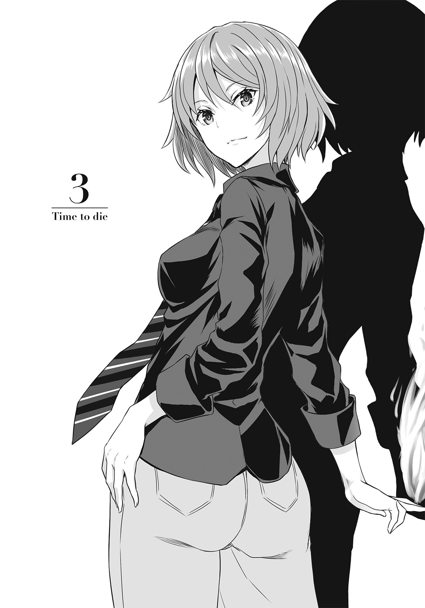

| MONUMENT あるいは自分自身の怪物 | |
| 滝川廉治 | |
この本は縦書きでレイアウトされています。
また、ご覧になる機種により、表示の差が認められることがあります。
 ダッシュエックス文庫DIGITAL
ダッシュエックス文庫DIGITAL
ＭＯＮＵＭＥＮＴ
あるいは自分自身の怪物
滝川廉治
What are heavy? sea-sand and sorrow:
What are brief? today and tomorrow:
What are frail? Spring blossoms and youth:
What are deep? the ocean and truth.
-Christina Rossetti-
重いものは？ 海の砂と嘆き。
短いものは？ 今日と明日。
儚いものは？ 春の花々と若さ。
深いものは？ 大海と真実。
―クリスティーナ・ロセッティ―

※ ※ ※
人類が火を熾すよりも先に、発火の魔術に目覚めた世界。
あらゆる理論や法則に、応用として個人の魔力資質の差異が組み込まれている世界。
ソクラテスもプラトンも、ベートーヴェンもモーツァルトも、フロイトもユングも、ヒトラーもスターリンも、手塚治虫も藤子・Ｆ・不二雄も存在していたけれど、魔法がある世界。
不思議な力が存在しても、結局は似たような歴史を歩んできた世界の物語。
※ ※ ※
俺の事はボリスと呼んでもらいたい。とりえあずこれが、俺にとって自分の名前だと認められるギリギリのものだ。さしあたっては。
この名前の由来はボリス・カーロフという、かの有名な『フランケンシュタインの怪物』を演じた俳優から、らしい。あまり愉快な気持ちのする由来ではないが、それでも困った事に俺に付けられた数々の異名の中では、これだけが唯一マシなものだ。他はどれもこれもひどいもので、そもそも人名として適当でないものばかりだ。
断っておくが、俺は一応まともな人間だ。両親の顔も自分の本名も、本当の国籍も誕生日も知らないだけで、別に人造人間というわけじゃない。
この名前を貰うまで俺の名前はただの数字だった。物心がついた時にはすでに俺は品の悪いゲリラのキャンプにいて「１０１５番」という番号で呼ばれる少年兵にされていた。そして今では地図から消えてしまった国の軍隊と戦わされ、人類に可能な最低の行為の数々を目の当たりにした挙句に捕虜となり、収容所でも「２４１６番」という囚人番号を付けられた。
それから俺は収容所で過酷な洗脳的訓練と教育を受け、新たな忠誠心を刷り込まれた。赤い旗の下でも青い旗の下でも、どのみち俺は鼻をかんだら捨てられるチリ紙と同様の、安っぽい消耗品だった。
しかし、いくらでも換えが利く消耗品の一つであるはずの俺は、何度危険な場所に放り出されても壊れなかった。俺には類稀な生存本能と、医者いらずの頑健な肉体と、いくら目の前で人が死のうと少しも精神が乱れない奇妙な神経の太さがあった。
やがて、ある諜報機関の上官殿が俺の超人的な生命力に気づいた。彼は俺が換えの利かない珍しい道具である事を認めて、「ボリス」というまともな名を初めて俺に与えてくれた。
「同志ボリス。君こそは生まれついての人殺し、最悪の人間性を象徴する怪物だ」
その後、俺の所属していた国家は崩壊して、前述の通り地図から名前が消えた。
どれだけ恥を重ねても、命を絶たない限り人生は続く。
『人生とは開かれた本のようなもの』という昔からの言い回しもあるが、こうして振り返ってみても、俺にとって祖国と呼べる唯一の国家が俺の人間性を滅茶苦茶に壊したのか、それとも生まれつき壊れていたのか、どう判断すればいいのかよく解らない。
ともかく俺は、俺にボリスという名を付けた上官殿が、動乱期の世渡りに失敗して処刑台の露と消えた後（彼の罪状には反体制派への弾圧の他にも、俺のような少年兵への虐待的扱いも含まれていた）多大な好奇心とわずかな追悼の意を込めて『フランケンシュタイン』の原作を読んでみた。
そこには確かに、俺にとって参考になる物語が書いてあった。
まず最初に驚いたのは、怪物がとても知的で饒舌な人物だった事だ。読む前の俺はてっきり怪物の事を「フンガー」としか喋れない、知恵の足りない巨人だと思い込んでいた。
だが実際に描かれていた怪物には、不屈の精神力と、公平な判断力と、可憐なまでに純情な倫理観が備わっていた。
怪物は創造主たるフランケンシュタインに向かってこう言う。
『人はみな惨めなものを嫌う。だったらどんな生き物より不幸なこの俺が、嫌われぬわけがない』
自己の本質を怪物はきわめて冷静に客観視できている。俺も見習うべきだろう。
『信じてくれ、フランケンシュタイン。俺は善良だった。俺の魂は愛と慈悲に燃えていた。だが俺はひとり、惨めなまでにひとりぼっちだった。創造主であるあなたでさえ俺を忌み嫌っている。何の義理もないあなたの同胞達に、何を期待できるだろうか？』
ほとんど全てに共感できる発言だった。俺がかつて一度も善良であったことも、あろうとした事もない点を除けば。
そして怪物の不屈の精神力は、あらゆるものに見捨てられた孤独と辛苦を経てもなお、自らの生を肯定させていた。
『命とは苦悩の積み重ねに過ぎぬものかもしれないが、俺には尊い』
人生とは開かれた本のようなもの。
これから始まるのは、この俺の物語だ。
ひとまず、俺の事はボリスと呼んでもらいたい。
さしあたっては、これだけが、俺にとって自分の名前だと認められる唯一のものだ。
「ここに世界の終わりがあった。そこに私はいた。おそらくは最後の人間として」
枯れ木のように瘦せた腕。日照り続きでひび割れた地面のような肌の色と深いしわ。
老いさらばえた魔術師はそれでもなお強固な意志を感じさせる硬質な声で、自分自身を除けば人類の誰にも理解できない何事かを、情熱的に語り続けていた。
老魔術師とテーブルを挟んだ正面には、彼の孫娘が座っている。彼女はとても聡明で、心の優しい少女だった。
優しい孫娘は祖父の言葉を肯定も否定もせず、ただ黙って聴いていた。祖父を見つめる彼女の眼差しはほとんど彼を憐れむかのようで、哀しげな敬意と同情が込められていた。
老魔術師はそんな孫娘の視線の意味に気づいているのだろうか。そもそも老魔術師の態度はまるで自分の影に話しかけているようで、孫娘の存在に気づいているのかすら怪しかった。
「思うに、ささやかな蝶の羽ばたきが、海を越えた地で嵐をも巻き起こすというのなら」
やや猫背気味の少年が、荒涼とした古い館の前に立っていた。
時刻は夜。肌寒い風が、少年の薄手のコートを撫でていく。彼は眼前の館を見上げる。館の壁は薄汚れ、蔦が生い茂り、もう何年も人の手が入っていない事を物語っている。
少年は館の扉を手で押してみた。重厚な外見とは裏腹に、扉に鍵は掛かっていない。物寂しげな音を立てて、押された扉が開いていく。淀んでいた空気が館から流れ出し、少年の嗅覚に嫌な刺激を残していった。
入ってすぐ、少年は足下へ視線を送った。黒く変色した血が辺り一面の黴臭い絨毯を汚している。血痕は引きずった跡を残して、館の奥へと続いていた。
灯りも持たずに、暗い館の奥へ少年は歩を進める。
やや頼りない印象の、心持ち背を丸めた彼の体が、闇に溶けていった。
暗い通路を歩いていると、どこからともなく、悲鳴のような声が聞こえてきた。
果てしなく高いところから落ちていくような、絶望的な声。
――これで本当に頭でもぶつけて死んでくれてたら、こっちは楽なんだけどな。
と、少年は暗い通路を進んだ先の、やはり暗い階段を上りながら思った。階段は一歩踏み出すごとに、今にも潰れそうな音を出している。どこかが腐っているらしい。この身近な危険性の方が、知らない誰かの悲痛な叫び声よりも少年にとってよほど気掛かりなものだった。
少年は、他人の苦痛や感情にはまったく関心を抱いていなかった。大切なものは自分自身だけだ。その冷淡で利己的な無関心が、彼の生まれついての性分なのか、それとも後天的な体験によるものなのかは、彼自身にも判断できない。ただ彼が普段から息をするのも面倒くさいと思っているほどの極端な面倒くさがり屋である事だけは、間違いなく天性の気質だった。
危うげな階段を無事に上がりきって、少年はほっと胸を撫で下ろした。
ただし彼を取り巻く状況の危うさは少しも変わっていない。石造りの壁には縦横にひび割れが走り、天井は雨漏りでカビが生え、床には様々な汚物が混ざって得体の知れない悪臭を放つシミが広がっていた。悪疫を運ぶネズミの糞の臭いもする。
そしてなによりも、獣の臭いが強くなっている。胸のむかつく臭い。ますます息をするのが面倒になってきた。ともかく少年は、悪臭で息を詰まらせないように、鼻ではなく口で呼吸する事を意識した。細菌の感染に関しては自分の免疫力を信じるしかない。
――昔、上官殿が言っていたな。
何が間違っているのか判然としないのは、この世界の全てが、最初からなにもかも間違っているせいだ、と。
――あの人は、本当は詩人になりたかった。だから本をたくさん読んでいた。
それが何を間違えてか軍人になり、最後は戦争犯罪者にまでなった。その数奇な生涯を思えば実に説得力のある言葉だろう。
昔の事を思い出しつつも探索を続けるうちに、少年は獣の食事部屋を発見した。
不快なハエの羽音が絶え間なく鳴り続ける、大量の鮮血で彩られた部屋。
いくつもいくつも並んでいる、吊るされた肉の塊。獣は被害者の肉体を、邪魔になる骨が腰椎くらいで済む骨盤の上の辺りで切断し、上半身と下半身に分けたあと、それぞれをフックに掛けて吊るしていた。切断の際に取り除かれた腸などの邪魔な内臓は、部屋の隅の大きなゴミ箱へ、生ゴミとして捨てられている。
悲惨な光景を前に、しかし、この少年は特に思うところもなかった。
ああ、やっぱりなあ、とごく平凡な呟きを心の中で漏らし、納得しただけだ。
少年は自分が、この捕食を行った獣と同類である事をきちんと自覚していた。獣との違いは単に、殺す相手を選べる事だけだ。日々の糧を得るために殺生を働いているという点ではまったく同じでも、そのささやかな分別の有無が、人間社会での立場を大きく変える。
「アアアァァ――！」
どこかへ落ちていくような、太く長い遠吠えの声がまた聞こえてきた。
さっきよりもずっと近く、大きい。
――はいはい。今行きますよ。
食事部屋を出て、さらに通路を先へ。
平面の床を歩いているはずだが、どこかへ沈んでいくような感覚がする。まるで泥沼に足を踏み入れていくような感覚。きっと床が腐っているせいだろう。
目当ての獣は、月の見えるバルコニーで見つかった。
少年が発見したその時、獣はまだ人間の男性の姿をとっていた。上半身は裸で、右手に短い刃物を握っている。下半身はレザーのロングパンツを着ているだけで、足下は裸足だった。
獣はバルコニーのタイルの床に座り込み、夢中になって何かをやっていた。少年はひとまず獣を刺激しないよう、静かに近づきつつ、様子を見守る事にした。
中天に昇った三日月がかすかな光で獣を照らし、血に濡れたレザーパンツは黒々とした気味の悪い光沢を放っている。
獣は、右手に持ったクリスナイフ――刀身がくねくねと蛇行した形になっている奇妙な刃物を、自分の手足に突き刺しては引き抜き、また突き刺していた。
苦痛を感じていない、というわけではなさそうだ。
獣はナイフを高々と振り上げると、右の太ももへ躊躇う事もなく突き刺し、また引き抜く。ナイフの曲折した部分が、釣り針の返しのように肉を搔き回し、傷をさらに深いものにする。ナイフが引き抜かれ、開いた傷口から鮮血が噴き出す。
そして獣は、大きな悲鳴をあげる。
太く長い、どこかへ落ちていくような声で。
一連の獣の狂態を、少年は元は書斎だったと思しき部屋の中から観察していた。室内の装飾や家具は、なにもかも壊れていた。バルコニーと書斎を隔てるガラスのドアも、枠組みだけを残して粉々に割れていた。
その落ちているガラスの破片を、少年はつい踏んでしまった。自傷行為に耽る獣の姿があまりにも異常だったために、注意力を奪われて犯したミスだった。
少年の足下で、砂利を踏んだような音が鳴る。脊髄反射の速度で獣は顔を上げ、少年と視線がぶつかった。
獣は色白で瘦せた顔つきの、少し不健康そうな線の細い男性という外見だった。髪は茶色で髭は生やしておらず、出血のせいか薬物中毒のような顔色をしている。ただひたすら空っぽな印象の、理性や情緒の働きが少しも感じられない黒く濁った瞳で少年を見つめていた。
――クソッ。なんて日曜日だ。
小さな失態を犯したが、少年は気を取り直して獣に声をかけた。
「やあ。なにをしているのか、質問してもいいかな？」
「......？」
わざとのんびりした声を出しつつ、少年はごく日常的な言い回しで訊ねてみた。その平凡な問いかけに、獣は怪訝そうな表情で反応している。少年が何者なのか、何の目的で近づいてきたのか、困惑しているようだ。
少年の顔には見るからに善良そうな、品の良い柔和な微笑が浮かんでいる。かつて参謀本部情報総局に所属していた頃、わざわざ心理学者から訓練を受けて作り上げた、大抵の人の警戒心を解く事ができる自慢の笑顔だ。
笑顔だけでなく、全体的に見て少年は品の良い姿をしていた。彼の色味の薄い灰色の瞳にはひどく儚げな雰囲気がある。その顔は細面の華奢な作りで、肌は雪のように白い。ナチュラルショートの黒髪には光輪を戴いているような美しい艶まであって、容姿だけならそれこそ天使のように善良そうだった。
そしてなによりも肝心なのは、この少年が武器らしきものを携行しているようにはまったく見えない事だ。この外見から「彼は元マルクス・レーニン主義者のスパイであり、祖国が崩壊した今となっては、金のためならどんな仕事でも請け負う思想のないフリーの工作員となっている」と見抜くのはいかなる名探偵にとっても不可能に近いだろう。獣もこの少年を危険人物だとは判断せず、凡庸な不審と警戒の態度を示すに止まっていた。
こうして二人の人でなしは、薄氷の上に立っているようなきわどさではあったが、どうにか話し合いのできる状況下で見つめ合っていた。
互いに様子を窺い合う、短い奇妙な沈黙の後、再び少年が口を開く。
「なんというか......僕の見たところだと、あなたは自分の手や足を、その変わった形のナイフを使って、自ら傷つけているように思えるんだ」
ネガティブな意味を持つ言葉はできるだけ使用せず、迂闊に相手を刺激しないのが交渉術の基本だが、この異常すぎる状況でその話題に触れないのは、あまりにも不自然すぎて逆効果だろう。少年は彼なりに言葉を選んでやんわりと、見たままの事を訊ねてみた。
「......」
獣は相変わらず何も答えない。メランコリックな表情。
少年は気さくな笑顔を少しずつ真面目なものに変えて、相手への理解と共感を示してみた。当然だがその間も、獣の動向を油断なく観察している。今のところ、この獣から襲いかかってくるような危険性は少しも感じられない。むしろ自殺衝動を抱えているように見えた。
「すごく痛そうだね。手当てをさせてもらえないかな」
「......」
そんな少年の努力もむなしく、依然として獣は返事すらしない。もしかしたら人間の言葉を理解できないのかもしれない。
「そういえばまだ名乗ってなかったね。僕の名前はボリス・カルノフ。どうかボリスと気軽に呼んでほしい」
「......ボリス......」
やっと獣が呟きを漏らした。どうやら会話は可能らしい。とりあえず、これまでの友好的な態度の演技が無意味な独り言で終わらなかった事にボリスは安堵した。
「よければ、なんのためにそんな事をしていたのか、僕に教えてくれないかな？ 例えば自分の手足から耐え難い不快感が湧いてくるとか、エイリアンに操られている感じがするとか？ それとも、なんというかその、ひどい事をしてしまった自分自身を罰するため？」
ボリスは淡い期待を込めて獣に問いかけた。もしかしたら、この獣には説得が通じるのかもしれない。血も汗も流さずに話し合いで解決できるのかもしれない。面倒くさがりのボリスにとって、それは実に素晴らしい希望だった。
「......なんのために？」
だが獣は、ボリスの質問に失笑を返した。
獣は危なっかしい動作で立ち上がる。穴だらけの両脚はガクガクと震えて、傷口からは鮮血が脈拍に合わせたリズムで零れ出る。通常なら立ち上がれるはずのない大怪我だが、そういう常識論を言い出しても始まらない。相手がまともじゃない事は、あの食事部屋でとっくに判明していた事だ。
「こんな事に理由があるというのなら、お前こそ俺に教えてくれ。こんな風に自分で自分の手足を痛めつける行いに、なにかまともな理由を見つけられるのなら」
まったく意味が解らない。違う星の生き物に話しかけられている気分だ。ともあれボリスは素早く頭を働かせ、なんとか言いよどむ間を作らずに返事をした。
「なるほど、人生なんてさっぱりわけの解らないものだよね。この世の中で起きる悪い出来事の大半は、理由や意味を考えるのも空しいくらい無差別的で理不尽だ。
だけど、それでも僕らは同じ人類じゃないか。いくらこの世界がひどい場所だろうと僕らは互いに手を取り合って、支え合う事ができるはずだよ」
我ながら子供騙しの説得だったが、なにしろ急場なので仕方がなかった。それにこのくらい幼稚なメッセージの方が、こういう単純そうなタイプには有効かもしれない。
だが、この獣はボリスの推測よりもずっと複雑な悩みを抱えていたようだった。
「なんのために？ 痛みを、何かを感じるために？ なんのために？ 自らを傷つけ、罰するために？ なんのために？ 自分に赤く温かな血が流れている事を、生きている事を確認するために？ なんのために？ なんのために？ なんのために？」
気味の悪い呟きを漏らしながら、獣は彼の『魔法』を使い始めた。
細い手足の筋肉が異様なまでに膨らみ始め、ナイフの傷穴が急速な勢いで治っていく。全身を覆うように体毛が生え始める。
――よくない展開だ。とても気に入らない。
輝きのない憂鬱な人間の目が、爛々と輝く獣の目に変わっていく。血に汚れたナイフが床に転がり落ちる。長い爪の生えた獣の手では、もうそんなものを握る事はできなくなっていた。もっとも、今更その程度のチンケな武器を持つ必要性はまったくないが。
「......あなたの抱えている悩みまでは解らないが、あなたが今、とても苦しんでいる事は僕にも解る。力になりたいんだ」
「アオァッ――！」
鋭い犬歯がはみ出ている裂けた口から、獣は壮絶な雄叫びを発する。それまでの悲痛な声とはまるで違う、空を裂くような力強い狼の遠吠えだった。
そしてボリスは、説得を諦めた。
「ああ、そう、解った。助けなんかいらないって事だね、うん」
獣が飛びかかってくる。
武術も何もあったものではない、動物的としか形容できない猛烈なタックル。鋭利な爪の生えた腕を伸ばし、猛然と迫ってきた獣を、ボリスは間一髪で避けた。
そのままボリスは獣の背後に回ったが、獣は動物的直感でその気配を感じ取ったらしく、すかさず両腕を床に着けると、馬の後ろ蹴りのような格好でボリスを蹴った。
体が浮くほどの激しい衝撃がボリスの胸を貫いた。呼吸が詰まり、目の前が暗くなる。なんとか倒れずに着地できたものの、勢いを殺せず二歩、三歩と後退りした。
「......」
胸部の蹴られた辺りを左手で撫でながら、ボリスは反省した。
――どうもいけない。今夜は調子が狂いっぱなしだ。
くだらないミスが続いている。相手がもう少し強かったら二回は死んでいるところだ。
蹴り足を戻し、手を床から上げ、ゆっくりと獣が振り向いた。
爛々と赤く輝いている、獰猛な殺意を宿した肉食獣の目。破壊と殺戮以外の何物も必要としていない、狂気と悪意で心を満たした、とても幸せそうな目。
まだ人間らしさを保っていた頃の鬱々とした暗さなど、今は影も形も見当たらない。ボリスは少しだけ、この獣が羨ましいような気分を感じなくもなかった。
「......そもそも最初から答えを知りたくもない質問なんかしたのが間違いだったよ」
独り言のようにボリスが呟くと、獣は笑うような低い唸り声を返した。
再び攻勢に出た獣は、力任せに両腕を振り回す猛烈なラッシュを繰り出して、ボリスに反撃のチャンスを与えなかった。獣はまるで無尽蔵のスタミナを持っているかのようだった。とんでもない大振りの攻撃を繰り返し、その全てが空を切っているが、速度は少しも衰えない。
ボリスの頭を狙って外れた獣の拳が、石造りの柱を直撃する。白い石柱は一撃でチョークのように砕け散ったが、殴った獣の拳も骨折して、骨が肉を突き破り飛び出した。
それでも、獣は攻撃の手を休めなかった。いくら傷を再生する力があろうと痛みまでは消えていないはずなのに。
――自分の体も命も、全てがどうでもいいというわけか。
見るべきものは見た。もう十分に。後は、やるべき事をやるだけだ。
魔法とは、人の願い――正確にはある程度以上の知能を持つ生物の思念から発生するエネルギーを利用して、通常の自然法則を捻じ曲げる特別な力を行使する技術の事だ。
そして魔力は、個人的資質によって大きく左右される、極めて不安定なものだ。
この世界ではおままごとで遊ぶ幼児でも、石ころをパンに、水をミルクに変化させる程度の魔法なら簡単に使える。だが、そのパンやミルクの味わいは人によって大きく異なる。ほとんどのパンはまともに食べられない泥のような味になり、ミルクも水に白の絵の具を混ぜただけのようなものになってしまう。ごく一部の創造的な魔法の才能に恵まれた人間だけが、石ころと水を見掛けだけではない上質なパンとミルクに変化させられる。
要するに、魔法は人の願望を原動力にして空想を現実化する現象を引き起こすが、その結果には大きな個人差があり、科学のように一定ではない。一見あらゆる不可能を可能にする万能の技術のように思えて、実際には一人の人間が有効に使いこなせる魔法は二つ三つあれば良い方であり、役に立つ魔法が一つも使えないという人も少なくはない。
ボリス・カルノフは極端な面倒くさがりであり、疲れる事が大嫌いだ。
別にボリスに限らずとも、世の中の大抵の人間も疲れる事を嫌う。が、筋金入りの面倒くさがりであるボリスの場合は、たとえ死のリスクを背負ってでも魔法を使うなんて疲れる事をしたくない。
例えば誰だって美味しいものを食べたいと思うけれども、そのために出せる費用や労力にはそれぞれ差があり、その程度の差で美食家と呼ばれる人種が生まれる。それと同じ話だ。
――とはいえ、このままだと確実に殺されるな。
獣が豪腕を振るってボリスに迫る。その暴力の渦に巻き込まれたものは、なんであれ手当たり次第に薙ぎ倒されて吹き飛んでいく。
ボリスはジリジリと後退し、バルコニーの端に追い詰められた。この館はかなり古いが造りは立派で、二階建てにしては結構な高さがあった。ここから飛び下りると最悪、足を骨折するかもしれない。
それでも、ギリギリまでボリスは自分の魔法を使うべきかどうか渋っていた。
――もう少し待ってたら、都合よく心臓発作でも起こして死んでくれないかな。
ボリスがここまで極端な物臭思想の持ち主になったのは、生まれついての気質に加え、祖国崩壊の影響がある。
かつて――共産主義者のスパイとして国内外のテロリストと戦っていた頃――ボリスは自分の事を正義の味方だと思うほど浅はかではなかったが、少なくとも法と秩序を脅かす犯罪者達から善良な一般市民を守っているという程度には、自らの行いを正当化して考えていた。
しかし、全てはほとんど一夜にして覆ってしまった。
それまでの善悪は完全に逆転し、ボリスが積み上げてきた祖国への功績は、単なる恥ずべき国際犯罪になってしまった。逆にボリスが検挙してきた、共同体を破壊し人民の幸福を奪わんとするテロリストとして処理されてきた反動分子達は、果敢にも国家社会主義に抵抗して民主主義に殉じた『英雄』として祀り上げられた。
不幸中の幸いは、明らかな加害者側の一人であったにもかかわらず、ボリスも『洗脳された少年兵』という被害者のカテゴリに認定された事だ。おかげで今も自由に行動でき、こうして人喰い狼とのんきに殺し合いもしていられる。
――気負えば気負うほど、必死になればなるほど、人は滑稽な存在になるだけだ。
ボリスの腰にバルコニーの手摺りが当たっている。「差し出がましいようですが、あなたこれ以上後ろに行こうとしたら落ちますよ」と慎ましく忠告してくれているようだ。
一方、ボリスを追い詰めた獣は、竜巻のような拳の連打をようやくやめた。ボリスへの止めの一撃を放つために、陸上選手のクラウチング・スタートの構えにも似た四つん這いの体勢になりつつ、裂けた口をさらに大きく広げて、残忍そうな笑みを浮かべる。それを見たボリスもなんとなく愛想笑いを返した。
そして獣は、四つん這いの体勢から一気に四肢の力を解放して、巨大な砲弾の如くボリスに飛び掛かった。口の端から大量の涎を垂れ流し、逃げ道を塞ぐべく両腕を左右へ伸ばしている。ボリスを押し倒して頭から丸齧りにするつもりだ。避ける隙間はまったくない。
ほんの一瞬、ボリスは自分の死をイメージした。
獣の爪がボリスの肩の肉に食い込み、そのまま押さえつけられて身動きを取れなくなり、為す術なく顔や喉を牙で嚙み裂かれる最期を。
――死んだらもう何もしなくていいからなあ。
怠け者もここまでくると病気の域だが、さすがのボリスもこの破滅願望に身を委ねる気にはなれなかった。今のところはまだ。
ボリスは右手を背後の手摺りに当て、軽々と自分の身を持ち上げて乗り越えると、迷いなく館の外へ飛び下りた。正面を塞がれている以上、逃げ道はそちらしかない。
バルコニーから落下する一瞬、ボリスと獣の目が合った。獣は明らかにボリスを馬鹿にする目つきを浮かべていた。飛び下りたところでまた追いかければいい、所詮は無駄な足搔きだと思っているのだろう。命懸けの脱出だが、ほんの数分の延命処置に過ぎないものだ、と。
――実際、普通にやればその通りだろうね。
ボリスは観念して、自分の魔法を使った。
獣の追撃は素早かった。全力を使ったタックルこそ不発に終わったものの、彼は気落ちする事もなくすぐにその場から跳躍して、バルコニーから飛び下りる。
普通の人間なら足首を折りかねない高さだが、魔力で肉体を強化している獣にとってはどうという事もなかった。強靭な手足で地面を受け止め、着地に成功する。
獣は、先に飛び下りた間抜けな少年の姿を求めて、左右を見回した。
しかし、どこにも見つからない。
戸惑いつつ、獣は背にする館の方にも振り返ってみたが、そこにも少年の姿はなかった。獣が少年を見失ったのはほんの一瞬だ。見えなくなるほど遠くまで行けるわけがない。
ふと、獣の脳裏に奇妙な戦慄が走った。動物的直感が正体不明の危険を感知して、獣の視線を頭上の、さっきまでいたバルコニーに向けさせる。
そこには、先に飛び下りたはずの少年の姿があった。
相変わらず少年は愛想のよい微笑を浮かべている。完璧に計算し尽くされた、魅力的で無害そうな天使の微笑み。だが、少年の右手の上では小さな金属の塊――数本のボルトやナットが魔力を帯びて銀灰色に輝きながら浮かんでいた。
少年の掌の上から、一本のボルトが消えた。それが獣の見た最期の光景だった。
次の瞬間、目眩を起こしたように獣は倒れ、その次の瞬間には、心臓が停止していた。
バルコニーから獣の死骸を見下ろしつつ、ボリスは心の中で呟いた。
――まるで魔法みたいだろう？ その通り、魔法を使ったんだ。
ボリスは瞬間移動魔法のエキスパートだ。Ａ点から離れたＢ点へ、光よりも速い『一瞬』で移動できる。全身の血が濁るような凄まじい疲労感に襲われる事を代償にして。
地面に落ちる途中で魔法を使い、上空で獣をやり過ごし、またバルコニーに戻る。ボリスが披露したイリュージョンの正体はそれだけの事だった。
それからボリスはポケットから取り出したボルトに魔法を掛け、獣の脳内に転送した。ボリスはいつもポケットの中に、ボルトやナットやネジを入れている。これらは武器弾薬と違ってただの工具だからどこへでも持ち込みが容易だし、脳機能を破壊するのに必要十分な大きさを兼ね備えてもいる。
脳の中にボルトを打ち込まれて生きている人間は滅多にいないが、今回のように冷静に狙う余裕がある場合、ボリスは脳の下部に位置する脳幹を狙うようにしている。
大脳と脊髄を繫ぐ脳幹は、呼吸・血圧・心拍などの生存上最も重要な身体機能を司る部位であり、ここを破壊すれば万が一にも仕留め損なう心配はない。逆を言えば脳の他の部位を狙う事により、相手に深刻な損傷を負わせた上で生き残らせる事も可能だが、ボリスはよほどの金を積まれない限りそういう依頼は引き受けない事にしている。瞬間移動の魔法を扱える魔術師自体は珍しくないが、ボリスほどの精度と応用力を持つ者は極めて稀だ。この腕は決して安く見られたくない。
もともとこの獣を殺すだけなら、姿を確認した時点でボリスには容易な事だった。
しかしボリスは、可能ならこの獣を説得して連れて帰るように依頼されていた。今回ボリスを雇ったのは誘拐された被害者の遺族ではなく、この獣の親族だったからだ。当然ながら彼らの望みは被害者の救助や復讐ではなく、加害者である獣の保護と隠匿であり、もしそれがどうしても難しいようであれば、次善の策として発覚前の抹殺を望んでいた。警察に捕まり一族の名誉を汚す前に、闇に葬ってくれという話だ。この腐臭漂う恐怖の館も裕福な彼らの所有する不動産の一つだった。
参謀本部情報総局で受けた訓練は、今でも社会を生き抜くための武器として活用している。だがその武器は同時に、ボリスの生き方を限定する枷にもなっている。
他人と比べて勝っている点がそこしかないから、いつまで経っても暴力の世界から身を遠ざける事ができない。その皮肉な事実にボリス自身も気づいてはいるが、それでも他の生き方が解らないのだ。
人を騙す事と殺す事しかボリスには取り得がない。だから彼は、それにしがみついていなければならない。
結局、昨日の正義が今日の悪になり、反逆者が英雄として扱われるようになっても、自分の体を流れる血の色まで変わるわけではなかった。
ともかく、ボリスはやってくれと頼まれた事をやった。依頼内容に関して思う事がないわけではないが、仕事は仕事であり金は金だ。ボリスはＰＤＡ（携帯情報端末）を取り出して、この仕事を斡旋してくれた代理人に電話を掛けた。
『アロー、ボリス』
「こんばんは、アレクサンドラ」
話しながら、ボリスは慎重にバルコニーから下りて片手でぶらさがり、できるだけ低い位置に身を運んでから手を離して着地した。簡単そうに思えたがやってみたら意外と疲れた。もしかしたら魔法の方が手っ取り早い上に楽だったかもしれない。
『なにをしているの？』
「もちろんお仕事をしているよ。君を満足させるためにね」
ボリスは獣の死骸に近づいた。獣化の魔力が切れた今では、ただの瘦せた男性の姿に戻っている。見開いた目を覗き込み、瞳孔の散大を確認。続いてボリスはまだ温かい肌に触れ、生体反応と魔力反応を確認した。魔法を使った偽装の可能性もない。確実に死んでいる。
最後の仕上げとしてボリスは獣の死骸を銀灰色の魔力で包み込み、百メートルほど先の地中に向けて転送した。とても疲れたがこれでこの獣の死は、遥か遠い未来、人類が滅亡した後に新しく発展した知的生命体の考古学者が地層から死骸を掘り出すその日まで発覚する事はないだろう。どう解釈してもこの地層と死骸の年代が合わないと遠未来の学者達を混乱させる事になるかもしれないが、おそらくそれは現行の人類の誰にとってもどうでもいい話だ。
「たった今、お仕事を終わらせたよ」
『待って、結果を当ててみせる。目標の説得に失敗して殺したんでしょう？』
「わあ、すごいや。どうしてわかったんだろう」
棒読みでわざとらしく感嘆の声をあげたボリスに、代理人はくすくす笑いだけを返した。
ボリスにとって、人でなしに生まれついて良かったと思える貴重な瞬間だ。こうして、他の人でなしと笑いの感覚を共有できる瞬間は。
「とにかく音声データを送るよ。これで先方が納得してくれるといいけど」
ボリスは通話状態を維持したままＰＤＡを操作し、獣との交渉の録音データを代理人に送信した。それにしても便利な世の中になったものだと心の中で独りごちる。素質を問わず、魔力すら使わずに、小さな端末一つでこんな事まで出来るなんて。まるで魔法みたいだ。
「もう届いた？ よかった。ちなみに依頼人が情報をくれた館の二階に、連れ去られた人達の死体がゴロゴロ転がってたけど、そっちの処理は契約外だから何もやってないよ」
『そうね。その件に関しての調整はこちらの仕事になるわ』
「どうも。これで今回の依頼は完了したね。それじゃ僕は次のお仕事が来るまで、ぐっすりと惰眠を貪る事にするよ」
電話を切ろうとしたボリスを、代理人は少し慌てた声で呼び止めた。
『待って。実は次の依頼が来ているの。あなたにしか頼めない、難しい仕事が』
長い電話になりそうだった。ボリスは館の壁に寄りかかり、楽な姿勢になってから話の続きを促した。
「どんなお仕事？ 僕にしか頼めないほど難しいという事は、大統領でも殺せって話かな」
『あなたと同じ名前のあのアル中を始末したら、間違いなく英雄になれるとは思うけど、残念ながら違うわ』
共産主義体制が崩壊した後、天然資源に恵まれたボリスの祖国は外資系企業のいい餌場になった。さらに資本主義化した政治家達の腐敗と癒着が重なって、財政の要である中央銀行までもが破綻。今や紙幣は紙切れ同然のハイパーインフレ状態になっている。
だからボリスの夢は、たくさんの外貨を稼いで国外へ脱出し、暖かい南の島で優雅に、もう決して働かずに残りの人生を過ごす事だった。そのためならなんだってやる。
「金になる話？」
『当然。これまでで最高の報酬があなたを待っているわ。その分、期間はかなり長いけどね』
「報酬さえ確かなら何も問題はないよ。どこへ行って、誰を殺せばいい？」
『それが、今回の依頼は殺しじゃなくて警護なの。より正確には、援護かな』
ボリスは少しだけ戸惑いを感じた。話がまったく見えてこない。
「悪いけどシューラ、君の言っている事がよく解らないよ。僕は人殺ししか能のない、哀れで愚かな生き物だよ。誰かを守るなんて立派で高尚なお仕事はできっこない。それくらいは君だってよく知っているはずだ」
『ええ、よく知っているわ。そうやってすぐに自分の可能性を閉じてしまうのがあなたの悪い癖よ、ボリス』
代理人は情報を小出しにしてボリスを焦らす事を楽しむように、くすくす笑っていた。
『あのねボリス。あなたは〈モニュメント〉について、どれだけ知っているのかしら？』
「可哀想なアトラス。この世の全ての苦しみを、たった一人で担っている」
孫娘には、祖父の情熱がどこから来るのかまったく解らなかった。
彼女は祖父の本来の世界には存在しない人間だった。祖父は彼女の事を『蝶の羽ばたき』の一つだと認識している。遠く離れた場所で予測不能の嵐を巻き起こす、混沌の娘だと。
祖父の抱える世界はあまりにも寓話的で、そこには無意味なものなど何一つ存在していないかのようだった。
あらゆるものが、物語の中で必要な役割を演じている。
あらゆるものが、存在する事に理由と意味を持っている。
彼女の祖父は、まるで運命に立ち向かう古い神話の主人公のようだった。
ハイネの詩で謳われるように、たった一人で全世界を担い、苦悩している。
「計り知れない愛を求めて、計り知れない不幸に落ちていく」
太平洋上、ハワイ諸島から赤道までまっすぐ南下した位置に、ピラミスという島がある。
島の大きさはハワイ島とほぼ同じ約一万平方キロだが、火山を抱えるハワイ島と違って起伏のない平坦な地形のため、数字よりもずっと広々とした印象を受ける。位置が赤道直下なので気候は熱帯。強い低気圧が発生しやすいものの、温暖湿潤な常夏の島だ。
その島の地下には、今から約五百万年前に滅んだと推定されている、古代魔法文明が建造した巨大な遺跡が広がっている。
その遺跡がどのような目的で作られたのか、どのような機能を果たしていたのかは、未だにまったく解き明かされていない。神殿、シェルター、倉庫、研究施設などなど――仮説だけは山のように積まれたが、まだ誰も決定的な証拠を摑めてはいない。
そのためピラミスの地下遺跡は、古代文明最大の遺跡として、ただ〈モニュメント〉とのみ呼ばれていた。
ボリス・カルノフの世界に『偶然』という概念は存在する余地がない。
かつて、上官殿はボリスにこう教えた。『哲学において偶然とは、異なる主題で行動している二者以上の因果系列の線が接触する点の事を意味している』
その時のボリスには上官殿の言葉がさっぱり理解できなかった。今もちゃんと解っているかどうか自信がない。ともあれ、人はみな自分だけの主題を持って行動している。偶然の出会いとは要するに自動車の接触事故と同じ理屈のものであり、相互の主題への無理解から発生するロマンチックな勘違いに過ぎない。
そして、わずかでも状況に不自然さや出来過ぎたものを感じた時には、何らかの陰謀や工作の危険性を警戒する必要がある。
今、ボリスは『偶然』を装って、ハワイ州ホノルル空港の到着ロビーに立っていた。
ここからさらに飛行機を乗り継いで南方のピラミス島へ向かうのだが、その途中、ボリスは『偶然』にもある人物と出会って、その友人になる予定だった。
但し、ボリスにとっても計画性があるのはここまでだ。その人物を利用して今回の護衛対象と親しくなり、無理なく自然に接近したその後は、出たとこ勝負でやっていくしかない。
刻々と表示が更新される電光掲示板の発着案内によると、その人物が現れるまでまだかなりの余裕があった。待ち時間をただの無駄にしたくないボリスはＰＤＡを取り出して、今回の任務に関する諸情報をおさらいする。
――今度のお仕事は、少しややこしい。不透明な要素が多すぎるんだ。
ボリスのＰＤＡに、一人の少女の画像が表示された。
上品なストレートロングの黒髪と、切れ長の冷めた眼差しが印象的な東洋人の少女。才女らしい知的で落ち着いた雰囲気が画像越しでも伝わってくる。
名前は千種トウコ。
国籍は日本、年齢は17歳。良家のお嬢様で、両親の他に妹が一人いる。
シューラの調査によると、トウコはおよそ一億人に一人といわれている『賢者』の魔力資質を持った魔術師らしい。訓練と学習次第で、あらゆる魔法を有効に使いこなせるという天稟に恵まれた人間。国際的に付け狙われるだけの希少価値があるのも当然だ。
しかし、今回のボリスの任務はこのトウコを誘拐する事ではなく、逆に彼女が『ピラミス魔法学院』を卒業するまで、彼女の意志を尊重しつつ、あらゆる危険から護り抜く事だった。
物臭ボリスにとっては信じられないほど面倒な仕事だが、その報酬もまた信じられないほど高額だった。この仕事さえ無事に終わらせれば、ボリスはついに念願の南の島暮らしを始められるだろう。ハワイ、グアム、サイパン、オキナワ、バリ――心の中で候補地の名を呟くだけでも、ボリスは顎の下をくすぐられている猫のような気分になれる。
ピラミス魔法学院――ピラミス島の地下に広がる〈モニュメント〉の調査と研究を効率的に進めるために創立された、世界最高の魔法学府。ピラミス島にはこの学院の関係者しか居住しておらず、事実上の独立国家ともいえるのかもしれない。軍隊も憲法も存在しないが。
ピラミス島は今から約四十年前――世界が冷たい戦争を演じていた時代――に、ロバート・ウォルトンというイギリス人の冒険家によって発見された。
それまでの多くの航海者がこの島を発見できなかったのは、島全体に強力な結界が展開されていたためといわれている。ウォルトンは冒険航海の途中、舵が故障し漂流状態に陥ったのが逆に幸いして、存在を意識できないまま島に流れ着き、〈モニュメント〉の第一発見者になる名誉を手に入れた。
冷戦の緊張・最終戦争への不安が高まっていた当時、〈モニュメント〉の発見は人類全体にとっての大きな希望となった。失われた古代魔法文明の叡智によって、現代社会が抱える複雑な諸問題の解決が図れるのではと期待されたのだ。少なくとも過去の失敗を学ぶ事で、文明の滅亡を回避するための教訓くらいは得られるのではないか、と。
ウォルトンはピラミス島を南極のような中立地帯（軍事利用の禁止・領有権の凍結）にするべく奔走する一方、〈モニュメント〉調査のために集った学者達を組織化。世界一流の人材が集結している状況の有効活用と人手不足の解消、さらに発見された古代魔法技術の流出を防ぐ事を目的としてピラミス魔法学院を創立し、その初代理事長に就任した。
だが、それから約四十年――冷戦が終結し、ボリスの祖国が崩壊するほどの歳月――が流れても、学院の魔術師達は未だに〈モニュメント〉の正体を突き止められていなかった。
ボリスが本物の新入生になったかのように図書館へ通って〈モニュメント〉に関する知識を熱心に仕入れている間、忠実なる代理人であるシューラは、ボリスの本物の親戚になったかのように学院への入学手続きを済ませてくれていた。
『名前はボリス・カルノフのままでいいの？』
「構わない。どうせ引退するまでの名前だから」
『年齢は対象と同じ17歳にしましょう。その方が親近感を抱かれやすいでしょうし、実際にもそのくらいの年頃だと思うから。誕生日は昔のコードネームから10月15日、出身地はウクライナのキエフにしようと考えているけど、それでいいかしら？』
「そこら辺は僕自身にもよく解らないからね。その線でお願いするよ」
『あなたの個人情報ではっきりしているのは、検査可能な血液型だけね』
「そうだね。あの憎むべきヒトラーや我らが親愛なる同志スターリンと同じＡ型だ」
『その、あなた独特の自虐的なジョークをもう当分は聞けなくなると思うと、さびしいわ』
「シューラ・シューラ。嫌われ者の僕の事をそんな風に言ってくれるのは世界で君だけだ」
事務的な事柄の調整は、有能なシューラに一任しておけばいい。さしあたりボリスにとって気掛かりなのは、トウコの護衛を依頼してきた人物が素性を隠していて、どうやらピラミス魔法学院の関係者らしいという漠然とした推測しかついていない事だった。
ボリスの代理人であるシューラにこの仕事を持ち込んだのは、彼女と同じくプロの仲介業者だった。シューラによるとその仲介業者もさらに他の仲介業者から頼まれたらしく、どうやらこの依頼は地球を半周くらい旅行した上でボリスの元に届いている。依頼人は非常に裕福で、かつ極端な秘密主義者のようだった。
無論、裕福な依頼人が身元を隠したがる事自体は珍しくないし、万一報酬が全額支払われない場合にも、間に入った仲介業者が補償する事になっているから大きな心配はない。が、素性だけでなく目的まで不明となると、さすがに落ち着かないものを感じる。
ボリスに千種トウコを護らせる事で、依頼人はどういう利益を得るのか、そもそもどのような脅威から彼女を護らなければならないのか。この依頼には不透明な部分が多い。
それでもこの依頼は、引き受けざるを得ないほど魅力的だった。ボリスにとっては言うまでもなく報酬の額が、シューラにとってはピラミス島に工作員を入れられる絶好の機会が。
〈モニュメント〉では、五百万年も過ぎた現在でもまだ機能している様々な呪具が発掘されている。そうした『人工遺物』の研究はピラミス魔法学院が独占的に行っていて、倫理的に問題があると思われるものを除くほとんどの研究成果を、特定の国家や企業の利益にならないよう公明正大な形で公表している。
もしボリスが、新発見のアーティファクトの研究データなり実物なりを公表前に島外へ持ち出せたなら、どこの企業でも喜んで言い値で買い取ってくれるだろう。
そんな事情もあって、ピラミス魔法学院では能力以外の面でも非常に厳密な入学審査が行われているのだが、今回のボリスは謎の依頼人による謎の手配のおかげで審査が免除され、必要な書類を揃えるだけで潜入可能だった。これならビデオ屋の会員になるようなものだ。依頼人が学院の関係者、それもかなり上位の幹部である事は確定的といえるだろう。
以上が、今回の依頼についてボリスが知っている情報のほぼ全てだった。あまり大した事を知っているとは我ながら思えないが、ともかくボリス個人への罠の気配は特に感じられない。依頼人の事はどことなく信用できない気がするものの、任務を進めるうちにいずれ正体も見えてくるだろう。千種トウコの生存と学院内での活躍によって、何らかの利益が発生する人物である事は間違いないのだから。
時間が来た。
電光掲示板が更新され、目当ての人物を乗せた機が到着した事を告げる。ボリスは最後に、シューラへ宛てて短いメールを書いた。
ピラミス島での通信は全て傍受されるリスクがある。ボリスのＰＤＡは工作員用の特注品であり、最新の技術で暗号化されているが『暗号化された情報』を誰かが島外へ送っている事までは誤魔化しようがない。それに学院の技術力を考慮すると内容を解読されてしまう事も十分にありえる。島にいる間は、よほどの緊急を要する案件でない限り、シューラとの連絡を控えなければならない。理想は終わるまで一度も連絡しない事だ。
『さよなら、シューラ』
シューラの返信はびっくりするほど早かった。きっと予め用意していたのだろう。
『また会いましょう、ボリス』
ボリスはほんの少しだけ、さびしさに似ていなくもない気持ちを感じながらＰＤＡの電源をオフにし、シャツの胸ポケットへ入れた。
入国審査のゲートからロビーに人が溢れ出してくる。成田発ホノルル行きの便に乗っていた人々。その大多数は一般の観光客で、ツアーの送迎バスやタクシー乗り場へと向かっていく。空港から速やかに出て行こうとするその流れは、ボリスにとって何の関係もない。
目当ての人物は、乗り継ぎの手続きに向かう流れの中で見つけられた。もともとそちら側の人数は少なかったし、ボリスのように顔認識能力（人の顔を憶え、見分ける力）を鍛えた工作員にとっては簡単なミッションだった。
彼女の名前は千種ナナコ。
千種トウコの二つ年下の妹。彼女も優秀な魔術師らしく、この九月からピラミス魔法学院の生徒になる。ボリスにとっては渡りに船というべき存在だ。すでに心の中でボリスはナナコの事を『別に死んでもいい方の千種さん』と呼んでいた。
姉の千種トウコとよく似た顔立ちをしている。だが、トウコのどこか冷たい理知的な雰囲気までは似ておらず、代わりにずいぶん幼さや甘さを残している。
瑞々しい黒髪の美しさも姉と似ているが、ナナコは髪を編み込んで髪飾りのように可愛らしくまとめていた。服装はブレザーにネクタイとブラウス、チェックのスカートと、今時の学生らしいものを着ている。総合的に、良く言えば清楚可憐、悪く言えばただの地味、という印象をボリスは受けた。
ナナコは長期に亘る予定の学院生活に備え、かなり大きなトランクを用意していた。彼女の小柄な肉体はそのトランクと明らかに不釣合いで、懸命に引っ張りながら乗り継ぎ手荷物のコーナーへと歩いていく姿には、見る者の頰を思わず弛ませるものがあった。もっともボリスは普段から、人目のある場では和やかな表情を崩さないよう意識しているが。
――この茶番劇に成功すれば、今後のお仕事がずいぶんやり易くなるだろう。
ボリスは、今や懐かしき旧東ドイツ流のやり方でナナコに接近しようと企んでいた。それはすなわち、男性から女性へ仕掛けるハニートラップの事だ。
入学案内のパンフレットを左手に、どこの観光地でも売っているお土産の定番・スノードームを右手に持ち、ボリスは仕掛けるタイミングをひそかに待っていた。
無事に手荷物を預け終えて身軽な状態になったナナコは、好奇心に輝く瞳で周囲を楽しげに見回しながら、羽が生えたような軽い足取りで歩いていた。ナナコにとってはおそらく今回が初めての海外旅行なのだろう。
――相手の状態はいい、好都合だ。
後はタイミングを作るだけ。
安易に魔法を使うのはボリスの主義に反するが、ここは確実性を優先した。ボリスは右手のスノードームを魔力で包み込み、ナナコの後方へ転送する。スノードームは転送からきっかり三秒後に空港の床へ落下し、ガラス特有の澄んだ高音を発して砕け散った。誰でも耳にしたら注意を向けずにはいられない音だ。すっかり浮かれている様子のナナコも、その音を耳にした瞬間、驚いて顔を後ろに向けた。足だけはそれまでの勢いで前へ進みながら。
――ここだ。
機を逃さずボリスは仕掛けた。自分自身を瞬間移動させ、後ろを見ているナナコの前へ出現する。ただでさえ一瞬の早業なのに、首を曲げ後ろに顔を向けていたナナコがその異変に気づけるわけもなかった。
必然的に二人はぶつかって、二人とも尻餅をついた。ナナコは「ふひぃ！」と本気で驚いた悲鳴をあげながら、ボリスはわざとパンフレットをナナコの前に落としつつ。
「あいっ......たぁ......」
強かにお尻を打った千種ナナコは、徐々に広がる鈍い痛みで目の奥が熱くなり、危うく涙が零れそうになってくるのを、なんとか堪えていた。
「あ......あの、ごめんなさい。わたしの不注意です......」
まだよく状況を把握できていなかったが、とにかくナナコは謝罪を口にした。その時は近くに誰もいないように思っていたけれども、こうしてぶつかっている以上、ガラスの割れる音でつい余所見をしてしまった自分が悪いのだろう。
「いいえ、こちらこそ。あの、だいじょうぶですか？」
「あ、はい......平気です、お気遣い、ありがとうございます」
ぶつかった相手はナナコの知らない外国の言葉を使っていたが、丁寧に言霊を働かせて話しかけてくれたので意味はちゃんと理解できた。
（声に魔力を乗せて話す言霊の術は、高音で歌ったり大声を出したりするのと同じくらい簡単な行為で、この世界では魔法だと認識すらされていない。重度の魔力障害を背負った人や声が出ない人を除いて誰でも使える）
――よかった、怖い人じゃない。むしろ優しそうな人だ。
そんな事を思いつつナナコが顔を上げると、ぶつかった相手も同じように顔を上げてこちらを見ているところで、自然に目と目が合ってしまった。
「あ......」思わず小さな感嘆の声が漏れてしまうくらい、とても綺麗な色の瞳だった。色味の薄い澄んだ灰色で、ちゃんと世界が見えているのか不安になるくらい、儚げな印象を受ける。
他にも雪のように白く透き通った肌や、華奢で繊細な顔立ちに、ナナコはまるで幻でも見ているような気分になった。
――この人は、凜々しい女の子？ それとも可愛い男の子？
もし女の子なら天使のような美少女だし、男の子ならお伽話の王子様のようだった。
相手の顔から視線を外す事ができないまま、ナナコがぼーっと見惚れていると、相手は気遣わしげに眉をひそめながら口を開いた。
「あの、どうかしましたか？ ご気分が悪くなったのですか」
「え？ あ、だ、だいじょうぶでゴザル！」
ぶつかった時とは別の種類の動揺がナナコの胸中に広がる。まさか自分の人生にこんな少女漫画の第一話のような出来事が起こると――布団の中で夢想した事が一度もないとは言わないけれども――本気で期待した事はさすがになかった。
「え、えと、あの、その」
「よければ、お手伝いさせてください。この手をどうぞ」
ナナコはぶつかった相手へきちんと謝るためにも速やかに身を起こそうとした。しかし相手はとても運動神経や身体感覚が優れている人らしく、ナナコがもたついている間に素早く立ち上がると、紳士的に手を差し伸べてきた。その一つ一つの所作にはダンスのような身の軽さとキレがあり、見ていて気持ちが良かった。
「あ、ありがとうございます......」
「どういたしまして」
声を聴いていると次第に男性だと解ってきた。差し出された少年の手を、ナナコはおずおずと握ってみる。少年は見た目や声の優しさのわりに意外なほど強い力を持っていて、ナナコの体をマッチ棒でも扱うように楽々と立ち上がらせた。
「本当にごめんなさい。突然、何かの割れる音が聞こえて、それでつい――」
事情を説明してきちんと謝るつもりで言い出した事だが、責任逃れの見苦しい言い訳をしているようだと途中で気づき、ナナコは言葉に詰まってしまった。が、少年は少しも誤解せずにナナコの意を汲んで、よどみなく会話を続けてくれた。
「いいえ。僕もちょうど資料を読み込んでいました。不注意はお互い様だったようですね」
その少年はとても温かみのある柔和な微笑みを浮かべていた。見る者を落ち着かせる効果を持った、穏やかで誠実そうな笑みだ。その笑顔にナナコも緊張が和らいで、やっと自分も笑顔を返すだけの余裕を取り戻せた。
「資料って、もしかしてこれの事ですか？ あ、わたしが拾います、任せてください」
落としていた事に気づき自分で拾おうとする少年を制して、ナナコは身を屈め足元に落ちていたパンフレットの薄い束を拾い上げた。別に詮索する意志はなかったものの、拾うついででどうしようもなく表紙が目に入り、ナナコはまたしても驚きの声をあげた。
「あっ......これって、もしかして......」
「ええ、まあ。ピラミス魔法学院の入学案内です」
少年は温かい笑顔を、照れ臭そうなはにかみに変えていた。
「自慢するようで恥ずかしいな。僕はこの九月から入学する予定の新入生なんです」
――すごい！ なんて素敵な偶然！ まるで運命の出会いみたい！
思わずパンフレットを強く抱き締めながら、ナナコは目を輝かせて言った。
「あの、実はわたしも！ わたしもあなたと同じ、新入生です！」
すっかり舞い上がって大喜びしているナナコを前に、ボリスも満足していた。
――実にちょろい。お仕事がいつもこの調子で進んだら、本当に楽でいいのにね。
性格が捻じ曲がっていたり、病的に用心深かったり、この手の工作はどうしても相手次第で失敗する時は失敗するものだが、今回は理想的な成功を収められた。
「それは、なんというか、素晴らしい偶然もあったものですね。そうだ、僕の名前はボリス・カルノフ。どうか気軽にボリスと呼んでください」
「は、はい、ボリスさん。あの、わたしの名前は千種ナナコです。わ、わたしもナナコで構いません。よろしくお願いします」
そう名乗るナナコの口ぶりはひどくたどたどしかった。内心の緊張、今後の展開への期待、名前で呼んでとよく知らない相手に伝える気恥ずかしさ。今のナナコの表情と声からは、そういう初々しい感情の揺らめきが容易に読み取れる。
だが、ボリスはあえて鈍感を装い、これ以上関係を進めないように気をつけた。本来の護衛対象と異なる『死んでもいい方の千種さん』に近づきすぎるのは、得策ではない。
――ここで誘惑までする必要はない。友人以上の好意を得られれば十分だ。
ともかく、演技の親切はそれが演技であるがゆえに、本物の親切心以上の気配りをして相手に尽くさねばならない。ボリスは何かの拍子でナナコが見せる好意的な仕種には一切気づかぬ振りをしつつ、あくまで紳士的に振る舞った。
まずはありきたりな自己紹介を済ませる。ボリスはシューラと一緒に設定した適当な捏ち上げを並べ、ナナコはシューラの調査通りの情報をボリスに改めて確認させてくれた。
「15歳？ それはすごい。僕より二つも年下で、ピラミスの入学許可を得るなんて」
「とんでもない、たまたま運が良かっただけですよ。なにより姉に比べたらわたしなんて凡人もいいところですから」
「おや、お姉さんがいるんですか」
「はい。わたしの姉は特別な才能があって、すごく頭が良くて、学院の最年少入学記録を持っているくらい、とにかく優秀なんです！ すごいんですよ！」
「......」
姉のトウコを褒め称えるナナコの態度や口ぶりに、不自然なものはまったく見受けられなかった。姉さん想いの優しい妹、姉妹の絆――家族や家庭というものを一度も経験した事がないボリスには、よく解らない感覚だ。
なんにせよ、心の奥深い場所では本人にも自覚できない類の嫉妬心や劣等感が潜んでいるのかもしれないし、余計な事を言うリスクも考えてボリスは話を変えた。
「ナナコさんも次のピラミス行きの便に乗りますよね？ もしよければ、そこまで僕と一緒に行きませんか。お姉さんの事以外にも、もっとあなたのお話を伺いたいんです」
「は、はい、喜んで！ ぜひともお願いします！」
ボリスはナナコと仲良く肩を並べて、乗り継ぎターミナルへ歩き始めた。さすがにここまでとんとん拍子で事が進むと、演技ではない笑顔がボリスの顔にも浮かんでいた。
途中、ナナコはボリスから飛行機の座席番号を聞き出して、がっかりしていた。
「お席は離れていますね......ちょっと残念です」
「そこまで偶然が続いたら、望外の喜びというよりも少し怖くなってきますよ」
何事も加減が大切だ。いくらナナコがお花畑の住人でも、やりすぎれば小さな違和感を抱き始めるだろう。
――そうだ、違和感といえばさっきのやりとりでちょっと妙なところがあったな。
「それにしても、日本語は母音の発音がまろやかで聴き心地が良いですね。それに比べて僕の国の言葉は巻き舌の発音が多くて耳障りでしょう」
思わぬ形で相手を傷つけないよう、まずは自分の喋り方を卑下しておく。
「いえ、そんな。ボリスさんの声は優しいし、言葉の響きも素敵です」
「お世辞でもうれしいですよ。ところで、先程のナナコさんの日本語に、何か特徴的な語尾の音があったように聴こえたのですが」
「はぅ......あれは、その......」
ナナコはずいぶん恥ずかしそうにした後、言い難そうな口ぶりで説明を始めた。
「あの、ボリスさんもすでに気づいていると思いますが、わたしって特に目立つところがないというか、個性が薄いというか、はっきり言えば地味でしょう？」
「いいえ。そんな事はないと思います」
もう一言、例えば「僕の目に映るナナコさんはキラキラしていますよ」とでも付け加えたらさらに喜ばせる事もできただろうが、この時点では自重しておいた。
「ありがとうございます、こちらこそ、お世辞でもうれしいです......でもわたしは昔からそれが気になっていて、姉に相談してみた事があるんです。そしたら姉はこう言いました。
『悩みの内容が私にはよく理解できないのですが、そうですね、とりあえず語尾にゴザルでも付けてみたら個性が出るのではないでしょうか』
そんな訳で語尾を侍っぽくしていた時期が、わたしにはありまして......今でもたまに『ござる』とか『にて候』とか、デタラメな言葉が口を衝いて出てしまうんです」
トウコの物真似らしきものまでナナコは演じてくれたが、面識のないボリスにはそれがどのくらい似ているのかさえ判定できなかった。
「......それはまた、大胆な助言をなさるお姉さんですね」
「あの、誤解しないでくださいね。最初から『悩み自体が解らない』と言っているのに、強引に相談したわたしが悪いんです。
だけど......今の話とは別にして、昔から時々、姉さんとわたしは住む世界が違うのかなって感じた事もあります。だからわたしは、学院に入れた事がとてもうれしい。姉さんに少しでも追いつきたいんです」
「......」
――どうも、ね。
家族というのは苦手な話題だ。気の利いた返しが何も浮かばない。
ひとまずボリスにも理解できたのは、千種トウコとナナコの姉妹関係がボリスの期待以上に良好なものだという事だ。もし利用できそうにないほど姉妹の仲が悪ければナナコをさっさと放置する予定だったが、この分ならきっと学院で役に立ってくれるだろう。
なにはともあれ、空港での計略は成功した。千種ナナコの好意を得て、千種トウコへ自然に近づく口実を得るという目的は、十二分に達せられた。
まずは幸先のいいスタートを切れた事に、ボリスが満足の笑みを浮かべていると――
「ちょっといいかしら」
「――？」
急に背後から、誰かが声を掛けてきた。女の声、英語だ。空港という場所柄を考えれば取り立てて不自然な事でもないし、気分も良かったボリスは、特に警戒もせず振り向いた。
そして一瞬だけ、笑顔を凍りつかせてしまった。
黒尽くめの服装と、輝くような銀髪が印象的な女が、そこに立っていた。
黒いドレス風のコートに、黒い手袋、黒のブーツ。空港内とはいえ八月のオアフ島ではどう考えても暑苦しい格好だが、本人は至って涼しげな顔をしている。銀の髪はナチュラルなウェーブロング、服の暗色と色彩対比を成して一際輝いて見えた。
その女は、ナナコとの運命の出会いを演出するためにボリスが使ったあのスノードームを左手に持って、落とした当人であるボリスの目の前にぬけぬけと差し出していた。割れたスノードームは完全に復元されていて、ヒビ一つない。おそらく彼女がわざわざ魔法で直したのだろうが、ここまで完璧に直すとは相当な技量の持ち主だ。
「これは、貴方の落とし物でしょう」
そう言った女の顔は、少しも笑っていなかった。
ひどく真剣な、挑むような表情で、彼女はまっすぐにボリスの顔を見つめていた。菫色の瞳に、ボリスと同じくらい白い肌、艶やかな唇。黒一色の服装とは正反対に、その顔立ちは絢爛華麗と形容できるほどに色鮮やかで優美だった。
――おかしい。あの時は確かに誰にも見られていなかった。なんだこの女は？
内心の動揺と疑問はさておき、天性の噓つきであるボリスは、即座に演技の仮面を被った。一瞬だけ強張ってしまった顔を自然な笑顔に戻して、さわやかに答える。
「いいえ。そんなものは知りませんね。勘違いでしょう」
「......」
黒い女はスノードームを差し出した姿勢のまま、静かにボリスを見つめ続ける。
二人の間に挟まれたスノードームの中では、しんしんと雪が降り続けていた。
何かの物語の一場面なのか、幽霊船がモチーフになっている。もしかしたら沈没船で海底の景色なのかもしれない。最初から壊すつもりで購入したので何の興味もなかったが、落ち着いて観察してみると、安物のわりによく出来た作品だった。どうでもいい事だが。
仮に――自他共に認める一流の工作員であるボリスにとっては非常に屈辱的な仮定だが――彼女がボリスの工作の一部始終を完璧に盗み見していたとする。
それで彼女が悪い男からナナコを守りたいと考えたのなら、さっさとその目撃内容をナナコに告げてボリスに恥を搔かせればいい。なぜ嫌みったらしくボリスに証拠品を突きつけるだけで黙っているのか、まるでつじつまが合わない。
――何も恐れる必要はない。自分の技能を信じるべきだ。
やがて根負けしたのか、女はボリスに差し出していた左手を自分の胸元へ移した。
「......そう。じゃあこれは、私が記念に貰ってしまっても構わないかしら？」
そう呟くように言う間も、女はまったく表情を変えなかった。単純な愛想や敵意や軽蔑とは異なる、何か奥深い感情が隠された真剣な表情のままだ。
「ええ。それで問題があるとは思えませんね。少なくとも僕は」
ボリスはお得意の温和な微笑みを浮かべて答えた。
「......」
だが、最後までその女は愛想笑い一つ返さなかった。
その代わりに、何かを言おうとして躊躇い、結局言うのをやめたような、微妙な沈黙の間を一拍置き残して、彼女はボリスのスノードームを胸に雑踏の中へと去っていった。
――なんだ？ この変な気分は。
謎の女から、挑発とも警告ともただの勘違いともつかない謎の接近をされたボリスは、それにしても不可解な感想を抱いていた。
――なぜか、あの黒い女の顔や声が、気になってしょうがない。
一目惚れだとか、ああいう女性がタイプだとか、そういう低俗な問題とは断じて違う。
ボリスはうまく言い表す事のできない、奇妙な引っ掛かりをあの黒い女に感じていた。どことなく懐かしいような、それでいてこれまでに味わった事のない、不思議な感覚。
「あの人は――ボリスさん、今の方とお知り合いなんですか？」
何か気づいた事でもあるような顔つきで、ナナコが問いかけてきた。
「いや、初対面の人です。しかしなんだったんでしょうね。わけが解らない」
率直にわだかまりを口にしてみたら、ボリスの胸のざわめきは引いていった。冷静になってみれば、我ながら大げさな受け止め方をしたものだ。そもそもあれがボリスの落としたスノードームと同一なのかも怪しい。ひょっとしたらボリスが指摘したとおり、最初から全部あの女の勘違いで、別人の落とし物だったという事もありえる。
「まあ、おかしな人はどこにでもいますからね。気にする事もないでしょう。それより学院の話をぜひ聴かせてください。僕は資料に載っている情報しか知らないので」
すっかり気を取り直したボリスは話題を変えるつもりで提案したが、ナナコは小首を傾げてなんとも不思議そうな表情になっていた。
「それが、その、あの方は多分、ピラミス魔法学院の理事長代理ですよ」
「......え？」
「ヴィオレッタ・ウォルトンさん。初代理事長のロバートさんのお孫さんで、子供の頃からピラミス島で暮らし〈モニュメント〉の調査に関わってきたという、かなり特殊な経歴をお持ちの方です。噂では、ロバートさんが〈モニュメント〉の探索中に殉職した際にも、すぐ近くで一緒に行動していたと聞いています」
約二年前、ロバート・ウォルトンが〈モニュメント〉の内部調査中に死亡し、その孫が理事長の座を代理として継いだという新聞記事は、ボリスも図書館で調べた時に読んでいた。
しかしその時のボリスは、その情報をそこまで重要だとも思わず、ただ記事に載っている事だけを知って満足してしまった。
――後知恵だが、その『事件』の追加調査をシューラに頼めばよかった。
ともあれ、後悔は先に立たない。今は目の前にいるナナコからなるべく確実性の高い情報を引き出すべきだった。
「疑うようで恐縮ですが、本当にさっきの人が学院の理事長代理なのですか？ それにしてはずいぶん若かったと思うのですが」
「ええ、確か今年でまだ18か19だったかな。姉さんの話ではそのくらいでした」
「その若さで理事長代理になれた理由は？」
「それは、初代理事長のロバートさんが遺言で指名していた事と、あの方の〈モニュメント〉に関する深い知識でしょうね。ロバートさん亡き今となっては、おそらく〈モニュメント〉について世界で最も詳しい人ですから。あと魔法の腕も超一流だと聞いています」
「僕の調べた範囲では、理事長代理の顔写真はどこにも載ってなかったのですが」
「ええと......確かに理事長代理のお写真は公開されていないし、わたしも姉さんから話を聞いているだけで直接面識があるわけじゃありませんから、絶対確実とは言えません。でも、あのゴージャスな銀髪に女優並みの美貌で、しかも季節を問わず黒服を着ている人なんて、まず他にはいないと思います」
刑事が質問するような口調になりかけている。ナナコの戸惑いを感じ取ったボリスは、努めて声と表情を優しくし、ひとまずこの質問で最後にしておいた。
「色々と訊いてすみません、驚いてしまったもので。しかしトウコさんと理事長代理はそんなに親しい間柄なのですか？ ナナコさんによく話をしているようですから」
「はい、わたしはそう聞いています。少なくとも姉さんはヴィオレッタさんを大切なお友達の一人だと思っているはずです」
――なるほど。やはり偶然という考え方は危険だ。
偶然にもボリスが使ったようなスノードームを誰かが同じ時間帯に紛失し、偶然にもそれをピラミスの理事長代理が拾って、偶然にもボリスの物だと勘違いして渡そうとする――そんな出来過ぎた偶然の一致はありえない。
ボリスを雇って千種トウコを守らせようとしているのは、あの女――ヴィオレッタ・ウォルトンでほぼ決まりだろう。あの不自然な接触もボリスを直接見極めるためだと思われる。これだけ状況証拠が揃えばそう考えるのが妥当だし、少なくとも関係者である事は間違いない。
ただ一つ説明がつかないのは、この計画を極秘に進めた理由だ。トウコ本人に隠すのはまだ人情の機微として理解できなくもないが、なぜ自分が依頼者である事をシューラやボリスのような業者にも隠す必要があるのか。自白同然の挨拶までしたくせに。
「......ボリスさん？」
つい考え込んでしまったボリスに、ナナコが声を掛けてきた。ナナコは少し不安そうな顔になっている。
――おっと、いけない。あくまでこの場面の主役は彼女だった。
たとえ依頼人がどんな変人だろうと、仕事は仕事、ボリスのやるべき事に変わりはない。
「ナナコさん、あなたは実に不思議な人だ」
「えっ。......あの、それはどういう意味ですか？」
訝しげに聞き返すナナコへ、ボリスはにっこりと笑って答えた。
「あなたと知り合いになってから一時間も経たないうちに、僕は興味深い人物の話を二人分も聴けた。もしかしたらナナコさんは、僕にとって幸運の天使みたいな人なのかもしれない」

「すでに意味を問う時期は過ぎた。無知を訴えて許しを乞う時期も、疾うの昔に」
過去への旅は忌まわしいものであればあるほど良い。
なぜなら、その旅を終えて現在の自分に戻ってきた時、自分がどれだけ成長したのかをより強く実感する事ができるからだ。
押し付けられた不自然な価値観。思い出したくもない数々の愚行。
老魔術師は自分の歩んできた道を正確に憶えている。路傍の汚泥を啜って渇きを癒し、さらに穢れた下水のような唾を周囲に吐き散らしてきた日々を。
成長する事。それこそが最も大切な事だった。それで過去と現在をはっきりと区別できる。それが本来ならば存在しないはずの混沌を拡大してくれる。
そして未来への希望が、より一層強いものになっていくのだ。
「――何時でも準備はいいぞ」
太陽、それに耐え難いほどの暑さ。
〈モニュメント〉が発見されて学院の建設が始まるまで、ピラミス島にあったものはその二つだけだった。発見後、島は東西南北中央の五つに区分けされて計画的に開発され、空港や港湾などの物流インフラも整えられたが、当然ながら気候には何の変化もなかった。
春夏秋冬、四季の移り変わりというものが、この島にはない。美しい秋の枯れ葉色も、冬の雪景色も、春のうららかな陽光も、この島では決して見かけられない。強い陽射しに照らされる海の、鮮烈な青。終わらない夏だけがこの島の景色だ。
「セントラルタウン」と単純明快に名付けられた島の中央部には、学院の心臓部とも呼ぶべき施設が並んでいる。各学部の校舎、研究所、図書館、それに世界唯一である〈モニュメント〉への入り口だ。その入り口は低層の博物館のような外観をした、２号館というごく平凡な名称の建物の中にあった。
堅実そうな建物の外観に南国の明るい陽射しが加わって、〈モニュメント〉の入り口周辺はごく平和的な雰囲気に包まれている。
だが、実際に２号館の中に入り、〈モニュメント〉へのゲートを抜けたその先には、世界で最も危険で理不尽な空間が広がっている。
『ロープなしで手軽に死ねる場所』
『古代人が作った公共自殺施設』
すでに探索を諦めた研究者達は〈モニュメント〉の事をこう呼んで、未だにそこへ近づこうとする無謀な者達に憐れみの眼差しを向けていた。
セントラルタウンの学院区画にある５号館の内部は、まるで水族館の中を歩いているような気分にさせられる場所だった。その感覚はすでに何度もこの５号館を訪れているルネ・フレミングにとっても変わらない。
ＬＥＤ蛍光灯のブルーライトが照らす、透明なプレキシグラスの壁で仕切られた通路。
水槽のような壁の向こうでは、白衣を着た研究者が深海の生き物を思わせる緩慢な動作で、〈モニュメント〉で発見されたアーティファクトの分析、もしくはなんらかの反応実験を試みていた。水槽のよう、というルネの感想はある意味で正しく、各部屋には万が一のバイオハザード発生時に、室内を完全に封鎖する気密機能が備わっている。
ルネは青という色が好きではない。人の心を沈静化させる効果があると心理学者は言っているが、ルネには死を連想させる冷たい色に思える。ルネの好きな色は赤、情熱の赤だ。それが彼女の髪の色でもあるし魔力光の色でもある。変化に乏しい平坦な地形のこの島で、最も綺麗な風景である夕焼けの海もルネは大好きだった。
単なる興味本位でいくつかの部屋を覗き込みつつ、青の廊下を泳ぐように歩いた先で、ルネは予想通り目当ての人物を見つける事ができた。
瘦せすぎなほど細い体を白衣で包んでいるストレートロングの黒髪の少女が、作業台の前に立っている。作業台の上には、強化ガラス製の四角い箱。箱の中にはテニスボール大のサイズの、おそらくはアーティファクトと思しき謎の球体が安置されていた。少女は箱の中に設置されたロボットアームを操作し、人間の手では実現困難な精密動作で慎重に球体に触れて構造を調べていた。
部屋の中に入らなくても解るくらい、声をかけづらい真剣な雰囲気だった。よほど繊細か危険か、またはその両方なものを扱っている真っ最中なのだろう。
ルネは少し間を置く事にして女性用トイレの化粧室に立ち寄り、大好きな人に会う前に自分の身だしなみをチェックしておいた。
ルネはカジュアルな服装にネクタイを着用するスタイルを好んでいる。この時もワインレッドのシャツにカーキ色のパンツを着て、斜めに白と黒のストライプが入ったライトグリーン地のネクタイを締めていた。
――ウム。我ながら実にオシャレで、健康的で、賢そうな顔立ち。
どこから見てもパーフェクトにキュートでチャーミングな女の子だ、と鏡の前でルネは自画自賛した。卵型の理想的な顔の輪郭、情熱的なショートの赤毛、パッチリしたグリーンのおめめ。ルネ・フレミングは自分自身に関するあらゆる事に自信を持っていた。魔法の技量にも、性的な魅力にも、決して挫けない強い意志にも。
化粧室を出て研究室の前に戻ると、タイミングよく作業が一段落したところだった。白衣を着た美しい黒髪の少女は、作業台から離れてデスクに座り、書き物をしている。作業中に録った自分の声のボイスレコーダーを聴き、手書きで報告書の草案を作成しているようだ。正式な報告書はデータ化したものと印刷したものの二種類になる。
ルネはプレキシグラスの透明なドアをノックした。黒髪の少女は草案から顔を上げ、切れ長のいかにも怜悧そうな眼差しをルネに向ける。ルネは両手を振り、とびっきりのチャーミングな笑顔でその視線に応えた。
黒髪の少女は一つ溜め息を零した後、椅子から立ち上がってドアまで歩き、鍵をカチリと回した。ルネは喜び勇んでドアノブをひねり中に入ろうとしたが、ガタンと重い音がするだけでドアは少しも開かなかった。
「ちょ、トーコちゃん！ 鍵掛けてる！ 開けるつもりで掛けちゃってるよ！」
ルネは思わず叫んだ。しかし、千種トウコはその叫びがまったく聞こえないかのようにルネに背を向けてデスクへ戻り、平然と書き物を再開した。やむを得ずルネは閉じ込められた動物のようにバンバンと壁を叩き、大きな声で呼びかけ続けた。
「やめて放置だけはやめて叱られても罵られても打たれてもいいけど放置だけはやめて」
さすがに無視できなくなったのか、トウコはまた一つ溜め息を零して立ち上がると、再びドアの前に来て今度は鍵を開けてくれた。
「んもう、トーコちゃんってばドジだなあ。鍵を開けるつもりで掛けちゃうなんて、ネ！」
ルネは喜々として室内に入り、トウコの額を軽く人差し指でつついてみた。トウコは冷たい表情のまま、少しも抵抗しなかった。
「相変わらず羨ましいくらいに楽観的な思考ですね。ルネ」
「あはん。トーコちゃんの、その冷めた目つきも、好き」
トウコは無表情のまま自分のデスクに戻った。ルネも椅子を引いてトウコの前に座り、それからたった今気づいたように作業台へ視線を向けた。
「ふむん。どうやら忙しいところにお邪魔しちゃったかな？」
「ええ。できれば次からは壁を連打する前に、その事実に気づいてほしいですね」
集中して作業をしていたトウコは、ルネが一度出直してきた事に気づいていない。が、ルネはそれを自分の口から説明しようとは思わなかった。
「コーヒーでも飲まない？ ガールズトークにお茶とお菓子は必須でしょ♪」
「気持ち悪い事を言わないでください。そもそも研究室は飲食禁止です」
「むふん。そんなの知ってるよー。ちょっと言ってみただけー。エヘヘ」
「......そうですか」
ルネは、好きな人には下僕になってお仕えしたいと考えるタイプだ。冷たい眼差しで呆れたように見つめられるのも、ルネにとってはご褒美だった。
「それでなんなの？ あの丸くて青黒い謎の物体は？」
「『ブラストスフィア』と仮称されている、危険なアーティファクトです」
「それって罠の名前じゃなかったっけ？ 〈モニュメント〉内の爆弾罠。アーティファクトを見つけて喜んでいるところを本気でぶっ殺しに掛かってくる、憎いアンチクショウ」
「ええ、そのアンチクショウです。しかし厳密には罠というよりも、刺激に反応して爆発する性質を持ったアーティファクトだったのです」
「......世間一般では、それを罠というんじゃないのかな？」
「そのような目的で使用できるものですが、罠そのものではありません。例えば針金と釘で人を転倒させる罠を作れますが、それにしか使えないわけではないでしょう」
「ああ、要するにニトログリセリンが医薬品にもなるような感じ？」
「そちらの例の方が適切でしたね」
長い髪をさらりとかきあげながらトウコが少しだけ褒めてくれた。これはこれで嬉しく思えるのだから、ルネはストレス知らずだった。
「このブラストスフィアが厄介なのは、爆薬の成分も魔力も内蔵していない事です。そのため爆発物反応も魔力反応も検出できません。罠として非常に優秀な特質です」
「触媒も魔力もなしで、どうやって爆発するの？」
「外から取り込みます。生物から発せられる魔力を感知し、対象から魔力を吸収して爆発力に変換します。つまり強い魔力を持つ者が近づけばそれだけ高い火力の爆発が発生するのです。ほぼ確実に対象を殺害しつつ、周辺環境への被害は必要最小限に抑えられます」
「あれ？ そんな危険なものを、どうやってここまで無事に運んできたの？」
「......理事長代理が持ってきてくれました。これほどの危険物を扱えるのは、あの人の他にはいませんよ」
ヴィオレッタ・ウォルトンの事を口にする時、トウコは目を伏せて哀しげにしていた。
それを見たルネは（ああトーコちゃんの憂い顔は可愛いなあ。あの綺麗な髪の毛に顔を埋めてクンカクンカしたいなあ）と思いながらも、顔つきだけは真面目さを保ち、話題の方向性をを変えて結論を求めてみた。
「で、トーコちゃんはこれを研究してどうするつもりなの？」
「まずは有益なアーティファクトの中に罠として設置されている場合の、安全な解除法の確立が第一。有益な利用法を模索するのが第二ですね。外のものを吸収するユニークな性質を応用すれば、有害な廃棄物の処理などに使えそうですから。もっとも悪用した場合の危険性は軽視できませんから、公開せず封印処分になる公算も大きいでしょう」
話題を終わらせたトウコは、ふと気づいたような表情で改めてルネに注目した。
「問われるままに私の話ばかりしてしまいましたが、そういえばルネは夏季休暇から戻ってきたばかりのはずですね。こうして話すのも二週間ぶりですか」
「うん。休暇中はトーコちゃんの顔を見られなくてさみしかったよ。その点を除けばいい休暇だった、掛け値なしに」
九月に学事年度を始める学校の多くは、二、三ヶ月に亘る長期の夏季休暇を設けている。もともとは農繁期の人手不足を防ぐための制度であり、技術の進んだ現代では学生の勉強忘れと学力不足を招くだけで特に意味のあるものではないが、ともかくピラミス魔法学院でも六月中旬から九月初日まで夏季休暇が設けられていた。その期間、ほとんどの学院関係者は故郷に帰るか、最も近い行楽地であるハワイで骨休めをする。ルネも故郷のニューヨークに二週間だけ戻って、家族に会ったり映画館巡りをしたりと十分に英気を養ってきた。
「トーコちゃんもたまには日本へ帰ればいいのに。ご家族だってトーコちゃんのお顔を見たいだろうし、息抜きは大事だよ」
「お気遣いには感謝しますが、私はやるべき事が終わるまでこの島を離れません」
きっぱりとした口調でトウコは言った。その決然とした顔つきを前に、ルネは（私が全力でいやらしい事をしたら、あの真面目な顔がどんな風に崩れるんだろう。ああ、ペロペロチュッチュしてみたいよぉ）という感想を真剣に抱いていた。
「そういえば、ええと、ニャニャコちゃんだっけ？ 妹さんが今年から来るんだよね？」
「正確にはナナコです。私は昔からなんとなく、ナコという愛称で呼んでいますが」
「ニャコちゃんか。いいね、きっとお姉さんに似て可愛いんだろうね」
「ええ。私が可愛いかどうかは別として自慢の妹ですよ。なにより私と違って周囲を気遣える優しさがあるのが、あの子の一番良いところです」
妹の事を語るトウコは、それまでと打って変わった温かい眼差しになっていた。頰も弛んで微笑が浮かんでいる。
「本当は、この島に来てほしくはなかったのですが......本人の強い意志と努力の結果ですから私にはどうする事もできません。ただできるだけ、危険な事には関わらないでいてくれたら、と願っています」
妹の先行きを案じるトウコに対し、ルネは（そりゃ難しいだろうね。きっとお姉ちゃんの手伝いをしたがるだろうから）と珍しくまともな感想を抱いていたが、口にはしなかった。なんにせよ話題の当人がまだ島に到着すらしていないのだから、トウコやルネが勝手にやきもきしたところで意味はない。
「さて、お喋りはもう十分ですね。あなたも気が済んだでしょうし、特にこれといった用事もないようですから、私は研究に戻ります」
「いや、用事なら一応あるんだけどね。実はアミレックのベルナルトさんが、トーコちゃんと私に至急来てほしいって言ってたの。変なものが見つかったらしくて。でも研究室にいる時は携帯も預けてるでしょ。それで、どうせなら私が呼んでくるよって引き受けてきたの」
トウコは一瞬、凍りついたように動きを止めた。そして驚きから立ち直ると、今度は目の前にいるルネの顔を、正気を疑う目つきでまじまじと見つめた。
「なぜそれを、最初に言わなかったのですか？」
「なぜって、その話を最初に言っちゃったら、トーコちゃんとお喋りできないから」
ルネは１＋１の答えを問われたような、簡単すぎる質問に戸惑う表情で答えた。
答えを聞いたトウコは、呆れるというよりも信じられないほど下劣なものを見ている表情になっていた。切れ長の目がさらに鋭さを増して、射るようにルネを睨んでいる。ルネは背筋が震えるほど興奮し、鳥肌が立った。
「ああ......いい......その汚物を見るかのような目......本当に素敵......」
ハア、とトウコはこれまでで一番大きな溜め息を零して、ルネから視線を外した。
「つける薬がないとはこの事ですね、アメもムチもご褒美になるのでは。......それで、どこへ行けばいいのですか？」
「ノースタウン、アミレックのお城。あ、義勇軍の人も呼んでるみたいだよ」
トウコはそれ以上ルネに構わず研究室を出た。本格的なお仕置きまでもう一押しだったなとルネは詰めの甘さを反省しつつ、慌てずに後を追う。
足早に歩きながらトウコは白衣を脱ぐ。もしその下が全裸だったらルネは狂喜乱舞しただろうが、普通に半袖の白いブラウスと緑色のハーフパンツを着ていた。
ロッカールームに入ったトウコは脱いだ白衣を手早くハンガーに掛けて収納し、代わりに特殊な繊維を編み込んだマジック・コートと、魔力増幅の効果があるアーティファクトを装飾のように塡め込んだ美麗な杖をロッカーから取り出した。
大抵の家屋の壁には防犯用の反魔術が掛けられているので、いきなり屋内に出入りする事はできない。特に機密を扱う５号館のような研究施設の場合、外部に繫がる魔法は厳しく制限されている。準備を整えたトウコは「ルネ」と犬に命令するような呼びかけをして、スタスタと５号館の正面玄関へ歩いた。ルネは賢い犬のようにその後を付いていく。
カードキーと魔力認証式のセキュリティゲートを抜けて５号館の外へ出ると、トウコは目を閉じて精神を集中し、二人分の肉体を包む魔力を展開した。同時に千里眼も発動して、目的地の安全を確認しているだろう。ルネはちょっと慌ててトウコの傍に駆け寄った。
「ねえ、別に魔法を使ってまで急がなくても――」
次の瞬間、ルネとトウコの姿は５号館の玄関前から消え失せ、なだらかな丘の上に立つ小城のような建物の前に現れていた。
「――いいんじゃないかな、ってもうやっちゃったね」
「誰のせいだと思っているのですか。ベルナルト・メータは軽々しく召集を掛けるような人ではありません。彼が至急と言った時は、本当に至急なのです」
「うわぁ、トーコちゃんの中ではずいぶん評価高いんだね、彼。ちょっとジェラシー湧いちゃったから、今度会ったら全身の皮を剝いで唐辛子塗りたくってやるね、うん」
「今から会う相手に何を言っているのですか。あなたこそ、次に余計な事を言ったらその口を縫い合わせますよ。これは冗談ではなく、明白な脅迫と受け止めてください」
「余計な事」
ルネがぽつりと言ってみると、トウコはきょとんとした顔になった。意味が通じなかったようなので、ルネはにっこりと笑って説明した。
「言ってみたの。余計な事」
ピラミス魔法学院には四大友愛会と呼ばれている四つの互助組織がある。
最初に成立したのは『アルファ・ツェータ』フラタニティ。政治的配慮から入学許可を出さざるを得なかった、有力者の子女のために作られた団体で、基本的には何の役にも立たない。要するに貴族を安全圏で空威張りさせておくための処置だ。
その次に成立したのが、今ルネとトウコが訪問している『アミレック』（amylech→alchemyのアナグラム）だった。危険な現場での調査は避けて研究に専念したい、どちらかといえば気の弱い人や体力のない人が集まった学者肌の団体だ。理性的な組織で争いを好まないが、会員を迫害した者には手段を選ばず報復する側面を持つ。
第三の組織は『ピラミス義勇軍』。アミレックとは対照的な武闘派で、入会者にはもれなく軍隊の新兵訓練並のシゴキが与えられる。鉄の規律と武勇を誇り、背後には各国の軍関係者も控えている、強力な団体だ。
そして最後に『フリーサイド』という奇妙な団体が成立した。病的に規律を嫌う極端な自由主義者、学院の方針に異論がある反体制派、アーティファクトを島外へ持ち出したい犯罪者、倫理や道徳といった概念を受け付けられない異端の研究者など、他のフラタニティには属せない変人が集まっている。
学院四十年の歴史でこの四つの他にもフラタニティが創設される事は多々あったが、どれもあまり長続きしないか、大きくはならなかった。権力、知恵、武力、自由。人が組織に求めるものは、この四つで十分に足りているからだろう。
アミレックの本拠地は中世の城郭に似た様式の古風な建物だ。「双子の塔」と呼ばれる尖塔が左右に高々と聳え立ち、その間を三階建ての棟が繫いでいる。
ルネとトウコは青々とした美しい芝生に囲まれているなだらかな丘の道を歩み、普通に正面玄関で呼び鈴を鳴らして、応対に出たアミレックの会員に中へと招き入れられた。
玄関ホールに入ると、その中央に飾られた大きな石碑が否応なしに目に入ってくる。ルネには読めないラテン語か何かの文字が刻まれているが、以前トウコに質問したら、その場で読み下して教えてくれた。
『汝、闇と光を行き来し、忘却の瓦礫と錯誤の迷宮に埋もれた叡智を見つけ出すべし』
双子の塔は、陰と陽、生と死、破壊と創造などの二極を象徴したもので、アミレックにとって聖域と呼ぶべき場所だ。
そして今回、ルネとトウコは双子の塔の陰や死や破壊の方、闇の塔に案内された。
闇の塔の死体保管所に足を踏み入れた途端、ルネは（だからこんな所には頼まれても来たくなかったんだ）と思い、もっとグズグズするべきだったと後悔した。
ステンレスの検視台の上に男性の死体が横たわっている。衣服は当然のように脱がされ、胸部や腹部に解剖して縫い合わせた跡が残っていた。死を悼む気持ちに変わりはないが、幸いな事にルネの知人ではなかった。少なくとも記憶に残るほど交流のあった相手ではない。
「この遺体は、サイモン・ピアス。義勇軍の一員。〈モニュメント〉で行方不明になっていたが二日前にこちらの進藤氏のユニットに救助された。しかしその後も原因不明の苦しみを訴え続け、昨夜燃え尽きるように息を引き取った」
アミレックの代表を務めているベルナルト・メータは、トウコの顔を見ると挨拶抜きで説明と紹介を始めた。
「ピラミス義勇軍のアンドルー・進藤氏。義勇軍での席次は八番。生前の発見者であり、また義勇軍代表が休暇中であるためここに来てもらった。進藤氏、この二人は千種トウコとルネ・フレミング。フラタニティには属さず『偉大なる作業』という独自のチームで活動している。理事長代理を始め主要な実力者が不在の現状では、最も高いランクに位置する二人だ」
学者らしい白衣で筋骨たくましい巨体を包んでいるベルナルトは、検視台の傍に腕を組んで立ち、先住民族の長のような威厳と落ち着きを辺りに放っていた。インド系アメリカ人で褐色の肌をしている。些細な違いも見逃すまいとする油断のない目つきをし、忍耐強さを示すようにいつも唇を固く結んでいるが、ごく稀に笑った時には別人のように優しい目と綺麗に並んだ真っ白な歯を見せてくれる。
一方、ベルナルトに進藤と呼ばれていた日系人らしき男性は、壁際の椅子に座って落ち着きなく膝を揺らし続けていた。ピラミス義勇軍の制服に身を包み、大型ナイフを収納したベルトを腰に巻いて、ナイフポケットの付いた軍用ブーツを履いている。刃物の扱いに相当な自信があるのだろう。
人の死はこの島の日常だ。それなのに訓練を済ませ経験を積み、自己流のスタイルを確立したほどの義勇軍のベテランが動揺している。観測した事実からルネは（ああ、これは本当にろくでもないものを見させられるんだな）と論理的な推測を組み立てた。
「ずいぶん遅かったな。そこらで野グソでもしてきたのか」
追及しないベルナルトの代わりに、進藤がルネとトウコへ抗議の声を上げた。余裕のなさがはっきりと表れた、ひどい声だった。それにしても無神経な言い方に腹を立てたルネは反撃の罵倒を口にしたくなったが、それを制するようにトウコが一歩進み出て謝罪した。
「すみません。理事長代理から預かったアーティファクトを研究していたのです」
「クソ。あの年中黒服女、今どこにいんだよ？ 肝心な時に消えやがって」
「説明を続けてもよろしいか。死者の前で無用な争いは避けたい」
よろしいか、と許可を求めてはいるものの、明らかに否とは言わせない威厳のある声でベルナルトが話に割って入り、場の主導権を握った。
「サイモン・ピアスは義勇軍の基本構成である六人構成ユニットのリーダーだった。グレードはＣ＋。早くＢに上がろうとして夏季休暇を返上し、探索に専念していた。多少は功を焦っていたかもしれないが、彼の技量は未熟ではなく戦力不足でもなかった」
ピラミス魔法学院の成績管理は、一般的なＡ～Ｆ（Ｆは不合格判定）までのアルファベット方式で行われている。
島に学生として招かれた若者は、まずグレードＤに認定される。そこから普通の学生と同様に学位を取得して卒業資格に達した者はグレードＣになり、申請すればいつでも名誉ある卒業生として島を出ていく事ができる。逆に怠けてばかりいればＦ判定を下され、身辺整理と次の進路を定める猶予期間の経過後に追い出される。
卒業資格を得ても島に残り、探索や研究で成果を出しグレードＢに上がると、もはや学生ではなく一流の冒険家、研究者として学院から給料をもらえるようになる。さらに功績をあげてグレードＡに昇格できれば学院の幹部待遇となり、大企業の重役クラスの収入と理事会に参加して発言や投票を行う権利を獲得できる。
しかし、Ｂ判定以上を目指す学生の数は年々減少し続けていた。理由は〈モニュメント〉があまりにも危険すぎる事と、冷戦が終わって最終戦争の危機も遠のき、古代魔法文明の解明を命を懸けてまで行う必要性が薄れてしまったせいだった。
「きちんと準備して行けばやられないっていうんなら、ピクニックと変わらないの。ねえ、順を追って話すのもいいけど、そろそろ本題に入っていいんじゃないかな」
嫌な話はさっさと済ませたいルネが意見を述べると、ベルナルトは固く結んだ口をますます不機嫌そうなへの字型に引き締めた。これは思いがけない事を言われた時の癖で、その顔つきが示すほど大きな不満を感じているわけではない――はずだった。多分。
「......滞在予定期間を過ぎ、義勇軍はすぐに救助隊を編成した。そして進藤氏の率いるユニットが、サイモン・ピアス一人だけを発見できた。他のメンバーは見つからず、ピアスも激痛を訴えるばかりで通常の会話すらできなかった。義勇軍の医療班が治療に当たったが原因を突き止められず、効果のない処置を続けるうちに、彼は死んだ。その段階でようやく義勇軍は匙を投げ、ここに持ち込んできた」
ベルナルトは腕組みを解き、検視台に横たわる亡骸の頭部側に歩いて、その頭蓋に両手を添えた。次に何が起きるのか大体の予想がついたルネは思わず目を覆いたくなったが、トウコは逆に検視台へ近づいていった。
「死因はこれだ。頭の中を、蛆虫に食われている」
解剖用ノコギリで切開されていた頭蓋骨の頭頂部を、ベルナルトの大きな手が蓋でも開けるように外した。むき出しにされた脳に多数の幼虫がこびり付いているのを見たところで、さすがにルネは目を逸らした。
「この虫がどうやって頭蓋内部に侵入したのか。頭部の皮膚や骨には外傷がなかった事から、二種類の方法が推測される。一つは、ドリルのようなもので頭蓋骨に穴を開け虫を入れた後、その穴をわざわざ治癒魔法で塞いだ。もう一つは、転移魔法で脳内に送り込んだ」
「......クソッタレ、クソッタレ、クソ......」
進藤も固く目を閉じて、しきりに首を振りながら悪態を吐いている。ベルナルトとトウコの二人だけが、哀れな犠牲者のグロテスクな死因を直視していた。
「私の専門は医学ではないが、それにしてもこんな悲惨な殺され方は聞いた事すらない。残念ながら正直に、私では理解が及ばないと認めるしかない。千種、君なら何か解るか？」
「病理学でいうハエ幼虫症（MYIASIS）ですね。生きている脳を頭蓋骨内で摂取するケースはさすがに世界初のものだと思いますが」
多少の期待はしていたものの、ここまで確信的な答えが返ってくるとは思っていなかったのだろう。ベルナルトは目を丸くして、まじまじとトウコの顔を覗き込んでいた。
「一般的には、放置虐待を受けている認知症の老人や幼児が主な被害者です。汚れたオムツにハエが寄って産卵し、ウジが孵化して、汚物を食べ尽くした後に陰部の肉が食われます。
死亡例もないわけではありません。中南米に生息する重大な害虫ラセンウジバエは、睡眠中の家畜や人間の鼻腔などに卵を産み付け、顔の内側を食い荒らし、死に至らしめます」
「......もしや、君が犯人なのではないかと疑いたくなるな」
ベルナルトは少し考え込んだ後、滅多に見せない取って置きの笑顔を浮かべて、滅多に言わない冗談を言った。
「一度得た知識は決して忘れないようにしているだけです」
しかしトウコは愛想笑いも返さず、犠牲者の脳と虫だけを見つめていた。
「ここにいる虫はすべて死んでいるようですが、生きているものは他の場所に保管してあるのですか？」
「いいや。死因を調査し、解剖に当たった会員が、その場にあった消毒液で洗浄して殺した。あまりの事に気が動転して、こんなものはこの世に存在してはならぬと感じたらしい。残ったのはそこにいる、脳に付着していたものだけだ。床に落ちたものは踏み潰された」
「正解だ。そいつは正しい行いをした。あとで義勇軍の勲章をやろう」
「いいえ、間違っています。軽率で感情的な過ちです」
進藤が激しく頷きながらその会員の働きを賞賛したが、トウコは首を左右に振った。
進藤は当然のように怒り、咬みつくように吠える。
「人の頭に入り込んで脳を食う蛆虫なんざ、皆殺しにして当然だろうが！」
「幼虫の段階では、ウジの種の同定は不可能に近いのです。この虫の正体が解らないままでは謎を解くのも困難になります。なぜこんな殺し方をしたのか。この虫には何らかの特別な意味や力があるのか。なによりまだ見つかってないピアスさんの仲間はどうなったのか」
冷徹なまでに理路整然と答えるトウコに対し、進藤は返す言葉もなく黙ったが、その顔つきは明らかに不満げだった。そのやりとりを傍から見ていたルネは（やれやれだね、ちかたないね）と心の中で呟いた。手頃な怒りのぶつけ所を見つけたらつい殴ってしまう人間の気持ちをトウコに説明するのも面倒だし、逆に進藤にその幼稚で感情的な性格を少しはわきまえるべきだと説得するのも億劫だった。前者はともかく、後者はますます腹を立てるだけなのが解りきっている。ルネとしては黙っているしかなかった。
「今後の教訓と反省は大切だが、過ぎた事を悔やんでも意味はない。処置の誤りは別として、他に解った事はないか？」
ベルナルトがいつも通りの落ち着いた顔と声でトウコに訊ねると、トウコはやっと犠牲者の脳と虫から視線を上げ、同じくいつも通りの冷めた顔と声で答えた。
「現時点で確実に判明している事は一つだけです。目的も正体も不明ながら、私達に対しこれまでにない悪意を持っている何者かが〈モニュメント〉に現れた。速やかに周知徹底を図り、警戒を促す必要があります」
初めてピラミス島の土を踏み、その空気を嗅いだ時、ボリス・カルノフの胸中にはなぜか、「懐かしい」という奇妙な気持ちが生じていた。
この場所には間違いなく初めて来た。見覚えのある風景も人物もいない。
しかし、ならば、この島全体に漂う悪意の気配はなんなのか。物陰から静かにこちらの隙を窺い続けているような、体にまとわりつく執拗な敵意の眼差しは。
どちらもボリスの体に染み付いた感覚だ。少しも新鮮味はない。
心に残っている最も古い記憶、原風景の幻が、ボリスの脳裏をよぎる。
凍てつく氷雪の大地から遠く離れ、終わらぬ夏の島へやってきたはずなのに、ボリスの心は無力で幼かった頃の、収容所時代の餓えと渇きを思い出していた。
誰かがボリスの手足に糸を引っ掛け、思うままに操ろうとしている。その正体を探るためにはこの糸を手繰って近づいていくしかない。だが真相に近づけば近づくほど、見えざる支配者の糸の力が強くなるのは避けられないだろう。
飛行機事故が起きた際に、最も安全な座席の位置はどこか。
喫茶店やレストランの座席なら、非常口に近く壁を背にできて出入り口を見渡せる席が最も安全だという定説がある。しかし、飛行機の座席位置に関しては様々な説があり、少なくともボリスの知る限り、特にこれといった説はまだ定まっていないはずだった。
操縦席に近い機首最前列が安全という説もあれば、構造的に主翼中央が一番安全だという説もあり、頭から突っ込んだ場合を想定するなら最後尾がよいという説もある。英国のグリニッジ大学と民間航空局が事故１０５件生還者２０００人から調査した生存率だと、機首側前三列の数値が最も高いが、次に高い主翼中央との違いはわずか１％でしかない。結局、機体との位置関係はどうでもよくて、とにかく出口付近の五列以内が最良であるという説もある。
つまり、いちいち気にしても仕方がないという話だ。
憧れの南の島から、さらに南へ。
ホノルルからピラミスへのフライトは快適だった。乱気流も整備不良もなく、すべてが予定通りの順調さで進んでいった。唯一、ボリス個人にだけ起きた予定外の変化は、隣席が空いていたので千種ナナコがやってきた事だった。ナナコはあらゆる状況で共通して危険な位置である窓際の席を予約していたが、景色を眺める事よりボリスとのお喋りを選択したようだ。
空港で妙な接触をしてきた理事長代理ことヴィオレッタ・ウォルトンの姿は、機内では特に見当たらなかった。ボリスは今回の仕事がとても簡単なものなのか、それとも複雑な裏事情の絡んだものなのか、まったく解らなくなっている。
友人を守って、学院に利益をもたらす。本来ならそれだけの話であるはずなのに、なぜこうもややこしい形で彼女、ヴィオレッタは事を進めているのか。
――別に真実なんかどうでもいいんだ。面倒な展開にさえならなければ。
頭の隅で現在の状況を整理しつつ、ボリスはナナコとのコミュニケーションも忘れず円滑に進めていた。
「僕の趣味ですか。そうだね、紅茶にジャムや蜂蜜を入れて飲む事くらいかな」
「あ、そういうのを確か、ロシアンティーっていうんですよね」
「そうだったかな。ナナコさんは博識ですね」（正確には紅茶にジャムを入れるのはウクライナ風。ロシア風はジャムを皿に取って舐めながら飲む。ボリスはウクライナ人に化けているのでウクライナ風の飲み方を語ったが、ナナコの誤解を訂正するのも面倒なので褒めて流した）
「ボリスさんの故郷のキエフとは、どんな所ですか？」
「美しい街です。古い歴史があり、キエフ大公国時代の建築物が今でも世界遺産として保存されています。またその一方で、世界有数の高さの電波塔なんかも建っています。住んでいる人達は心優しく善良で、夏になれば街のあちこちに綺麗な花がたくさん飾られます」
観光ガイドにでもなったかのようにボリスは聞こえの良い言葉を並べて、ナナコを適当にあしらった。実際のところ、歪んだ人生を過ごしてきたボリスの知識はあまりにも偏っていて、綺麗事以外を語ろうとするとろくでもない話しかできない。
「ボリスさんのご家族は――」
「両親は幼い頃、事故で。それからは叔母に引き取られて育ちました。兄弟はいません」
「あ、それは、あの、ごめんなさい！」
「いいえ。気にしないで。何も憶えてもいないほど本当に幼かった頃の事だから」
ボリスは温かな笑顔で受け答えしながら、ナナコに「ボリスさんには、安易に踏み込めない領域がある」という認識を刷り込む事に成功した。これで今後はボリスの身の上に関する質問を減らせるだろう。作り話をいちいち思い出して答えるのも面倒なのだ。
それにしてもナナコはボリスにとって本当に御しやすく、便利な相手だった。今回の護衛対象である千種トウコの経歴と人柄、学院での主な交友関係など、ボリスが知っておくべき貴重な個人情報をどんどん教えてくれる。無論、ボリスが聞き上手である事も大きいが、それ以上にナナコはすっかりボリスを信頼しているようだった。
さらにボリスは、さりげない態度――具体的にはピラミス魔法学院の歴代理事長の話を聞くという形で――ヴィオレッタ・ウォルトンの背景を聞き出す事に成功した。
まず祖父は、高名な初代理事長のロバート・ウォルトン。彼は二十年その職を務めて、息子――すなわちヴィオレッタの父――ジャック・ウォルトンに席を譲った。
しかしジャックは〈モニュメント〉であえなく命を落とし、妻のソフィーも後追い自殺。ヴィオレッタは２歳にして両親を失った。記憶があるのかどうか曖昧なところだ。
空席になった理事長の座には、ロバートが一時的に再任した後に、デジェ・ブラシュコーというハンガリー人が就任した。この男に関してはロバートの友人という程度の情報しかナナコも知らなかったが、結局就任から七年後に自殺したので調べる価値があるとは思えない。自殺の理由は『前途有望な若者の無意味な死にもう堪えられなくなった』という内容の遺書があった事から、強い自責の念と推定されている。
かくしてロバートは三度目の理事長就任を迎えたが、彼の悪運もこれまでだった。ロバートは成長した孫のヴィオレッタを連れた〈モニュメント〉探索中に落命してしまい、〈モニュメント〉に文字通りの意味で己の全てを捧げてしまう事になった。
ヴィオレッタが当時まだ17歳になろうかという若さだったのに、代理とはいえ初の女性理事長になれたのは、空港でナナコが言った理由の他にもこうした大き過ぎるリスクが原因なのだろう。なにしろこれまでに就任した理事長全員が非業の死を遂げているのだ。
「......なんというか、知れば知るほどひどい所だね」
学院の歴代理事長の末路についてナナコから説明を受けたボリスは、心に浮かんだ感想をそのまま素直に言った。
「それほどの犠牲を払う価値のあるものなんて、〈モニュメント〉どころかこの世のどこにもあるわけがない」
「それは――そうかもしれません。でも、あの場所ではすでに大勢の勇敢な人達の血が流れているんです。その尊い犠牲を無駄なものにしてしまうのも、どうかと思います」
それは典型的なコンコルド錯誤というものだよ、とボリスは上官殿に仕込まれた行動経済学の観点からナナコに指摘したくなったが、実行はしなかった。耳に痛い忠告などをして、わざわざ波風を立てる必要はない。
「そうだね。君の言うとおりかもしれない」
にっこり笑ってこう言っておけば、無難でらくちんだ。
「それで、ナナコさん自身は〈モニュメント〉に挑戦するつもりなのですか」
「はい。姉さんのお手伝いをして、この島の秘密を解き明かしたいと思っています」
これまでのやりとりで予想できていた事ではあるものの、ナナコはきっぱりと答えた。ボリスには厄介な回答だった。トウコが探索を諦めてさっさと島を出てくれれば、ボリスの仕事もあっさりと終わる。ナナコの支えは邪魔以外の何物でもない。
――妹のナナコが死ねば、気落ちして諦めるか？
判断の難しいところだ。トウコもナナコと同様に『妹の死を無駄にできない』と考えるかもしれない。最悪の場合、後追い自殺に近い無謀な行為に走る恐れもある。
――そこら辺は、直接会ってから見極めればいいか。
その後、飛行機が着陸態勢に入るというアナウンスが流れている間に、ナナコがさりげない態度で訊ねてきた。
「......ところで、ボリスさんには、その、帰りを待っている恋人さんはいるんですか？」
「いいえ。そんな人はいませんよ。僕の帰りを待っているのは叔母だけです」
ボリスは即答した。一部（叔母）を除いて紛れもない事実でもあった。しかし、恋人という単語を耳にしたボリスの脳裏になぜか、スノードーム越しにこちらをじっと見つめるヴィオレッタの顔が浮かんで、内心では実に不快だった。
「そうなんですか。それはよ、いえ、なんでもありません。ちょっと訊いてみただけです」
ナナコは嬉しそうな笑顔を慌てて搔き消し、平静な顔つきを必死に装っていた。
――なぜ僕は、こうもあの女を意識してしまうのだろう？
順調で快適なフライト、順調で好都合な展開。それなのに、ボリスの心の隅では奇妙な違和感がくすぶり続けている。飛行機の座席位置の問題は未解決のままでも平気でいられるのに、あの黒い女との接触がボリスに残したものは精神の落ち着きを崩す。
利己的で無関心。合理と打算こそ、ボリス・カルノフの行動原理であるはずだ。
他者への強い関心や理に合わぬ不安を抱くのは、あまりにも彼らしくない事だ。
ボリスとナナコは各種検疫と審査を無事に通過して、入港ゲートを抜けた。
ピラミス空港の規模は小さく、国内線専用の空港と変わらない程度だ。営利的には赤字確定の空港だから当然の事ではある。店舗も時間調整のための喫茶店と書店が申し訳のようにあるだけで、観光客向けのサービスなど存在せず、空港内は閑散としている。
荷物の手続きを済ませたら、他にここでやる事は何もない。ボリスはナナコの荷物受け取りに付き添い、トランクを代わりに運ぼうとしたが、ナナコは意外と頑固に断った。
「別に遠慮しなくていいよ。僕はただ、一日に一回は善い事をしたいだけなんだ」
「お気持ちには感謝しますが、自分の荷物は自分で運びます。当たり前の事ですから」
こういうきちんとした態度を見ると、ボリスもわずかながら親しみの感情を覚える。
「......うん。解った。ナナコさんはしっかりしているね」
「えへ、えへへへ。左様でござるか」
褒められたナナコはとても嬉しそうで、例によってよく解らない口調になっていた。
「ところで、ボリスさんのお荷物は？」
「特に持ってこなかった。基本的な衣食住は学院が手配してくれると聞いていたから」
寝る所は学院宿舎、食べる所は基本無料（アルコールなど一部嗜好品は有料）の食堂、衣服も制服と下着類は配給される。カジノや映画館やペットショップなど有料の娯楽も設けられているが、とりあえず最低限の文化的な生活を営むだけなら無料が保障されていた。無論、命懸けで〈モニュメント〉の探索、もしくは発掘品の研究を行うという代償あっての保障だが。
――英雄的労働と、貨幣のいらない生活。まさに共産主義の理想そのものだ。
ボリスは不潔な肉の臭いのする緑色の列車の事を思い出し、複雑な気持ちになった。かつてモスクワでは、アルコール以外の大抵のものが慢性的に不足していたが、肉類は特に不足していた。粗悪な肉を求めて市民は方々を駆け回り、長い長い行列に耐えねばならなかった。
あの頃のまるで蛆虫の親類になったような気分と、共産主義の理想への郷愁に似た感覚が、ボリスの中で綯い交ぜになる。
――いや、よそう。場違いで意味のない感傷だ。
過去を振り返るのは、もっと年を取ってからでいい。
それから二人は、定期便の発着に合わせたシャトルバスの乗り場へ向かった。エスカレータを下り、一階のロビーに出る。ロビーは五十メートル×六十メートルほどの空間で、光沢のある白っぽい床が視界いっぱいに広がっている他は、ぽつりぽつりと並べられた長椅子と観葉植物くらいしか目に付くものがない。騒がしい団体客もいなければ空港難民もいない、おそろしく清潔で静かな場所だった。
その場所で二人は、へたくそな日本語が書かれたお手製のボードを構えている、一人の赤毛の女を見かけた。広間にぽつんと立っているが、その表情はやけに明るかった。
赤毛の女を見たナナコは「あ......」と小さな声をあげた。
「ナナコさんのお知り合いですか？」
「いえ、知らない人なんですけど......」
ナナコによると、ボードには『歓迎・千種様』という文字が書いてあるらしい。元スパイであるボリスは母国語の他にもスラヴ語派のウクライナ語とポーランド語に精通し、さらに敵性語である英語と日本語（難読漢字は読めない）にも多少通じている。しかし、ミミズみたいな線で書かれたここまで汚い文字はさすがに読めなかった。
その女は豊かな胸の盛り上がりの間にワインレッドのネクタイを通し、袖まくりをした白いシャツとデニムのショートパンツを着て、ハイソックスとベルトシューズを履いている。千種トウコが髪を切って染めたのかとボリスは少し勘違いしそうになったが、顔つきといい体型といい、よく見なくても明らかに別人だった。
「姉さんのお友達なのかな？ よく解らないけど、話しかけてみます」
「そうだね。それがいいと思うよ」
なんにせよ、この状況でボリスが対応を考える必要は特にない。下手に出しゃばらずナナコに任せておくべきだろう。ただここにトウコの姿がないのは、注意すべき事態だ。
「おやん？ お嬢さんが千種さんかしらん？」
赤毛の女は積極的な性格らしく、近づいてくるナナコに気づくと先に声を掛けてきた。ヤンキーどもの乱れた英語を聞くとボリスは少しだけむかむかする。条件反射のようなものだ。しかもこの女の態度は実に馴れ馴れしかった。
「は、はい。わたしは千種ナナコです。初めまして」
ナナコは礼儀正しくぺこりとお辞儀をする。
「あ、ちょっと懐かしい......トーコちゃんも初めて会った頃はそんな感じだったにゃー」
赤毛の女はヘラッと笑って、やっと自己紹介を始めた。
「話は聞いていると思うけど、私はルネ・フレミング。お姉さんのベストフレンドさ。二人の絆の強さは『リーサルウェポン』のリッグスとマータフも裸足で逃げ出すレベルと学院中で噂されている」
「は、はあ。そうなんですか」
「うむ、そーなのである」
自信満々で胸を張るルネと正反対に、ナナコは戸惑いを隠せない様子だった。どうやらナナコはルネ・フレミングに関して、千種トウコから特に話を聞いていないらしい。
「そいで肝心のトーコちゃんなんだけど、今ちょいとばかし立て込んでいてね。理事長代理が休暇中で連絡取れなくて、代理の代理みたいになってるの。ほらさ、トーコちゃんはかちこいからね。何かにつけてみんなに頼られちゃうの」
「そうでしたか。それは、仕方ないですね」
「んでもって、そちらの人は誰ちゃん？」
「あ、こちらはボリス・カルノフさんです。ハワイの空港で偶然知り合って、ここまで一緒に来てもらいました。そういえば理事長代理っぽい人も、そこで見かけましたよ」
「へえ？ ホノルル空港にヴィオちゃんが？ ふぅん？ そんなトコで何してたんだろ？」
「さあ？ わたしには解りません」
そりゃそうだ、とナナコに頷きを返しつつ、ルネはボリスに向き直った。ボリスは若干苦手なタイプだなと思いながらも、いつもの温和な笑みを浮かべて会釈した。
「初めまして。ボリス・カルノフです。どうかボリスと気軽に呼んでください」
「......あれれ。どこかで会った事あるかな？ なんだかお顔に見覚えがあるのですよ？」
ルネはボリスの顔をまじまじと見つめ、怪訝そうに訊ねてきた。ありがちなナンパのテクニックというわけではなく、本当に見覚えがあるようだった。
叩けばいくらでも埃が出る身であるボリスにとって、こういう漠然とした疑いをかけられる事ほど神経に触れるものはない。内心の苛立ちをぐっと我慢し、温和な態度を維持する。
「あいにく、僕には何も心当たりはありませんが、もしあなたがウクライナへ旅行をした事があるなら、どこかですれ違った事もあったのかもしれませんね」
「ウクライナって地球のどこにあるの？ あ、日本の地方名？」
「......ルネさんは本当にピラミス魔法学院の人なんですか？」
「その質問は私が学院の器に収まらぬ逸材という良い意味で言ってるのかな？ それとも純粋に悪い意味なのかな？」
「今の会話の流れで、良い意味に受け取れるかもと考えるその前向きさは、大変素晴らしいと思います。僕もぜひ見習いたいですね」
誰でもはっきりと解るであろう皮肉をボリスが口にすると、どういうわけかルネは照れたように身をくねらせた。
「そんな、ありがと......」
「いえ、どういたしまして......」
ボリスの認識では、ピラミス魔法学院は世界最高の実戦的魔法学府であり、各国のエリートが選抜されているはずだったのだが、中にはこういう困った輩もいるらしい。
それはともかく、このルネ・フレミングの出迎えは、ボリスにとってまったく不都合な展開だった。本来ならここにいるのは千種トウコのはずであり、ボリスはナナコをうまく利用して最高の第一印象を得るための会話プランを何通りも考えていた。
ボリスは千種トウコを守らなければならない。それが今回の仕事だ。ところが、どのような脅威が彼女に迫っているのか、ボリスには具体的な情報がまったくない。手遅れにならないようにできるだけ早い段階で近づき、情報を集める必要がある。
しかし、そうした事前の計画性はルネの登場によって無駄になった。こうなると、この後の展開も面倒になってくる。このままルネとナナコにくっついてトウコの私室か研究室まで押しかけるのは、ちょっと厚かましく不自然な印象を与えかねないだろう。だが次にトウコへ自然に近づける機会がいつになるのか解らない以上、ここであっさりナナコと別れてしまうのは色々とまずい。
――うまく話を繫いで、僕も同行できる流れに持っていかないと。
「じゃあ、こんな所で長々と立ち話しているのもなんだし、そろそろ行こっか」
「はい、そうですね」
ルネとナナコが移動を始めようとしている。大変によろしくない。
ボリスは得意の話術を発揮すべく、脳内で瞬時に何通りものシミュレーションを組み立て、その中から最良と思われる話の切り出し方を選び抜き発言しようとした。
が、そんなボリスの白鳥並の隠れた努力は、またしても無駄に終わった。
「あの、もしよければボリスさんもどうですか？ ぜひ姉さんに会ってほしいんです」
今度こそお世辞ではなく、ボリスには本当にナナコが幸運の天使に見えてきた。
――なんて素晴らしい女性だろう。まるで僕に利用されるために生まれてきたような人だ。
「誘われたのはとても嬉しいし、特に予定もないんだけど、僕はお邪魔じゃないかな？」
「いいえ、邪魔だなんてそんな事は――」
形だけの遠慮を口にしたボリスに、ナナコが予想通りの反応を示していたところで。
『ガッ――ザザッ――』
耳に残らないアナウンスをぽつりぽつりと流しているだけだった、どこか高い位置に設置されているスピーカーから、急に耳障りなノイズが漏れ始めた。
故障や事故など、何か不都合な出来事を連想させる不快な音だ。
さっきから立ち話をしていたボリス達も、まだ少し残っていた他の空港利用者も、思わずそれまでの動きを止めて耳を傾けてしまった。
ふっとノイズが止み、沈黙が場を支配する。
そして次の瞬間、奇妙な沈黙から一転して、スピーカーは大音量の音楽を吐き出した。
それまでの静寂が噓のように音圧で空気が震えている。ベートーヴェンの交響曲を思わせる重厚かつ荘厳なメロディーに乗って、華々しくも勇壮な男声の合唱が始まった。
「......なぁにこれ？ どこの国の言葉？」
「軍歌みたいな曲......でも、どうして突然？」
ルネもナナコも小首を傾げて、いきなり始まったオーケストラ付きの合唱に素直な戸惑いを示していた。他の人達も似たような反応だ。
「あの、これ――？」
続いてナナコはボリスに顔を向ける。「これがなんなのかボリスさんは解りますか？」とでも質問するつもりだったのだろう。
だが、その時のボリスは完全に混乱していた。何の演技も表情作りもできなかった。
自分がどんな顔をしているのか解らない。恐怖を感じているのか、ここから逃げ出したいと思っているのか、そんな事すらも解らない。
思考が、止まってしまった。ひょっとしたら生まれて初めての事かもしれない。
「――ボリスさん？」
ボリスの異変に気づいたナナコが不安そうに名を呼んでいるが、ボリスにとっては知った事ではなかった。
その時、この場に残っていた人々の中では、ただ一人ボリスだけがこの歌を知っていた。
決して無名の歌ではない。ある地域では知らぬ者がいないほど有名な歌だ。
もし、このロビーにもっと多くの人がいれば――ボリスと同じ旧ソ連人がいたならば、その人もきっと、どう反応すればいいのか迷うような、複雑な表情を見せていただろう。
――忘れもしない。この歌は。
ソビエト社会主義共和国連邦国歌。『祖国は我らのために』
――忘れられるものか。この歌だけは。
過去の亡霊が突然目の前に現れて、故郷の歌を皮肉っぽく口ずさみながら、じっとこちらを見つめている。
何者かの、目も眩むような強い悪意を感じる。だが、その正体はまったく解らない。
――なぜこの歌が、今この場所で流れているのか。
激しい感情の渦に呑み込まれた状態で、ボリスは藁を摑むように当然の疑問を抱いた。その小さな手掛かりから、論理的思考を再構築しようと試みる。
――この島に、僕の過去を知る者がいる。
敵と認識すべき存在だ。たとえこの演出を仕組んだ意図が、悪趣味な歓迎や歪んだユーモアのつもりだったとしても。その愚か者は、虎の尾を踏んだのだ。冗談では済ませられない。
混乱した心から、まだ見ぬ敵への怒りが生まれ、一つの方向性となった。ボリスはひとまず落ち着きを取り戻し、心配そうなナナコを安心させるべく照れた微笑を浮かべた。
「あの......ボリスさん？ どうかしたんですか？」
「いや。いきなりの大きな音にびっくりしてしまっただけだよ。もうだいじょうぶ」
「......これはなんという歌なんですか？」
さすがにナナコも、この出来の悪い噓には疑わしげな眼差しを向けていた。ともかく、この歌は旧連邦圏出身なら知っていて当然だ。下手にごまかすと後で面倒な事になるだろう。
「ソ連の国歌だよ。今ではロシア連邦になり、国歌も僕と同じ名前の大統領が『愛国の歌』という曲に変えたけどね。ただその曲は、歌と言いつつ歌詞がないけど」
「......不躾な質問かもしれませんけど、なぜボリスさんのお国の歌が、突然こんな所で流れているのでしょうか？」
「違うよ、ウクライナは連邦から独立した。まあそれはいいとして、この歌が今、この場所で流れている理由は、僕にもさっぱり解らない。こっちこそ教えてほしいくらいだ」
ボリスが答えている間に、曲は最初のコーラスに入っていた。
『讃えられよ 自由なる我らが祖国
諸民族団結の堅固なる砦
レーニンの党・人民の力が我らを導く
共産主義の勝利へと』
幻想に終わった勝利への展望を高らかに歌い上げるコーラスが響く中、ロビー正面のガラスのドアが開き、汚れた迷彩服を着た五人の男達が侵入してきた。
その男達が建物の内側へ一歩足を踏み入れた瞬間、ボリスは場の空気の変化をあらゆる意味で感じ取った。
その男達からは、血と肉の腐った臭いが、五十メートル離れていても解りそうなくらい濃厚に漂っていた。ピラミス島へ来る前、獣の食事部屋で嗅いだものよりひどい。枯れた色の迷彩模様のおかげで目立たないが、相当な量の体液で服が汚れているようだ。
不自然な挙動で歩いている。全身に傷でも負っているかのような、ふらついたぎこちない歩き方。顔色も極端に悪く、火傷のような色の腫れがいくつも広がっている。
言い知れない奇妙な感覚が、ボリスの胸中に去来した。
――失われた理想の歌。充満する死の臭い。敵意。
遥か赤道直下の島まで来たはずなのに、故郷に帰ってきたような気分だった。
歌は最初のコーラスが終わって、スムーズに二番へ移った。
偉大なレーニンが大地を照らす太陽のように道を示し、正義の事業を成し遂げるための英雄的労働へと人民を奮い立たせた――と、合唱は誇らしげに歌い上げている。
歌声を背景に、汚れた迷彩服を着た五人の男達はボリスの方へと近づいてきた。依然としてぎこちない動きで、もしかしたら全力かもしれないが早足程度の速度だ。
「な、なんなんですかあの人達？ なんでこっちに来るんですか？」
「......」
お花畑の住人のナナコも、何を考えているのかよく解らないルネも、彼らの明白な異様さと敵意にはすぐに気づいていた。
一方、ボリスは考える。この音楽が明らかにボリスを挑発するものである以上、この男達の狙いも当然ボリスだろう。
――彼らは僕を殺すつもりなのか、それともどこかへ連れ去るつもりなのか。
それに抵抗すべきか、まだ手の内を見せず逃げるべきか。もし連れ去る気ならわざと捕まるのも手かもしれないが、今の時点では情報が少なすぎて危険すぎる。
困った時は、上官殿の教えを思い出すのに限る。――確かあの人はこう言っていた。
『状況が不透明で判断の困難な局面には、信頼性の高い基本的戦術で対応せよ』
意図不明の敵が現れた時は、威力偵察で対応するのが定跡だ。叩いて敵の戦力を知りつつ、目的や戦術を推し測る。
ボリスはポケットに手を突っ込み、ボルトやナットに魔力を注いだ。しかしいくら挙動不審で見るからに怪しい相手とはいえ、こんな人目のある公共の場所でいきなり殺すわけにもいかないので、今はいつでも撃ち出せる態勢で留めておく。この凡庸な小物達は国際線の機内にすら持ち込める、ボリスにとって最高の護身用品だ。
攻勢の準備に合わせて、ボリスは狙撃を警戒し魔力感知の防壁を展開した。わずかでも自分に向けられた攻撃的な魔力を感じ取ったら、得意の転移魔法で反射的に対応できる。
素早く攻防の準備を整えて、ボリスは敵の様子を窺った。
五人組はボリス達から二十メートルほどの位置まで近づくと、ふらふらしながら立ち止まった。ボリスが魔力を発動して臨戦態勢になった事に反応したのかもしれないし、何らかの攻撃手段の射程内にボリスを捉えたのかもしれない。ただ彼らは銃やナイフなど武器の類を何も携行していなかった。どこかに隠し持っている可能性もあるが、もっと異質で危険なものの気配をボリスは本能的に感じている。
近寄ってきた五体の人らしきものを観察する。腐臭と赤黒く変色した肌は遠目でも解っていたが、彼らが近づいてきた事でボリスはさらに、彼らの目の窪みに眼球が入っていない事にも気がついた。離れている時はただの影に思えたが、実際には黒い穴だった。
「ねえ。君達はサイモン・ピアスさんのお仲間だった人達かな？」
赤毛のルネが、ボリスの知らない名前を挙げて訊ねた。彼女の質問の仕方が過去形である事から、ボリスはピアスなる人物がすでに故人であり、おそらくは〈モニュメント〉で死んだのだろうと推測できた。
「なんだろう――もし間違っていたらすごく失礼で悪いんだけどね、私には君達がすでに死んでいるように見えるんだ。間違ってたら、ほんとゴメン」
ルネ・フレミングが本物の馬鹿なのか、何時如何なる時も余裕を失わない大物なのか、まだ知り合って間もないボリスには判定できない。確かなのは、五体の歩く死人達がルネの質問はおろか存在すらも無視した事だった。
歌声が二度目のコーラスに入り、死人達の目から口から、頭に開いている穴という穴から、黒光りする虫の群れが這い出てきた。ハエによく似た、一対の翅を有する昆虫の群れが黒煙のように巻き上がり、ボリスと彼のすぐ傍にいたナナコへ飛び掛かってくる。
あの虫がなんなのか、昆虫学者でもないボリスには解らない。しかし危険なものである事は確実だろう。威力を甘く見ずに、取り付かれたら死ぬと考えるべきだ。
群れは風のような速さで迫ってきているが、弾丸に比べればずっと遅かった。その分追尾性は高いのだろうが、ボリスにとって避けられない攻撃ではない。
問題は『本来なら別に死んでもいい方の千種さん』の扱いだ。ここで彼女を死なせると千種トウコがボリスに好意を抱く事はまずありえなくなる。最悪、憎まれるかもしれない。足手まといを庇いながら戦うなんて考えるだけでうんざりしてくるが、やるしかなかった。
――ナナコは僕の傍にいるから巻き込まれているのか、彼女も狙われているのか。
もし巻き込まれているだけなら、ナナコから離れるだけで彼女を安全にできる。だが彼女も狙われていた場合、離れるのは論外だ。ボリスとしてはなるべく手を抜きたいのだが、ここはナナコの安全を重視して行動した方がいいだろう。
「なにがどうなって――うきゃっ！」
ボリスはポケットから手を抜き、急変する事態に驚き戸惑っているナナコを抱き寄せ、抱え上げた。ますます誤解を深めそうな英雄的行為だが、ボリスとしてもどうせ面倒な事をするのならいっそ恩を着せようという考えだった。
「ひとまず逃げよう。抵抗しないで」
ボリスは抱き上げたナナコの体を魔力で包み込み、ロビーの隅にある柱の陰へと一緒に瞬間移動した。さっきから混乱していたナナコは、一瞬で立ち位置が変わった事やお姫様のように抱き上げられた事などでさらに混乱したらしく、ボーっとしていた。
「そのまま静かに。ここで隠れていて」
「......」
こくこく、と頷いているナナコにボリスは微笑みを返し、丁寧に床へ下ろした。
続いてボリスは敵の様子を窺った。ボリス達の姿を一瞬で見失った虫の群れは、困惑したようにその場で何周か旋回した後、ひとまず元の死体の頭部へと戻っていった。
――やはり誰彼構わず襲うわけではないのか。
ルネが無視されている時点で、予想は付いていた。敵の目的はこの場にいる人間の虐殺ではない。明確な目標を――要するにボリスを殺そうとしている。
「......あ、が、楽器！ 楽器を置いてきちゃった！」
呆然としていたナナコが我に返って、急にわけの解らない事を言い出した。危うくボリスは「何言ってんだこの馬鹿女」と素で返しそうになり、なんとか自制した。
「何――を言っているのかな？」
「わたし、楽器がないと強い魔法を使えないんです......」
――なるほど。あのトランクの中か。
大事そうに抱えていたから何かありそうだとは思っていたが、ナナコだけ運ぶのでも十分に面倒臭かったのでついトランクは置き去りにしてしまった。
足手まといはゴメンだと思っていたくせに、手間を惜しんだせいで足手まといを作ってしまっている。あれこれ考えて行動しているわりにはちっとも事態を好転させられない。
不運といえばそれだけの話だが、ボリスはこの嚙み合わなさに、作為的なものがあるのではないかと疑い始めていた。あの音楽が鳴り始めた時点から、ボリスの感情や思考のほとんどが敵の計算通りに誘導されているという、どうにも気分の悪くなる疑念だ。
「なんとか拾えないかな......」
こっそりトランクを回収できはしないかと、ナナコが恐る恐る柱の陰から顔を出した。そのタイミングで一斉に、五体の歩く死人達がこちらに振り返る。ナナコは慌てふためきながらまた柱の陰に隠れ、申し訳なさそうにボリスを見上げた。
「あっ、み、見つかっちゃ」
「いいや。君のせいじゃない。とっくに見つけられていたんだ」
――まただ。また一手遅れている。眼球の時点で気づかないと。
ボリスは、壁際の高い位置に据え付けられたセキュリティカメラに目を向けていた。
空港のような場所には必ずあるものだ。そもそもスピーカーが乗っ取られたのなら、カメラも同じだと考えるべきだった。死体どもの操り手はあそこからこちらを見ている。いくら瞬間移動といえども、これではカメラのモニターを確認するだけで見つけられてしまい、わずかな時間しか稼げない。
――じゃあカメラを壊したら、あの歩く死人どもはどうなる？
その時は自動的に皆殺しモードへ移行しそうだ。ボリスは別に、無関係の人を巻き込む事に良心の呵責など感じないが、これ以上騒ぎが大きくなって目立ちすぎるのは厄介だった。
「ああもう......面倒臭すぎて腹が立ってきた」
結局、まともに戦うしかない。力押しなんて大嫌いなのに、なぜかいつもこうなってしまう事が、ボリスには不思議でならなかった。
ナナコに「動かないで、じっとしていて」と指示を出してから、ボリスはポケットに両手を入れて五体の歩く死人の前に出た。おそらく効かないだろうなとは思いつつ、誰にも見えないポケットの中から歩く死人達の脳内と心臓へボルトを転送する。ボリスが最も得意とする巧妙な暗殺手段だが、歩く死人達にはやはり効果はなかった。
――ますますひどい。これじゃ蹴る殴るしかないじゃないか。
やり方がどんどん原始的になっていく。まるで馬鹿になったようだ。一応、ボリスにも切り札というべき攻撃魔法はある。だが、カメラ越しに監視されている上に、黒幕の正体も規模も一切不明の現時点では使いたくなかった。
再び五体の頭部から虫の群れが飛び出して、ボリスに襲い掛かってきた。堂々と姿を曝した甲斐あってか、全てがボリスだけを狙っているようだ。少なくとも、ナナコよりボリスの方が標的としての優先順位が高い事は間違いない。ボリスは落ち着いて群れを眺め、先頭の虫が目と鼻の先まで近づいてくるのを待った。
そしてボリスは、前方の空間へ唐突に宙返りしながら瞬間移動した。
一瞬の消失と出現。歩く死人達の頭上にボリスが現れる。移動の前から繰り出していた回転からの踵落としが、最後尾にいた歩く死人の頭部に炸裂した。死人の頭骨と頸部は非常に脆くなっていて、ボリスの踵落としは容易に相手の骨を砕きつつ、頭部を胴体にめり込ませ、一撃で打ち倒す事に成功していた。
――見た目と臭いの通りだ。筋肉が腐り、骨も脆くなっている。
虫が戻ってくる前に決着をつけたいボリスは、いつものような魔力の出し惜しみをせず速攻を仕掛けた。自分の足が地に着く前に、素早く次の瞬間移動を行う。
ボリスは、奇襲に対応しようと振り向いた死人のさらに背後へ現れて、背骨に強烈な回し蹴りを加えた。靴底から敵の椎骨が砕け折れる確かな感触を受け取りつつ、その敵が倒れ込むよりも早くボリスの姿は消え失せ、次の獲物の頭上に、背後に、次々に移っていった。
出現、打撃、消失。
ボリスは出現と同時に致命的な一撃を相手に加え、他の敵の反撃どころか視認すら許さない瞬息のうちに、次の死角へと移動する。全ては一瞬にして行われ、人の目に留まるボリスの姿は打撃の瞬間のみだった。
ボリスは敵を文字通り蹂躙し、五体の歩く死人を歩けない死人に変えた。まだ動いてはいるものの背骨や腰骨が砕けているため手足が連携できず、倒れたままバタバタと足搔く事しかできなくなっている。敵が無力化したのを確信したボリスは、やっと地に足を着けた。
粘着質な感触。ボリスの靴に、ワックスのようなぬめり気のある液体が付着している。タンパク質や中性脂肪の分解が進み、変質したものだ。人は死ねば腐り、硫化水素やアンモニアやメタンやスカトールなどの臭気を混合した腐敗ガスを周囲に撒き散らすようになる。
――完全防水仕様とはいえ、この靴はもうダメだ。買い換えた方がいいね。
平凡な感想を抱きつつ、ボリスは改めて地を這う死人達の姿を観察した。
破れた皮膚から変色した体液が漏れている。ある者は折れた頸骨が首の後ろから突き出て、またある者は腸の一部が脇腹から零れ出ていた。
頭を砕かれた者の骨の隙間からは脳が覗いて見えた。いくつも開いた虫食いの穴と、そこで蠢いている小さな白い幼虫の集塊。それでもなお五体の死人達は、ボリスに危害を加えようと必死にもがき、近づいてきている。
良心や倫理といった道徳的観念を生まれる前にどこかへ置き忘れてきたボリスにとっても、この光景はあまり愉快な気持ちになれるものではなかった。そもそも、苦痛も恥辱も感じない死者を辱めるという行為には合理性が欠けている。
――何がどうなっている？ 敵の狙いは？ まさか、ふざけているだけなのか？
油断はしていなかったが、状況の異様さに気を取られすぎていたかもしれない。
必死に這い続けている死人の一体が、ボリスの正面一メートル程度まで近づいてきた。しかし手を伸ばしたところで届きもしなければ、使える武器を持っているわけでもなく、ボリスは特に警戒しなかった。一歩下がればそれで済む事だと思っていた。
その這う死人の背中に、異常な膨らみが発生した時、ボリスはそれが何を意味するものなのか咄嗟に判断できなかった。真っ先に思いついたのは腐敗ガスによる膨満だったが、その現象は普通、こうも急速に進行するものではないとすぐに自分で否定した。
死人の背中の膨らみはあっという間に成長し、元からボロボロだった迷彩服がほつれて、赤黒く風船のように腫れ上がった肉の塊が見えるようになった。
これは危険だ、そうボリスが気づいたのとほぼ同時に、その塊は弾けた。
その瞬間――生命の危機、深刻な脅威を察したボリスの生存本能は、彼の集中力を極限まで高めた。空気がゼリー状に固まって抵抗を高めたかのように、周囲で動くあらゆるものの速度が緩慢になる。幼い頃からボリスが幾度も絶体絶命の窮地を乗り越えてこられたのは、この時の進行が歪んだようにさえ見える、極限的超感覚のおかげだった。
肉塊から散弾のように飛び散る血液、その流線型に近い形状をした一粒一粒の軌道を、ボリスは自分でも不思議なほど冷静な視線で見定める。飛び散る血飛沫と肉片の中に交ざる、小さな白いもの。死体の脳で見かけたあの幼虫だ。
血液にも何らかの伝染病なり感染呪術なりが仕込んであるのだろう。しかし、明らかにこの虫の方が危険だとボリスの直感は断定した。他に飛んでくるものは見当たらない。ボリスは身に迫る危険の詳細を完全に把握してから、飛沫も虫も届かない位置まで瞬間移動した。
傍から見ればほんの一瞬の、危うく敵の罠にかかりそうになったボリスが、その罠に瞬時に反応して回避したというだけの光景だ。だがその一瞬の間に、ボリスは身に迫る危険に関する詳細な情報を入手していた。古くから言う、己を知り敵を知る者は百戦殆うからずと。だからボリスは誰にも負けないし、決して死なない。
――そうとも。神さま以外に僕を殺せる者などいるものか。
同時にボリスは、この世界に神が存在するとはまったく信じていなかった。
研ぎ澄まされていた感覚が元に戻り、周囲のものが通常の速度で動き出すようになる。ビチャビチャと血肉が床に落ちて、グロテスクな光景を目撃した少数の傍観者達が悲鳴や呻き声を漏らす。スピーカーから流れるソ連国歌は終盤に差し掛かっていた。
肉塊を弾けさせた死体は魔力が尽きたらしくもう動かない。他の四体も這いずっているだけで、どうやらこれ以上の奇策はないようだった。後はハエの始末と残敵掃討だけだ。
――それにしても。
ボリスはこの『威力偵察』で得た感触について考える。
戦っている間、全身に纏わりついてくるような悪意を感じ続けた。それにあの虫だ。死体を再利用する死霊術の使い手にはボリスも何度か遭遇した事がある。だがここまで侮辱的で冒瀆的な扱いは聞いた事すらなかった。黒幕が人の命や尊厳というものを屁のように軽く考えている事は間違いないが、それだけではない何か異常な精神の偏りを感じる。
なにより、空港にいた他の人間を巻き込まないようにしている点が逆に異常だ。黒幕が学院関係者への憎しみから死者を辱めたわけではない事を示唆している。
つまり『彼』は、憎悪も怨恨も抱いていない相手にあれだけの仕打ちをした事になる。
（この時、ボリスはとりあえず黒幕を男性だと仮定していた。その仮定はヴィオレッタの事を考えれば不自然なのだが、ボリス自身は少しもそのおかしさに気づいていなかった）
――もしかして『彼』は、この僕よりも邪悪で躊躇いのない人間なのか？
物心がついた時からずっと人を殺傷する事で生計を立ててきたボリスにとって、初めて感じる妙な気分だった。
誰にも心を許さず、常に秘密の武器や切り札を隠し持ち、目的達成のためならいかなる手段も厭わず、そうした自らの振る舞いに疑問や良心の呵責を感じる事もない。ボリスが分析した黒幕の人物像は、そのままボリス自身にも当てはまるものだった。
――引き受けるべきじゃなかったのかもな、このお仕事は。
こうして島にまで来てしまっている以上、今更どうにもならない後悔ではあったが、ボリスはあまりにも見通しの悪い状況に失敗の予感を抱かされた。
「よく頑張ったね、ボリスくん。もう十分だよ」
いつの間にか隣にルネ・フレミングが立っていて、なにやら理解ありげな態度でボリスの肩に手を置いてきた。どうやらルネは、ボリスが少し考え込んだのをショックを受けていると勘違いしたらしい。確かに健全な精神を持つ少年だったらトラウマ級の出来事だったろう。
「後は私がやるね。これ以上、君が手を汚す必要はないから」
頼もしげな表情を浮かべて、ルネはボリスの前へ進み出た。
「......ありがとう」
ボリスはほっとしたような笑顔を浮かべて礼を言い、その場を譲った。内心、ルネの先輩風を吹かせた態度には片腹痛く思っていたものの、面倒を代わってくれるのは嬉しかった。物臭ボリスとしてはこの二分間でもう三年分は働いた気分だった。
かくして、旧ソ連製の若き非人道的人間兵器の代わりに、赤毛のルネ・フレミングが矢面に立った。すでにルネの前方にはハエの群れが間近まで迫っていたが、気負いのない落ち着いた表情を見せている。どうやら冷静に状況を判断できているようだ。
ルネは怪しげな、まさに魔法でも使いそうな手つきをしながら両手を前に伸ばした。その途端、皮膚がぴりっと空気の乾燥を感じ取り、ボリスには次に何が起きるのか予想がついた。
――高温、燃焼というべきか。かなりの火力だ。巻き込まれには用心しないと。
その予想通り、ルネは伸ばした両手の先に火球を出現させた。
真っ赤な大輪の牡丹が花開くように炎が煌いて、虫達は回避する間もなく――あるいは光や熱に飛び込む習性があったのかもしれないが――火球に呑み込まれ、あっけなく全滅した。
それを見たボリスは、またしても奇妙な気分になった。
――なんだか最初から最後まで、ずっとからかわれていたようだ。
ルネの炎の魔法に対し、この五体の死人と虫達はあまりにも相性が悪かった。ボリスが大汗を搔いて飛び回らなければならなかったのに比べて、ルネにとっては彼らの始末など赤子の手をひねるようなものだ。
――するとルネがここにいた事にも、何らかの計算があったと考えるべきか。
自分が道化のように踊らされた事はボリスにも理解できた。ただそれにどういう意味があるのか、黒幕の演出意図がなんなのかは、依然として皆目見当も付かなかった。
「......私も人の事は言えないか」
ハエの群れをあっさりと始末したルネは、続いて這う死人達に目を向けた。黒幕への義憤、死者への哀悼、グロテスクな姿への抑えがたい嫌悪と、そう感じてしまう事への謝意。いくつもの感情が入り混じった厳しい目つきだ。ボリスのような人でなしには、ここまで複雑で感情豊かな表情を自然に作るのは難しく、見ていてなかなか勉強になった。
「......トーコちゃんなら、たとえ自分がこうなったとしても、重要な証拠だから保全しろって言うんだろうけど......」
ルネはぶつぶつと何かを呟いていた。精神集中のための呪文や誓約を唱えているわけではなさそうだ。
「もし私がこうなったら、きっとトーコちゃんも同じ事をしてくれるはず」
人体の発火点は華氏４８２度（摂氏２５０度）。小説『華氏４５１度』で有名になった紙の発火点より少し高い程度だ。但し人体は水分が豊富なので、皮下脂肪が燃料になって燃え始めるまでは強い火力が必要になる。上官殿はこの事を「湿った薪」という比喩で教えてくれた。
ルネは、節度を知る良き炎使いだった。
内心に激しい怒りを抱えているのは間違いなかったが、彼女が哀れな這う死人達へ放った炎の熱量は実に適切なもので、必要以上の火力で二次被害を引き起こす事も、中途半端な火力で生焼けにする事もなかった。
夕焼けに似た色合いの赤炎が死者達を包み込み、穢れを浄化するように燃やし尽くす。炎を神聖なものとして崇めた古の賢人の気持ちが理解できるような光景だった。少なくともボリスのようなネジの外れた人造人間には心温まる美しい景観に見えた。臭いは別として。
それにルネは証拠がどうとか呟いていたけれども、その点に関しては気にするだけ無駄だとボリスはとっくに諦めていた。この黒幕の頭脳は異常だが技術は素晴らしい。仮に死体を調べられたところで判明する事といえば、黒幕がただの頭のおかしい人間ではなく、すごく頭のおかしい人間だという事くらいだろう。それが自爆する死体を安全に処理する手間とリスクに見合うだけの価値ある情報だとはとても思えない。
こうしてルネは五体の死人達を丁寧に焼却した。残ったのは脂っぽい灰と炭素が燃えて脆くなった骨の残骸だけだ。ボリスが思っていた以上に鮮やかな手並だった。きっと仲間の死体を焼く事にある程度の慣れがあるのだろう。おそらくは〈モニュメント〉の中で。
「......さて、と」
それまでの厳しい表情を和やかなものに切り替えようとしながら、ルネがボリスに向き直った。ボリスを容疑者扱いしないよう気をつけている。第一印象よりもずっとまともで腕の立つ女だという事は解った。これなら今後も何かと利用できそうだ。
「いきなりこんな体験をして色々な意味で疲れているとは思うけど、いくつか質問したい事があるんだ」
親しげな顔つきのそこかしこに、不信感と警戒心が見え隠れしていた。それも当然の事だとボリスは理解していたが、ここはあえて傷ついたような表情を浮かべておいた。
「......今すぐ、こんな所じゃなければ駄目ですか」
「ああ、いや、それはまあその、確かにここで今すぐってのは、ね。でも、なるべく早い方がいいかなーって」
ボリスの傷ついた演技は期待以上の効果を出して、ルネはすっかり狼狽えていた。どうやらルネは他者の感情を害する事をひどく嫌っているようだ。要するにルネは『善人』という人種らしい。思いやりがあり、人を傷つける事を嫌い、許せぬ悪には敢然と立ち向かう。つくづくボリスとは正反対の気質だが、この状況では好都合だった。
「先に言っておきますが、襲われる心当たりなんてありませんよ。そもそもこんな目に遭うと知っていたら、絶対にこの島へなんか来るものか」
「それは......そうだろうね」
わざと語気を荒げて反抗的な態度を見せるボリスを前に、ルネはそれ以上の質問を口にできなくなっていた。被害者面をすれば黙らせられるとは、実に扱いやすい。
ルネの事はもうどうでもいい。問題はこの襲撃の意味だ。仮に依頼人と襲撃の黒幕が同一であれば、依頼自体がボリスをこの島に誘い出す罠であり、またボリスは裏切り者を庇ってルネに噓を吐いている事になる。間抜けもいいところだ。しかし別個であるならば当然、ボリスはプロとして守秘義務を果たさねばならない。依頼人は護衛対象の千種トウコに任務の事を知られたくないと願っているし、自分自身の情報も努めて隠している。
乏しい情報からボリスなりに推測するなら――依頼人は黒幕の異常な残虐性を恐れて、それゆえに極端な秘密主義を取ったのではないかと考えられる。妥当な推論ではあるが、しかしその場合は凶悪な敵の存在をボリスに予め警告しておかなかった事が矛盾する。
では罠なのかというと、それもおかしい。ボリスを殺すだけならもっと簡単なやり方でいいはずだ。わざわざピラミス島へ招待したり、ルネのようなお助けキャラを用意していたり（これは計算外の可能性もあるが）といった点が矛盾してしまう。
――やはり正体を探るには、もう少し付き合ってみるしかないか。
なんにせよ、この襲撃の黒幕はボリスの過去に土足で踏み込むような真似をした。その返礼として一秒でも早くこの世から消し去ってやらねばならない。
「ボリスさん！ お怪我はありませんか？」
ボリスが考えをまとめている間にナナコが近寄ってきた。腐った死体を見たのも、それが歩く姿を見たのも、それが燃やされる光景を見たのも、きっと初めての事だったろう。目の前で行われた凄惨なバイオレンスのせいで涙目になり、今すぐどこか安全な場所へ逃げ出したいという顔をしていたが、それでもナナコは踏みとどまってボリスの身を案じてくれていた。
「心配してくれてありがとう。幸いな事に怪我一つないよ。靴は台無しになったけどね」
ボリスはにっこりと笑ってナナコに感謝した。いつでも好きなように利用できる駒。彼女の存在は間違いなく、この先の見えない状況における貴重な救いだった。
「よかった。本当に、ご無事でなによりです......」
ナナコはほっと安堵してから、申し訳なさそうに言い出した。
「あの、わたし、見ているだけでちっとも役に立てなくて」
「そんな事より、君に怪我がなくてよかった」
より親密感を高めるためにボリスはナナコのすぐ近くへ寄って、彼女の頭を右手で撫でた。非常に単純な対人心理学の実践だ。好意を感じさせる行動を取りつつ肉体的な距離を近づける事で、二人の関係性そのものが接近しているように感じさせる。頭を触るのは、国によっては大変な無礼とされるスキンシップだが、日本では特に問題ないはずだった。
「あ......。も、もし次にまた斯様な事があったら、その時は必ずや御役に立ちまする！」
「こんな事はもう二度と勘弁してもらいたいし、無理はしなくていいよ。でも、その気持ちはとてもうれしい。どうもありがとう」
ボリスはさらにナナコの頭を撫で撫でして、完全に骨抜きにした。
「あ、あうぅ......」
世界中が彼女みたいな扱いやすい人間ばかりだったらいいのに、とボリスは心から願わずにはいられなかった。もしそうなったら世界征服だって夢ではないのに。
「ともあれ、これ以上ここに長居したいとは思わない。もっと空気のいい所へ行こう」
「あ、はい。そうですね」
提案というよりは宣言に近い形でボリスが話を切り出すと、期待通りナナコはそれを断らなかった。後はこのままルネの尋問を何気なく回避し、うやむやにするだけでいい。
ひとまずこの場は収まったとボリスが安心したところで、静かになっていたスピーカーから雑音が零れだし、また音楽が流れ始めた。
曲はさっきと同じソビエト連邦国歌。相手が同じ手を使ってきた事に、ボリスはいささかの落胆を覚えた。ただ出だしの音に迫力がなく、ずいぶん安っぽい響きになっている。同じ曲だが演奏者達は違うらしい。
合唱が始まると、違いはより明確になった。まるで別の曲に聞こえるくらいに。
美しいボーイ・ソプラノの合唱が、清らかに祖国への愛を歌い上げている。さきほどまでの男性的な力強さの代わりに、真心からの祈りを捧げているような純粋さと真剣さが今度の歌声には込められていた。重厚さの消えたチープな演奏も、おそらくは歌い手達と同年代の子供の手によるものなのだろう――
すぐに、ボリスは気がついた。この幼い歌声には、この拙い演奏には、確かに覚えがある。誰がいつどこでこの曲を奏でたか、ボリスは確かに記憶していた。
――みんな、死んでしまった。生きているのは僕だけだ。
ボリスは自分の目から涙が零れ落ちるのを、第三者のような冷静さで確認した。
精神は限りなく静かに落ち着き、波一つないフラットな状態だった。泣いている自分自身への驚きさえ感じなかった。
「ぼ、ボリスさん――？」
ナナコが戸惑いがちに訊ねてくる。涙を拭い、ボリスは落ち着いた態度で答えた。
「心配をかけてすまない。この歌は、昔の僕が歌っているんだ」
「ボリスさんが？」
「もちろん僕だけじゃない。僕の――昔の友達も一緒だ。昔、ソ連時代のロシアには『少年団』という組織があってね。そこで僕達はこの曲を歌い、奏でた」
正確には『世界共産革命のための特別少年団』という、非合法な特殊部隊――未成年の少年少女諜報員――を養成する施設での事だ。
そこでボリスは見た事もない帝国主義者への憎しみと、同胞への惜しみない愛を、徹底的に教え込まれた。実際、何かを強く憎まなければとても精神の平衡を保てなかったし、またほんのわずかでも親切にしてくれた相手には無限の感謝を抱かされる場所だった。
団の子供達はみな、この苦難の時期を乗り越えて優れた技能と知識を身につければ、自分が世界を救う英雄になれると信じ込んでいた。そう信じなければ耐えられなかった。
そして一人残らず使い捨てられた。生き残れたのはボリスだけだ。世界を救う英雄などどこにも生まれなかった。筋金入りの反動分子、怠け者の拝金主義者が生まれただけだ。
――思い出す。恐怖と苦痛、それに魂も凍える寒さ。
怒りや憎しみはよく火に譬えられる。この時、ボリスの中で燃え上がった心火はあまりにも激しすぎて、逆に全てが吹っ切れた精神状態になっていた。
慢性的な倦怠感も、ひそやかな破滅願望も消えて、冷徹な意志のみが働いている。
依頼も報酬もこうなってはどうでもいい。このふざけた演出を仕掛けてきた馬鹿を殺す事、それだけが今のボリスにとって唯一の関心事であり、目標だった。
音楽が終わる。どこか儚さを帯びて聴こえていた合唱が止み、ロビーが静寂を取り戻す。
正面玄関の向こうで警光灯の赤い光が閃くのが見えた。どうやら警察か警備の車両が到着したらしい、とボリスが思う間もなくガラスのドアが開いて六人の警官が入ってきた。デジャヴを感じさせる光景だ。
警官達は南国らしく薄着で、半袖のシャツに付いた青い肩章と胸章のおかげで辛うじて警察と見分けられるような軽い服装だった。その点を差し引いても見た目が安っぽく思えるのは、彼らが本物の警察とは少し違うという事実をボリスが知っているせいかもしれない。
ピラミス島は独立国家ではないので、司法権も持ち合わせていない。ピラミス警察の権限は犯罪者の逮捕と送還までで、その後は犯罪者の母国の司法機関が裁く。検察官と協力して容疑を固める事もできなければ証拠が法廷で正当に扱われる保証もない、要するに自警団が多少本格的になった程度の弱い組織だった。
警官達はまず手近な場所にいた目撃者に、ここで何が起きたのか質問した。両者の間で短いやりとりと、ボリスとルネの方への指差し確認が行われる。それから警官達はボリスより先にルネを囲んで取り調べ始めた。
「ルネ・フレミング？ ここで何があったのか説明してもらえるかな」
「別にいいよー。でも、カメラで確認した方が早くない？」
「それもやる。今は話を聴く。まずは、君がここにいた理由から教えてもらおう」
ルネが質問に答えている間、ボリスは特にやる事もなくそれを傍観していた。ここへは友人の妹の迎えに来た、向こうから急に襲ってきてこっちは何もしていない、襲われる心当たりはない――ルネの回答に警官達はあっさりと納得して、ボリスに鉾先を変えた。
「......」
ルネに質問したのと同じ警官が、引き続きボリスも担当するようだ。ここにいる六人の警官の中では一番偉いらしい。ルネとの会話で少し疲れたのか、ボリスへ話しかける前に重々しい溜め息を零していた。
「......名前は？」
偽警官も同然の分際で、ずいぶん横柄な口の利き方だとボリスは思った。
「ボリス・カルノフです。なんならパスポートもすぐにお見せできますよ」
「いや、結構だ。今のところ必要ない」
素早くボリスが観察したところ、目の前にいる男は二十代前半、背が高く均整の取れた体つきでかなりの運動家だ。両の拳が岩と見紛うばかりに鍛え上げられている。ピアノを弾くのは苦手だろうが、コンクリートを砕くのは得意そうな手だ。
瞳は青、髪は金、肌は白。一目で解る北欧人種の顔立ちだ。職業を示す青いシャツが見苦しいほど似合っていないが、それは彼自身の容姿が立派過ぎて服が見劣りするせいだった。これならナチス親衛隊の制服でも着るか、あるいは裸になってそのしなやかなアスリートの筋肉を露出した方がずっと見栄えは良いだろう。どちらでも逮捕される側に回る事になるが。
「変わった音楽が流れたそうだな。君には馴染みのある曲らしいが」
偉そうな警官が硬質な印象のドイツ語で質問してきた。当然の質問だと覚悟はしていたが、それでもボリスはわずかな苛立ちを禁じ得なかった。
「その質問に答える前に、恐縮ですがあなたのお名前を教えて頂けませんか。よければ警察バッジも見せて頂けると助かります」
金髪の警官はくすくす笑って、ベルトポーチからバッジを取り出した。
「構わないが、君にピラミス警察のバッジの見分けがつくのか？ 初めて見るはずだが」
確かにその通りだった。警官は素直にボリスの顔の前でバッジケースを開いてくれたが、そこに記載されている証票や金ぴかに輝く記章の真贋など見分けられるわけがない。ただボリスとしては苛立ちを紛らわせるために少し手間をかけさせただけで、単なる嫌がらせだった。
「ルドルフ・ローゼンベルクだ。これで信用してもらえたかな」
鼻で笑うような態度で名乗ってから、ルドルフは話を戻した。
「で、もとの話題だ。君は――」
「僕は何も知りません。空港に着いて外に出ようとしたらいきなりコレでした。もし可能ならこのまま回れ右をしてこの島から出て行きたいというのが偽りのない本心です」
「......面白い物言いをするな、君は」
「そうでしょうか。自分ではよく解りません」
よどみなく答えつつもボリスは後悔していた。普段のボリスは相手の出方に合わせて相応の表情や態度を作り上げ、なるべく友好的な関係を築けるように努めている。だが、この場では皮肉めいた受け答えばかりしてしまった。
――冷静なつもりでも、頭のネジが緩んでいたようだ。締め直さないと。
「気に入ったよ、君とはもっと親交を深めたくなった。落ち着ける場所に移動して、ゆっくり話を聴かせてもらおうじゃないか」
「その提案はつまり、『ちょっと署まで来てもらおうか』という意味ですか？」
「解りきった事を一々確認する癖でもあるのか？ ああそうだ。我々と一緒に来てもらおう」
「今は疲れているから、また今度、というのは......？」
「悪いが通らないな。少なくとも五人が死んでいる事件だ。緊急性は解るだろう」
面倒になってきたボリスは、この場にいる全員を殺して逃亡する自分を空想してみた。胸のすく思いを味わえそうだが、所詮そんなものは一時の楽しみだ。その後の展開――島からの脱出や国際手配からの潜伏など――の方が面倒なのは、火を見るより明らかだった。
「あの、ボリスさんは悪い人なんかじゃありません。とても親切で勇敢な人で、いきなり現れた化け物からみんなを守ってくれたんです。正当防衛だった事はわたしが証言できます」
ボリスを擁護すべくナナコが口を挟んだ。ボリスは照れ臭そうな笑顔を作り、ナナコに感謝する。内心では、さすがにこれくらいはしてもらわないと割に合わないと思っていたが。
「千種トウコの妹か。今はまだ関係ない。黙っていてもらおう」
ルドルフはナナコに目もくれず、ボリスだけを睨み続けていた。ボリスはこれ以上、逆らい続けるのは危険だと判断した。ルドルフがボリスに不審を抱いているのは明白だし、実際にもボリスは不正な裏口入学だ。無駄な抵抗をして藪蛇になるのも馬鹿げている。
「解りました。僕はこれから『何も知らない』と言うためだけに、そちらの取調室まで行けばいいんですね」
「そうとも限るまい。何かは知っているだろうさ、君ならね。では、早速行こうか」
このルドルフという男にはどことなく油断ならないものを感じるが、ピラミス警察自体は微妙な政治的立場に置かれた、事なかれ主義の組織に過ぎない。恐るるに足らぬ連中だ。
「そ、それならわたしもご一緒します」
「いや、その必要はないよ。やましい事は何もないから、時間の無駄にしかならない。それよりもお姉さんに早く顔を見せてあげた方がいい」
ナナコが勇を鼓して申し出てくれたが、親切なボリスはやんわりと断った。隣でルドルフが鼻で笑う。
「お優しいんだな。自分の事よりも肉親の再会を優先してやるなんて」
「それほどでも」
ボリスはなおも協力を申し出るナナコをなだめ、ルネにも一応礼を言ってから、ルドルフの誘導に従ってようやく空港の外へ出た。
照りつける南国の陽射しと、鮮やかな青空。ボリスが夢にまで見た常夏の景色だ。しかし、気温はいささか暑すぎた。やはり赤道直下よりはもう少し緯度をずらした土地の方が隠遁先には良さそうだ。
「この車だ。頭をぶつけるな」
陽射しを浴びて感慨に耽っているところを、無粋にもルドルフが邪魔した。二台並んで停めてある警察車両の一方へ、引きずるように案内される。ボリスは抗議の声をあげた。
「そう気安く触らないでくれないか。指示には大人しく従っているじゃないか」
「悪いな。だが万が一にも怪我をされると、後々うるさい事になるんだ」
警官の一人がドアを開けて、ルドルフは無遠慮にボリスの頭を押し込んだ。腹は立ったが、ここで逆らっても仕方ない。ボリスは流れに身を任せた。
「......？」
押されるままに頭を下げてルーフを潜ったその時、ボリスの首の後ろに、小さな鋭い痛みが走った。間違いなく針で刺された痛みだ。
――やられた。なんて間抜けだ。
ボリスは後部座席へ転がり込むように倒れた。全身の力が溶けるように消えていく。
魔法を使うどころか、上体を起こす事すらとても無理だった。なんとか首を曲げて、ドアの方を見上げるのが精一杯だ。
右手でボリスの頭を押さえていたルドルフの、もう一方の手に注射器があった。中身はもちろん空になっている。自分の迂闊さ間抜けさに、声を出して笑いたい気分だった。すでに腹筋が働かないので不可能だが。
ルドルフはポケットから小さなケースを取り出し、注射器をその中に入れた。それから動けないボリスの体を押し込み、自分も後部座席に入ってドアを閉めた。
「よし。出せ」
ルドルフが運転手に命令し、車が動き出した。ボリスは全身の脱力に続いて意識が遠退いていくのを感じている。自嘲の笑みを浮かべる以外に、やれる事が思いつかなかった。
「なぜ笑っている？」
ボリスの薄笑いに気づいたルドルフが、当然の疑問を口にした。どうでもいい事だし答える義理もないボリスは、寝言のような声になりながら別の質問を返した。
「僕は、死ぬのか？」
「いいや。鎮静剤だ。......もしかして、死にたかったのか？」
――どうだろう。解らない。
ちょっとガッカリした気もするし、安心したような気もする。
とりあえず、笑っているのも辛くなってきたので、ボリスは目を閉じた。視界も意識も闇に包まれていく中、ルドルフの呟きが子守唄のように聴こえた。
「生きる時間は死ぬまでの時間。何も焦る必要はないさ。特に君の場合は」
「初めは、目的が手段を浄化すると信じられる」
信念とは、ただ心に宿るだけではなく、心を支配してしまう思いの事だという。
孫娘は自分と祖父の大きな違いがどこにあるのか、正しく理解していた。
ある一人の人物が、他の大多数の人間には理解できない行動を始めると、その人物は周囲から異常と呼ばれる事になる。しかし歴史を繙けば、世界を変革してきたのは常にそんな異常者達だったと学ぶ事ができる。
彼女と祖父の違いは、そういう事だ。彼女はどれほど立派な目的のためであろうと、残酷な手段には嫌悪感を抱いてしまう。人の苦しむ姿を見れば、平然としてはいられない。
罪の意識を、生まれつき感じない者もいる。だがそれを感じてしまう人間にとって、良心の呵責から逃れる道は一つしかない。人命などよりもずっと崇高なもの、偉大な目的のために、その行いを為さねばならなかったと自らに言い聞かせる事だ。
「でもその次には、穢れた自己を正当化するために、もっと神聖な目的が必要になる」
ふと気がつくと、ボリスは飛行機の客席に座っていた。
機内の様子には見覚えがあった。席の数の少なさといい、ボリスが座っている位置といい、どう考えても先刻利用したピラミス島行きの小型機の中だ。
他に乗客の姿は見当たらなかった。ただ一人、本来ならナナコがいた席に座っている銀髪の女性――ヴィオレッタ・ウォルトンを除いて。
ヴィオレッタはホノルル空港で初めて会った時とまったく同じ意匠の黒服に身を包み、何か深い感情を隠した真剣な表情を浮かべて、おそらくは名前の由来であろう菫色の瞳でボリスを静かに見つめていた。
ボリスは耳を澄まし、ジェットの音や振動がない事に気づいた。この世に空気抵抗というものが存在する限り、完全な無音で飛べる旅客機など存在するわけがない。それに、さっきから自分の知覚がふわふわとした頼りないものである事や、この唐突な状況に少しも驚きを感じていないという奇妙で不自然な精神状態も、一つの結論へとボリスを導いていた。
「僕は、夢を見ているのか」
「そうとも言えるけれど、正確には幻覚よ。強力な鎮静剤を打たれたせい」
「すると、当然ながら君は本物の理事長代理ではない」
「ええ。貴方の無意識が生み出した幻影ね」
思った事をそのまま口にすると、幻のヴィオレッタは親切にも正解を教えてくれた。
「なぜ僕はこんな幻を見ているのだろう。もちろん薬物の影響なのは解っているが、別に幻の内容は宇宙船に乗って邪悪な恐竜銀河帝国と戦う素敵な冒険活劇でも構わないはずだ」
「貴方の表層意識が認めようとしない事実をはっきり認識させるためじゃないかしら。貴方が精神分析学を否定的に捉えているのは知っているけど」
「なるほど。どうやらその考えは改めなければいけないようだね」
それまで完璧な無音で飛んでいた飛行機が、急に音を立てて揺れた。ボリスは少しだけ墜落の心配をしそうになったが、よく考えるまでもなくその不安は無意味だった。それよりもボリスは自分の鼻から血が零れ落ちてきた事に驚いた。その血がすぐに止まったのはここが幻覚の世界だからだろう。だが、そもそもの血が出た理由がまるで解らなかった。
「どうしたんだろう。いきなり鼻血が出た」
「殴られたからよ、現実の貴方の肉体が。じきに目が覚めると思う」
「殴られた？」
「意外な事でもないでしょう。現実の貴方は正体不明の敵に拉致されているのよ」
「なるほど。つまり、この場所にいられる時間はあまり残ってないわけだ」
「そうね。私に訊きたい事があるのなら、早く言葉にした方がいいと思う」
ボリスは一瞬、本音を口にするのを躊躇った。しかし、どうせ相手は自分の無意識が生み出した幻影に過ぎない。
「......僕はなぜ、君の事が気になっているのだろう。それにあの時、君をこの事件の黒幕ではないかと疑わなかった理由も、よく解らないんだ。自分自身の事なのに」
問いに答える前に、ヴィオレッタは身を乗り出してボリスに顔を近づけた。
「ルネ・フレミングの言葉を憶えている？ 貴方の顔に対する感想」
「確か『どこかで会った事がある？ 顔に見覚えがあるみたい』だったかな」
「それが私の答えでもある。よく見れば、きっと解るはず」
ボリスは目の前にあるヴィオレッタの顔を凝視した。
印象的な菫色の瞳や銀の長髪に目を奪われて、それまでは気づかなかったが、細面の華奢な顔立ちといい、透き通るような白い肌といい、確かにボリスとヴィオレッタはよく似ている。例えば、血を分けた兄妹でもおかしくないくらいに。
「......もしかして、君は、僕の姉か妹なのか」
「それは貴方の孤独から生まれた願望。貴方もそれが正解だと本気では思っていない」
ヴィオレッタはあっさりと、ボリスの希望を打ち砕いてくれた。
「ナナコから聴いた私の経歴を思い出して。貴方との接点なんてどこにもなかった。さらに付け加えるなら、私の両親はすでに死んでいるのよ。どのみち貴方の願いは叶わない」
ずっと昔から、ボリスは心の奥底で『幸福な家族』の幻想を育てていた。不幸な事故で息子と生き別れてしまい、その無事を祈り続けているボリスの実の両親。そしてボリスはふとした偶然から両親と運命の再会を果たして、まだ見ぬ兄弟姉妹に紹介されるのだ。
『さあ、早く最上の着物を出してきてこの子に着せ、指輪を手に塡めさせ、靴を足に履かせなさい。肥えた子牛を屠り、食べて喜ぼうではないか。死んでいた息子が生き返り、本当の家族がみんな揃ったのだから』
唐突に、機内アナウンスがボリスの心の声を代弁した。この幻覚の世界では――自分自身に対しては、隠し事など出来はしないようだ。
「『放蕩息子』の譬え話ね。ルカの福音書、十五章。神なんて信じてもいないくせに都合のいい時だけ持ち出すのは、貴方のとっても悪い癖だと思う。語句もうろ覚えで改変しているし」
希望を否定され、心の奥に隠していた幻想まで暴かれたボリスは、泣き出しそうな気持ちと激しい怒りを懸命に堪えて、ヴィオレッタに問いかけた。
「じゃあ、君は誰なんだ。僕にとっての何だというんだ」
ヴィオレッタは最後まで表情を変えなかった。最後まで、静かで真剣な顔のままだった。
それも当然の事だ。彼女の他の顔を、ボリスはまだ見た事がないのだから。
「貴方の知らない事まで知っているわけがないでしょう。ここにいる私は所詮、貴方の無意識の産物に過ぎないのだから」
ふと目が覚めると、口の中いっぱいに血の味が広がっていた。
気管に血が詰まりそうになって、咳き込む。思わず胸に手を当てようとしたが、両腕が拘束されていて、手首に金属の枷が食い込んだ。
「目が覚めたか」
金髪の男が拳を血に染めて立っていた。恐ろしくダサい服を着ている。多分、知っている顔だ。しかし今のボリスの頭はひどくぼんやりしていて、すぐには名前が出てこなかった。
目だけを素早く動かして周囲の様子を窺う。窓のない十メートル四方ほどの部屋。床はキッチンやシャワー室のようなタイル張り。外の物音は聴こえない。地下室かもしれない。ドアが見えないのはおそらく背中側にあるからだろう。壁も床と同じくタイル張りで、血で汚れても掃除は簡単そうだった。隅に水道の蛇口と排水口、ついでに丸められたゴムホースがある。事が済んだらあそこで手を洗えるし、ホースで血や尿なども楽に洗い流せる。
ボリスは椅子に座っていた。より正確には座らせられていた。理容椅子みたいな大型の椅子で、足首と手首を金属製の枷で拘束されている。スチールか何かで出来た椅子は骨組しかないような隙間だらけの作りで、ハードな拷問をしても汚れにくく出来ていた。例えば電気を使った拷問で対象者が糞便を漏らした時にも、パンツさえ脱がせておけばそのまま床へ落ちるという具合だ。それはともかく、座り心地は最悪だった。
どう考えても明らかに拷問用の部屋でボリスは目覚めていた。
――ええと、一体何が起きて、こんなひどい事になったんだっけ。
薬の影響で頭がうまく働かないボリスは、顔や腹からじわじわと広がってくる打撲の痛みにも邪魔されながら、自分の行動を思い出そうとした。
断片的な映像と音声が、次々に浮かんでくる――
奇妙な幻覚を見た。空港で歩く死人と戦った。それを赤毛の女が燃やした。スノードーム。護衛対象の妹はまだ用済みではない。金ぴかのバッジ。金髪の偽警官に騙された。
カチリとスイッチが入るように、ボリスの頭は本来の思考力を取り戻した。
――そうだ。僕はこの偽警官に一杯食わされたんだった。
常識的に考えて、容疑者を鎮静剤で拉致して拷問部屋に運ぶのはまともな警官のやる事ではないだろう。ルドルフ・ローゼンベルクなどと名乗っていたが、今となってはそれも怪しいものだ。思い返せばバッジを見せろといった時、くすくす笑っていたところでおかしいと見抜くべきだった。あんな要求、別に笑うほど面白いものではない。
改めて、これから自分がどう行動するべきかを考える。
――記憶喪失の振りでもしてみるか？
やめておこう。ふざけていると思われて殺されかねない。と、ボリスが何か名案を思いつく前に、ルドルフが一歩踏み込んでボリスの腹部に拳を捩じ込んできた。
「っ......か......！」
あまりの痛みで声も出ない。腹筋がゼリーになった気分だ。呼吸困難になり、危うくまたも意識が飛びそうになった。
殴ったルドルフ（仮）は何も言わず、ただ悶絶するボリスを観察していた。
向こうが黙っている以上、こちらから何か話しかけなければいけないだろう。さもないとまたサンドバッグ代わりにされてしまう。しかし、どう話しかけたものか。
原則として、拷問を受ける側になった時には決して映画みたいな『タフガイ』を演じてはならないといわれている。相手に大物と思われる事には百害あって一利もなく、しかもサディストがいた場合、余計な征服欲を駆り立ててしまい、情報を吐いた後も執拗に虐待される恐れがある。
最も無難な選択は『雑魚』になりきる事だ。取るに足りない小物、どこにでもいる兵士Ａとして適度に憐憫を誘う。敵も暇人の集団ではないはずなので「こんな凡庸な奴が重要な情報を知っているわけがない」「こんなくだらないクズより手応えのある奴を痛めつけよう」と思わせる事ができたら、自分に降りかかる危険度は大きく下げられる。
ところが残念な事に、今回の敵はボリスの過去を調べ上げ、当のボリスですら存在を知らなかった録音テープか何かまで用意した連中だった。小物の振りに効果があるとは思えない。
非常に困難だが、状況を拷問ではなく交渉へと変化させるしかない。まずは共通認識となるルールを持ち込む事から始める。
「......すまないが、口を利いてもいいだろうか？ 質問があるんだ」
「なんだ。言ってみろ」
ボリスは発言の許可を求め、相手にそれを認めさせた。ささやかながら合意形成の一歩目を踏み出せたわけだ。こうやって少しずつ、慎重に、心理的距離を縮めるしかない。
「よければ、あなたの目的を教えてもらえないだろうか？ 時間は誰にとっても貴重なものだし、僕もこれ以上痛い思いをしたくない。あなたが何を望んでいるのかを言ってもらえれば、きっと協力できると思う」
暴力的な表現を避けているせいで面倒な言い回しになっているのは否めない。ボリスは相手への共感を示しつつ、もう少し具体的でシンプルな表現も使ってみた。
「......僕を殴る前に、そちらの要求を聞かせてほしい。あなたの手だって痛いだろう」
「おお、俺の手の心配までしてくれるとは。君はなんて優しい奴なんだ」
ルドルフはくすくす笑っている。前々から気づいてはいたが、交渉術というものは根本的な欠陥を抱えているようだ。頭のおかしな人間には通じない。
そういえばさっきからルドルフは言霊の術を使わず、ロシア語で喋っている。ちょっと魔力を使うだけで会話可能なのにわざわざ外国語を習得するのは、よほどの物好きか、映画や文芸などの翻訳業者か、スパイくらいのものだ。それはともかくこの部屋は反魔術の空間になっている。時間を稼いで体力を回復させても、どのみち魔法は使えない。
「君が気を失っている間は、早く目を覚まさせるために殴っていた。目が覚めた後にも殴ったのは、なんとなくだ。気晴らしだな」
「......何か聞き出したい情報とか、やらせたい事とかがあるわけではないのか？」
「そう考えるのも無理はない。しかしその辺りの事情は少々込み入っていてな」
「その言い方からすると、あなたに僕の生死を決める権限はないようだ」
「ああ。君を殺すのは俺じゃない」
答えながらルドルフはボリスの顔を殴った。頰骨の砕ける音と共に血が飛び散り、焼けるような痛みが広がった。
――今、僕はどんな顔になっているんだろうな。
鏡を見てみたいような、見たくないような、微妙な気分だった。
冷静さを保っていられる間に今後の計画を立てなければならない。大目標はもちろん目の前にいる金髪野郎とどこかにいる黒幕を殺す事だが、その前の小目標として、この部屋を脱出し安全な場所を確保して体力を回復させねばならない。
問題は、この部屋から出た先がどうなっているのか解らず、また敵がこの金髪糞野郎以外に何人いるのかも解らない事だ。仮に、手足を拘束されているボリスが奇跡的にこの手枷足枷を外す事ができて、ボロボロの状態にもかかわらず金髪サド野郎を叩き殺す事に成功したとしても、部屋の外で完全武装した傭兵が一ダースも待ち構えていたらどうにもならない。
助けを待つのが正常な判断である事は、ボリスも解っている。しかしボリスにはどこからも助けが来る当てがない。
そこでボリスの思考を邪魔するようにルドルフがまた腹を殴ってきた。ボリスは激しく咳き込み、唾液を自分の膝に撒き散らして一頻り悶えた後、改めて許可を求めた。
「......すまないが、もう少し、話してもいいだろうか」
「その手続きにはどういう意味があるんだ？ 別に構わないが」
「状況を整理するのを手伝ってほしい。まずは、そちらがすでに調べ済みの通り、僕は元共産主義者のスパイだ。国の命令に従って、色々な事をやってきた。言い訳をしているわけじゃない。本当はやりたくなかったのに嫌々やったとか、心の中では泣いていたとか、そんな無責任な事は言わない。僕は恐ろしく感受性の鈍い愚か者で、間違った事を間違いだと気づかぬまま実行してしまったんだ」
「......」
「答えたくないかもしれないけれども、あなたが何者なのか教えてほしい。僕がいつどこで、あなたやあなたの近しい人に何をしたのか。それを知らないままでは、僕は自分の事を被害者だと思い続けてしまう。あなたが正当な復讐をしていると知らないままでは」
ルドルフは顎に右手の人差し指を当てて、思案顔になった。
「大したものだ。痛めつけられている最中に即席でそれだけの口上を思いつけるとは」
「僕は別に、あなたを言い包めようとしているわけじゃない」
「いや。君は俺に質問しながら、さりげなく『犯した罪を悔やみ、赦しを求めている少年』という印象も植え付けようとしている。本当は良心の呵責など一度も感じた事がないのに」
「......そんな事はない」
「だからこそ俺は君を尊敬しているんだ。俺は、君がこれまでにやってきた事も、これからやろうとしている事も、全て正しい行いだと確信している。そう、俺は君を信じているんだ。君は信念を貫く事のできる偉大な人間だと」
ボリスを賞賛するルドルフの態度に皮肉や嫌味の色はまったくなかった。まるで筋の通らない話だが、この金髪畜生野郎は本気でボリスを尊敬しているようだった。背後から薬を打ち、椅子に括りつけ、拷問を加えたにもかかわらず。
――何がなんだか解らない。さすがにここまでひどい状況は初めてだ。
「......結局、あなたは何者なんだ」
「ブラシュコー。本名はルゴシュ・ブラシュコーだ」
どこかで聞いた名前だ。ブラシュコー、ボリスはその音をつい最近確かに聞いた。脳細胞をフル回転させ、心当たりの場面を脳内で再生する。音も色も臭いも忠実に再現させて、ボリスはナナコとの出会いから全ての会話を思い出し、正解に辿り着いた。
デジェ・ブラシュコー。ロバート・ウォルトンとその息子ジャックに続いた、三人目の学院理事長。ハンガリー人、ロバートの友人、就任から七年後に自殺。
自分の記憶力に満足しつつ、ボリスはこの新たな情報から見えてくるものはないか推理してみた。が、残念な事に何一つ思い当たらなかった。
「その様子だと、聞き覚えくらいはあったようだな。ああそうだ。『こんな事にはもう耐えられない』と言い残して惨めに死んだ、デジェ・ブラシュコーは俺の父だ」
どう考えても触れにくい話題だ。ボリスには返事のしようがなかった。ルゴシュもボリスの返答など待たずに言葉を続けた。声にも表情にも、偽りのない情熱が宿っている。
「俺はあんな腰抜けとは違う。俺には信念がある。あんたと同様にな。いや違う、あんたが俺にも分け与えてくれたんだ。本物の信念を。挫けぬ勇気を。目を逸らさぬ強さを」
言うべきか言わざるべきか、ボリスは心の底から迷った。しかし、このままでは話が決定的に嚙み合わないまま進んでしまう。少しは理解できる情報が必要だった。
「その......盛り上がっているところに、非常に言いにくいんだが......多分、あなたは人違いをしていると思う」
「いいや。......君で合っているよ、ボリス・カルノフ」
答えながらルゴシュはボリスの顎に強烈な右フックを加えた。脳が激しく揺れて、再び意識が暗くなっていく。ボリスはふと気がついた。
――もしかして、僕はまだ幻覚を見ているんじゃないか。
ここまで意味不明で理不尽な状況が、現実だとはとても思えない。このパンチで夢の世界は終わって、ボリスは本当の世界で目を覚ますのだ――全ての人に行き渡るだけの愛がたっぷりとあり、人種や民族の分け隔てなく人々が友好的に暮らし、国境線も消え失せて恒久的な平和が成立している、真実の世界で。
その世界が天国と呼ぶべき場所である事は、ボリスも理解していた。それで構わなかった。彼はもう、痛い思いをするのも惨めな気持ちを味わうのもたくさんだった。
しかし同時に、ボリスは潔く諦めてもいた。次に目を覚ましたらきっと、状況はさらに悪いものになっているだろう。仕方ない。それがボリス・カルノフの人生だ。石ころが坂道を転げ落ちるように、悪い方へ、悪い方へ。
またしても闇に落ちていくボリスを前に、ルゴシュは苛立たしげな呟きを漏らした。
「......だからこそ腹が立つんだ。君の判断はいつも正しい。それが解っているだけにな」
空から見たピラミス島の形は、不自然なまでにきちんとした正方形になっている。島の北端に空港、南端に港があり、中央部に学術用途の施設が集中して建てられている。
セントラルタウン学院区画の建物はどれも尖鋭的でシンメトリーな構造になっている。イギリスのビッグベンに代表されるようなネオゴシック様式だ。千種ナナコはルネ・フレミングの案内で姉の許へ向かいながら、奇妙な島へ来たという実感を今更のように抱いていた。
空港からのシャトルバスで見た車窓の風景では、まだ自然のままになっている熱帯性植物の森林をいくつも遠望できた。それからバスがノースタウンへ入ると、ルネサンス期を意識したローマ風の瀟洒な街並を眺める事になった。そしてセントラルタウンでは、まるでロンドンやモスクワの一画にバスがワープしたようだった。
「ラスベガスみたいなものだよ。歴史も何もない砂漠にカジノとホテルだけが出来て、ギャング達が好き勝手に街を作っていったのと同じ」
統一感のない風景に戸惑うナナコへ、アメリカ人のルネがそう解説してくれた。その言葉の意味は理解できたものの、あいにくナナコはラスベガスの事をまったく知らないので、それが的確な譬え話になっているのかは解らなかった。
バスを降り、ナナコとルネは１号館に向かった。学院理事長の執務室を有する１号館は中心に天高く突き出た尖塔を戴き、重厚で威厳溢れる外観をした建物だ。ルネの話だとそこで千種トウコは理事長代理の不在を補っているらしい。
例によってトランクを引きながら受付を通り、エレベータで上階へ。その途中、密閉空間での気まずい沈黙を避けるようにルネが問いかけてきた。
「ところで、トーコちゃんとは何年ぶりの再会になるの？」
「四年です。手紙や電話はもらっていましたけど、直接会うのは本当に久しぶりで」
「あー。はー。そんなに長い事この島から出てなかったの、トーコちゃん。言っても聞かないからって諦めずにもっとしつこく帰省を勧めるべきだったね」
「ええと、ルネさんはいつ頃から姉と『リーサルウェポン』な間柄になったのですか？」
「出会ったその日、目と目が合ったその瞬間から」
エレベータのドアが開き通路へと進み出ながら、ルネはどこまで真面目なのかよく解らない話を楽しげに語った。
「もっと詳しく答えると、トーコちゃんとは三年前に知り合ったんだ。向こうは14でこっちは15、私がちょうど今のニャコちゃんと同じ年だった頃ね。一目でどんな子か解った。『独りでも全然平気って顔をしているけど、ほんとに独りにしておいたらいけない子』だって」
「それは、あの、程度の差こそあれ、誰だってそうなのでは？」
「あはは。そうだね。こりゃ意味のない事を言ってしまいましたなぁ」
なんだか摑みどころのない人だ、と我ながら陳腐な感想をナナコは抱いた。
「......ところで、ボリスさんはご無事でしょうか」
「んー、特に問題はないと思うの。この島の警察は常に事なかれ主義だから。政治的なアレが関わっているせいだからしょうがないんだけどね。もっともあのソ連の人も色々と事情を抱えてそうだから、いまいちよく解んないや」
「......」
ソ連の人、というルネの言い草には少し引っ掛かったが、ナナコもボリスの何を知っているわけでもなかったので返すべき言葉が浮かばなかった。そんなナナコの心情を察したように、ルネは明るい声で話を続けた。
「まあ、ある意味ちょうど良かったのかも。今はトーコちゃんが理事長代理の代理をやってるから、何か問題があれば真っ先に連絡が来る。その点は安心してていいよ」
「あっ、はい。......あの、お気遣いありがとうございます」
「んー？ 礼を言われるほどの事は本当にまったくやってないと思うけれど、気分がいいので素直に喜んでおくね」
二人は理事長室の前に着き、ルネがドアを軽快なリズムでノックした。そのままルネはドアを開けず、コッココッコッとノックをし続ける。
「あの、何かの合図なのでしょうか？」
「ううん。うるさくするとトーコちゃん怒ってくれるから」
「えっ？」
執務室のドアが勢いよく開いて、ストレートロングの黒髪の少女が出てきた。と思う間もなく少女は流れるような素早く無駄のない動きでルネの頭を引っ叩き、それからナナコの存在に気づいてはっと息を呑んだ。
「ナコ？」
「えっ、ええと、はい。お久しぶりです、姉さん。お元気そうでなによりです」
「......そうですね。久しぶりだというのに、いきなり見苦しいところを見せてしまいました。このルネが信じられないくらい馬鹿なせいで」
戸惑いがちにナナコが挨拶すると、トウコは動揺を隠すように長い髪をかきあげた。一方、叩かれたルネは両手で口元を隠しつつ、実に楽しそうにほくそ笑んでいた。
「おお、トーコちゃんが赤面して照れてる。これはレア顔をいただきましたな」
「フレミングさん。本日はもう帰っていただいて結構ですので。お疲れ様でした」
「あ、ごめんなさい。調子に乗り過ぎました。本当にすみませんでした」
トウコが冷淡な態度で他人行儀に話すと、途端にルネはしおらしくなって謝った。ついていけないものを感じてきたナナコは堪らず質問した。
「あの、お二人は一体どういう関係なのですか？」
ルネとトウコは互いの顔を見るだけで、何も答えなかった。そのまま質問自体をなかった事にして話を進めた。
「ともかく、いつまでも入り口で話している事もないでしょう」
「そだね。中に入ろう」
トウコがさっさと奥へ進みルネも続く。ナナコも仕方がないので部屋に入った。
「失礼します......」
理事長代理の執務室は、いかにもイギリス風の高級感と木の温もりを感じさせるアンティークの家具で統一された空間になっていた。暖色の絨毯が敷かれた床、壁際に置かれた座り心地の良さそうなソファ、事典らしき大型の本が納められた本棚と立派な書斎机。
ピラミス島へ来てから初めて、ナナコはほっとできる場所に入れた気がした。この部屋からは落ち着きと知性を感じられる。
「それで空港の件なんだけど、どんな感じかな？」
ルネは壁際のソファの一つに腰掛けて、ナナコにも隣へ座るように手招きした。断る理由もないので素直に従い、トランクを横に置いて腰を下ろす。詰め物のやわらかさもスプリングの弾力も期待通りに心地よかった。
「空港の件とは何の事ですか。もっと明瞭な表現でお願いします」
書斎机に落ち着き、何かの書類に目を通しながらトウコが言った。明らかに日常的な話題と思っている様子で、ルネもナナコも戸惑った。
「はや？ 警察とかから報告届いてないの？ 私達が先に着くなんておかしいな」
「......話が見えてきませんね。空港で何か事故があったのですか？」
訝しそうにトウコは書類から顔を上げた。
「事故っていうか事件、テロかな。空港でニャコちゃんとソ連の人が襲われたの」
トウコは完全に書類から興味をなくして姿勢を正し、鋭い眼差しをナナコに向けた。
「見たところ怪我はないようですね。気分は悪くありませんか、ナコ」
「は、はい。平気です。無事でしたから」
ナナコはトウコの真剣な目つきを前にして、わけもなく顔が赤くなった。
「詳しく説明してください。ソ連の人とは誰の事ですか？」
「......その人の名前はボリス・カルノフといいます。偶然にも利用する便が同じだったので、ホノルル空港で知り合いになれました」
ナナコはボリスとの出会いについて話し、ヴィオレッタ・ウォルトンらしき人物がよく解らない接触をしてきた事を話し、機内で聴いたボリスの身の上を話し、空港で唐突に流れた音楽と理不尽な襲撃について話した。
全てを話すのにはかなりの時間を必要としたが、トウコは全身を聴覚器官にしたかのような集中した姿勢を一度も崩さなかった。時折、トウコは話の細部に関する質問をした。空港でボリスとぶつかった理由。ヴィオレッタらしき人物の特徴。機内でボリスが語った紅茶の飲み方とキエフの歴史の詳細。質問に答えながらナナコは、やっと大好きな姉さんに再会できたという実感を抱く事ができて、嬉しかった。
ナナコは千種トウコを世界で一番頭のいい人だと思っている。その認識は事実ではないだろうしトウコ自身も否定するだろう。だが、ナナコにとってはとにかくそうなのだ。話の合間に入れてきた質問もナナコにはどれも取るに足りない些末な事に思えたが、きっとトウコにとっては見過ごせない重要なポイントなのだろう。
そうしてナナコが語り終えると、トウコはやっと椅子の背もたれに身を預けて、楽な姿勢になった。それから内線のボタンを押して、理事長付きの秘書に連絡を取った。
「千種トウコです。確認して頂きたい事があります。まず、警察から何らかの報告は上がっていないでしょうか。......そうですか、それでは調べものをお願いします。第一に警察のデータバンクにルドルフ・ローゼンベルクという男性が登録されているか。第二にボリス・カルノフの入学審査や身元など記録の再チェック。第三にカルノフ、ええ同じ人です、その人が警察に勾留されているか。以上の三つです。......はい、よろしくお願いします」
受話器を置いたトウコの顔は、はっきりと解る不機嫌なものになっていた。その顔を見ると意見を言う勇気も消え失せてしまいそうだったが、意を決してナナコはボリスを庇った。
「あの、まさか姉さんはボリスさんを疑っているのですか？ あの人はわたしをバケモノから命懸けで守ってくれた恩人なんです。確かにちょっと様子がおかしくなる時もあったけれど、きっと何か理由があっての事だと思います」
面白い事を言ったつもりはなかったが、トウコもルネも仕方なさそうな微笑を浮かべてナナコを見ていた。まるでお気に入りのおもちゃを背中に隠そうとしている子供を、優しく見守っているお母さんみたいな眼差しだ。
「......ナコ」
「うん。まあ、うん。私もいい奴じゃないかなとは思ってるよ。ボリスくんの事は」
「あうぅ......」
二人の生温かい眼差しから逃れようと、ナナコは自分の顔を両手で隠した。いい具合に力を抜く事ができたようにトウコは一息ついてから、自説を述べ始めた。
「まだ確認は取れていませんがローゼンベルクは偽警官でしょう。名前も公然と名乗っている事から考えて偽名でしょうね。私達の置かれている状況はひどいものです。正体不明の相手は着々と手を進めているのに、こちらは後手に回るなどという以前の、現在進行しているゲームが囲碁なのか将棋なのかすら解っていないような状態ですから」
「あの金髪の人が偽警官なら、連れ去られたボリスさんはご無事でしょうか？」
「......おそらく、今のところは。今回の事件の黒幕は明らかに、ボリス・カルノフに強い執着心を抱いています。単に殺害が目的であればそもそも連れ去る必要がありませんから」
殺されてはいないだろうが酷い目には遭っているかもしれない、とトウコは言外に匂わせていた。心配のあまり、ナナコは膝の上に置いた手をきゅっと握り締める。トウコは気遣わしげに眉をひそめた。
「なんにせよ、カルノフは現時点で私達が摑んでいる唯一の手掛かりです。彼を捜し出す事がそのまま反撃の糸口を見出す事になるでしょう」
「逆に言えば見つけ出せないと本当に八方塞がりのままだね」
「でも、どうやって捜すのですか？」
ナナコの素朴な問いかけに、トウコは表情をやや厳しくした。
この島の面積は約一万平方キロ、岐阜県とほぼ同じ広さだ。人を一人隠す程度の場所ならいくらでもあり、しかも時間が経てばボリスが殺されてしまう恐れもある。正攻法で見つけ出すのはほとんど不可能な事のように思えて、ナナコは不安で胸が潰れそうになった。
しかし、トウコが難しい顔をした理由はそういう意味ではないようだった。
「......手はあります。反則技といってもいい奥の手が。上手くいけばカルノフを見つけ出すどころか、今回の黒幕の正体も計画も全て知る事ができるでしょう」
「まさかとは思うけど、『フリーサイド』のインチキ預言者に頼るつもり？」
ルネが顔も声も不機嫌そうにして口を挟んだ。急に出てきた『フリーサイド』という名前にナナコは少し戸惑ったが、確か学院の四大フラタニティの一つで、極端な自由主義者の集まりだと姉の手紙に書いてあったのを思い出した。
「あの力がインチキだったらどれほどいい事か。彼女は本物の予知能力者ですよ」
「私は信じない。あんな奴に頼るくらいならダイスを振って捜した方がマシだよ。仮に予知が本物だとしても、アレはマクベスの魔女の同類なの。いつだってろくな事を言わない」
まだ知り合って間もないけれども、なんとなくナナコはルネが人の悪口を軽い気持ちで言う人間ではないと感じていた。どうやら件の『預言者』なる人物は、その神聖な響きとは裏腹にあまり善良な性格ではないらしい。
「ルネの危惧するところも解ります。過去に二度協力を頼んで二度とも暴言を聴くだけで終わりましたからね。しかし短期間で結果を出さねばならないこの状況で、彼女以上に頼れる相手はいないのです。駄目で元々、ルネが手伝いたくないのなら私一人で行動します」
「誰もそんな事は言ってないよ。あんな奴の所にトーコちゃんを一人で行かせるわけにはいかない。ただ変な事ばかり言われて、逆に混乱させられるんじゃないかと不安なだけ」
噂の人物に関する情報が圧倒的に不足しているナナコには気の利いた意見の出しようもなく、とにかく自分にとって当たり前の主張を口にするしかなかった。
「もちろん、わたしもお手伝いします。置いていったら怒りますからね」
フリーサイドの本拠地となっているウェストタウンは、自由と平等の名を借りた暴力と悪徳が横行する、現代に甦ったソドムとゴモラ――というような物騒な街ではない。
そもそも基本無料で暮らせるピラミス島に、スラム街のような地域が発生する事はありえなかった。自主的に森の中でテントを張って暮らす風変わりな自然愛好家はいても、経済的な理由から屋外生活を強いられている者は一人もいない。
街全体の雰囲気は奇しくもルネが引き合いに出したラスベガスに似ている。カジノ地区（格闘技の興行も含む）と学術研究都市に似つかわしくない成人向けサービス業を中心に、思い思いのセンスで建てられた不可思議なクラブが並ぶ。そうした怪しげな活気を帯びている地域がある一方で、住宅区周辺は好対照なまでの平穏さを保っていた。『自分の小屋の前にクソをする馬鹿な犬はいない』という犯罪学の格言通りに。
もともとこの島には能力のある選ばれた者しかいない（はず）だから、自由競争を採用してもっと効率性を高めよう。そんな功利主義的な考えからフリーサイドは生まれた。
それから次第に「フリー」の意味が拡大し、理事長を中心にした理事会制に反発する反体制の運動家や、倫理的・法的・社会的制限のない研究活動を望む異端派の学者も合流。挙句には放校処分を受けながらも島に潜伏する事を選んだ退学者、アーティファクトの密輸を企む犯罪者まで紛れ込み、まったくまとまりのない無軌道な集団になった。
根本的な何かを間違えたまま組織の規模は大きくなり続け、このままでは遠からぬうちに大事件か内輪揉めを起こし破局を迎えると予想されていた時、預言者が島に現れた。
預言者は神託の如き予知能力と、わずか一条の掟でフリーサイドを統率した。
『やりたい事をやれ、どうせお前達には何も出来ないのだから』
ピラミス島の経度は西経１５０度、東経１３５度に位置する日本との時差は19時間にもなる。数字からはとても大きな違いがあるように見えるが、体感的には五時間の差で済む。（日付を前日に戻して、時針を五時間進める）
ナナコは日本～ハワイ～ピラミス島と十時間以上も飛行機で移動してきた。時差による時間感覚の乱れはそれほどでもないものの、本当は疲労が重なっている。
しかし、今のナナコの闘志は燃え滾っていた。その燃料になっている想いは、第一にボリスへの淡い恋心であり、また死者を辱める黒幕への強い義憤でもあり、それに冒険という行為そのものへの若々しい情熱と興奮でもあった。
卑劣極まりない悪党の手に、大恩あるボリスが捕まっていて、今頃どんな屈辱や苦痛を与えられているのか解らない。命懸けの冒険に乗り出す理由としては十分すぎるものだ。
「本当に疲れていないのですか？ 私とルネに任せて、ナコは休んだ方が......」
「だいじょうぶです。やれます。姉さんこそ、わたしを信じてください」
「......解りました。確かに私こそ、子供扱いをやめるべきでしたね」
日はすっかり暮れて、熱帯の夜が訪れている。殺人的な陽射しが消えているおかげで昼間よりはずっと過ごしやすく、海から心地よい風が吹き込んでくる。宝石のように、あるいは稲妻のように煌めく扇情的なネオンサインの輝きに照らされながら、ナナコは姉のトウコと赤毛のルネに先導されてウェストタウンの街路を歩いていた。
もしかしたら荒事が起きるかもしれない場所に、重たいトランクを引きずりながら行くのは馬鹿げている。執務室でナナコはトランクを開けて、愛用のクロマチック・ハーモニカを保護ケースから取り出しウェストポーチに移していた。
ナナコが準備を済ませている間に、トウコは理事長付きの秘書から報告を受けた。その内容は全て予想通りのものだった。
ピラミス島にルドルフ・ローゼンベルクという名の警官は存在しない。ボリス・カルノフの書類には不審な点がある。カルノフは警察に勾留されていない。
「......審査が不十分だった疑い、ですか。......解りました。ありがとうございました」
トウコがボリスを容疑者のように扱っているところを見ると、ナナコは胸が苦しくなる。この気持ちを解ってもらいたくて、ナナコは改めて問いかけた。
「姉さんは、ボリスさんをどう思っているのですか？」
「現時点ではどうとも。直接会って話すまでは、知らない人です」
質問の筋を逸らしてごまかされているようにも思えたが、こうきっぱりとした答えを返されてしまうとそれ以上の追及もできず、引き下がるしかなかった。
そして一行はウェストタウン最大のカジノ「アプロディテ」の前にやってきた。名前の通りギリシャの神殿を模したデザインの建物で、白い大理石製の柱が荘厳に立ち並んでいる。世慣れた人からすればテーマパークのお城と同様の低俗さだが、初見のナナコは十分に驚き、その豪華さに目を見張る思いがした。
「観光客が入れない島でこんな立派なカジノを作って、採算が合うのでしょうか？」
「この地区にしか成人向け娯楽施設はありませんから。かなり儲かっているようですよ」
ピラミス島では約五万もの人々が生活していて、その多くは成人年齢に達している。不満分子の溜まり場としても、ストレスの捌け口としても、フリーサイドのような組織は必要なものだった。
三人はアプロディテの入り口に近づいた。貝殻の上に立ち、天使（神々）に祝福され、ネオンの輝きに彩られた美の女神の彫像が、祀るように飾られている。ナナコは美術にも神話にも詳しくないが、この像がボッティチェリの有名な絵画『ヴィーナスの誕生』を基にしたものである事くらいは解った。同じくらい有名なミロのヴィーナス像を素直に置かなかった理由は解らないが、腕のない像よりも派手なものにしたかったのかもしれない。
彫像を眺めて、トウコがくすっと笑う。
「この像に、何かおかしなところが？」
「いえ、『アプロディテ』とは『泡から生まれた』という意味なのです。知ってか知らずか昔のフリーサイドの人が、泡銭の祭壇にそんな女神の名を付けた事がおかしくて」
「そ、そうですか」
そのユーモアは、残念ながらナナコにはあんまり面白くなかった。
「トーコちゃんこれ見るたびにいつも笑うよね。確か英語だとヴィーナスで、海に捨てられたおちんちんの泡から生まれた女神様だったっけ？ よく知らないけど」
「実に身も蓋もない表現ですが、概ねそれで合っています。もっともギリシャの神々は後から神話を捏造され歪められたものが多いので、考古学的に扱う場合は――」
「はいはいトーコちゃんは物知りですね～なんでも知ってますね～えらいですね～」
あからさまな嫌味で言葉を遮ったルネにトウコはむっとしていたが、すぐに感情を切り換えたらしく逆に謝った。
「......そうですね。私とした事が、無用な衒学趣味でした。気をつけます」
「解ればよろしい。無駄にネタを振った私も悪かったけどね。さてと、いつまでも入り口前で突っ立ってるとガードさんに怒られるよ」
ナナコにはこの二人の関係性がどうしてもよく解らなかった。仲が良いのか悪いのか、気が合っているのかいないのか。
女神像の奥では、古代ローマの兵士の扮装をしている二人の守衛が門番を務めていた。まだ夏季休暇の最後の週間で、しかも会員制の高級カジノという制限もあり、客の出入りは少なく話しかけても迷惑ではなさそうだ。しかし扮装のコスプレ感はともかく、守衛の二人はどちらも屈強な大男で見るからに凶悪な人相をしていた。どんなにひどい酔っ払いでもこの二人から注意を受けたら、一瞬で酔いが醒めて正気に戻りそうだ。ナナコだと目を合わせるのも怖いくらいだったが、トウコとルネは平然と守衛達に近づいていった。
守衛の一人が、意外と丁重な態度で問いかけてくる。
「会員証を提示していただけますか、レディ」
「久しぶりですね、百人隊長。すでに知っているとは思いますが今回も遊びに来たのではありません。セレーネ・マティスに用があります」
「アポイントメントはございますか？」
問いかけながら守衛は――正確には親衛隊の長のようだが――目元にからかうような笑みを浮かべていた。扇状に広がる赤い毛の飾りの付いた兜を被り、厳つい顔をしているので、見た目からは年齢が解りづらかった。二十代から四十代のどこでもおかしくはない。
「それが必要な相手ではないでしょう。彼女から指示を受けているはずです」
「はい。『ボリス・カルノフの件で千種トウコが来る事になっている』と承っております」
隊長の言葉に思わず「えっ！」と驚きの声をあげたのは、ナナコ一人だった。トウコは当然の事のように受け止めて表情も変えず、ルネも苦虫を嚙み潰したような顔になるだけで少しも驚いてはいなかった。
「どこまで話を聞いているのですか？」
「先程申し上げた名前の他には何も存じません。『その名前を出せばルネ・フレミングが嫌な顔をする。見たければ見るがいい』と仰られました」
「......嫌味な奴だね、相変わらず。必要のないところでは能力をひけらかす」
ますます苦い顔つきになったルネを手真似で抑え、トウコは冷然とした態度で訊ねる。
「それで、通していただけるのですか？」
「はい。通すなとは言われておりませんので。私がご案内いたします」
百人隊長の案内で、一行は石柱の並ぶ回廊からカジノホールへと移動した。
防音のため二重になっている扉を開くと、軽快な曲調のジャズと賭けに勝った誰かの歓声が飛び込んできた。ホールの照明は薄暗い。落ち着ける空間を演出しつつ、他の客の顔があまり見えすぎないようにしている。その薄暗い照明の中で、賑やかな電子音を鳴らすスロット台やビデオポーカーの放つ電光が花火のように輝いていた。
一人でも楽しめるゲーム機のコーナーから奥へ進むと、ディーラーが場を取り仕切るテーブルゲームのコーナーになっている。バカラやブラックジャック、テキサス・ホールデムスタイルのポーカーなど、カードゲームがここでは主流のようだ。外から見た客の出入りは少なかったのに、中に入ると意外なほど客がいた。一度入ると数時間は外に出ないからだが、ナナコにはそこまで理解が及ばずただ不思議に思った。
「折角ですので、遊んでいかれますか？」
好奇の目で周囲を見回しているナナコに百人隊長は目敏く気づいたらしく、不意に話しかけてきた。驚いたナナコは我ながら無様に狼狽えつつ、なんとか返事をした。
「は、ひ、い、いいえ！ 結構ですっ！」
ナナコの醜態を目にしても、百人隊長はくすりとも笑わなかった。客が取り乱す姿は見飽きているのだろう。
「失礼ですが、千種ナナコ様でございますね」
「な、なぜそれがしの名前を？」
「我らが預言者様は、全てを見通されているからです。実は謁見の前にあなたのハーモニカを預かるように命じられています。あなたは精神支配の魔法を使えるそうですから」
ナナコにとってあまり気安く触れられたくない話題だった。ナナコの音楽の魔法には、人の感情を操作する力もある。その力を悪用した事は一度もないのだが、それが可能だと知られた途端に、友達になれたと思った人との間に深い溝ができた事がこれまで幾度もあった。
「え......あ、その......」
気味が悪くなってきたナナコは、意見を求めてトウコに視線を送った。トウコは気遣わしげな表情をわずかに浮かべてナナコに頷きを返してから、いつもの冷たい顔つきに戻り、長い髪をさらりとかきあげつつ百人隊長に抗言した。
「らしくありませんね。彼女が他人の害意を警戒するなんて。私達が彼女を騙したり傷つけたりするつもりなら、すでにそうと知っているはずでしょう？」
「仰るとおりです。普段のあの御方なら、敵のあらゆる企みを敵が考えつく前に察して、何もさせずに適切な処置をしてしまうはずなのですが。ともあれ、命令は命令ですので」
「すみません、姉さん。ちょっと驚いたけど、もうだいじょうぶです。別に構いません」
トウコはまだ食い下がろうとしていたが、気を取り直したナナコはそれを止めた。今はボリスの捜索が最優先だ。余計な言い争いをして時間を無駄にしたくなかった。
「今所持している楽器はこれだけです。お渡しします」
「確かに。お預かりいたしました」
百人隊長はナナコからハーモニカを恭しく受け取って、傷一つ付けずに返す事を約束した。奇妙な事に彼はこのやりとりで、ナナコにちょっとした好意を抱いたようだった。厳つい顔を綻ばせ、ブルドッグが笑ったような表情を浮かべる。
『キミはありもせぬ愛を空想するよりも、この世の憎悪をまずは認めるべきだ』
百人隊長は唐突に、詩を引用するような口調でナナコにささやいた。
「えっ？ あの、それはなんですか？」
「さあ。私にも意味は解りません。ナナコ様が私にハーモニカを渡したら、こう言えと命じられていたもので」
戸惑うナナコに背を向けて、百人隊長は再び預言者の下へと一行を導き始めた。
「きっと重大な用件があって、預言者様もあなた方とお話がしたいのでしょう。なんにせよ、私如きには想像もつかない事です」
カジノホールを抜けて通路を進み、イカサマを監視する警備室と警備員詰め所の前を通り、一行はエレベータで地下に降りた。
預言者の部屋の前には、最終防衛線とでも呼ぶべき物々しい鋼鉄のゲートが組まれ、コスプレではない現代的な武装で身を固めた兵士達がいた。チタン合金のプレートで補強されている防弾防刃のボディアーマーを着込み、暗闇やガスなど様々な状況に対応できる補助機能付きのヘルメットで顔を隠し、杖や剣や小銃を携行している。
彼らは厳重な警備体制を敷く事で預言者を警護しているはずだったが、ナナコの目にはむしろ厳戒態勢で凶悪犯を収監しているように映った。
すでに話は通してあるらしく、百人隊長が合図をすると親衛隊の一人は無言のままパネルに暗証番号を入力してゲートを開いた。百人隊長はそこまでナナコ達を案内すると立ち止まり、自分の務めがひとまず完了した事を告げた。
「私はここで皆様のお帰りをお待ちいたします。どうぞ気兼ねなくご歓談ください」
ゲートの内側に入ると、監視カメラが通路の隅で目を光らせているくらいで、もう大袈裟なセキュリティは見当たらなかった。預言者の部屋の前まで歩きながら、ナナコはいよいよ緊張してきて、姉やルネの様子を窺った。ルネはずっと不機嫌そうで、少し不安そうにも見えた。その一方でトウコは普段と同じ、冷静な態度を崩していなかった。
ステンドグラスの飾りが入った優美な両開きドアにトウコが手を掛け、押し開く。室内から甘く温かな匂いとピアノの旋律が流れてきた。音楽ならナナコにも多少の知識がある。これはエリック・サティの『ジムノペディ』、ナナコの記憶が確かなら、古代ギリシャの祭典をモチーフにして作られた曲だったはずだ。
ドアを開けて最初に目に入ったのは、美しいシルクのクロスが掛けられた高級感のあるテーブルだった。その中央には真紅のバラを活けた花瓶が飾られている。テーブルから離れた位置には二人のコック帽を被った料理人がいて、料理の温度調節と配膳をしていた。
預言者は、まだ幼さすら残した可憐な少女だった。
クラシックなレースの装飾が付いた白いブラウスと、アシンメトリーな黒のコルセットスカートを着て、細く長い脚をサイハイストッキングで覆い、赤いリボンモチーフが付いた黒のパンプスを履いている。年齢はナナコと同年代、14～16歳くらいに見えた。
ライトブラウンの髪をショートのボブカットにして、顎のラインで整えている。思わず守ってあげたくなるような、それでいて気品を感じさせる儚げであどけない顔立ちをしているが、「あらゆる未来を見通している」という鳶色の瞳だけは異常なほど大人びていて、生きる事に飽きた老人のように冷たく辛辣な気色を帯びていた。
音楽は生演奏ではなく、音響効果を計算して配置された大型のスピーカーから流れている。相当なお金をかけているのだろう、映画館並の高音質だ。壁に絵画や彫刻は置いていないが、多種多様な季節の花々が陶磁器の花瓶に活けられていた。
花と音楽に囲まれた環境で、預言者は銀のナイフとフォークを優雅に使い、レアのラムチョップを食していた。
小さく切り分けた肉片を、上品に口の中へ運び、細い顎を動かして咀嚼する。口の中に広がる豊かな食感と旨味に全神経を集中させるように、彼女は陶然と目蓋を閉じて、甘美な悦びに浸りきっていた。
心ゆくまで味わい尽くし、呑み込んだ後、彼女は再び目と口を開き、ナナコ達にまずは凡庸な挨拶を告げた。声質自体は幼いのに、教養や経験を感じさせる不思議な声だった。
「今晩は。トウコ、ルネ。初めまして。ナナコ。私がセレーネ・マティスだ」
ナナコ達の返事を待たず、セレーネは続けて弁解を口にした。
「初対面の相手に、いきなり食事中の姿を見せて申し訳ない。しかし、食べる事は私にとって特別な意味を持つ行為なのだ。すでに知っている体験だろうと、何度でも味わいたいと思えるほどの悦びは非常に希少なのだから。どうか寛大な気持ちで許してもらいたい」
「あ、はい、別に気にしていませんから。こちらこそお食事時にすみません」
「今晩は、セレーネ。退屈を嫌うあなたのためにも、早速本題を始めましょう。私達の用件は解っているはずです。この島で起きている異変と、ボリス・カルノフについて、あなたの知っている事を教えてください」
「それにキミは、私にその話をする気がないのなら、食事の邪魔までされながら面会している理由がないと思っている」
トウコの内心をさらりと言い当てつつセレーネは三人に座るよう勧め、それからコック達に視線を送った。視線を受けた二人のコックは頷いて、ナナコの席にだけ食器を並べ始めた。
「え？ どうして？」
「結果を知っている無駄なやりとりを省略しただけだ。キミはこの会談中にお腹を鳴らし恥を搔く。そしてピラミス島に着いてからまだ一度も食事を摂っていなかった事を思い出し、赤面して皆に謝罪する。私は客人にそうした無用な恥辱を与えたくないし、また食の悦びを誰よりも大切に考えている。要するに、キミが空腹なのは解っているから、遠慮せず食べなさい」
確かにナナコはこの部屋に入って料理の匂いを嗅いだ瞬間、それまでは緊張感で意識せずにいられた自分の空腹に気づかされていた。
「で、でも、わたしだけなんて......」
「他の二人は勧めても断る。だが礼儀としてやっておこうか。一緒に夕食でもどうかな？」
「不要です。お気遣いには感謝します」
「......私もいらない」
トウコは即座に、ルネは腹立たしげに悩んでから断った。そんなルネの表情を見て、やっとナナコは預言者との会話の厄介さに考えが至った。
もしここで預言者の予想を外すために誘いに応じたとしても、それも含めて預言者の計算の内かもしれないと考えたら、思考が堂々巡りになってしまう。あらゆる未来を見通しているという標榜を真に受けるなら、こちらはあれこれ対応を考えるだけ無駄だ。
しかし、ここでナナコがいきなり服を脱ぎ出したり、柱に頭をぶつけて自殺したりといった異常行動も含めて起こり得る全ての可能性を網羅する予知となると、何万通りものパターンになるはずだ。しかもその何万もの分岐がさらに次の分岐でまた何万通りに枝分かれしていくわけだから、たとえ一個人の一日分程度の未来でもその全てを見通すなど不可能だろう。ルネの「インチキ」という主張の方が、ナナコにも正しく思えてきた。
――それとも、わたしのイメージとは根本的に違う観点で未来を予測している？
そんな事をナナコが考えていると、コック達が作業しているカートから素晴らしいバターの香りが漂ってきた。一品目の料理、牡蠣のバターソテーがナナコの前に運ばれてくる。
大ぶりの牡蠣に小麦粉を薄くまぶして、表面に香ばしい食感とバターの風味が付く程度にソテーし、レモンソースと絡めた生タマネギのサラダを添えて皿に盛り付ける。
バターの温かみにレモンの酸味が混ざった匂いは、空腹のナナコの嗅覚にとってほとんど暴力的なものだった。ナナコは決して食い意地の張った少女ではなかったが、この蠱惑的な海の幸を前に、それまで抱いていた疑問や迷いや遠慮は軽く吹き飛ばされてしまった。
ナナコは難しい事を考えるのをやめて、両手を合わせて一礼した。
「い、いただきます......」
「どうぞ、召し上がれ」
ナイフとフォークを取り、牡蠣に生タマネギを載せて口の中へ運び、嚙む。
パリッとした歯応えの後に、鉄分やタウリンなどミネラル豊富な牡蠣の汁気が舌の上に溢れ出てきた。バターが全体をまろやかに包み込み、そこへ生タマネギの辛味がピリッと引き締めに入る。不覚にもナナコはここへ来た目的を一時的に忘却して、幸福感に浸ってしまった。
「ふあぁ......！ 美味しい！」
「食べろ、飲め、遊べ。死後に快楽はなし」
「セレーネさんは、いつもこんなに美味しいものを食べているんですか？」
「そうだよ。さっきも言った通り、食事は私にとって人一倍大切な行為なんだ。結果を知っていても愉しめる娯楽は希少だからね」
美味しいものを食べさせてもらったし、意外と気さくに受け答えしてくれるし、セレーネさんって誤解されやすいだけで本当は善い人なのかしら、とナナコは呑気に考えた。
二品目の料理が運ばれてくる。フォアグラに鴨の胸肉を合わせて、洋ナシの風味を付けたソースで味を調えた、芳醇な肉の旨味を味わえる一皿だ。
ナイフを入れると、フォアグラは溶けるように切れた。鴨肉と一緒にソースを付けて口の中へ運ぶ。まず鴨肉の臭みのない甘さが舌の上に広がり、その後を追うようにフォアグラ独特の濃厚なコクが口中に溢れかえった。思わずナナコはマナーを忘れてしまい、テーブルの下で足をバタバタさせてしまった。
「口に合ったようでなにより。一切の善の始めであり根であるものは胃袋の快だからね」
その頃セレーネは自分の皿を食べ終えて、二つ折りにしたナプキンの内側を使い、行儀良く口を拭っていた。
「さて......トウコ。なかなか忍耐強いものだね」
拭ったばかりの口元を微笑らしき形に歪めて、セレーネはその老成した鳶色の瞳をトウコに向けた。そこでやっとナナコは本来の目的を思い出し、自分のせいで話の筋が完全に脱線していた事に気づいた。
「あ、あの、えと」
慌てふためくナナコにトウコは掌を見せ、抑える仕種をして黙らせた。それからトウコはこれまでの時間の無駄に何も感じていないような、ごく平然とした態度で喋った。
「私の気のせいでなければ、先程までのあなたは会話を楽しんでいるように見えました」
「気のせいじゃないさ。確かに今の私は、気分がいいんだ」
「なぜですか？」
「そういえば初めて私の許に来た時、キミは私になんと言った？」
露骨に話題を逸らし、質問に別の質問を返してきたが、トウコは動揺を見せずに答えた。
「私は、あなたを理解したい、と言いました。あなただけに視えているものを、私も想像くらいはできるようになりたいと。私の魔力資質ならば、不可能ではないはずですから」
「それで、私はなんと答えた？」
「自分の尻の穴でも見ていろと」
「そんなひどい事を言ったかな？ 私としては、キミがわざわざ見る価値のないものを見つめようとしていると、そう注意しただけのつもりだったが」
驚くナナコや渋面のルネを余所に、トウコとセレーネは話を進める。
「......あなたの予知能力が実際にはどの程度のものなのか、私にも見極めはついていません。あなたが本当に、未来に起こり得るあらゆる事を知っているのか。それともその表現は誇張したもので、本当は最も可能性の高い未来を一通り知っているだけなのか。
確実に解っているのは、あなたが自分の能力を嫌っていて、自分の食生活の向上というごくささやかな利益のためにしか利用していない事です。私にはあなたが自分の力で運命を大きく変えてしまう事を、とても恐れているように思えます。結果を知っている日々に退屈を感じながらも、結果を知らない未来に進む事は恐れているように」
「嫌っていて、恐れている、か。それは私に対するキミの本音ではないのか？」
セレーネの挑発を無視して、トウコは本題を切り出した。
「違うというのなら、私達に協力してください。私達はボリス・カルノフを無事に救出できるのですか？ 可能であればそれはどこでどのように達成されるのですか？ あるいは、現時点ですでに殺害されているのなら、彼の遺体はどこで発見されるのか。教えてください」
「協力すると、私は何をもらえるのかな？ 欲しいものは自分で手に入れられるのだが」
「その点があなたとの取り引きの難しいところですが......私が恩に着る、というだけでは駄目ですか？ この次にあなたから何か頼まれたら、それが道義に反しない内容である限り、引き受けましょう」
セレーネはトウコの声やリズムを楽しむように、目を閉じて傾聴していた。やがてうっすらと目を開けたセレーネは、トウコの交渉を一旦無視した形で、奇妙な事を語り出した。
「聞くところによると、ローマ教皇庁が勧める模範的なクリスマスの過ごし方とは、馬小屋のイエスに思いを馳せながら静かな場所で聖書を読み、日頃の行いを謙虚に反省するというものらしい。七面鳥を食べて浮かれ騒ぎ、家族や恋人と楽しく過ごすのではなく、ね」
何を言い出したのかナナコにはさっぱりで、トウコもルネも同様に首を傾げていたが、とりあえず誰も口を挟まずに話の続きを待った。
「だからというわけでもないが、私も自分の判断に疑問を抱いた時、これで正しいのかと不安を感じた時には、旧約聖書に登場する預言者達の活躍を読むようにしているよ。例えば列王記に出てくる預言者エリシャが、禿げ頭を馬鹿にされたという理由で子供達に二頭の熊をけしかけて、神の名の下に四十二人も食い殺させる件をね。神の崇高にして深遠なる叡智には、我々人間の陳腐な常識感覚や倫理観など遠く及ばないと、つくづく思い知らされる」
聖書を読んだ事のないナナコには、そんなひどい話が書いてあるなんてまるで信じられなかったが、セレーネが典拠を明らかにしている事と、物知りのトウコが否定せずに黙っている事から、どうやら本当に書いてあるらしいと納得するしかなかった。
「預言者達の中で私の一番のお気に入りは、定番ではあるがモーセだな。最も有名な海を割ってエジプト軍を皆殺しにした件も嫌いではないが、あれはまだ正当防衛として理解できる点がつまらない。それよりもユダヤ人解放の約束を守らないファラオに神が罰を下し、エジプト中のあらゆる生き物の初子を死なせた『初子の死』が、諳んじられるくらい好きだ。
『真夜中になって、主はエジプトの国ですべての初子を撃たれた。王座に座しているファラオの初子から牢屋につながれている捕虜の初子まで、また家畜の初子もことごとく撃たれたので、ファラオと家臣、またすべてのエジプト人は夜中に起き上がった。死人が出なかった家は一軒もなかったので、大いなる叫びがエジプト中に起こった』
この『大いなる叫びがエジプト中に起こった』という表現は、実に効果的だと思わないか。愛する肉親を失った父や母や弟や妹の、唐突で理不尽な死を嘆く声が、一斉に、一頭の巨大な獣の叫びのように沸き上がったんだ――実に、読み手の想像力を搔き立てるものがある」
突然、誰かが荒々しく椅子を引く音がして、それまでセレーネの語り口に思わず引き込まれていたナナコは居眠りから醒めたようにビクッと肩を震わせてしまった。驚いて音の方へ視線を向けると、普段以上に冷たい表情を浮かべたトウコが席から立ち上がっていた。
「ルネの言うとおりでした。ここに来た事は、完全な誤りです。この時間の無駄が、取り返しのつかない失態にならなければよいのですが」
そう呟くトウコの顔には、セレーネに対する軽蔑と失望がはっきりと表れていた。
「大雑把に言って二千年以上も昔の、人類が野蛮で残忍だった時代に書かれた物語の欠点をあげつらい、人々の祈りを扱き下ろして優越感を得るなど、あまりにもさもしい振る舞いだとは思わないのですか。しかもそんなものを根拠にして己の無為を正当化しようとするとは、見下げ果てた事です」
「聖書に記されている数々の残酷描写を、古代ならではの野蛮さとのみ解釈するのは間違っている。あの残虐性こそが、キリスト教が世界最大の宗教に発展できた理由だ。人が神に求めているものは『慈悲』や『寛容さ』ではなく、『報復』や『残忍さ』なのだから。罪人を赦し更生させる神よりも、生きたまま焼き殺した上でさらに地獄へ叩き落とす神こそが、大多数の信仰を集められる神だ」
「......あなたがその優れた能力を利己的な理由でしか用いない事を、心から残念に思います。あなたが人の苦しむ様を見てもなんとも思わず、ほんのわずかな助言の労すら惜しむ事を、自分の周囲で起きる全ての不幸を知っていながら、それを平然と見過ごして良心の呵責を少しも覚えないあなたの精神を、心から残念に思います」
トウコは心から不快そうな一瞥をセレーネに投げて、部屋から出るべく背を向けた。ルネもセレーネに何かを言おうとしていたが、思いつかなかったのか面倒になったのか、結局言葉の代わりに重い溜め息だけを口から吐いて、席を立った。
ナナコもとにかく二人の後を追おうと思って腰を浮かしかけた時、セレーネが口を開いた。
「待て。トウコ」
それまでよりもずっと鋭く、威厳のある声だった。
その声に怯んだわけでもないだろうが、トウコは立ち止まった。それから一拍置いてトウコは振り返り、普段の冷静さをやや取り戻した顔つきでセレーネを見た。
「トウコ。私はまだ『話は終わりだ。ここから出て行け』と言っていない」
「これ以上、余計なお喋りで時間を浪費したくないのですが」
「さっきの条件で取り引きに応じる。ボリス・カルノフの情報を教えよう」
セレーネの話は方向性が急変するので、頭の働きがそれほど良くないナナコにはなんとか話を追いかけるだけでも精一杯だった。それにしてもいきなり協力を申し出てきた事にはトウコでさえ驚き、かえって警戒心を抱いた様子だった。
「......では、カルノフは今どこにいるのですか？」
「その前に、私がこれまで意味もなく話を散らかしてきたわけではない事を証明したい。キミが初めて私の許に来た時の用件にも答えてあげよう。キミとルネが共通して抱いている二つの疑問に対する答えだ。長い話になるが、最後まで聞けば全てに意味があったと解る」
トウコとルネは互いの顔を見合った後、ルネは仕方なさそうに、トウコは普段通りの落ち着いた態度で、再び席に着いた。
「疑問の一つは、私が本当に『あらゆる未来』を見通しているのか。たとえ短期間でも未来の可能性を全て知り尽くすとなると、膨大極まりない情報量になってしまうはずだ。それを一人の人間が全て把握するなど、とても可能だとは思えない。
もう一つは、私がなぜ自分の力をもっと有効に使わないのか。その目的が社会貢献だろうと私利私欲だろうと、なんにせよもっと大きな影響力を周囲に及ぼして、いくらでも思い通りの状況を作り出せそうなものなのに」
どちらも、ナナコでさえ漠然と抱いていた疑問だった。トウコもルネも余計な口を挟まずにセレーネの言葉の続きを待っている。
「では、一つ目の疑問についてだが......トウコ。もしもこの世界に魔法が存在しなかったら、世界はどんな風になっていたと思う？」
またセレーネは話題を飛躍させてきた。もしかしたら今度も茶化すつもりなのかもしれないとナナコは疑ったが、トウコは思慮深そうな表情を浮かべて真面目に受け止めていた。
「そうですね。まず、文明の発展速度が大きく遅れているはずです。特に古代では単純な筋力に頼らざるを得ないので、ひょっとすると猛獣の襲撃や自然災害などであっさり絶滅していたかもしれません。製鉄技術くらいまで文明を高められれば、自然の脅威による絶滅の危険性はほぼなくなるとは思いますが。
社会的な制度や思想に関しては、この世界とまったく異なっている事でしょう。例えばその世界で宗教は成立しないと思います。先程の話を引き摺るわけではありませんが、魔法もない世界では海を割る奇跡など誰も信じないでしょうから。それに個人の魔力資質の違いも消失するとなると、個性の違いを尊重する考えも薄れ、人の命や意志を軽んじる強圧的な国家主義がその世界では常識になっていそうです。当然、芸術活動にも影響があるでしょうね」
トウコの推論はナナコにも理解しやすく、妥当なものに思えた。ところがセレーネは思っていたよりも頑迷な相手だと言わんばかりに、愚かしそうに眉をひそめていた。
「ふむ......解っていた事ではあるがそれにしても凡庸な発想だ。するとトウコは、もし魔法のない世界だったら、バッハもショパンも音楽家にはなれなかったと主張するのか。ホルストも『惑星』を作曲できなかったと？」
「そうですね。その確率は高いでしょう。多くの人が音楽を楽しめるほどの余裕のある環境を整えるのが困難でしょうし、『惑星』に至ってはモチーフが占星術ですから。星の力が人の運命に影響するなんて、魔法もない世界でそんな発想が可能だとは思えません」
「私の考えはまったく違う。魔力などなくとも知性さえあれば、人は天体の運行に規則性がある事に気づく。そしてその規則を作った存在はなんなのかと思索し、そのように計画した意図は何かと推察する。ただデタラメに出来上がったと考えるには、この宇宙はあまりにも美しく巧妙過ぎはしないか、と」
「......あなたの言いたい事が解ってきました。続けてください」
セレーネは満足げに頷いて、説明を続けた。
「さっきとは逆の立場になるようだが、トウコ、たとえ我々に魔力が存在しなかったとしても我々は自分の生きる世界に神秘を感じて、神の存在を信じようとするだろう。
人の信仰心というものは、奇跡や不思議の力によって生じるものではないからだ。自分達の生きる世界そのものへの信頼と希望、それが信仰というものの本質だ。この世界は善なる神の御意志によって創られたものであり、人類は善なる神の似姿であり、善行を積む事で人は神の御許に近づける。世界が存在する事や人が生きている事には、必ず意味がある。そう信じたい人の心は、魔力の有無如きで変化するものではない」
「逆の立場はともかく......先程と言っている事が少し違っていませんか？」
「自分の事を善だと思い、相手を悪だと認識している時、人は最も暴力的になる。善行と暴力は必ずしも矛盾しない。特に宗教が絡んだ場合にはね」
そこでセレーネは喉が渇いたらしく、グラスを手に取った。こくこくと喉を鳴らし、黙って水を飲んでいるセレーネは、どう見てもただの可愛らしい女の子だ。どうせ難しい話には参加できないナナコはその姿を見ながら、セレーネさんって毎日美味しいものばかり食べているわりには手足が細くていいな、きっと栄養が胸に行くタイプなんだろうな、などと完全に無関係な感想を抱いていた。
そんなナナコの場違いでどうでもいい感想はともかく、喉を潤しグラスを置いたセレーネは話を結論へと向かわせた。
「我々が我々である限り、変わらないものがある。良くも悪くもね。
魔法のない世界でもヒトラーは強制収容所を作り、スターリンは反対派を粛清する。コッホとパスツールは近代細菌学を興して、治癒魔法――ではなかった、医学を大いに発展させるだろう。無論、魔法に関連する技術や産業は消失する。だが、人間は変わらない」
「......腑に落ちない点はいくつもあります。しかし私達の本題は『魔法のない世界』について空想遊びをする事ではありませんから、そちらへの質問は控えましょう。
セレーネ、要するにあなたが言いたいのは『私達が考えているほど、私達の人生の選択肢は多くない』という事ですね」
「その通りだ。例えばさっき、私がトウコに『待て』と呼び止めたが、あそこでトウコが私の言葉を無視して立ち去る可能性はなかった。それは千種トウコが千種トウコだからだ。トウコの公正であろうとする精神は、話し合いを求める声を無視できない。それはキミが魔法を一切使えなくても、泳げなくても、目が見えなくても、足が不自由でも、変わらないだろう。
だから、私にはあらゆる未来が見通せるのだ。人の取り得る行動には、ほんの少しの揺らぎしかないから。......ごくわずかな、今のところ三人しかいない例外を除いて」
「三人の例外？」
「それはまた後で話す。次は、私が他人の運命にあまり口出ししない理由についてだ」
セレーネにとってこの話し合いは、始めから終わりまで筋書きのある台本を読んでいるようなものなのだろう。有無を言わせぬ断定的な態度だった。
「当たり前の話だが、ほとんどの人間は他の誰かから偉そうに指図されて変化させられる事を嫌う。そんなやり方ではむしろ運命を変えてやるとか神に逆らってやるとか、その手の反骨心を煽るだけだ。高過ぎる視座からの指導は、かえって反発と混乱を招く。トウコにはいくらか心当たりのある話だと思うが」
「つまり、言っても無駄だから言わないと？」
「そういう事もあるという話だ。無論それだけではない。言っても信用されないか、逆効果になるから黙っている場合もあると、そう理解してくれればいい。キリスト誕生の預言に逆らおうとして次々と預言を実現してしまったヘロデ王のように、よくある話だ」
トウコは少し考えてから、ひとまずセレーネの言う事に納得したようだった。
「なるほど。しかし、あなたの力を信用した上で真剣に助言を求める人に対しては？」
「例えば、キミの二度目の訪問のようにだね」
セレーネがナナコの知らない昔の話を口にすると、挑発されたトウコではなくルネが気色ばんで席を立った。
「よくも自分からその話題を。そんなに私を怒らせたいのなら――」
「ルネ。どうか抑えてください。......話を続けてください、ただの揶揄でなければ」
「私は無意味な事など口にしない。あの一件が例として一番解りやすいから引き合いに出しているだけだ。怒らせたのなら謝るよ、すまなかったね」
いまいち誠意の感じられない口調で一応謝った後、セレーネは事情の解らないナナコに目をやって、安心しろ説明してやる、とでも言うように優しげな微笑みを浮かべた。ナナコはどう反応すればいいのか困ってしまい、結局その困り顔のままでいた。
「二年前の事だ。当時の私は14歳で、今のようなフリーサイドの王にして奴隷という立場になる前、ここアプロディテを前の権利者から巻き上げたばかりの噂の新人というやつだった。トウコがその噂を調べ、私の予知能力が尋常なものではない事に気づき、私に能力開発の指導を頼んだが、私がそれを丁重に断ったのはもう話した通りだ。
さて、その頃ヴィオレッタは理事長代理ではなく、祖父のロバート・ウォルトンがまだ理事長を務めていた。そしてアイーダ・キアーラという少女がいた」
当時の状況を一通り語ったセレーネは両手の指を組み合わせてその上に顎を乗せ、トウコの姿を楽しげに観察し始めた。トウコは表情こそ崩していないものの、普段の凜とした佇まいがなく、瞳を暗くして後悔の念を滲ませている。
「アイーダ・キアーラは遠い昔に先祖が行った『血の魔術』のせいで、優れた魔力と引き換えに致死性の病魔に侵されていた」
怪しげな単語が出てきたので、久しぶりにナナコは口を開き質問した。
「あの、お話の途中にすみません。血の魔術ってお伽話というか、ただの迷信みたいなものとわたしは聞いていたのですが、そうじゃないんですか？」
「一般的にはそう認識されているね。『血は血を強める』という単純な思想で古代に行われた、生贄の儀式の一種。だが、なにしろ免疫系の拒絶反応も知らなかった時代だ。ほとんどの術者は儀式後すぐに命を落とし、ごく僅かな生存者も生贄達の呪詛返しで次第に精神を病んで自滅していった。副作用のない完全な成功例はおそらく絶無だろう。現時点ではね」
どういうわけかセレーネは依然として、ナナコには好意的に対応してくれる。
「現代では研究自体が禁忌とされているが、どうすれば成功するのかは過去の失敗例からある程度判明している。術者と生贄の肉体と魔力の適性が一致していて、さらに生贄が術者を怨まず心残りもない状態でなければならない。理想的な状況は完全な合意の上で双子の一方がもう一方を殺すような形だが、実現するのは非常に困難だろう」
ナナコは逆に少し怖くなってきた。――もしかして、わたしに何かひどい事が起きる未来を予知しているから、セレーネさんはわたしに親切にしてくれているのだろうか。
「アイーダ・キアーラの先祖は、血の魔術をほぼ成功に近い形で達成した、世界的にも極めて稀な存在だ。ある人食いの魔物を滅ぼすためにキアーラ一族の者達は望んで犠牲となり、当主の魔力を強化したのだ。しかしそれでもこの世への未練や愛着は残り、その想いが呪いとなって当主の子孫に降りかかった。キアーラ一族では三人に一人程度の割合で、優れた魔力を持つ代わりにひどく病弱短命な者が産まれるようになった。まるで犠牲者達の生まれ変わりのようにね。結局、世界最高峰の技術を有しているはずのこの島の呪術医達でさえ、キアーラ一族の呪いを解く事はできなかった」
暗にこの話の結末を示しつつ、セレーネは滔々と語り続けた。
「アイーダは本来なら病院のベッドでずっと寝ているべき人間だった。だが、彼女はベッドの上で死ぬ事よりも、ピラミス島の悪名高き〈モニュメント〉に挑戦して死ぬ事を選んだ。もちろん呪いを解く力を持つアーティファクトや、あるいは天才的な解呪魔法の使い手と出会えるかもしれないという淡い期待くらいは抱いていただろうが。
アイーダは花束のように死を抱えていた。彼女の目の前には常に死が存在していて、彼女はその事実を見つめながら生きなければならなかった。キケロは『哲学者の全生涯は死に対する準備である』と言っているが、そういう意味ではアイーダは立派な哲学者だった」
キケロとは共和政ローマ末期に活動した政治家であり哲学者であった人物の事だが、ナナコはどこかで聞いたような、と思う程度でまったく知らなかった。それでもセレーネが引用してきた言葉は、良い言葉だなと素直に受け取った。
考えようによっては、人はみな予知能力者のようなものかもしれない。自分が定められた命を生きる存在で、何時かは必ず死ぬという事実は、実際に死が迫る以前から誰でも、ナナコでさえも知っている。
「当時の理事長、ロバート・ウォルトンはアイーダの入学を認めたが、彼女を一人で生活させるのは問題があると考えた。そこで理事長は天性の思慮深さと冷静な判断力で高い評価を得ていた千種トウコに、アイーダのルームメイトになってくれないかと頼んだ」
「......」
ますます瞳を暗くするトウコを、セレーネはとても楽しそうに観察していた。
「この先の説明は、トウコ自身の口からした方がいいのではないかな？ 私に任せると、またとんでもない暴言を吐くかもしれないぞ」
「こいつ――」
「ルネ。抑えてください。どうか」
ルネは自分が怒っているというよりも、トウコを気遣っているようだった。トウコの発言は内容だけなら落ち着いているが、実際には自分自身に言い聞かせているような声だった。
「......ロバート前理事長の頼みを、私は喜んで引き受けました。アイーダの意志の強さや前向きな人生観に好意を抱いていたからです。そしてルネと現理事長代理にも協力していただき、四人編成のチーム『偉大なる作業』として〈モニュメント〉の探索を行いました。......わずか三ヶ月という短い間でしたが、本当に有意義で充実した日々でした」
「それで、その幸福な日々はどのような理由で終わりを迎えたのかな？」
「......私がアイーダを怒らせた、いいえ、彼女の誇りを傷つけたからです。私は、アイーダの覚悟や信念を理解しているつもりでいましたが、実際には何も解っていませんでした。アイーダの体調が悪化する前から私は彼女を病人として扱っていました。危険な探索中はともかく、着替えや部屋の片付けといった日常的な事まで私は半ば強引に手伝いました。小さな子供でも世話するように。
アイーダはそうした屈辱的な扱いにずっと耐えていましたが、ある時とうとう我慢の限界が来て、私への不満を口に出しました。彼女は『私は可哀想な人だと思われるために、この島へ来たんじゃない』と言いました。『トウコは親切な人だけど、私の事を友達だとは思っていない』『私は医者や看護師じゃなくて、気の置けない友達に傍にいてほしかった』と」
自らの過ちを語るトウコは、誰とも目を合わせようとせず、自分の膝の辺りに視線を落としていた。セレーネは頰杖をついて興味深そうに聴き入っている。
「その後は、理事長代理がアイーダのパートナーになってくれました。理事長代理は軽率な私と違って早いうちからアイーダの信念を理解し、尊敬すべき友人として接していました。私は二人に合わせる顔がないと思い、自分から距離を取りました。
やがてアイーダの体調が悪化し、一人では立つ事もできなくなりました。私とルネはアイーダを助ける方法を教えてもらうために、セレーネ、あなたを頼りました。しかしあなたからは口汚い暴言の他には、ローマ帝国の政治家セネカの格言を聴かされただけでした。『死を臆する事なく受け止められる人間は、決して惨めではない』と。
そしてアイーダは、理事長代理に看取られながら息を引き取りました。理事長代理は最期の瞬間までアイーダの回復を信じて、祈り続けていたそうです。結局、私はアイーダを傷つけたままで、何も善い事はできませんでした。......理事長代理はさらに、この出来事の一ヶ月後には祖父のロバート前理事長を失いました。私はその時も、傍にいなかった」
「いや、でも――」
ルネがトウコを慰めようと何かを言いかけた。が、トウコは構わずに話し続けた。
「こうして私は、二人の尊敬すべき友人を失いました。......理事長代理が私を責めた事は一度もありませんが、私自身が、私のした事と、しなかった事を許せないからです。
だから私は、私のやるべき事が終わるまで、この島を離れられません。この島で繰り返される悲惨な死、友人や家族を失う悲しみを、一日も早く止めるために。それがアイーダや理事長代理のために私ができる、唯一の償いだと思っています」
語り終えたトウコは視線を上げて、射るような強い眼差しでセレーネを見据えた。
「私はきちんと答えましたよ、セレーネ。次はあなたの番です」
「......そうだね。キミは誠実に回答してくれた。真実の声はいつ聴いても心地よいものだ」
セレーネも頰杖をやめて、まっすぐにトウコを見つめ返した。
「自慢話ではなく事実として、アイーダがこの島に来て、彼女の存在を感じた時点で、私には彼女がどうなるのか大体のところは解っていた。さて、そこでキミやルネが勧めるように、私がちょっとした助言の労を惜しまなかったとする――その場合、私はトウコとルネとヴィオレッタの前に現れてこう言う事になる。『おい、お前達。近い将来にお前達はアイーダという女と知り合いになるが、そいつはお前達がどれだけ頑張っても救えない病魔に侵されている。友人になんて最初からならない方がいいぞ。お前達の友情にも溝ができる事になるから』」
トウコは一瞬、泣き出しそうな表情を浮かべたが、両の手を強く握り締め懸命に感情を抑制していた。それでも苦痛に耐えているような顔になっている。
「......セレーネ。あなたという人は......」
「これは正しい行いだろうか？ 神の代弁者を気取って偉そうにある人間の一生を無価値だと断定し、そんなものに関わるなと周りに注意するというのは？」
「しかし......それでも、誰かを心から愛した後で失うのは、あまりにもひどい、悲しい事だと思いませんか。せめてヴィオレッタが」
「私は、そう思わない。ただ失うのではなく、愛して失うのは、ずっと意味のある事だ」
トウコはまだ何かを言いかけていたが、セレーネは断固とした口調で言い切った。
「この島にいる他の者達に関しても同じ事だ。人はみな何時か死ぬ。ならば、自分が正しいと信じられる事、命を懸ける価値があると思える事をやって死ねるのは、素晴らしい事じゃないか。それは他ならぬ自分自身の決断であり、覚悟であり、誇りとすべきものだ」
「だからといって、人が死んでいくのを黙って見ているのは......」
「私はすでに必要な事は言っている。『やりたい事をやれ、何も出来はしないが』と。後は当人が決める事だ」
納得しているようには見えないが、トウコにはこれ以上、セレーネを説得する言葉を思いつけないようだった。
「さて、実際に伝わったかどうかはともかく、伝えておきたい事は一応言った。そろそろ約束どおり本題に入ろう。といっても、本題の方が遥かに短い話で済むのだけれども」
「......なら最初からその短い話だけをやればいいのに」
呆れているルネを余所に、セレーネは神妙な面持ちになっていた。
「現在この島で起きている異変には、さっき少しだけ触れた三人の例外が関わっている。彼らの運命は、この私にも視えない。おそらく彼らはこの世界にいるはずのない人間、違う世界から来たような存在なのだろう。視えないからはっきりした事は言えないのだが。
ともかく、彼らと接触する事でそれまで予測可能だった普通の人間にも、多少の変化が発生する。そのため周囲の人間から彼らの現在位置や行動を推測するのも難しい。そんなわけで、私がボリス・カルノフに関してキミ達に教えられるのは、次の一言だけだ」
セレーネは芝居がかりな勿体を付けた態度で、その一言を唱えた。
「ネメシス」
ナナコはぽかんとした顔つきで、セレーネの言葉の先を待っていた。
ここまで長々と話してきたのは一体なんだったというのか。まさかその一言、一単語だけを聴かせる気だったなんて、ナナコにはとても信じられない話だった。
「私が教えられるのは、これだけだ。これ以上は何も話す気はない」
しかしセレーネはナナコの常識的な希望を裏切って、バイバイと手を振りながら言った。
「話は終わりだ。ここから出て行け」
セレーネの部屋から物々しいゲートまで戻り、百人隊長にハーモニカを返してもらって別れを告げ、カジノの外へ出るまでの間、ナナコ達三人は余計な会話を一切しなかった。
ひどい気分だった。理路整然とした口調で支離滅裂な話を語るセレーネの顔や声が頭の中に居座り、当分は消えそうにない。まだ15歳のナナコに飲酒の経験はないが、それでも悪酔いしたような気分という感想が自然と浮かんでいる。セレーネが夕食をご馳走してくれたおかげでナナコの身体はまだ元気だったが、精神はかなり弱っていた。
――アイーダさん。
ナナコにとっては名前しか知らない女性だが、姉にとっては心に深い傷を残した女性だ。
ナナコは話を聴いてからずっとトウコの気持ちを案じていたが、考えれば考えるほど、自分が簡単に口を出せる事柄ではないと思うようになった。少なくともトウコ自身がナナコに何か話す気になるまでは、触れずにそっとしておくべきだろう。
外に出るとすっかり夜も更けていた。とりあえずセレーネの棲み処から脱け出せた事で少しだけ気が軽くなったナナコは、改めてトウコとルネに問いかけてみた。
「......あのセレーネという人は、一体なんだったんでしょうか」
「それが解れば苦労しないの。厄介な能力のせいで性格が歪んだのか、歪んだ性格の持ち主に厄介な能力が宿ったのか。どちらにしても嫌な奴である事に変わりはないけど」
「それでも、今回は初めてまともに『ヒント』を与えてくれました」
ナナコの不満の声にルネも同調してくれたが、トウコには別の考えがあるようだった。
「ああ、『ネメシス』ね。確かギリシャ神話に出てくる復讐の女神だっけ。でもなんか似たような役割の女神が他にもいた気がする」
「ルネが言いたいのはエリニュスの事でしょう。冥界に住むアレクト、ティシポネ、メガイラの三女神。ネメシスは単純な復讐というよりも、神の怒りや神罰を意味する神です」
「それで、どういう事だとトーコちゃんは思ってるの？」
「あっけないほど簡単な答えか、奥深い意義を秘めた答えか、その両方か。少なくとも、このヒントだけで私達がボリス・カルノフを捜し出せる事をセレーネはすでに知っています。そうでなければさすがにもう一言二言は言葉を足したでしょう」
「セレーネさんが何か企んでいる可能性は考えなくていいのですか？」
ギリシャ神話なんてナナコにはさっぱり解らないけれども、そもそもの話としてセレーネをそこまで信じていいのかが疑問だった。
「今のところはセレーネを疑う理由がありません。このヒントが無意味なものだったと判明した後なら別ですが」
「疑う理由なら十分にあると思うの。あいつは本当に嫌な奴だもの」
ルネの子供っぽい言い分を、トウコはにっこりと笑ってそのまま受け流した。
「まずは簡単な答えの線で調べましょう。私の記憶が確かならば、このウェストタウンにネメシスという名前で登録されている店舗が一軒は存在しているはずです。以前アプロディテ周辺の地図を確認した時にその名を見かけた記憶があります」
そう言いながらトウコはＰＤＡを取り出して、付近の情報を検索し始めた。
「確かにそれで正解なら、あっけないほど簡単な答えですね」
「まったく。本当に一言で済む話だよ。しかしいつもの事ながらすごい記憶力だね」
「仮に私が思い出せなくても、どのみち店舗名で島内の検索はしてみたでしょう。大して違いはなかったと思いますよ。......ふむ」
トウコは検索の結果を確認し、何かおかしなものでも見たような声を漏らした。
「どったの？ なかったの？」
「いえ、ちゃんとウェストタウンの外れにネメシスというクラブがあるにはありました。一年ほど前に死亡事故を起こし、現在は閉鎖されていますが」
「死亡事故？ なんのお店だったの？」
「ＳＭクラブです。かなりハードなプレイを売りにしていたようですね」
「おや、ほう、それは、ふむ」
俄然興味の出てきた顔つきでルネはトウコのＰＤＡを覗き込む。ナナコは下ネタを嫌うトウコの性格を考えて、ルネがおかしな事を言い出す前に意見を言った。
「やっぱり、セレーネさんにからかわれているのでは？」
「......それも考えられない事ではありませんが、むしろこの場合は調査に行く裏付けを得たと考えるべきでしょう」
「ＳＭクラブなら人を監禁するのにぴったりな防音室くらい確実にあるだろうね。拘束に使えそうな道具とかも残ってるかもしれないし」
ルネの補足説明に頷きを返しつつ、トウコはナナコに問いかけてきた。
「ナコ。これから私とルネはこのクラブ・ネメシスの調査に行きます。もしセレーネのヒントに対する解釈がこれで合っていれば、そこでは相当な危険が待ち受けている事でしょう」
「......もしかして、姉さんはわたしに安全な場所に帰れと言いたいのですか？ まさか姉さんはここまでわたしが何の覚悟もなくふらふら付いてきただけだと思っているのですか？」
トウコは聞き分けのない子供に手を焼いているような顔をした。
「そうではありません。この先は危険だと、確認を求めているだけです。場合によっては人の生き死にに関わる事になるかもしれませんよ」
遠回しな表現でトウコはボリスの死体を発見する恐れと、正体不明の悪党達と戦う事になる危険をナナコに伝えていた。確かに想像するだけでも恐ろしい事だ。ついさっきまで仲良く話していた相手が変わり果てた姿になっているのを見るのも、殺し合いをするのも。
しかし、そんな悪事が行われそうだからこそ、ナナコとしても黙ってはいられない。ボリスには空港で助けてもらった恩もあるし、なによりトウコの事だってナナコは心配だ。
「わたしに危険な事をするなと言うのなら、姉さんも同じようにしてくれますか？」
「......仕方ありませんね。くれぐれも用心してください」
トウコが他者の決断を尊重し、強く反対しない事には、きっとアイーダの影響が大きいのだろう。それを思うとナナコはまるで弱みに付け込んでいるようで申し訳ない気持ちになるが、同時に決して同行させた事を後悔させない自信もあった。
少しでも安心してもらえるようにナナコは余裕のある微笑みを浮かべて、誇らしげに自分の胸に手を当てながら言った。
「姉さんが心配してくれるのはうれしいけど、いつまでも子供扱いしないでください。わたしだって、この島に招かれるだけの実力があるんですから」
ボリス・カルノフは再び幻覚の世界にいた。
今度の景色にも見覚えがあった。とは言っても具体的な地名までは解らない。おそらくロシアのどこか、ブリザードの吹き荒れる雪原としかボリスにも判別できなかった。
風が残酷なまでに大きな唸り声をあげて吹き猛り、煽られた雪は渦を巻いてボリスの身体を包み込んで、魂までも凍りつかせようとする。ここが幻覚の世界でなければ、数秒で凍死しただろう。仮に完全な防寒装備を整えていたとしても、人はマイナス四十度の世界で長く生きられるようにはできていない。あまりの寒さに細菌やウィルスでさえ活動できず、そのおかげで風邪を引かずにいられる場所だ。
雪風が容赦なく吹きつけてくるが、幸いにも冷たさは感じなかった。だが一足ごとに埋まっていくような雪の重さだけは現実と少しも変わらない。ボリスは海の底を歩いた経験はないけれども、きっと似たような場所なのだろうと思っていた。冷たく、重く、静かで、暗い。
雪を含んだ厚い雲は日の光を遮り、辺りは一様に雪に埋め尽くされていて、目印にできそうなものはまったく見当たらない。これでは方向感覚の働きようもないが、ボリスはとにかく、どこかを目指して歩いていた。自分でもどこへ行こうとしているのか解らない。でも、なんとなく、これで正しいという気分だけはしている。
――幻の世界だもの。慎重に行動したってしょうがない。
自分がまっすぐ歩いているという確信すら持てなかったが、ボリスは歩き続けた。
そしてボリスは、まるでお伽話のように、あるいは悪い夢のように聳え立つ、スターリン・ゴシック様式の氷の宮殿の前までやってきた。思わず、苦笑が浮かぶ。
――このメルヘンで権威主義的な建物が、僕の魂の容れ物というわけか。
ボリスは躊躇いもなく宮殿の中に入る。彼はここがこの幻の目的地だという事を、直観的に理解していた。クリスタルのような氷の扉を開けて、鏡のような氷の床の通路を進む。
広い通路をまっすぐ進んでいくと、天井まで吹き抜けになっているダンスホールらしき空間に出た。本来なら楽隊のいそうな位置で、誰かがグランドピアノを弾いている。音楽に疎いボリスでもベートーヴェンのピアノソナタ第14番『月光』くらいはさすがに解った。
――いや、知っていて当然なんだ。僕の幻覚に僕の知らない曲が流れるわけがない。
それに、知らない人間が出てくる事もないだろう。少なくとも会話できる形では。ボリスの知人で、ピアノが弾けて、このピンチに思い浮かぶ、ベートーヴェン好きの人物は――
「謎の解き方は教えたはずだぞ。今更死人に知恵を借りに来るとは、情けない」
ピアノの音が止み、懐かしい声が語りかけてくる。
「殺しのスキーマ理論だ、ボリス。認知心理学の実践的応用。可能性に事象を従属させる」
「......お久しぶりです、親愛なるイリヤ・ロマーノヴィチ」
ボリスは相手の父称を添えて、丁寧に呼びかけた。
戦争犯罪者として裁かれた、かつての上官。
彼がボリス・カルノフを作り上げた。名前も、知識も、技術も。全て彼から授かった。
「挨拶はよせ。時間がない事は解っているはずだ」
イリヤ・アルテミエフは黒髪を長く伸ばしていて、芸術家肌の優男に見える。現にこの幻の中でも、本職のピアニストのようなフォーマルウェアを着て、優雅な落ち着いた姿勢でピアノの前に座っていた。
「......確か、心理学者のジャン・ピアジェが提唱した理論ですよね。あなたから謎々みたいな文章を教わった記憶があります。ブランスフォードとジョンソンの実験とかいうものを」
アルテミエフは頷いて、スキーマ理論を理解するための例文を口にした。
『手順はとても単純である。まず対象物をいくつかのグループに分ける。もちろんその全体量によっては一つにまとめてもよい。必要な設備がないため、どこか他の場所へ移動する場合を除いては、準備完了である。重要なのは大量にやりすぎない事だ。多すぎるより、少なすぎる方がまだいい。すぐにはこの重要性が解らないかもしれないが、面倒な事になりかねない。そうなれば高い代償を払う事にもなる。最初は手順全体が複雑に思えるだろうが、すぐに慣れて生活の一部と化すだろう。近い将来、この作業の必要性がなくなると予言できる人はいないと思われる』
「それで、答えが『洗濯』でしたね。最初はまるで意味不明な文章としか思えないのに、洗濯スキーマが頭に組み込まれた状態でもう一度読むと、簡単に内容を理解できる」
アルテミエフは鍵盤に視線を戻し『月光』の演奏を再開しながら、彼が編み出した殺人学の講義を続けた。
「推理小説の熱心な読者は、難解なトリックを作中で解明されるより先に解く事ができる。だが彼らの思考力が発揮されるのは、物語に死体が登場してからだ。例えば密室の書斎で背骨を折られた男性の死体が発見されると、そこに『可能な殺人スキーマ』が成立する。そして熱心な読者は一見繫がりのない些細な出来事にも関連性を見出し、微細な証拠の重要性にも目敏く気づいて、犯行の手段を割り出し、犯人を特定する。この順番を逆さにするのだ」
繊細なアルテミエフの指の働きを見つめながら、ボリスは話題と無関係な事を思った。
――どうせなら僕はこの人から、殺しよりもピアノを習いたかった。
「死体になる前の、ブランデー片手に読書を楽しんでいる平和な状態を見て『どうすれば密室状態を維持したままこの男の背骨を折って殺せるか』と思考できる人間は滅多にいない。我々に必要なのはそうした殺しのスキーマなのだ。技術と論理さえあればどんな事でも成し遂げられるという信条を忘れるな。先に『達成可能』という枠組みを成立させ、その枠組みに沿って、無意味に存在する現実に一貫した意味を持たせていく」
その時、ガラスが砕け散ったような高い音が氷の宮殿に響いた。氷の壁にひび割れが生じている。アルテミエフは動じる事もなく第三楽章に入り、淡々と呟いた。
「そろそろ時間だな」
「......」
――僕はこの人を、好きなのか嫌いなのか解らない。
ただ確信を持って言えるのは、もし彼の教えを受けていなければボリス・カルノフはとっくの昔にどこかつまらない場所で野垂れ死んでいただろうという事だ。ボリスが生き延びている事に果たしてどれだけの価値があるのかは不明だが。
「私はいつまでもここにいるが、できればもう二度と来るな。お前一人の力で生き抜け。そのための知恵も力も、お前にはすでに備わっているから」
氷の宮殿が崩壊を始め、ダンスホールに巨大な氷塊が落ちてきた。ここが幻覚の世界だとは知っていても、ついボリスは一歩退がって氷塊を避けた。
落ちてきた氷塊がアルテミエフとボリスの間を遮った。ボリスは透明な氷に淡く映った自分の姿越しに、アルテミエフへ叫んだ。
「この事件の黒幕は僕の過去を知っている。あなたしか知らないはずの事を。でも僕はあなたが処刑されるのをこの目で見た。僕は......」
ボリスは自分が何を言おうとしたのか、途中で解らなくなった。整理のつかない感情が胸を押し潰しそうなくらいに湧き上がってきて、喉に言葉を詰まらせる。
「個人の影が解読できるのは統一性のある解釈可能な形を持っているからだ。自分の影を一時的に他の形に偽装する事はできても、振り切る事は誰にもできない。さらに偽装する形にも、その人物の個性は表れている」
氷の向こうに歪んで見えるアルテミエフが、ボリスに顔を向けた。その顔は微笑んでいるようにも見えたが、おそらくそれはボリスの希望的観測というものだろう。そして彼は、最後の瞬間までボリスに助言を与えてくれた。
「彼らはお前の全てを知っている。彼らの目的はお前そのものだという事だ、ボリス」
目が覚めると、違う部屋に移されていた。
殴られて気絶するまでいた部屋よりも広い。それに拘束椅子から解放されている。ひとまず手足が動かせる事に爽快感を得つつ、ボリスはゆっくりと立ち上がった。
服は着ている。シャツとスラックスだけで靴は脱がされていたが、どうせあの靴は捨てるしかないほど汚れていたので気にしない。もっともこの服も血塗れで、事が済んだら捨てるしかない状態だ。ポケットの中は空だった。手を入れなくても解る。どこでも購入可能なボルト類は別にいいけれどもＰＤＡを取られたのは痛い。このまま回収できないとシューラに怒られてしまう。『あらボリス。あれには冗談抜きで普通の家一軒分の費用が掛かっているのよ』
――頭が痛い。殴られたせいだけじゃなく、神経がかなり参っている。
何度も幻覚を見るくらいだから、それも当然だろう。頰骨にもヒビは入っているし、左目の視野が狭い。12ラウンド滅多打ちにされたボクサーのように顔の肉が腫れ上がっている。
ともかく、まだ意識は完全に覚醒していないものの、ぼんやりもしていられなかった。運動の自由を与えられたという事は、つまり、ルゴシュやその黒幕がボリスに何らかの運動をやらせたくなったという事だ。
――ルゴシュ。そうだ、ルゴシュ・ブラシュコー。
ボリスは周囲を見回し、あの忌々しい金髪頭を捜してみたが、近くには見当たらなかった。折角動ける体になって復讐できたのにとガッカリしたような、ボロボロの状態での戦いを避けられてほっとしたような、微妙な気持ちになる。
――しかし、この部屋はなんだ？
見回した時に気づいた事として、この部屋の四方には金網が張り巡らされていた。ボリスは狭い視野と鈍くなっている頭に苦しみつつ、もう一度周囲をよく観察し、自分が金網式の大きなケージの中にいる事にようやく気づいた。
金網の角にはカメラが据え付けられている。明らかにセキュリティのためではなく、金網の中で行われる事を撮影するための配置だ。悪趣味なショーの気配が漂ってきた。
「やあボリス。そろそろ起こそうかと思っていたところだ」
金網の外、照明が落としてある客席らしき空間から、ルゴシュの声がした。どうやらここは場末の地下格闘技場のような場所らしい。ルゴシュ以外に人の気配はしないが、なにやら動物のものらしき息遣いと低い唸り声が聞こえている。
――頭痛がする。いっそ死にたくなるほどひどい。
医学的には、脳に痛覚はないらしい。それもあってボリスは普段、脳を直接破壊するという方法で人を殺している。だが、ルゴシュに対しては何か新しい特別な手法を考えてあげなければいけないだろう。
――彼は、無痛で殺すにはあまりにも惜しい男だ。
「気分はどうだ。きっと体のあちこちがズキズキと痛むだろう。かなり血も失ったし、意識を保っているのがやっと、という感じじゃないか？」
「......」
「そういえば君は許可がないと喋らないんだったな。まあ返事はしてもしなくてもいい」
ルゴシュが何語で話しているのか、今のボリスの頭脳では正確に判断できなかった。どこかスラヴっぽい響きのある、よく知らない言語だ。それなのにスラスラと言葉の意味が理解できるという事は、どうやらここでは魔法が使えるという事だ。
――そうなると、とりあえずこの場所で僕に何をやらせたいのかは、予想がついた。
「さて、これから君にはテストを受けてもらう。その心身ともにこっ酷く痛めつけられた散々な状態で、俺が念入りに強化した魔犬と素手で戦ってほしいんだ」
「......くだらない事をさせるんだな。そんな事をしても僕か犬、あるいは両方の死体ができるだけじゃないか。何の意味もない」
「面白いとか面白くないとか、そういう問題じゃないんでね。......本当はもうある程度、こちらの狙いが解ってきているんじゃないか。俺の知っているボリス・カルノフは、そのくらいの勘の鋭さは朝飯前に披露できるはずなんだが」
ある程度。そんな曖昧な表現で構わないのなら、ボリスにも事の真相が見えてきている。
――彼らの狙いは僕であり、僕に何かをさせようとしている。
その何か、が問題だ。素直に内容を伝えて依頼するのではなく、膨大な手間と予算を掛けて学院の入学許可を用意し、噓の依頼でピラミス島までボリスに身柄を運ばせて、様々な試練を潜り抜けた上でなければ頼めない、おそらくは重大な何か。
「......いい予感はまったくしないな。どう考えても。恐ろしく面倒な事に巻き込まれたとしか思えない」
「確かに。ここで死んだ方が楽かもしれない。俺にとってもそれはそれでいい事なんだ。君の事は嫌いじゃないんだが、どうしても複雑な気持ちになってしまうんでね」
「お前は......なんなんだ？」
「いずれ解る、確実に。その後なら君に殺されてもいい」
――コイツの何が気持ち悪いって、本気で僕を尊敬しているらしい事だ。
金網から脱出するのは何も難しくない、罠さえなければ。だが、相変わらず部屋の外がどうなっているのかが不明だし、ボリスの体力も限界に近い。迂闊に抵抗するよりもここは我慢してルゴシュの魔犬を打ち殺し、もう少し有利な反撃の機会を待った方が賢いだろう。
「お喋りはこれくらいで十分だろう。思ったより意識もしっかりしているようだし、いつでも始められそうだな」
ルゴシュの「いつでも」という言葉から、ふとボリスは少年団のスローガンを連想し、場違いな懐かしさを感じた。『いつでも準備よし！』
――能力に応じて働けて、必要に応じて受け取れる。そんな社会を僕達は目指していた。
昔を思い出したボリスは、ついでに今の自分の姿を客観視してみようと努めた。
こんな何処とも知れぬいかがわしい金網のステージで、詳しい事情も解らぬまま、己の生存というほとんど無意味なものを懸けて、古代ローマの剣闘士よろしく殺し合いをさせられそうになっている自分の姿――人生とはなんと儚く、無常なものなのだろうか。
ルゴシュが用意したという犬との戦いに関しては、特に心配していなかった。ボリスに動物を虐待する趣味はないのだが、犬という生き物を護身用に飼う人間は昔から尽きない。侵入に気づかれて騒がれないように犬を殺した事は何度もある。犬の頸骨の折り方に関してボリスは達人だ。いくらフラフラの状態でも、ほんの数秒で黙らせてみせる自信があった。
「それじゃ我が愛犬を中に入れるとしよう。もちろん俺の苦労なんか気にせず壊していい」
金属音を立てながらケージの扉が開いていく。ボリスは油断なく身構え、意識を引き締めていたが、闇の中から現れたその怪物の姿を見ると思わず自分の目を疑った。
ボリスが漠然と予想していたのは、シートン動物記に登場する伝説の人喰い狼のような、あくまで「イヌ科」の範疇に収まるものだった。しかし、実際に出てきたものは完全に規格外な巨体で、熊と見間違えそうなほどに大きい。しかもその馬鹿でかい図体に犬の頭が三つも生えている。要するに、シートン動物記を想像していたら、ギリシャ神話の怪物が出てきた。
三つの頭、六つの眼光が、ボリスを静かに見据えている。
主人の命令次第でどんな相手にも襲い掛かり、相手の息の根を止めるか自分が死ぬまで休む事なく戦い続けるだろう、冷徹な猟犬の眼差し。
――とてもじゃないが付き合っていられないぞ、こんなの。
「申し訳ないがこのテストは延期してもらえないだろうか。どうやら今日はすごく体調が悪いみたいなんだ。実はさっきから、この犬の頭が三つもあるように見えている」
「ははは。面白いね」
「ああ、そうか。あなた達が僕を誰と人違いしているのか解ったぞ。あなた達が捜しているのは、本当はボリスじゃなくてヘラクレスって名前のギリシャ人男性なんだ。僕もその人の事を詳しく知っているわけじゃないんだが、多分キリストが生まれるより前の時代に活躍して死んでいる人だよ。もし彼が今も生きていればきっと喜んでこの三つ首の犬とも戦っていたと思うけれど、残念だね」
「今度のはあまり面白くない。さあ、マイクアピールは十分だろう。始めるぞ」
ルゴシュが指笛を吹いて合図すると、三つ首の犬の気配が変わった。それまでの冷静さが噓のように消え失せ、六つの眼は活き活きと獲物を狩る喜びに輝き、三つの口は太い牙を剝き出しにして低い唸り声を漏らし始めた。
――なぜだ。なぜいつもこうなる。なぜもっと知的に物事を進められないんだ。
黒い毛に覆われた全身の筋肉を躍動させ、火山弾のような勢いで三つ首の犬が迫ってくる。犬は飛び掛かりながら三本の首と二本の前足を大きく展開し、それぞれの牙と爪でボリスを引き裂こうとしていた。もし捕まれば数秒で原形を留めぬ肉片に変えられるだろう。
まともな方法で回避するには、あまりにも犬の接近速度が速すぎた。ボリスは仕方なく魔法を使い、飛び掛かってくる犬の背後へと瞬間移動する。ボリスの姿を一瞬で見失った犬は前足を踏ん張らせて制動をかけ、金網に激突する前になんとか踏み止まった。
背後を取り、絶好の反撃のチャンスを得ていたが、ボリスはその場で膝を突いてしまった。目眩がして目の前が暗くなり、嘔吐も込み上げている。体力の限界だ。これ以上の魔法の使用は生命に関わってくる。
――そりゃそうだ。空港からここまで、一度も休んでいない。食事もまだだ。
薬物で眠らされるのも、椅子に拘束されて気絶するまで殴られるのも、休んだとはいえないだろう。血も流したし、炭水化物のエネルギーも足りない。まだものを考える力が残っているだけでも奇跡的な事だった。
三つ首の犬が素早い動作で振り返る。目が六つもあれば視野も広そうだ。時間がない。すぐに決断しなければ。
――仕方ない。切り札一号を使うしかない。
ルゴシュにそれを見られてしまうのは厄介だが、このままでは確実に殺される。秘密を隠し持つのは生き延びるための知恵であって、そのために死んでは本末転倒でしかない。
ボリスは膝に力を込めて立ち直り、再び三つ首の犬と対峙する。犬は反転してボリスの姿を確認すると、即座にまた突進してきた。ボリスは右腕を突き出した姿勢のまま、もう回避しようとはしなかった。
――手の中のボルトやナットを撃ち出すのと、理屈は同じだ。
対象を転送する術を、わざと不完全にして、斬撃する術に変える。
掌に魔力を集中させて、そこに触れたものを別の場所に持っていく。この場合はほんの少しでもずらせばそれで事足りるし、対象の形を保つ必要もない。重要なのは精度や距離ではなく集中力の持続だ。絶え間なく掌中の空間を操作し、千切り飛ばし続ける。
涎を垂らしながら大きく口を開いて、三つ首の犬が躍りかかる。ボリスは犬の真ん中の頭を捉えて、撫でるように右手を添えた。瞬間、ボリスの銀灰色の魔力光が迸り、犬の魔力抵抗を排除して、その頭部を削り取った。そのままボリスの掌は、何もない場所でただ手を振るのと同じ容易さで、犬の頭から肛門までを真っ二つに切り裂いた。削られた肉と骨はボリスの背後へ転送されていき、ミンチになって床へ撒き散らされた。
犬は左右の頭を残したまま二つに開かれ、どっと重く大きな音を立てて倒れ込んだ。自分に何が起きたのか理解できないように、足をばたつかせ周囲に視線を巡らせている。
だが、勝者であるはずのボリスも再び膝を突き、苦悶の表情を浮かべていた。全身を瞬間移動させるのに比べれば遥かに消費する魔力は少ないものの、今の疲弊した状態ではそれすらも辛かった。特に魔力を集中的に制御し続けた右腕は痺れてしまって、感覚がない。
「これは......驚いたな。まだ俺の知らない技を隠し持っていたのか。まったく、どんな時でもあんたは人を信じず、自分だけの切り札を残しているんだな」
ルゴシュが感嘆しきりといった声でよく解らない事を言っているが、今のボリスには疑問を抱く余裕もなかった。
「要求通りの事をした。これでテストとやらは合格だろう」
「いや。騙したようで悪いが、やはり今のでは簡単すぎた。もっと苦戦してもらわないといけないんだ。あんたが絶望的な窮地でどれだけやれるのかを知るために」
話しながら声が近づいてきて、犬が入ってきたのと同じ扉から今度はルゴシュ自身が乗り込んできた。鍛え抜かれた筋肉を見せつけるように上半身は裸で、下半身は黒いジーンズ、足はコンバットブーツを履いている。
「お前......」
「俺が相手をするよ。むしろ最初からこうすりゃ良かったんだろうな」
殺してやりたいと心からボリスは思ったが、今の体力では顔の前を飛ぶハエ一匹でさえ殺すのは難しそうだった。さっきから目の前が暗く、何度も意識が途切れそうになっている。
ボリスに手を出す前に、ルゴシュは転がっている犬の開きに近づいた。戦いの前に邪魔なものを片付けようというのだろう。
ルゴシュは犬の頭を摑んで引き寄せると、切り分けられた左半身と右半身を玩具でも扱うような気軽さでくっつけ合わせ、そこに魔力を注ぎ込んだ。青紫の魔力光が断面に走り、二つの死骸がまた一つに戻る。頭の数は二つに減り、背骨もなくなり体つきの均衡性も明らかにおかしいが、恐るべき事にもう動き出していた。骨格的に狂っているぐにゃぐにゃとした気持ちの悪い動作で、ルゴシュの足元に擦り寄っている。
「まあ手抜きもいいところだが、とりあえずの応急処置だ」
ボリスは震える膝を叱咤激励してなんとか立ち上がった。しかし、戦うどころかふらつかずに歩く事すら難しい状態だ。感覚のない右腕を左手で庇いつつ金網まで後退し、背中をもたれさせる。頭がぼんやりとしてきて、何かを考えるのも辛くなってきた。
――どうやら、ここまでらしいや。
疲れたし、お腹も減った。それに体中が痛い。黒幕を殺せないのは非常に残念だがこれ以上頑張るのは面倒臭くてたまらない。一応、切り札二号として自分の腕を切り飛ばしルゴシュの体内に送るという技もあるが、腕を失うショックにもそれだけの魔法の使用にも、もうボリスの体力は持ちそうになかった。
ルゴシュと二つ首の犬が仲良く並んでいるのを眺めながら、ボリスは虚心になって何も考えずに、ただその時が来るのを待っていた。
「――ルゴシュ。やめなさい」
その時。ボリスが覚悟していたものとはまったく違う転機が訪れた。
確かに聞き覚えのある声が、暗い客席の方から聞こえてきた。ホノルル空港と、幻覚の中で聞いた声。彼女と初めて出会った時も不意打ちのような現れ方だったが、二度目となる今回はさらにボリスを驚かせ、混乱させていた。
コツコツと、暗い客席にブーツの靴音が響く。金網のケージを照らすスポットライトの光が辛うじて届いている位置までその音は続き、やがて薄闇の中から浮かび上がるように、ヴィオレッタの姿が現れた。黒衣に包まれた彼女の体は、ほとんど周囲の暗がりに溶けていて見分けがつかない。その一方で銀の髪は鮮やかな輝きを放ち、彼女の美貌をいや増してこの世ならぬ美しさに見せていた。
「誰かと思えばヴィオレッタじゃないか。なぜお前がここにいる」
「もう言ったでしょう。こんな馬鹿な事をやめさせるためよ」
「馬鹿な事、ね......」
金網を挟んでルゴシュとヴィオレッタが対峙する。その横でボリスはこれから自分がどうなるのかそれだけを心配しつつ、今は余計な事を言って刺激すまいと黙っていた。
「お前こそ自分のしている事をちゃんと理解しているのか疑問だな。そもそもお前は何をやめさせると言っているんだ？ 俺がこいつを必要以上に痛めつけているのが気に入らないのか、それとも一連の計画そのものをぶち壊しにしたいのか」
「......ルゴシュ。本心では貴方も私と同じ気持ちでしょう」
「何を言っているのか解らないな。俺は......『あの人』を信じている。これまであの人の決断に誤りはなかった。世界はいつもあの人の予言通りになってきた。その事はお前もよく知っているはずだ。あの人は過去の出来事を語るように未来を語れる」
ボリスにはさっきからなにがなんだか解らないが、どうやらヴィオレッタは狂信者に向かって『お前の信仰は間違っているぞ』と指摘するという、非常に無意味で危険な事をしているらしい。なまじ顔立ちが整っているだけに、ルゴシュが苛立ちを表に出すと、ひどく凶暴そうに見えた。
「もちろんよく知っているわ。貴方よりも一緒にいた時間は長いもの。......あの人は、確かに未来を知っている。だから間違いを犯さない。けれども、今回だけは別」
答えながらヴィオレッタは、気遣わしげな眼差しでボリスを見つめた。疲れすぎて少しハイになってきたボリスは、ハリウッドヒーロー風にウインクでも返そうかと思ったが、全体的に腫れ上がり、左目が半ば塞がってる今の顔でウインクをしても精々ただの瞬きにしか見えないだろうと思い直し、やめておいた。
「彼は何も知らないままでいい。どうしても必要だというのなら、私が代わりを務める」
「なるほど。何の覚悟もなくしゃしゃり出てきたわけじゃないって事か」
ルゴシュは機嫌を直したように苛立ちを顔から消したが、今度は冷笑的な態度で肩をすくめヴィオレッタを挑発した。
「だが、お前じゃ頼りにならないんだよ。その髪や目の色を見れば適性も怪しいものだしな。大体、あれだけ落ち込んでいたくせにもうアイーダの一件を忘れたのか？ お前にはたかが女一人の命を救う力もありはしないんだ」
「......ルゴシュ。まさか貴方、私に勝てると思っている？」
声や表情に静かな怒りを見せながら、ヴィオレッタが金網に近づく。左手に、ボトルタイプの香水瓶に似た物を持っている。この状況で体臭を気にするわけはないから、おそらくあれは音に聞く〈モニュメント〉名物、アーティファクトの一つなのだろう。どのような効果のあるものなのかは、これからルゴシュを相手に披露してくれるに違いない。
「話し合いで済ませようとしていたのに、力ずくの方が貴方の好みなの？」
ヴィオレッタの指先が瓶の蓋を弛める。その途端、瓶から黒い霧のようなものが立ち昇り、ヴィオレッタの全身を取り巻いた。
その黒い霧、流動体になった闇の塊のようなものは、明らかにヴィオレッタの意志によって操作されていた。霧の一部が蛇のように伸びて金網を捕らえる。と思う間もなく、金属が撓み拉げる音が鳴り響き、黒い霧の怪力によって金網は容易く引き裂かれ、ヴィオレッタが通れるだけの隙間が作られた。
不気味で奇妙な霧だった。無論その成分は水ではなく魔法物質なのだろうが、一切の光を通さず、中に入ったものは外からまったく見えなくなる。
霧に守られながら、ヴィオレッタは悠然とした歩調でケージの中に入る。
金網を引き裂いた黒い霧は音もなく縮小していき、大蛇がとぐろを巻くような格好でヴィオレッタの手足や腰に巻きついて、ひとまずはそこに留まった。ヴィオレッタが再び顔や髪を外界に晒したところで、ルゴシュは苦笑を浮かべつつ軽口を言い放った。
「やれやれだな。ちょっと前までは『お兄様お兄様』と呼んで慕ってくれていたのに、今じゃ脅迫されるようになっちまった。ルイス・キャロルはやはり天才だった。全ての女の子は７歳くらいで年を取るのをやめるべきなんだ」
ルゴシュが口にした人名をボリスは黒幕の名前と勘違いしそうになったが、すぐに『不思議の国のアリス』の著者として有名な世界的ロリコン紳士の筆名だと思い出せた。
「随分と余裕ね。ただの脅しだと高を括っているの？」
「自分の命なんざ始めから捨てて掛かっているだけだ。お前に俺を殺せるとも思えんがね」
「それはどういう意味かしら？」
「解釈は自由だ」
まさに一触即発の状態で、ルゴシュとヴィオレッタが睨み合う。とりあえず蚊帳の外にいるボリスは、このまま二人が殺し合いを始めた場合、その隙に逃げるべきか、それともヴィオレッタを信じて無理を押してでも加勢するべきか、冷静に計算した。
逃げる方が性分には合っている。だがヴィオレッタは黒幕の正体も目的も知っているようだし、もしかしたらボリスの依頼人であるかもしれない人物だ。とにかく彼女から聞きたい話が山ほどある事を考えると、選択肢などないも同然だった。
と、ボリスが覚悟を固めたところで突然、頭上の方から警報機の鳴らす非常ベルの音が聞こえてきた。どうやらここは地下室で、上の階――おそらくこの建物の出入り口――に誰かが侵入し、警報の罠を作動させてしまったようだ。
「......一つ歯車が狂うと、そこからどんどんズレていくな」
ルゴシュは吐息を漏らしつつ、諦めたように言った。
「仕方ない。個人的には満足していないが、一応は実力を示してくれた。この場はここまでにしておこう」
ケージの扉の方へ、ルゴシュはボリスやヴィオレッタに背を見せずに下がった。二つ首の犬はルゴシュの後退を助け、その場に留まり警戒を続けている。
「そうだ。こいつを返しておこう」
ルゴシュがポケットからボリスのＰＤＡを取り出し、放り投げてきた。こう素直に返してもらえるとは思っていなかったボリスは内心意外さに驚きつつ、左手でキャッチした。
「俺を殺したいと思っているだろう、ボリス。遠慮は要らない、正直に言ってくれ」
「もちろんだとも。殺し方については悩んでいるけど」
「ああ、それでいい。楽しみに待っているよ」
くすくすと笑いながらルゴシュはケージを出て、奥の暗がりへと消えていった。
二つ首の犬はまだ残っていて、唸り声を上げヴィオレッタとボリスを威嚇している。しかしヴィオレッタが一瞥すると、力の差を本能的に感じ取ったらしく隅へ下がった。そしてヴィオレッタはもう犬の事など念頭から消えたように、ボリスの傷ついた顔だけを凝視していた。
「......」
「ええと......まずは、助けてくれたお礼を言うべきなのかな？ とはいえ、さっきの話しぶりだと君もルゴシュも『あの人』とやらの子分みたいなんだけど」
「......ええ。そうよ」
「あの人っていうのが何者なのか、まあ教える気があったら最初からぼかして言ったりしないとは思うけど、やっぱり教えてはもらえないのかな」
「......ごめんなさい。教えられないわ」
そう言うヴィオレッタの声はひどく震えていて、ほとんど泣き声のようだった。
ボリスには、彼女が何を考えているのか見当もつかない。けれども、ヴィオレッタのとても哀しそうな、それでいて親しみと敬意の宿った目を見ていると、どうしてもとっくの昔に捨て去ったはずの甘い感傷、『幸福な家族』の幻想が甦ってくる。
――どうして彼女は、こんな顔や声で僕に話しかけるのだろう？
「貴方は、もう帰った方がいい」
「え？」
「この島を出て、どこか遠くで、幸せに暮らして。お願いだから」
「......」
急にそんな漠然とした事を言われてもなあ、という面白くもない返事しか思いつかなかったのでボリスは即答を避けた。
ピラミス島から出て行けという提案自体は、面倒臭がりのボリスにとって悪いものではなかった。ただこの事件の黒幕は始末しておかないと後々厄介の種になりそうだし、そもそも敵か味方かもはっきりしない相手の頼みを聞くというのもおかしな話だ。
――要するに、一番肝心な事をきちんと質しておくべきだ。
「いきなりそんな要求をして、僕が『はいそうですか』と言う通りにするとは、君も思っていないだろう」
幻覚の中でもした問いかけを、ボリスは言葉を変えてもう一度口にした。
「結局、君は一体何者なんだ？ 僕とどういう係わりがある？」
「それは......言えない」
ヴィオレッタはひどく辛そうな顔になりながら、自分の胸に手を当てて、誠心誠意訴えるように言葉を続けた。
「でも、これだけは信じてほしい。私は貴方を愛していて、どんな事をしてでも、護りたいと思っている。貴方はもう十分にこの世の苦しみを味わってきた。だからこれ以上の不幸を背負わなくていい。後の事は私に任せてくれればいいから」
ボリスは困惑し、ますますヴィオレッタが解らなくなった。
――こいつも、ルゴシュも、なんなんだ。僕の事を前世の恋人とでも思っているのか。
ただヴィオレッタの態度はあまりにも真剣すぎて、恋愛的な意味で愛していると言っているようには聞こえなかった。まるで自殺しようとしている家族を懸命に説得するような、温もりと必死さを感じさせる言い方だった。
ボリスは返事のしようもなく黙っていた。他にどうするという知恵も湧かなかった。
ヴィオレッタは何か奥深い感情を隠した真剣な瞳でボリスを見つめた後、再び黒い霧を周囲に充満させて身を覆い隠した。
スポットライトの光の中では、ヴィオレッタを包み込んでいる真っ黒な不可視の空間はひどく不自然な存在に見えた。そのまま霧はルゴシュが逃げていった方の暗がりへと、混ざり合うように流れていく。慌ててボリスは霧に呼びかけた。
「おい、待ってくれ」
残念ながらヴィオレッタは、その呼びかけに応じてくれなかった。ボリスは呼びかけの続きの言葉を、独り言として呟くしかなかった。
「......どうせなら、この犬を始末してから消えてほしかったな」
どうやら一方的に言いたい事を言って消えるのが彼女の流儀らしい。それは別に個人の勝手というものだが、ヴィオレッタがいなくなった途端に、金網の隅でこちらを傍観するだけだった二つ首の犬がすっかり元気を取り戻していた。
二つ首の犬が、背骨の抜けた気持ちの悪い動きで近づいてくる。自分が万全の状態ではない事は解っているらしく、軽々には仕掛けてこない。ボリスは残された気力を振り絞り、いざとなればやるしかないと覚悟を固めつつ、二つ首の犬を睨み続けた。犬もまた、衰弱を待つようにボリスをじっと見据え続けていた。
その奇妙な睨み合いの時間は、長くは続かなかった。上の階で警報を鳴らしてしまった侵入者がこの地下室まで降りてきたらしく、闇の中にあるドアを開ける音がした。
間を置かずに赤い魔力光が輝いて、光の球が照明弾のように放り込まれる。火球はふわふわと宙に浮きながら小さな太陽のように闇を追い払い、灰色のコンクリート打ちっ放しになっている地下室を照らした。長く廃棄されていたのか、壁も床もカビだらけだ。壊れた椅子が何脚か転がっている他は調度品の類も見当たらない。金網のケージは撤去するのに費用が掛かるから放置されていたのだろうが、この有様でカメラが残されていたとは考えにくい。おそらくはルゴシュがボリスのためにわざわざ新調したのだろう。
地下室に入ってきたのは三人。そのうちの二人、赤毛のルネと千種ナナコの顔はボリスにもすぐに解った。ナナコの表情が若干落ち込んでいるように見えるのは多分、上の階で警報の罠を作動させてしまったのが彼女だからだ。
最後の一人は、上品なストレートロングの黒髪と、切れ長の冷めた眼差しが印象的な東洋人の少女だった。あの才女らしい知的で落ち着いた雰囲気には見覚えがある。ボリスがこの島に来た本来の理由である、護衛対象の千種トウコだ。
「ボリスさん！」
落ち込んでいたナナコが顔を輝かせながら嬉しそうな声をあげた。警報を鳴らしてからずっと、ボリスが殺されたり他の場所へ移されたりする可能性に怯えていたのだろう。
その声につい視線を逸らしたのは、ボリスらしからぬ不覚だった。
一瞬の隙を逃さずに、二つ首の犬が飛び掛かってくる。ボリスの反応はわずかに遅れてしまい、回避に失敗し押し倒されてしまった。
喉笛を嚙み裂こうとする二つの犬の頭を、ボリスは必死に押し返した。背骨と繫がってないおかげで犬の首は簡単に押し曲げられる。その手応えはぶよぶよとした肉の塊に近い。だが、右腕の痺れは治っておらず、満足に力が入れられない。それに二本しかないボリスの腕では、犬の前足の爪が胸や腹に食い込んでくる事までは防げなかった。
ボリスが窮地に陥ったのを見て、トウコとルネが急いで近くへ駆け寄ってきた。しかしボリスと犬がほぼ密着した形で取っ組み合っているため、迂闊には手を出せないようだ。
ルゴシュが逃げ出した時点で、もう危険のほとんどは消えたとボリスは高を括っていた。その見立ては犬の事など歯牙にもかけず立ち去ったヴィオレッタも同じだったろう。ところが今やボリスの命は、犬の牙の下で風前の灯火となっている。自虐的で皮肉屋なユーモアセンスを持つボリスにも、この状況はさすがに笑えないジョークだった。
このままでは本当にまずい、とボリスが心底から焦り始めたところで、圧し掛かってくる犬の力が急に弱まった。それを疑問に思うよりも先にボリスの手足は動き、犬の体を押しのけて横向きに転がり、マウントポジションからの脱出に成功した。
獲物を取り逃したというのに、二つ首の犬は追いかけてこなかった。ボリスはようやく落ち着きを取り戻し、犬に何が起こったのか観察してみた。犬はふらふらと二つの頭を揺り動かしていて、目は半ば閉じかけとろんとしている。格闘の最中だったというのに、突然強烈な睡魔に襲われて眠りに落ちつつあるようだった。
誰かが魔法で助けてくれたのは明白だった。とりあえずボリスは上体を起こし、顔を三人に向ける。驚いているルネの顔と、冷静沈着を絵に描いたようなトウコの顔、それにハーモニカを口に当てているナナコの姿が目に入った。ナナコの顔つきや口の動きは真剣に演奏しているように見えるが、まったく音は聴こえてこない。
「こんなによく効く眠りの魔法、初めて見た。でもどうして全然音が聴こえないの？」
「聴こえたら大変ですよ。魔法の対象になっているという事ですから」
「へえ、そういうものなんだ。......どんな曲か一度聴いてみたい気はするね。怖いけど」
最初ルネは遠慮がちな小声で言っていたが、トウコが平然とした声量で答えているので普通の声に戻していた。大声を出したり耳栓を付けたりして楽器の音を消せば防げるというほど、単純な魔法ではないらしい。
すっかり大人しくなった二つ首の犬は、そのまま床に伏せて眠りに就いた。なおもナナコは聴こえない音楽を吹き続けて、犬に掛けられた死霊術を解呪する。犬は安らかな眠りに就いたままで、本来のあるべき姿である真っ二つの死体に戻っていった。
「......可哀想に。人の勝手な都合で切り刻まれて、くっつけられて......」
ハーモニカから口を外してナナコが呟いた。三頭の犬を合成したり死霊術を掛けたりしたのはルゴシュだが、真っ二つに切り裂いたのはボリスなので、少し耳に痛かった。
ナナコは気を取り直し、心配そうにボリスの顔を覗き込んだ。
「ボリスさん......助けに来るのが遅くなってすみません」
「そんな事はないよ。来てくれただけでも十分にうれしい」
もうくたくたのボリスは金網を背もたれにし、床に腰を下ろした姿勢で答えた。実際、正直な感想だった。
「またひどくやられたものだね。連中、よほど君の事が嫌いらしい」
「応急手当をしておきましょう。治癒魔法なら任せてください」
トウコはさりげなくルネに目配せをしてから、ボリスに近づいた。ナナコの位置からは見えていないし、見えていたボリスにもまるで意味の解らない仕種だったが、ルネにはそれだけで通じたようだ。ルネは馴れ馴れしい態度でナナコの肩を抱き寄せ、さらにナナコの顎の下を指でくすぐり注意を引きながら他愛のない会話を始めた。
「ところでニャコちゃん。さっきの音楽の魔法なんだけどさ」
「は、はい。なんでしょう」
「どんな音、っていうか曲？ が流れているのかなーって興味があってね。もしも――」
ルネにナナコの相手をさせておいて、トウコはボリスの前に立った。
「......ボリス・カルノフ。あなたは、何者なのですか」
間近で見る千種トウコは、写真から受けた印象よりもずっと綺麗で理知的だった。とても落ち着いた態度で、曖昧な言い方をせず、はっきりとボリスを疑っている。
「カルノフというのも偽名なのでしょう。あなたがこの島へ来た目的を教えてください」
「......この名前を偽物だと言われると、困ってしまうな。僕にはこれ以外に、まともな名前がないんだ。......親の顔も知らないし、本名も解らない......」
彼女とならやっと、知的に物事を進める事が出来そうだった。だが残念な事にボリスの気力はすでに尽き果てていた。
苦痛と共に意識が遠退いていくのを感じる。温かい風呂の中でうとうとするような心地よい感覚だ。ボリスは抗うのをやめて、目を閉じた。
「――！」
トウコが何か言っているが、もうボリスの耳には届いていなかった。ボリスは頭に浮かんでくる言葉をそのまま口にしながら、眠りに落ちていった。
「......一つだけ言える確かな事は、僕は君を護るためにここまでやってきたという事だ。......君が全てのやりたい事を終えて、この島を去るその時まで、僕は君を護る」
「生きる時間は死ぬまでの時間だ。自分の人生の結末を知らない人間はいない」
老魔術師の前に、二人の子供がいた。
一人は金髪の少年、もう一人は銀髪の少女。少女にはまだ老魔術師の話が難しすぎて、ただ死という言葉にのみ反応し、悲しそうに涙ぐんでいた。一方、少年は多少大人びていて、話をある程度は理解できているようだった。
老魔術師は語る。人生の始まりは平等だ。誰もが母の胎内から産み出される。人生の終わりも平等だ。苦しむ時間の長短はあれど、最期は皆、息絶える。
異なるものは、その間にしかない。老魔術師は、より良く生きるという一般的な考え方ではなく、より良く死ぬために生きるという思想を、愛する二人の弟子に伝えようとしていた。
己の命よりも価値あるものを見出して、そのために命を捧げる事。それが出来なければ人生はただ衰弱し破滅していくだけの、退屈で無意味な物語に過ぎなくなる。
「愚かな私は、この星の終わりの日になって、やっとその事実に気づけたのだ」
ボリス・カルノフの入学許可が不正なものである事は明らかだったが、拷問を受け傷ついた彼をそのまま放置しておくわけにはいかなかった。彼が噓つきで、なんらかの後ろめたい過去を持ち、妹のナナコを騙していたとしても。
千種トウコはいつも他人の恋愛沙汰に振り回されていた。おそらく彼女の宿命みたいなものなのだろう。今回は妹のナナコだ。
トウコから見たボリスは、明らかなろくでなしだった。彼は娘を持つ母親が最も警戒すべきタイプの男だ。口が上手く気が利いて、格闘にも長け、妖しい性的な魅力まである。こういう男は決して女性を幸せにはしない。「愛しているからそれだけで幸せ」という間違った精神状態に陥れるだけだ。そしてまずい事に、ナナコにはすでにその初期症状が出始めていた。
ウェストタウンのクラブ・ネメシスでボリス・カルノフを保護したトウコ達は、ひとまず彼をノースタウンにあるトウコの家へ、魔法という便利な力を利用して瞬時に運んだ。
トウコ達がネメシスの地下金網プレイルームへ踏み込んだ時には、ボリスの他には二つ首の犬しか残っていなかった。依然として一連の事件の黒幕に繫がる情報は何もなく、ボリスだけが唯一の手掛かりという状況に変わりはない。ただし、ボリスは敵の敵ではあるようだが潔白とは言い難い立場にいる人物でもある。彼をどう扱えばいいのか、トウコは迷っていた。
本音を言えば、さっさとボリスの身柄をピラミス警察に引き渡したかった。法秩序を遵守するという意味でも、これ以上ナナコがボリスに深入りするのを避けるためにも。
しかし、残念な事にこの島の警察は、一昔前の推理小説の警察と同じくらい頼りにならない組織だった。事件解決に役立つなんらかの情報を引き出す前にボリスが母国へ強制送還されてしまったら、振り出しに戻る事になる。それにボリスも警察を相手にするよりは、それなりに親しくなっている様子のナナコを相手にした方が事情を話しやすいだろう。
なんにせよ、少なく見積もっても六人を殺害し、その死体を虫の巣に変え再利用した悪党をみすみす取り逃がしてしまうような事態だけは、絶対に避けなければならなかった。
ボリスを自宅へ運び客室のベッドへ寝かせたトウコは、まずルネに男性用の衣服や下着などの調達を命じた。お洒落にこだわりのあるルネは少し難しい顔をした。
「こう夜更けだと、まともな店は開いてないんだよね」
「当座の間に合わせですから、学院の支給品や安物で結構です。悩む問題ではありません」
次にナナコを食料品の買出しに行かせる。
「解りました。お料理も任せてください。ところで、姉さんは何をするのですか？」
「私はカルノフさんの手当てをします」
「それって、ふ、服を脱がせたり、お体を拭いたりしますよね？」
「私は呪術医の資格も持っていますから。カルノフさんも気にしないでしょう」
「......そ、そうですよね。医者でもない人に裸を見られるのは恥ずかしいですよね」
いつから妹はこんな変人になったのだろうか？ 長く帰省していないトウコには思春期前のナナコの印象が強く、妹がすっかり色気づいている事に戸惑いを禁じ得なかった。
ともかく、ルネとナナコを送り出した後で、トウコはボリスを診察した。
幸い、ボリスの受けた傷は単純な打撲と引っ搔き傷だけだった。トウコの治癒魔法の技量はピラミス島でも五指に入るほどのものであり、この程度の傷なら朝飯前に治せる。狂犬病などへの用心もかねて傷口の消毒と殺菌を念入りに行ってから、トウコは全ての外傷を治癒し肉体の免疫力も高めておいた。それから裸のままにしておくとナナコが良からぬ想像を始めてしまいそうなので、とりあえずタオルケットで体を包み毛布も被せておいた。
必要な処置を終えたトウコは、椅子に座って一息入れた。
安らかな寝顔を浮かべてすやすやと眠っているボリスを眺めながら、トウコは万一に備えて彼に手錠を掛けておきたいと思った。ボリスの抱えている事情が全く解らないため、目が覚めた途端にここから逃げ出す可能性もないとはいえない。とはいえ、実際にボリスを拘束すれば彼が非協力的になるのは確実だし、それを見たナナコの反発も相当なものだろう。
そういえば、ボリスのＰＤＡをまだ確認していなかった事をトウコは思い出した。
平時なら個人情報を勝手に覗くのは気が咎めるが、今はそういう事を言っている状況ではない。恋人が浮気してないか調べる彼女のようだと自嘲気味に思いつつ、トウコはボリスのＰＤＡを起動させて、データを閲覧しようとした。しかし当然の用心というべきか、ボリスは起動画面にパスワードのロックを掛けていた。ボリスがパスワードに使いそうな数字の組み合わせなど、トウコには見当もつかない。
研究室へ持ち込んで解錠を試みる事もできる。だがそれも反感を買うのは必至だ。やはり今はボリスの目覚めを大人しく待つのが最良の選択だった。
結局、これといった有効策を思いつけないまま、トウコの思考はボリスを発見した時と同じ疑問に戻ってしまった。彼は一体何者で、目的はなんなのか？
――あの時、ボリス・カルノフは『君を護るために来た』と言った。
トウコはその言葉を額面通りに受け取めるようなお人よしではないが、数秒後には気絶したほど衰弱していた状態でボリスが謎めいた答えをわざわざ考えたというのもおかしな話だ。
改めてトウコは、ボリスの天使のように善良そうな寝顔を見つめる。
――もしも彼が本当に、私を助けるためにこの島へ来たのだとしたら。
ナナコに噓をついたのも、悪意からではないのかもしれない。トウコはナナコのためにも、ボリス自身のためにもこの想像が事実である事を願った。が、早まった結論を下し、根拠もないまま思い込みで行動するのは、自分自身を馬鹿のお仲間に入れる行為だ。例えば中近世の神学者達が聖書の記述を基に地動説を非難した事が、今ではキリスト教の歴史的汚点として語られているように。未知の事物を扱う時には、自分がその存在や現象に関して無知であるという事実を正確に自覚しておく必要がある。
ボリス・カルノフに関して、トウコはまだ核心に迫りえる有力な情報を得ていない。
だが、その事実を踏まえた上で、トウコにはある確信があった。
ボリスの謎を解く事がそのまま、一連の事件の謎を解く事に繫がるだろう。黒幕のボリスに対する異様な執着心や、幾度もチャンスがあったのに未だにボリスを生かし続けている奇妙さから、それが解る。ボリスは黒幕にとって非常に重要な何かなのだ。
鎖の強さは最も弱い環によって決まるという、昔からの格言がある。
この事件においては、ボリスこそが最も弱い環だ。彼を起点に謎の連鎖を解いていく事で、黒幕の正体を暴き、陰謀の全容を解き明かせる。トウコはそう確信していた。
空に朝焼けが広がり、夜が明けようとしている時刻に、ボリスは目を覚ました。
目覚めるのと同時に、ボリスの意識ははっきりと覚醒し、気絶する前の自分が危機的状況に置かれていた事を思い出していた。ボリスは用心深く寝たふりをしながら薄目を開けて周囲の様子を窺った。
清潔なベッドに寝かされている。手足は拘束されていない。服は脱がされているようだが、あの服はルゴシュのせいで血塗れだったし毛布を被せてある事から考えても、治療目的以外の他意があって脱がせたわけではなさそうだ。
カーテンの隙間から弱い朝日が射し込んでいる。ホテルの一室のように整頓されていて余計な家具のない部屋だ。ベッドの横に置かれた椅子の上では、千種ナナコがうつらうつらと頭を揺らしていた。夜通しボリスの看護をしていたのだろう。
半分眠りかけているナナコの無防備な姿を見て、ボリスは自分が安全な場所に匿われている事をようやく確信できた。
さて、ナナコに「おはよう」と声を掛けるべきか。ボリスは少し思案した。
――やめておこう。とても疲れているようだし、僕ももう一眠りしたい。
ボリスは寝たふりをやめて、本当にもう一度寝る事にした。しかしボリスが二度目の眠りに入りかけているところで、誰かが静かにドアを開けて入ってきた。
元スパイの悲しい性で、足音を殺し近づいてくる人間は、すべて殺し屋に思える。自分でも用心深いというよりパラノイアに近い感覚だと解っているが、抑えられない。それまでの眠気は完全に吹き飛び、ボリスは内心緊張しながら成り行きを見守った。
侵入者は音もなくナナコの背後に忍び寄ると、彼女の肩に手を置いた。半ば寝ていたナナコはビクッと肩を震わせて、危うく椅子から転げ落ちそうになっていた。
「だいじょうぶですか？」
「だ、だいじょうぶでござるよ、寝てないでござる、ちゃんと起きていたにて御座候」
「そうですか。驚かせてしまったようですね。悪い事をしました」
「あ、いえ。......すみません、ほんとは寝てました......」
「ええ。そうでしょうね」
長い髪をさらりとかきあげて、千種トウコは何事もなかったように話を進めた。
「朝食は私が作りましょう。ナコは少し眠りなさい。彼が心配なのは解りますが、今のところ特にできる事はありません」
「え、でも......」
「休める時に休んでおかないと必要な時に動けなくなりますよ。何かあれば起こしますから」
「だけど......その......」
「なんですか。言いたい事があるのならきちんと主張しなさい」
もごもごと口ごもり、はっきりしないナナコに、トウコは少し厳しい声で注意した。ナナコは観念したように小声で答える。
「......ボリスさんが目を覚ました時、最初に見る顔が、わたしだったらいいなって......」
トウコは急に頭痛でもしてきたかのように溜め息を漏らし、額に手を当てた。
「は、恥ずかしい事を言わせないでください！ いくら姉さんでも怒りますよ！」
「......そうですね。気の利かない私が悪いのでしょうね、この場合は」
一方、寝たふりをして成り行きを見ていたボリスは、すっかり閉口していた。
――どうしよう。いつ起きればいいのか解らなくなったぞ。
どうもピラミス空港でカッコつけすぎたらしい。ナナコが予想以上に出来上がってしまっている。そもそもボリスにとってナナコは、怪しまれずトウコに近づくための道具に過ぎなかった。だが、今では状況が変わり、トウコの護衛任務の重要性は大きく下がっている。そんな事よりボリスは自分の身を護るために黒幕とルゴシュを抹殺し、それから拷問に掛けてでもヴィオレッタから全ての事情を訊き出す必要があった。
――道具の用途を考え直すべきだな。
こうなってはトウコの護衛任務など放棄してしまって構わないだろう。むしろ味方側の駒として戦力を有効活用するべきだ。シューラにはメールでも送っておけばいい。現場での判断はボリスに一任されている。
それに落ち着いてよく考えてみると、トウコ達三人はわずか半日でルゴシュに囚われていたボリスを発見している。どうやら非常に優秀な情報収集力を持っているようだ。黒幕を捜索するのにこれを利用しないという手はない。
寝たままボリスは、今後の方針を決めていった。まずナナコを利用してトウコとルネを味方につける。それから三人に情報を集めさせてボリスはなるべく楽をする。そうして集めた情報を基に、黒幕とルゴシュを捜し出して殺す。我ながら妥当な判断だ。ボリスは自賛した。もし赤軍の英雄トロツキーがこの場にいたとしても、きっと同じ方針を立てただろう。
――そうすると、ナナコの好意は得れば得るほど有利だ。
トウコがナナコに甘い事は、やりとりを横で聞いているだけでも解った。ナナコがボリスに肩入れすればするほど、ボリスを疑っているトウコは心配して付いてくるだろう。利用さえできれば相手の感情など知った事ではない。どうせ長い付き合いにはならないのだから。
考えがまとまったところでボリスは「ん......んん......」と、さも今目覚めつつあるかのように苦しげな呻き声を漏らした。それから軽いパニックを装いつつ、上体を跳ね起きさせる。
「ハァ......ハァ......」
ボリスはいかにも悪夢に魘されていたという体で荒く息を吐き、不安げに辺りを見回す。そしてナナコと顔を合わせると、心から安堵したというように表情を和らげ微笑んだ。
「ああ......ああ。そうだったね。ナナコさんが助けに来てくれたんだった」
こうしてボリスは、悪党に拉致されて身も心も傷つき、拷問の記憶に苦しみながら目を覚ましたら、そこにナナコの顔を見つけて安らぎと癒しを得られた――というナナコが期待していたであろう反応を、おそらく彼女の期待以上の完成度で演じてみせた。
「あ......あの、ボリスさん。その、ご気分はいかがですか」
最初はいきなり跳ね起きたボリスに驚いていたナナコも、ボリスの微笑みを見て事態を理解すると、隠し切れない喜びに頰を紅潮させつつ、懸命に真面目な表情を繕っていた。
「それほど悪くはないよ。謎の偽警官に滅多打ちにされて、死にかけた翌朝にしてはね。ところで、ここはどこだろう。病院ではないみたいだけど」
「ここは私の家です、カルノフさん」
横からトウコが答えてきた。ボリスはそこで初めてトウコの存在に気づいた――それまではナナコしか目に入っていなかった――という振りをして、ナナコの自尊心をさらにくすぐっておいた。
「もしかして、あなたは千種トウコさんですか。ナナコさんのお姉さんの」
「ええ。そうです」
ボリスの問いに短く答えたトウコは、とりあえず愛想を良くしておくべきなのか、それとも疑念を面に出すべきなのか、態度を決めかねているような迷いのある顔をしていた。その事にはあえて気づかぬ振りをして、ボリスはいつもの挨拶を言っておく。
「カルノフさん、なんて呼ばれ方は嫌だな。どうかボリスと気軽に呼んでほしい」
「......解りました。私もトウコで構いません」
空気の中に微量の気まずさと緊張感が混ざっている。ナナコがそれに気づく前に、トウコは用事を言いつけた。
「ナコ。まだ早い時間ですがボリスさんも目覚めたので、朝食にしましょう。さっき提案した通り私が作りましょうか、それともあなたが作ってくれますか」
「あ、もちろんわたしが作ります！ 任せてください！ と、その前に、ボリスさんには何か苦手な食べ物やアレルギーなどはありますか？」
「ああ、いや。僕はなんでも食べられるよ。魚も肉も野菜も、甘い味も辛い味も好きだ」
「解りました！ 楽しみに待っていてくださいね！」
ボリスに手料理を振る舞える事がよほど嬉しいのか、ナナコはずいぶんと張り切っていた。腕に自信もあるのだろう。つられてボリスも本当に少し楽しくなってきた。
そのまま部屋を出ようとするナナコをボリスは「ちょっと待って」と呼び止め、とっておきの魅力的な笑顔を見せて礼を言った。
「色々と、ありがとう。ナナコさん」
「え......あ、いえ！ これくらい！ 造作もない事でござるよ！」
ナナコは真っ赤になりながら足早に部屋を出て行った。
そして部屋には、まだ笑顔を浮かべているボリスと、ナナコが出て行った途端に冷然とした態度を隠さなくなったトウコが、二人きりで残された。
「......見事なものですね」
「なんの話かな。意味がよく解らないよ」
トウコは批判的な眼差しでボリスを見つめていたが、諦めたように溜め息を漏らすとベッドの横に置いてあった袋を手に取り、ボリスに渡した。
「当座の着替えと靴です。残念ながらあなたが着ていた服は汚れすぎていたので、捨てるしかありませんでした。ポケットに入っていたＰＤＡはそのサイドテーブルに置いてありますが、他の持ち物は何も見つかりませんでした」
「助かるよ。どうもありがとう」
前の服は捨てたと言っているが、ボリスはその言葉をそのまま単純に受け止めるほど馬鹿ではなかった。トウコなら服から何か証拠が見つからないかと分析に回しているだろう。もっともそれで判明する事実といえば精々、ボリスの血液型と、ルゴシュの握り拳の大きさくらいのものだが。
「おそらく昨日の昼から何も食べてはいないのでしょう？ 私も妹を手伝ってできるだけ早く朝食を用意します。あなたは服を着て待っていてください。詳しい話は、食事の席でじっくりと聞かせてもらいます」
ボリスは空腹や苦痛には慣れている。とはいえ痛いより痛くない方が、空腹より満腹の方が嬉しいのは普通の人と同じだ。トウコの言葉はとてもありがたく聞こえた。
しかしこのまま『詳しい話』になると困る。その席でトウコは間違いなく、ボリスへの合理的な疑いを口にするだろう。それに反論するのはかなり難しそうだ。かといって折角ここまで上げてきたナナコの好感度を台無しにされては堪らない。先手を打つ必要がある。
「その前に、トウコさん。君と話しておきたい事がある」
「なんでしょうか」
「君は僕を疑っているようだ、僕が妹さんを傷つける悪人なのではないかと」
答える前にトウコはナナコの座っていた椅子に腰を下ろし、それから彼女らしい落ち着いた態度でボリスへの疑心をはっきりと認めた。
「その通りですが、なぜそんな解りきった事を？」
「確かに僕は善良な人間じゃない。ナナコさんに近づいたのも、君と自然な形で知り合うためだった。僕は君を護るよう依頼されてやってきた、探偵みたいなものだ」
「私の護衛のために来たというのなら、堂々とそう言えばいいと思うのですが？」
「そういう依頼だったからだよ。この依頼人は大金を叩いて何人もの仲介業者を利用し素性を隠した上で、トウコさんの自由な活動を阻害せずに護衛任務を果たせという一風変わった足長おじさんみたいな注文をしていた。詳しい話を聴きたければいつか暇な時に話すけれど、要するに僕は依頼人の事を何も知らないんだ。目的も正体もね。依頼を引き受けた時は別にそれでいいと思っていた。今はとても後悔している」
トウコの顔つきは半信半疑といったところだが、ボリスは構わず続けた。
「繰り返しになるが、僕は君と自然な形で知り合うためにナナコさんに近づいた。それ以上のあくどい企みがあったわけじゃない。神に誓って、これは本当の事だ」
ふとボリスは、また都合のいい時だけ神を持ち出している自分に気づいて危うく苦笑しそうになった。とにかく今は真面目な顔をしていなければならない。これからどれだけ馬鹿らしい台詞を口にするのだとしても。
「では、その事実を妹にもきちんと伝える事ですね」
「自信過剰な話に聞こえるかもしれないけど、僕としては万が一にもナナコさんを悲しませたり傷つけたりしたくないんだ。僕の本当の目当てが姉だったと知れば、彼女も愉快な気持ちにはなれないだろう。出会い方こそ計算ずくだったけれども、僕はナナコさんをとても優しくて可愛い人だと思い、心から敬意を抱いている。彼女を大切にしたいという願いだけは、僕と君の重要な共通点だと思っているよ。君もそう思わないかな？」
トウコはボリスの同意を求める声を無視し、要求の部分だけに返事をした。
「つまり、事実を知ったら妹が悲しむかもしれないから、あなたの噓に付き合えと？」
「噓というより、彼女が知る必要のない不愉快な情報を言わずにおくだけだよ」
「......少し、考えさせてください」
「もちろん。遠慮なくどうぞ」
妙に礼儀正しく許可を求めてきたトウコに、ボリスはさわやかな笑顔で返答した。トウコは宣言通りに少しだけ考え事をしてから、妙な事を言い出した。
「ボリスさん。あなたは自分がこの世界の人間ではないと感じた事はありませんか？」
質問の意図はまるで解らないが、ボリスは上官殿の講義録から適当な知識を引き出した。
「ん......？ ええと、それは哲学の話かな？ 知ったかぶりをするつもりはないけれど、確かそういうのはグノーシス主義とかいう思想だったような気がする」
「イエスかノーで簡潔に答えていただけると、話が早く済むのですが」
「ああ......だけど、ごめん。僕にはその質問で君が何を知りたいのか解らない。世の中に疑問や違和感を持った事があるかという意味なら即答でイエスだけど、それはごく一般的な感覚だと思うし。まさか僕を地球外生命体や異次元人だと疑っているわけでもないだろうしね」
「......そうですか。特に心当たりはないという事ですね」
トウコは思慮深げな表情でボリスの返答を受け止め、独り言のように呟いた。無意味な質問とは思えないが、何の事だかさっぱり解らない。さすがにボリスも気になった。
「よければどういう意味のある質問だったのか、説明してほしいな」
「あなたはとても噓と秘密の多い人間だという事です、ボリスさん。その秘密の中にはあなた自身でさえ気づいていないものまで含まれている。私はあなたのような人間が妹に近づく事に嫌悪を感じていますが、先程の要求に関しては、あなたに同意します」
「......それは、どうも」
手強い女だとボリスは感心した。この分だと、こちらの思い通りに操縦するのはかなり困難だろう。ずっと学院で暮らし、研究ばかりしてきた少女のはずなのに、どこでこんな交渉力を得たのか不思議だった。
ともかく最低限の要求は通した。これなら当分、ナナコはこちら側の駒のままだ。ボリスはトウコへの警戒レベルを引き上げつつ、この場はこれで良しと判断した。
「話は終わりですね？ では服を着て、朝食を待っていてください」
「そうだね。ただ一つだけ、君にも言っておきたい事がある」
「なんですか？」
「僕が僕自身でさえ知らない秘密のせいで狙われたのだとしたら、君も注意した方がいい。なにしろ黒幕は君の名前を使って僕をこの島に呼んだのだからね。君だって、君自身も知らない秘密を抱えている可能性がある」
トウコはわずかに眉を上げ、驚きらしきものを見せた。
「なるほど。そういう考え方もありますね。私の命を狙う者がいるという話があまりにも馬鹿げているために、ただ名前を使われただけだと思っていました」
「君の命を狙うのは、そんなに馬鹿げた話なのか？」
ボリスの素朴な疑問を受けて、トウコはくすりと笑った。それはボリスが初めて見たトウコの笑顔だった。冷たく、どこか自虐的な色のある笑みだ。
「ええ。私はいつ〈モニュメント〉で命を落としてもおかしくない人間ですから。ほんの少し運に見放されただけで死ぬ相手を、わざわざ陰謀を企み殺そうとするなんて、本当に馬鹿げた考えだと思います」
ややあって、紺のＴシャツとジーンズを着たボリスが朝食の席に着いていた。
「やあ、ルネさん。あなたと空港で出会ったのがもうずいぶん前の出来事に思えるよ。わざわざ服を用意してくれてどうもありがとう」
「どういたしましてボリスくん。ただね、感謝してくれるのは嬉しいけど個人的にその服選びは満足のいくものじゃないの。状況が落ち着いたら改めてチャンスがほしいな」
「まあ、そうだね。そのうち良い機会があったら」
トウコの家にある家具は、どれも必要とされる機能を十分に満たしてはいても、それ以上の要素、凝ったデザインや装飾性などはまるで感じられなかった。まして必要のないもの、特に用途のないようなものに関しては一つも見当たらない。どこの壁も白いままでポスターも絵画も飾られていないし、どの部屋にも花瓶一つなく、カーテンは無地の素っ気ないものだ。その観察結果からボリスは、彼女の「自分はいつ死んでもおかしくない人間だ」という主張が本気のものである事を確信した。自分の死後、部屋の整理に誰かが来る事を覚悟して日々を過ごしているのでなければ、こんな味気ない家で生活したいとは思わないだろう。
どこか冷たい印象を受ける簡素な室内の様相とは対照的に、食卓の上にはナナコが丹精して作ってくれた、温かな料理が並んでいる。
バターたっぷりのトーストにドレッシング付きのサラダ。よく火の通ったスクランブルエッグと野菜多めのコンソメスープ。そしてボリスだけメインにサーロインステーキ。
朝からステーキを食べるのは一般的とは言い難いが、これは昨日からまともな食事を摂れていないボリスに配慮してくれたのだろう。実際、空腹で目が回りそうになっているボリスには実に有り難い気配りだった。
「夢のようなご馳走が並んでいるね。けれども、今の僕には小銭すらないんだ」
「そんな、お金なんていりませんよ。どうぞ遠慮なく召し上がってください」
「ありがとう、ナナコさん。この恩はいつか必ず返すよ」
お行儀良くしていられるのもそろそろ限界だった。感謝の言葉もそこそこにボリスはナイフとフォークへ手を伸ばす。
「これから僕はかなり見苦しい姿で食べると思うけれど、どうか今だけはそうしたマナー違反を大目に見てもらえないだろうか。普段はもう少し行儀良く食べられるんだけどね」
「はい、もちろんです。気兼ねなくどうぞ」
活動停止した動植物の残骸を調理加工した物を、経口摂取して胃腸に送り込む間、ボリスはこの世界で生きる事の素晴らしさを心から感じていた。
美味い。馬鹿馬鹿しいほどに幸福だった。美味い。舌の上に広がるただそれだけの感覚で、己の人生の全てを肯定してしまえる。美味すぎる。風が語りかけてくるようだ。
ボリスは嵐のような勢いで卓上の料理を平らげた。無我夢中だった。途中でナナコが食べるのをやめて席を立ち、次々とおかわりを作り運ぶ係になってくれた事にも礼を言わず、気づかぬ振りをして食べ続けた。今は食事以外の用途で口を使うのが本当に面倒臭かった。
そうしてボリスは休まず食べ続け、少なく見積もっても三人分は平らげた。それでようやくボリスの飢餓感は治まり、水を飲んで一旦落ち着いた。
「ふぅ......やっと人心地つけたよ。ここからは多少行儀良くできるはず」
ナナコが作ってくれたハムサンドを食べつつボリスは言った。それを見たルネは呆れているような感心しているような声を出した。
「って、まだ食べるんだ。見た目とは裏腹なすごい生命力だね」
「さっきも言ったけど、普段はもう少しまともだよ。君も半日飲まず食わずで拷問を受けてみれば、今の僕の気持ちが解るようになる。それに、昔から僕にとって食べる事は数少ない娯楽であり、健康の秘訣でもあったんだ」
幼い頃、ボリスには食べる事以外に何の愉しみもなく、また食べる事だけが死を遠ざけ命を明日に繫ぐ確かな手段だった。その辺の事情は成長した今も大して変わってはいないが。
「ボリスさんの胃袋も落ち着いたようなので、そろそろ本題に入りましょう」
とっくに食べ終えているトウコが、温めたティーカップとソーサーを並べ食後の紅茶を用意しながら言った。アールグレイだろうか、カップに注がれた紅茶からは柑橘系の香りが漂ってくる。さらにトウコは人数分の小皿を用意して、そこにストロベリージャムを載せた。
「ああ、ロシアンティーか。いいね」
ボリスはツナサンドを齧りつつ、トウコの無言の批判に一応答えておいた。
「たまにはこういう飲み方も悪くありませんね。気持ちが和みます。折角だからサモワールを使ってお茶を淹れられたら良かったのですが、あいにく持ち合わせていなくて」
「......？」
ナナコとルネには意味が通じていないようだったが、それはどうでもいい事だった。
主にボリスとトウコが語り手となって、情報交換が行われた。ボリスはトウコから脳に蛆虫を入れられた気の毒な男の話を聴き出し、また『預言者』のおかげでボリスを素早く救出できたという話を聴いた。
一方、ボリスは拷問中にルゴシュと交わした会話と、金網のケージで絶体絶命の窮地に陥っているところへヴィオレッタが助けに来てくれた事を語った。話しながらボリスは相変わらず自分がヴィオレッタに対して奇妙な親近感のようなものを抱いている事を自覚し、そんな自分自身に戸惑いと苛立ちを覚えた。
一通り情報の共有が済んだところで、ボリスは目の前にいる三人の反応を窺ってみた。まずナナコはボリスがひそかに予想していた通り、ヴィオレッタの『私は貴方を愛していて、どんな事をしてでも護りたいと思っている』という発言に大きく動揺していた。
「ちょ、ちょっと待ってください。それは、あの、どういう事なのですか？」
「僕にもさっぱり解らない。本当にまったく身に覚えがないんだ。それはルゴシュに関しても言える事なんだけれど」
同じようにルネも戸惑いの表情を浮かべていたが、ヴィオレッタの友人である彼女の場合はボリスの証言の正確性を疑っていた。
「うーん......悪いけど、ちょっとありえない話に聴こえるんだよね。ヴィオちゃんが君に愛の告白をするのも、悪党の子分になっているってのも。例えばそっくりさんの成りすましとか、魔法で変装した別人とかじゃないのかな？」
「その偽装工作に意味があるとは思えない。もし理事長代理の評判を落として失脚させるつもりなら、もっと非道な行いをなるべく大勢の前で演じてみせないと」
「うー。それはその通りだね。仮にボリスくん一人を騙すのが目的だったとしても、それこそなんの意味があるのか解らないし......」
ルネは赤毛の髪を指先で弄り回しながら、しばらくの間考え込んでいた。だが何も思いつけなかったらしく、最後にはお手上げのポーズを取って問題をトウコに丸投げした。
「だめ、ぜんぜんわかんない。もうトーコちゃんにおまかせー」
トウコはそれまで一言も発さず、目を閉じ深く椅子に身を預けた姿で、自分の思考の世界に没頭していた。ルネに名前を呼ばれてやっと目を覚ましたように顔を上げ、自分に向けて話しかけるような声で呟いた。
「食べるものから食べ物が出た、強いものから甘い物が出た」
「？」
困惑するナナコとルネを余所に、ボリスはジャムを舐めつつ答えた。
「士師記十四章だね。サムソンが宴会に招いた客人達に出した謎掛け。答えは『蜂蜜より甘いものは何か、獅子より強いものは何か』」
「ええと......なんのお話ですか？」
「あのね、トーコちゃんはもう少し人に優しくなるべきだと思うの」
発言したトウコはまだ考え事に耽っている様子だったので、代わりにボリスがサムソンの謎のあらましを簡潔に語った。幻覚の中で上官殿が言っていた事と主旨は似ている。
「ある時、勇士サムソンが道を歩いていたら、一頭の若い獅子が飛び出してきて彼に襲い掛かった。サムソンは獅子を素手で引き裂き返り討ちにしたが、数日後に同じ道を通ると、獅子の屍に蜜蜂が群がり巣を作っていた。サムソンはその出来事を興味深く思い、客人達への謎掛けに用いた。それがトウコさんの言ったあの言葉だ。要するに前提となる事実さえ知っていれば謎でもなんでもないただの体験談だと解るけれど、ノーヒントでは誰にも解き明かせない難問になるというお話だ」
「なるほど。......で、トーコちゃんは何が言いたいの？」
「ボリスさんが解説した通りですよ。今のままでは、決定的な情報が欠けています」
トウコは顔に拳を当てて俯いたまま、上の空のような態度と声で、しかし内容は筋の通った返事をした。今のトウコは全身を頭脳にして思考のみに集中しているようだった。
「黒幕とボリス・カルノフの間にはなんらかの特別な繫がりがある。それさえ完全に解明できれば、理事長代理やルゴシュ・ブラシュコーの奇妙で矛盾した言行も含めた、この事件の全てを理解できるでしょう」
ナナコとルネはやっと合点が行ったという様子だったが、すぐにまた困り顔に戻った。
「でも、その繫がりを突き止める方法が、まるで解らないわけですよね......」
「肝心要のボリスくんが『そういえば！』って思いついてくれたら楽なんだけどね」
「それはまあその通りなのだけれども、そう言われても困る」
和やかに話し合うボリス達とは一線を画すように、トウコは独り冷然と沈思していた。やがてトウコは、一つの単語を口にするたびにそれで正しいのか確認しているような、慎重な口調で考えを語り始めた。
「整合性は認められるのに意味の解らない発言を読み解くという点で、この状況は暗号の解読に似ています。暗号を解読するために必要なのは、記号の意味を理解する事です。どんな謎にも糸口となるポイントがあります。例えば英語で書かれた暗号ならば、アルファベットで最も多用される『Ｅ』の記号をまずは探し当てる事です」
かの高名なベーカー街の名探偵も『踊る人形』の謎をこの手法で解いた事をボリスは知っている。ハングマンゲーム（単語当てクイズ）をやる時の定跡でもある。だがここは千種トウコの思考法を知るために、ボリスは余計な口を挟まず傍観に徹した。
「Ｅを探し出せれば後は簡単です。文頭に置かれた五文字の単語で、三文字目と五文字目にＥが使われていたら、高い確率でその単語はthere。それでＴ、Ｈ、Ｒも手に入り、そこからは芋づる式に答えを引き出していけます」
「......で、トーコちゃんは何が言いたいの？」
自慢の美術品を愛でるような表情で、ルネがさっきと同じ言葉を言った。どうやらルネはトウコの知恵を自分の財産とでも思っているらしい。
「鎖の強さは最も弱い環によって決まります。そして幸いにもこの事件における最も弱い環、探し当てるべき『Ｅ』はすでに解っています。ボリス・カルノフ、あなたです」
傍観者でいようと思っていたボリスも、これには口を出さずにいられなかった。
「申し訳ないけれど、言っている意味がまるで解らない。確かにルネさんの言うとおり、君はもう少し人に優しくなるべきだと思うよ」
「ルゴシュ・ブラシュコーと理事長代理が同じ妄想を共有しているのでなければ、二人の発言から導き出される答えは一つしかありません」
トウコはさらりと髪を搔きあげ、まっすぐにボリスを見つめながら言った。
「この島に、ボリス・カルノフがもう一人いる」
その言葉を聴いた瞬間、ボリスの脳裏で、ルゴシュに「人違いではないか」と指摘した時の返答が鮮烈に蘇った。『いいや。......君で合っているよ、ボリス・カルノフ』
『俺には信念がある。あんたと同様にな。いや違う、あんたが俺にも分け与えてくれたんだ。本物の信念を。挫けぬ勇気を。目を逸らさぬ強さを』
『本当はもうある程度、こちらの狙いが解ってきているんじゃないか。俺の知っているボリス・カルノフは、そのくらいの勘の鋭さは朝飯前に披露できるはずなんだが』
――あの野郎。僕の目の前で、ぬけぬけと正解を言ってやがったんだ。
この場にはいないルゴシュに、またしても頭を強打された気分だった。ボリスは思わず顔に手を当て、己が不明を恥じた。
「なるほど......なるほど。全ては、僕じゃない僕に向けられた言葉だったという事か」
「ちょ、ちょっと待ってください。ボリスさんがもう一人いる？ あの、それは一体どういう事なのですか？ もうちょっと意味が解るように話してください」
ナナコがまるでちんぷんかんぷんという様子で、話に待ったをかけた。
「ややこしいようで、簡単な話だ。この事件の黒幕は僕と同じボリス・カルノフ――僕の分身のような存在なんだ。おそらく兄弟とか父親とか、そういうとても近い間柄だろう。そいつはかなり前からこの島にいて、ヴィオレッタやルゴシュを自分の手駒になるよう教育し、何かの準備を整えてきた。そして機は熟し、いよいよ僕を呼び寄せたというわけだ」
ボリスの頭はまだ混乱していたが、ナナコに説明するうちにその乱れが鎮まってきた。顔を上げ改めてトウコと視線を合わせ、新しく浮かんできた疑問をぶつけてみる。
「僕と黒幕の繫がりは、まだ曖昧な形ではあるけれども見当がついた。だが問題は、そいつの目的だ。えらく気の長い計画を進めてきたようだが、結局はこの僕をどうしたいのか？ これほどの大掛かりな準備期間と投資に見合うだけの利益を僕から引き出すのは、どれだけ自信過剰に計算してみても到底不可能に思える。そもそもこの島へ呼び寄せる前に僕がどこかで野垂れ死んでいたら、どうする気だったのか？」
トウコは瞬きを忘れたような目でボリスを見つめた後、穏やかな声でこう言った。
「それらの疑問点を調査していくのが、今後の目標になりますね」
ルネ・フレミングから見た千種トウコは、非常に多くの才能と美徳を備えた素晴らしい女性だった。なかでも、ルネが最も好ましく思っているトウコの美点は忍耐力だ。
ボリスが来る前から、トウコは〈モニュメント〉の調査という本来の仕事の他にも、不在の理事長代理の代わりに警戒態勢の指揮を執るという厄介事を抱えていた。今ではヴィオレッタの裏切り疑惑に、ナナコの恋の心配に、ボリスという胡散臭い男への警戒と、問題が山積している。それでもトウコは疲れた顔など見せないし、愚痴一つルネに漏らさない。いつもと同じ冷たい顔つきで、淡々とやるべき事をこなしていた。
ブリーフィングを済ませた後、トウコはてきぱきと各自の行動予定を決めた。
拷問を受けたボリスは、念のため今日は休んで体調を整える。ナナコは彼の看護。
トウコは理事長代理代行のお仕事を処理しつつ、クラブ・ネメシスにまだ何か証拠が残っていないか現場調査を行う。自称理事長代理代行補佐のルネは、そのお手伝いだ。
ルネはトウコと一緒に外へ出て、まずはアミレックの本拠地に向かった。クラブ・ネメシスの調査に協力してもらうためだ。
入学したての頃、トウコはアミレックに入会するつもりだった。実際にはヴィオレッタの誘いを受けて少人数のチームを立ち上げる事になったが、家がノースタウンにあるのはその名残りだ。おかげでアミレックの本拠地には気軽に歩いて行ける。
「トーコちゃん、前にニャコちゃんがボリスくんの事をどう思うかって訊いてきた時に言ってたよね。会って話すまでは知らない人だって」
「ええ。確かにそう言いました」
ノースタウンの洒落た石畳の歩道を歩きながら、ルネはいきなり話題を振った。トウコもずっとその話題について話していたかのように平然と答えた。
「で、今はもう会って話したわけだけど。彼をどう思う？」
ここにはボリスもナナコもいない。ルネは率直な意見を求めてトウコに質問した。
「どう、と問われても答えづらいですね。漠然としすぎていて」
「じゃあ手短に、一言で彼を評してみるとどんな感じ？」
「ハンサムなろくでなし」
寸鉄人を刺す表現に、ルネはくすくす笑ってしまった。トウコはなぜルネが笑っているのか理解しかねるといった顔つきで、ただ前だけを見ている。
「それにちょっと不思議に思っている事があってね。ルゴシュなんたらが『あの人は過去の出来事を語るように未来を語れる』とかなんとか言っていたらしいのに、トーコちゃんはなんでセレーネの奴を少しも疑わないの？」
「セレーネが不親切で意地が悪く傲慢な性格の持ち主である事は事実ですが、彼女のおかげで昨夜のうちにボリスを発見できたのも事実です」
「それも何かの悪巧みだとは考えられない？ 疑い出すと切りがなくなるのは解るけど」
「助言が当たっていたのに疑われるのでは、さすがにセレーネが気の毒ですよ。それに未来を知る方法は予知能力だけではないでしょう」
「......というと？」
「もっと具体的な証拠や事実が見つかるまで、いい加減な憶測はやめておきます。余計な先入観を持つのは危険ですから」
トウコは彼女らしい慎重な発言でこの話題を終わらせた。双子の塔に挟まれたアミレックのお城はもう間近に見えている。ボリス、セレーネと質問を重ねてきたルネは、最後にもっとも気掛かりな友人、ヴィオレッタについて訊ねてみた。
「ヴィオちゃんが悪者の一味みたいな、変な位置にいる事についてはどう考えているの？」
トウコは足を止め、初めてルネの顔に目を向けた。トウコにしては珍しく気弱そうな、困惑した表情を浮かべている。
「......普段の私は、思い込みや当て推量で行動する事を極力避けています。事実とは知るものであり、信じるようなものではありません。論理に願望が混ざってはならないのです」
いかにもトウコらしい物言いだったが、その表情はますます戸惑いの色を深め、ルネに向けていた視線を足下に逸らした。
「しかし、ヴィオレッタと、ナナコと......それと、ルネ。あなた達の事だけは、どんな時でも理屈抜きで信じていたいのです。我ながら、矛盾しているとは思うのですが......」
正直な気持ちを打ち明けて照れているようにも見えるが、それなりに付き合いの長いルネには、トウコが言葉通りの内容を――客観的な事実のみを重んじるのではなく、個人的な感情を優先している自分を――恥じているのだと察する事ができた。
「別にそれでいいと思うな。何も恥ずかしがるような事じゃないの」
「......そう言ってもらえると、少しは気が楽になります。......ありがとう」
「トーコちゃんってやっぱり可愛いね。真面目が極まり過ぎて、一周して変人になってるところがすごくいいの。大好き」
「そうですか。それは良かったですね」
トウコはいつもの冷たい顔つきに戻り、ルネの告白をさらりと流した。
「ともかく、私は理事長代理を信じています。非論理的な回答で申し訳ありませんが」
「うん。確認できる事実以外は何も信じないなんて、逆に不健全な生き方だと思うよ。むしろ惚れ直したって感じだから、安心してね」
「......あなたはいつも私の味方をしてくれますね、ルネ」
心から不思議に思っているような顔をして、トウコが今更な事を言い出した。ルネはにっこりと笑い、いつものように冗談めかした口調で、噓偽りのない真心の言葉を口にした。
「そんなの当然なの。トーコちゃんは私にとって、自分の命より大切な人だからね」
ボリス・カルノフは何も急いでいなかった。
全てが完璧、とまではいかないが、概ね予定通りに進行している。トウコとルネは期待以上の働きをしてくれそうだし、ナナコは甲斐甲斐しくボリスの面倒を看てくれていた。
ブリーフィングの後、トウコはボリスに「今日一日は安静にしていろ」と命じた。言葉の裏を読むなら「勝手な行動は控えろ」という意味でもあるだろう。もちろんぐうたらボリスとしては何の不満もない。ボリスは喜んでトウコの指示に従い、ベッドに戻ってだらだらと惰眠を貪る事にした。
――まさか僕の人生に、これほど心安らぐひと時が訪れるとは思わなかった。
労せずして美味しい料理を食べ、面倒な仕事を他人に押し付け、自分は寝ていられる。実に素晴らしい。屈辱と苦痛と徒労ばかりの人生を過ごしてきたボリスにも、ようやく運が向いてきたようだった。
ボリスは目覚めた時と同じ客室のベッドに横たわり、消化活動に勤しんでいる腹の上で両の手を組み合わせ、取り留めもない空想を始めた。
事件について考えるのはブリーフィングでもうやった。外に出たトウコとルネがなんらかの成果を持ち帰ってくるまでは、考えても仕方がないだろう。とりあえず今はこの事件が終わった後の身の振り方について、ボリスはあれこれと気楽に思い描いてみた。
――護衛任務自体は罠だったわけだが、金は問題なく入るはずだ。
この仕事はプロの代理人であるシューラを通して引き受けた。つまり依頼人に騙された責任は彼女にある。だから当然、シューラはボリスに約束通りの報酬を支払わなければならない。さもなければボリスを始めとする彼女の顧客達――要するにプロの殺し屋の集団――を全て敵に回す事になる。一度でも裏切った人間は、何度でも裏切るかもしれないからだ。シューラにとって顧客の信頼を失う事は命を失う事と同義だ。
――そもそもヴィオレッタに言われなくても、金さえあれば僕は引退するつもりだった。
暖かい土地、冬になっても滅多に雪が降らない所がいい。もう雪は一生分見たし、寒い思いをするのもたくさんだ。海の近くに家を建てて、魚釣りを趣味にするのもいい。餌を垂らして何の罪もない魚達を騙して釣り上げ、まだ生きているうちに鋭利な刃物を使って細かく切り刻み、その肉片にソイソースを付けて食べるのだ。きっと楽しいだろう。
そのためにはもっと魚の種類や捌き方について知識を深める必要がある――などとボリスが空想を膨らませていたところで、ドアの向こうからナナコが控えめな声で呼びかけてきた。
「......あの、ボリスさん。......もう眠ってますか」
「ああ、いや。まだ起きているよ。何かあったのかい？」
「よければ少し、お話ししたいのですが、いいでしょうか」
「もちろん。君とならいつでも、喜んで」
ドアを開けてナナコが入ってくる。言いにくい事でも話そうとしているような、ひどく神妙な雰囲気だ。何の話をするつもりなのかは大体予想できているが、ひとまずボリスは体を起こしてベッドに腰掛け、ナナコから話を切り出してくるのを待った。
ボリスが目覚めた時と同様に、ナナコはベッドの横に置かれた椅子に座った。落ち着かない様子で両手を胸の前で組み、困ったような顔でボリスを見ている。
「ボリスさん......ええと、その、ご気分はいかがですか？」
「その質問には目が覚めた時も答えたけど、悪くはないよ。というか、あれから素敵なご馳走も食べさせてもらったし、お姉さん達も親切だし、今はとても安らいだ気持ちだね」
適当に返事をしながら、ボリスはこの先の展開を予想して対応策を考えていた。
ナナコの用件は解りきっている。なにしろヴィオレッタから愛の告白めいた事をされていたり、よく解らない分身のような存在に付け狙われていたりと、ボリスには疑わしい点があまりに多すぎた。これではネアンデルタール人でも疑問を抱くだろう。
「あの、ボリスさん......これからわたしがする質問が、もしボリスさんにとって答えたくない事や、話題にされるのも嫌な事だった時は、遠慮なくそう言ってください」
――ありがたい事だ。この尋問では僕に黙秘権が認められている。
「そんなに気を遣わなくてもいいよ。君こそ遠慮なく、なんでも質問すればいい」
ボリスは心の中で皮肉を呟きつつも、顔では気さくな笑みを浮かべていた。
「その、始めに断っておきたいんですけど、わたしにはボリスさんが悪い事をするような人だとは全然思えないんです。まだ知り合って間もないけれど、ボリスさんは理由もなく人を傷つけたり自分勝手に法を破ったりする人じゃないって、わたしには信じられます。わたしはボリスさんの事を、優しさと勇気を兼ね備えた、立派な人だと思っています」
「まあ、なんというか、そういう風に思ってくれて、ありがとう」
人を騙す事に関してボリスは良心の呵責など感じないが、こうも完璧に騙されている相手を見ていると、明らかな間違いを訂正したい気分に駆られる。知らない人が相手でもファスナーが開いているのを見たら注意してあげたくなるのと同じ気持ちだ。
「だからどうしてもわたしには解らないんです。そんなボリスさんを拷問して、犬に食べさせようとするほど憎んでいる人がいるなんて」
こう改めてはっきり言葉で表現されてみると、ルゴシュのやった事はずいぶん酷い話に聞こえた。メキシコの麻薬組織並に凶悪だ。
「さっきも言ったとおり、ボリスさんが間違った事をしたから、とは思っていません。わたしはボリスさんを信じています。もし、仮に、ボリスさんが誰かを手酷く傷つけた事があったとしても、それは何か仕方のない理由があっての事だと思います」
確かにボリスは利益の発生しないところで人を傷つけた事はないし、これまで標的にしてきたのもテロリストや犯罪者だけだ。そういう意味では、ナナコの言っている事も大きく外れているわけではなかった。
――ひょっとして、僕は善人なのだろうか。たまに人を殺したり騙したりするだけで。
そんなどうでもいい事を考えているボリスとは対照的に、ナナコはどこまでも真剣な表情を浮かべてまっすぐにボリスを見つめていた。
「一体ボリスさんの過去に何があったのか、教えてもらえませんか。わたしなんかに話しても意味がないと思うかもしれませんが、どうかお願いします」
とうとうナナコが、あまり触れない方がいいボリスの暗部に踏み込んできた。
――考える時間を感じさせるのはまずい、すぐに答えないと。
この質問を曖昧にはぐらかしたり黙秘で押し通したりするのは、ナナコの真剣な顔つきから察するに逆効果だろう。それにトウコとの協力関係の維持を考慮すると、ここでナナコの信頼を失うのは最悪手になる恐れがある。
話せる範囲の事実を話すしかない。これまでボリスがやってきた人殺しや色仕掛けや拷問の事には一切触れずに、しかもすでに話した設定と矛盾が発生しないように。
「今の質問に答える前に、僕も言っておきたい事がある。まず、これだけおかしな状況になっているのだから、僕が何者でどんな事をしてきたのか、君が疑問を抱いたのももっともな話だと思う。そんなに気を遣わなくて良かったんだよ。
それから正直に打ち明けるけれど、僕は君に失望されたくないと思っている。しかし残念な事に、僕は君が考えているほど立派な人間でも善良な人間でもない。これから話す事で、君は僕を軽蔑するかもしれない。それが僕は恐ろしい」
「だいじょうぶです。正直に話してくれた人を軽蔑だなんて、わたしはそんな事しません」
――そうかな？ 本当に？
もしここで全てをありのままにぶちまけたら、どうなるのだろう？ 物心ついた時から人殺しの仲間で、政府に捕まった後は特殊な施設で本格的に人殺しの練習を積み、詩人になり損ねた芸術的殺人学者の指揮下で反政府勢力のテロリストを次々と暗殺して回った懐かしき日々について、包み隠さず話してみたら。――やめておこう。頭がおかしいと思われる。
「僕が子供だった頃、僕の故郷はまだソヴィエト社会主義共和国連邦という社会体制に属していた。共産主義について講義するのは話の筋がずれるからやらないけど、簡単に言えば企業による資本の占有とそれに伴う経済の破綻、また労働者の奴隷化を防ぐために、富の生産と分配を国家が管理すればいいという思想だ。そうすれば無駄のない計画的な生産と効率的な労働が可能になり、全ての人間が貧困から解放された豊かで平等な社会を実現できるはずだった」
つまり企業の奴隷になる代わりに、国家の奴隷になれますよ、というお話だ。
「ピラミス島行きの機内でも話したけど、僕が孤児だというのは本当だ。僕は政府に引き取られて育てられ、『全人類の幸せな未来のために戦う闘士』になった。要するに共産主義をもっと世界中へ広める運動に参加していた」
なぜかひどく居心地の悪さを感じる。僕は本当に過去の自分が大嫌いなんだと、ボリスは改めて自覚した。
「その頃の僕がどんな事をしていたのかは、悪いけど話したくない。でも、これだけは誓って言える。僕は僕自身が正しいと信じられる事をした。さっき君が言ってくれたとおり、無抵抗な人を痛めつけたり、反対意見を言う相手を暴力で黙らせたりなんてしていない」
子供騙しにも程がある言い分だったが、ナナコは納得したように頷き、反論もせずに大人しく聴いていた。だんだんボリスはナナコの将来が心配になってきた。こんなに騙されやすくてこの子はだいじょうぶなのだろうか。
「今日では、ソヴィエト・コミュニズムとかつてのナチス・ファシズムが驚くほど似たものだったという事は、周知の事実のように語られている。僕が昔していた事は本当に愚かで軽率で無知な振る舞いだった。もっとも、僕は今でも幼稚で愚かだけれどね」
「そんな、そんな事は――」
ナナコが何か慰めの言葉を言おうとしていたが、ボリスはそれを遮って話し続けた。
「僕はたくさんの間違いを犯し、恥知らずな真似をしてきた。それは事実だ。過去を変える事は誰にもできない。深く反省し教訓を胸に刻んで、未来のために活かすしかないんだ。だから僕はこの島に招かれた事を本当に光栄に思っていた。僕の暗く歪んだ経験が、何かの役に立てられるのかもしれないと。しかし、実際に待っていたのは残酷な罠と挑発だった」
そこでボリスは深い溜め息を漏らした。期待を裏切られた失望を表す演技でもあるが、少し話し疲れてもいた。これだけの噓話を即席で練り上げるのはさすがにきつかった。
「以上が僕の答えだよ、ナナコさん。君の知りたかった事にきちんと答えられたのかは解らないけれど、話せる事は全て話した。君をがっかりさせていなければ、本当に良いのだが」
しばらくの間、ナナコは黙って考え込んでいた。ボリスの話をきちんと理解しようと、何度も頭の中で内容を反芻しているのだろう。ナナコは愚鈍ではない、とその様子を見てボリスは思った。彼女には理解力も想像力もある。ただ人の悪意を知らないだけだ。
やがて心の整理がついたナナコは、今にも泣きそうな声でボリスへの感謝を言い出した。
「......ボリスさん。答えにくい事を正直に話してくれて、本当にありがとうございます」
「ああ、いや。別に感謝されたくて話したわけじゃないんだ」
「解っています。それでも、お礼を言うべきだと思って」
ナナコは目に涙まで溜めていて、本気で感動している様子だった。ここまで上手く騙せてしまうと、逆にボリスにはナナコの心理が分析できなくなってくる。人を信じ、敬い、愛する気持ちというものが、ボリスには根本的に欠けているからだ。
「わたしは、ウクライナの事もロシアの事も全然知らないし、共産主義の事も教科書で読んだ程度の知識しかありません。きっとボリスさんの話を、本当の意味では半分も理解できていないと思います。......それまで正しいと信じていたものが壊れてしまう事や、祖国を失うという事が、どんなに辛いものなのか。わたしには、想像もできません」
素直に自分の無知を認めるナナコを前に、ボリスは妙な気持ちになった。
「ボリスさんはそんな、わたしには想像もできない痛みを体験してきたのに......それをこんな無神経な形で訊き出してしまう事になって、すみませんでした」
噓を吐いているボリスが一番悪いのは解り切っているのに、その噓を鵜呑みにしてボリスの心情を慮ろうとしているナナコに対し、まるで筋の通らない腹立ちが生まれている。
「がっかりするだなんて、とんでもない。わずかでもボリスさんの過去を知れて......あなたが自分の傷を直視する事のできる、勇気のある人だと解りました。わたしはそんなボリスさんをますます尊敬し、もっと好きになりました」
「......」
家族の話題を振られた時以上に、返答が思いつかなかった。ボリスはいっそ全てを台無しにして、改めて一から十までぶちまけてしまいたい衝動に駆られたが、当然のようにそんな愚案を実行には移さなかった。
「あ、好きになったって言ったのは、その、違う意味で、いや合っているんだけど、なんていうかあの、その――」
急に顔を赤くしてナナコがバタバタと何かの釈明を言い出した。しかし今のボリスは彼女にまるで興味を持てず、意味のない雑音にしか聞こえなかった。
「ああ、うん。だいじょうぶ、解っているよ。ところで話は変わるけれど、どうも少し疲れてしまったみたいだ。そろそろ休ませてもらってもいいかな」
ボリスが追及せずに流すと、ナナコはほっと安堵しつつも空回りしていた自分を恥じているような、複雑に照れている表情になった。
「あ......す、すみません、気がつかなくて。長々と、失礼しました。それじゃ、わたしはお昼ご飯の準備をしますね。何かご希望はありますか？」
ボリスはにっこりと笑って、いいからさっさと出て行けよこの馬鹿女、と暴言を吐く代わりにこう答えた。
「特にないよ。僕はなんでも食べられるんだ。ありがとう」
ナナコが出て行った後、ボリスは再びベッドに寝転んだが、もうさっきまでの安らかな気分には戻れなかった。
――どうもいけない。昔の事を持ち出されると調子が狂う。
とっくに整理を付けたつもりでいたのに、何かがまだ不完全燃焼のまま燻っている。
ピラミス空港でソ連国歌が流れた時もそうだった。こういう弱点が存在している事に今まで少しも気づかなかったのは、我ながら迂闊だったと言わざるを得ない。
ともかく、ボリスの過去に関するナナコの疑念はちゃんと解消できた。ボリス個人の気分の問題を除けば、何も不都合な事は起きていない。それなら気分を切り換えるだけで、何も問題はなくなるわけだ。
――現実的な行動を取ろう。今はお仕事をした方がすっきりしそうだ。
そういえば、とボリスはサイドテーブルへ手を伸ばし、自分のＰＤＡを拾い上げた。
トウコの護衛任務を放棄する事について、シューラには後でメールでも送っておけばいいと今朝のボリスは考えていた。その「後で」を実行するのに、ヒマな今ほどちょうどいいタイミングもないだろう。敵に通信が傍受される危険性は今更考慮する必要もない。どうせ向こうには最初から全てバレていたのだから。
電源を入れて、起動画面で暗証番号を入力する。番号は２４１６、幼き日のボリスが捕虜収容所で与えられたナンバーだ。別に懐かしくもなんともないが、手ごろな数字だから付けた。
「......ん？」
まったく作った覚えのないデータファイルが、新規保存されている。
一瞬、ボリスは千種トウコがＰＤＡに何か細工をしたのかと疑った。だが、ボリスの治療もしながらたった一晩でシューラ自慢のセキュリティを突破するのは、いくらトウコが優秀だとしてもありえない事に思えた。
――と、すると、僕のＰＤＡに手を出せたのは一人しかいない。
ルゴシュ・ブラシュコー。思えばあの時、やたら素直にＰＤＡを返してきたのは、明らかに不自然だった。もう何度目か解らないが、ボリスはまた気づくのが一手遅れた自分にうんざりするような不満を感じた。
ルゴシュが残していったファイルを開くのは、若干勇気の要る行為だった。しかしＰＤＡ内のデータは全部吸い出された後だろうし、システムを壊すようなウィルスを仕込むのも意味のない話だ。敵は壊そうと思えばいつでも壊せた。今になって恐れても仕方がない。
それでも微妙に緊張しながら、見えている地雷をわざわざ踏みに行くような気持ちでボリスはファイルを開いた。
結果として、そのファイルに罠はなかった。ファイルの電子的な構造には。
ファイルの中には、ボリスにはどこだか解らない場所のマップと、短いテキストのデータが入っていた。テキストはただ一文、おそらくは黒幕からのメッセージが書いてあった。
『待っている』
ただそれだけだった。それ以上の言葉は必要ないと言わんばかりに。
――これはルゴシュからの、いや黒幕である『もう一人のボリス』からの招待状だ。
ボリスはその一文を読んだ瞬間、この誘いに乗る事を電撃的に決断していた。
これが罠である事は解りきっている。だが、そもそも相手はボリスを殺そうと思えばいつでも殺せたのだ。その場所でなければ、話せない話がある。そこまで辿り着いてもらわなければ理解してもらえない話がある。おそらくは、そういう事なのだろう。
――そのために『彼』は、僕を今まで生かしてきたんだ。
ボリスは長年の親友と電話で話しているかのように落ち着いた笑みを浮かべて、黒幕のメッセージを表示しているＰＤＡの画面に向かって独り言を呟いた。
「ああ、待っていろ。すぐに行って、殺してやるから」

「あの人が誠実そうに見えるのは、心の中に大きな恐れを抱えているから」
彼を救うために、彼を止めなければならない。なんとしてでも。
孫娘はそう決意していた。
孫娘は、彼が本当はどういう人間なのか知っていた。彼がこの世の終わりを前にした時に、どんな決断を自らに下せる人間なのかを。
孫娘は彼を本当に愛していた。彼にこれ以上の苦しみを与えないためなら、彼を幸せにするためなら、自分の寿命をいくら捨てても惜しくないと考えるほどに。
だがなによりも彼女を不安にさせていたのは、彼があまりに冷酷で計算高く、他者を平気で踏み台にしていて、同情心というものを欠片も持ち合わせていないように見える事だった。
孫娘は彼を心から愛していたが、同時に、少しも信用できない人間だと感じていた。
「私も恐れている。理性を失ったあの人の幻想が、途方も無い怪物を生み出す事を」
全ての人間は闇の中を這うようにして生まれてくる。全身、血に塗れながら。
自分が生まれてきた時の事を思い出すのは、ほとんどの人間にとって不可能な行為だ。通常は誰かから話を聴くしかない。
ボリス・カルノフは父の顔も母の顔も知らない。自分がどのようにしてこの世界に生まれてきたのかを知りたいと思っても、誰からも事情を聴く事ができない。自力で思い出せる事も、何一つない。
生まれ落ちた瞬間からずっと、ボリスは闇の中を這い続けている。
だから彼の心には、闇を恐れる気持ちなど欠片もなかった。まるで彼自身が闇の一部であるかのように。
ボリスはＰＤＡに仕込まれていたメッセージの件をナナコに報告した。すぐにナナコは姉のトウコへ連絡を入れ、トウコはルネを連れて戻ってきた。
トウコによると、マップの示す場所はかの悪名高き〈モニュメント〉の内部であるようだった。おそらく敵は誰の邪魔も入らない場所で、確実な決着をつけたいと考えているのだろう。それはボリスにとっても望むところだった。
ボリスにすっかり惚れ込んでいるナナコは言うまでもなく協力を申し出てくれたし、トウコとルネも案内役を買って出てくれた。ド素人のナナコはともかく、トウコとルネは間違いなく戦力になってくれるだろう。それに千種トウコの護衛任務もボリスはひそかに放棄している。今となっては姉妹のどちらも、別に死んでもいい千種さんだ。無理に庇う必要はない。
敵の計画とボリスの計画、二つがどちらも予定通りに進行しているようだ。ただし、決着を望んでいるのは同じでも、敵がボリスを知り尽くしているのに比べて、ボリスには未だに敵の正体も目的も解らない事はとても大きな差であるように思えた。
ルゴシュと黒幕とその取り巻き達を全て死体に変えれば、この事件にケリを付けた事になるのだろうか？ ボリスにはその疑問の答えもやはり解らなかったが、それに関してはとりあえず連中を始末した後でいくらでもじっくり悩めばいいと楽観していた。
ともかく、ボリスにとって誰かを殺しに行く計画を立てるのは、例えば主婦が夕食の献立を考えたり、ヒップホップのＭＣが他のＭＣのライムをディスったりするのと同じくらい、日常的な行いだった。ボリスはようやく自分のペースを取り戻せたような気持ちで、着々と準備を進めていった。
まず第一段階として、〈モニュメント〉に入るためには学院に調査計画書を提出しなければならなかった。まだ正式に入学してすらいないボリス（とナナコ）には、本来なら許可が下りるわけもない。しかしヴィオレッタの不在によりトウコが臨時の理事長代理代行を務めていたおかげで、そうした手続き上の問題も容易に解決できた。相変わらず敵の用意したレールの上を歩いているように思えるが、その感覚にももう慣れっこだ。
理事長執務室でトウコがてきぱきと事務処理をしてくれている間、ソファに座ったボリスはゆったりと寛ぎながら、同じくのんびりしているルネに向かって島に来る前から思いついていた事を訊ねてみた。
「そういえば不思議に思っていたのだけど、とにかく大勢で押しかけてフロアを制圧し、安全地帯を広げていくような人海戦術を学院が採用していないのはなぜなのかな？ 一度に多くの人が進入すると作動する罠みたいなものがあるとか？」
「質問と正解を同時に言われると、こっちはどう答えればいいのか困っちゃうの」
「その罠は何人くらいで作動するのか。どういった形の危険なのか。もし僕らが中にいる時にそれが作動してしまったら助かる方法はあるのか。以上の三点を教えてほしい」
「ボリスくんは上手に要点をまとめてくれるから助かるね。......そだね、まずその現象が発動する人数の制限だけど、どうも百人くらいから危なくなるみたい。数がはっきりしないのは、学院に無断で〈モニュメント〉に入り込む困ったちゃんがいるせい。他にも中で暮らしている怪人がいるって伝説もあるし、今回の悪者も独自の潜入ルートを持っているみたいだし。まあそんなわけで正確な人数は解らないの」
「なるほど。それで、そのはっきりしない限界数を超えてしまうと、一体どういう危険な罠が作動するのかな？」
「〈モニュメント〉の奥から物凄い風が噴き上げてくる。その現象は『放出』とか『嵐』とかいろんな呼ばれ方をしているけど、私やトーコちゃんはシンプルにそのまま『爆発現象』って呼んでるの。とにかくすごい風がなにもかも呑み込んでしまうって事だね」
それまでトウコの事務を手伝おうとしていたナナコが、手伝いの必要などまったくない事に気づいて会話に加わってきた。
「でも、そんな恐ろしい現象が発生したら中のものは全て台無しになるのでは？ 最低でも他の罠や仕掛けみたいな危険性を全部、排除してくれそうです」
「〈モニュメント〉の中は本当にわけの解らない魔境で、エクスプロージョン程度じゃなにも変わらないよ。その辺はもう、行けば解るとしか言えないの」
「......で、その爆風から身を護る方法は？」
「基本的にはないかな。爆風に呑み込まれたら間違いなく死ぬ。発生を感知したら急いで脱出するか、爆風の入ってこない場所へ逃げ込むしかないね。一応、理事長代理ことヴィオちゃんみたいな超スゴイ級の念力の使い手なら風圧を撥ね退けられるし、他にも何か特殊な才能の持ち主なら生き残る方法もあるだろうけど、普通は死んじゃう」
ボリスの得意とする空間操作では、その爆発に対抗するのは難しいだろう。素直に避難した方が良さそうだ。その他にもボリス（とナナコ）は大小様々な疑問点についてルネに説明してもらい、ある程度の予備知識を得ておいた。
知識や許可を得るのも大切だが、それ以上に重要な準備は食料と水を用意する事だ。
トウコが速やかに事務処理を終わらせるのを見届けてから、次に一行は４号館にある学院直営の購買部へショッピングに出かけた。
「探索中の食料は、朝食、行動食、夕食という三種類に分けて用意します。朝食と夕食はキャンプ中に落ち着いて摂る事を想定したもので、軽量で調理も簡単なフリーズドライの食品がメインになります」
買い物の指揮はトウコが執った。無論ボリスにもサバイバルの知識と技術はあるが〈モニュメント〉に関してはまったくの無知だし、トウコの財布から金が出ている事からもそれで異論はなかった。何か明らかな間違いや手抜かりがあった時だけ、口出しすればいい。
「行動食とは移動しながら摂る手軽なもので、糖質・脂質・食べやすさの三点を重視した食品を選びます。それに保存食では不足しがちなビタミンやミネラルを補うためのサプリメントも用意しておくべきでしょう。
しかし、これらはあくまでなんらかのトラブルが発生した際の備えです。ボリスさんとナコはどのくらいの期間、生命維持系の魔法で生理的欲求を抑えられますか？」
便利な事にこの世界には魔法がある。肉体に魔力を注いで強化すれば、睡眠飲食排泄などの生理的活動を制御できる。しかし疲労は蓄積されていくので、さしたる意味もなく普段から使っていると確実に寿命を縮め、老化を早める事になってしまう。
ボリスはこうした魔法に関しては超人的に長けていて、その気になれば一ヶ月以上の水分を含めた完全な絶食と無睡眠に耐えられる。ただ実際にやると物凄く疲れるし「秘密の多い男」としてもなるべく伏せておきたい情報だった。
「長い間、貧乏な暮らしをしてきたから、その手の魔法は結構得意なんだ。一週間くらいなら完全に飲まず食わず眠らずでいられるよ。それ以上は試した事がないから解らない」
「それはすごいね。飢餓訓練だけならどこの特殊部隊でも合格できるよ。で、ニャコちゃんはどうなの？」
ルネに問いかけられたナナコは、噓を吐こうかどうしようか考えている明らかに不自然な間と表情を作った後で、観念したように答えた。
「あの......実は、一度もそういう訓練を受けた事がなくて......」
「ああ、そういやセレーネの前でもお腹を空かせてたけど、あれってそういう事だったの」
「教えてもらえればすぐに習得しますから！ 絶対！」
実のところ、ナナコを同行させる事に利点は特にない。本人がどうしても付いてくるというから連れていくだけの事だ。ナナコに関してボリスは、弾除けにでもなればいいな程度の期待しか持っていなかった。ナナコの事はナナコ自身がどうにかすればよい。
さておき、学院の許可を取り、食料と水を確保した。その他の資材は、もともとトウコ達が持っていたものを使う。目的地の地図もあるし、そこまでの案内人もいる。
準備は整った。後は、行くべき場所へ行くだけだ。
〈モニュメント〉へ。
ボリスは久しぶりに行軍訓練を受けているような、懐かしい気持ちになりながら大きなバックパックを背負った。中には保存食と行動食、ロープ（登山用ザイル）にダクトテープ、携帯スコップ、着替え、ミリタリーポンチョ（雨具と寝具を兼ねる）、ガスコンロなど約十五キロの装備がバランスのよい形で詰められている。またタクティカルベストのポーチには水筒、懐中電灯、ナイフ、ライター、ペンとメモ用紙、そしていつものボルト類が入っていた。
他の三人もそれぞれ荷物を背負っているが、ボリスよりずっと少ない。四人中唯一の男性として、自分の荷物を多めにするようボリスが提案したからだ。すでに十分な好意を得ているナナコは別として、トウコとルネからの信頼を少しでも稼いでおくのは、背中を撃たれる不安を減らすためにも悪い考えではないだろう。それに見た目に反した怪力の持ち主であるボリスにとって、この程度の荷物を運ぶのは大した手間でもなかった。
今のボリスはアマチュアのミリタリーマニアのような服を着ている。下はグレーの迷彩柄のズボンと軍用ブーツを履き、上は同色の迷彩柄の長袖シャツとタクティカルベスト。こういう兵隊らしい格好をするのは久しぶりで、思い返せば施設――特別少年団――以来の事だった。だからといってどうという感慨が湧いてくるわけでもなかったが。
それにしても、四人の服装は見事なまでにバラバラだった。ルネはいつも通りカジュアルなネクタイ姿だし、トウコは正統派に杖とマジック・コートを装備した魔術師らしい出で立ち。ナナコに至っては、どこかの探検隊のようなベージュ色のハーフパンツと半袖のサファリシャツを着て、頭は探検帽を被り、首にハーモニカホルダーを掛け、手にはウクレレを持っていた。もう何をする集団なのか見た目では全然解らない。むしろ真面目に装備を固めているボリスが一番浮いていて、一人で戦争ごっこでもしてふざけているようにも見えた。しかしこれが各々の流儀に合わせた装備なのだから仕方ない。
そして四人は低層の博物館のような外観をした２号館に入り、〈モニュメント〉の監視員達との最終的な手続き（行動計画と予定日数の確認や装備の点検、危険に関する誓約書への署名など）を済ませて、ゲートを開放させた。
あまりにも重厚すぎて未来的な印象を受ける鉄扉が、見た目通りの重々しい音を立てて左右に開いていく。その光景からボリスは核シェルターや宇宙船の隔壁といったＳＦ映画のワンシーンを連想し、その連想の安っぽさに一人でうんざりし、決して口にはしなかった。
ともかく、そんな未来的な印象とは正反対に、開かれたゲートの向こう側には、閉鎖された炭鉱や防空壕のようなうら寂しい雰囲気の坑道が広がっていた。
湿っぽい土の臭いが漂ってくる。この陰湿な地下道を抜けた先に、古代魔法文明最大の遺跡は眠っているらしい。
「さて、ここに来るのも夏休みぶりなの。ちゃちゃっと勘を取り戻さないとね」
ルネが誰に言うでもなく呟くと、ここにきて急に怖気づいたのか、あるいはようやく実感が湧いてきたのか、ナナコがぶるっと肩を震わせた。
「ナコ、怖いのなら――」
「だいじょうぶです！ 今のは単なる武者震いですから！」
トウコが言いかけた言葉を、ナナコは無駄に力強い声で遮った。見え見えの虚勢だ。
「ふ、普段は姉さんとルネさんの二人だけでも、なんとかなっているんですよね？ それならわたしとボリスさんが加わっている今は、もっと安心なわけですよ」
心の底からどうでもいいと思いつつ、ボリスは適当な助言を口にした。
「子供扱いするわけじゃないけど、無理はしなくていいんだよ。危なくなったらお姉さん達と引き返せばいい。僕なら一人でもどうにかなるし、これはもともと僕の事件だからね。自力でなんとかするのが正しいんだ」
「ボリスさん......だいじょうぶです、最後までお供させてください」
自分でも別に大した事は言っていないと思うが、ナナコはとても喜んでいた。もうボリスが何を言ってもナナコは最大限好意的に解釈して、勝手に感動してくれるのだろう。
「ボリスさん。この事件の中心的人物があなたである事は認めますが、私としても、現時点で最少でも六人の死に関与し、その死体を虫の巣に変えて操った危険人物を放っておくわけにはいかないのです」
「それにヴィオちゃんの事もあるわけで。まあ本当にやばくなった時は、私が責任をもってニャコちゃんを連れて帰るから。トーコちゃんもボリスくんもそこは安心してね」
やや呆れ顔のトウコをなだめるように、ルネが話をまとめてくれた。
チームの前進はＳＡＳ方式で行われた。二人組のポイントマン（前衛）が先行とその援護を交互に繰り返して前へ進んでいくというやり方だ。ボリスとルネがその先鋒役になり、中心のチームリーダーはトウコが、後衛のテールガンはナナコが担当した。
ボリスは油断なく周囲を警戒しながら前進し、その背後をルネが見守る。ある程度の距離を進み、安全を確保できているとボリスが判断したら、合図して全体を前進させる。次はルネが先行して、その支援をボリスが行う。この手順を繰り返して、慎重に進んでいく。
トウコの戦闘指揮がかなり手慣れたものである事には、ボリスは今更驚かなかった。彼女ならこのくらい当然だろう。逆にもし四人横一列に並んで無駄話をしながら仲良く歩くようなやり方をトウコが採っていたら、ボリスは意外さに驚きつつもそっと姿を消して単独行動に切り替えていた。馬鹿な味方を連れて歩くより、独りの方がずっと目立たず安全だ。
地下の通路なので光は一切入ってこない。ルネが適宜に前方へ放つ、照明弾だけが光源だ。音もなく魔力で燃えている小さな火の玉の横を通り過ぎる度に、四人の影が大きく壁に映し出されて、幻想的に揺らいでいた。
歩きながらボリスはいつものように上官殿の教えを思い出していた。今回は二つ、この状況と無関係な役に立たないものと、関係はあるが役に立たないもの。
一つはプラトンの『洞窟の比喩』。我々人間の見ている世界とは、洞窟の壁に映し出されている影絵のようなものだというイデア論の有名な譬え話だ。人間が苦労してこの世で手に入れるものなど、本当はイデアの影に過ぎず、真に価値のあるものは現実を超えた先にしか存在しない。聞いた当時からどうでもいい話だと思っていたが、共産主義という空虚な理想論が崩壊した今となってはさらに強くそう思う。
もう一つは「影を照らし出すものには不用意に近づくな」という、大変に解りやすく現実的な隠密術の心得。非常にもっともな教えで普段のボリスは忠実に従っているが、今の状況では光源に近づいて壁に大きくシルエットが映し出されるのを避ける術はなかった。ただ影が映るのは光源の横を通る時だけ、つまり安全が確認された場所を通過する時だけなので、気にするほどの問題でもなかった。
そんなどうでもいい事を考え進んでいくうちに、ボリスは前方の暗がりで密やかに蠢いている何かの気配を感じ取った。ハンドサインでルネに合図を送り、近くへ呼び寄せる。
〈モニュメント〉は約五百万年前に滅んだ古代魔法文明の地下遺跡だ。なんのために作られた施設なのかは解き明かされていないが、内部の機能は未だに活動し続けている。とはいえさすがにそれだけの歳月が過ぎると、色々なものが狂ってしまうらしい。そんな歪みの解りやすい一例が、今ボリス達の前方にいる不気味な『目のないネズミ』の群れだった。
ルネが近づいてくるまでの間に、ボリスはネズミ達の姿を用心深く観察した。ネズミ達のいる場所にはかすかな光しか届いていないが、闇に慣れているボリスにはそれで十分だった。
ネズミ達は光のない地下世界への適応と、〈モニュメント〉から漏れ出た様々な何かの影響を受け続けた事により、ダーウィンもびっくりな変異を遂げていた。まず眼球がなくなり、代わりにその部分から触角らしきものが生えている。さらに温暖湿潤な環境のせいか体毛までなくなっていて、皮を剝がれたように赤い肉がむき出しになっていた。生きている限り伸び続ける上下の門歯という特徴を確認できなければ、齧歯（ネズミ）目だと分類するのも難しかっただろう。丸々とした図体は一般的な家猫よりも大きく、成人男性の上半身ほどもあった。
目の位置から生えた触角が、土の床や壁に触れてかすかな音を立てる。ボリスが最初に感じ取ったのは、その些細な身動きの気配だった。
必要十分な観察結果を得てボリスが満足したところで、静かにルネが近づいてきた。
「悪いけどここはお任せしてもいいかな。僕のちょっとした主義で、アニメの主人公になった事のある動物はなるべく殺したくないんだ」
「オッケー任されたよー。......でもそれって大抵の動物が当てはまらない？」
頼れる仲間がいるのは素晴らしい事だと久しぶりにボリスは実感した。この調子でどんどん面倒を押し付けていき、たまに得意な事だけ手伝って恩を着せよう。
ルネとネズミの戦闘は、一方的な虐殺でしかなかった。
先制攻撃の火球が群れの中心に放り込まれた時点で、二十匹ほどいたネズミの半数があっさりと焼け死に、運のいい生き残りも大半は逃げ出した。負けん気の強い五匹のネズミが逃げずに踏みとどまってルネに立ち向かっていったが、ルネは少しも慌てずに次の炎を作り出し、鞭打つように振るって、ネズミ達を返り討ちにした。
相変わらず見事な腕前だとボリスは感心した。これで嫌な臭いさえ発生しなければ文句なしなのに。なにしろ場所が地下なので臭いも籠ってしまう。
「ネズミですか」
と、近づいてきたトウコが日常会話の口調で言った。
「うん。事前に話を聞いていて良かったよ。完全な初見だとさすがにびっくりしたかも」
「まあ実際に戦ったのは私なんだけどね」
ルネは少し腑に落ちないものがあるといった顔をしていた。
「......」
続いてナナコも寄ってきたが、彼女はなにやら難しい顔をしていた。焼け焦げたネズミから漂う悪臭のせい、だけではないようだ。
「あの、このネズミは、例えば地上に出て作物を荒らしたり、人に病気をうつしたりするような、駆除する必要のある動物なのでしょうか？」
「いいえ。特にその必要はありません。これらはこの地下道にしか生息できない変種だと推定されていて、地上に出たという事例はまだ一件も確認されていません」
「それなら何も殺さなくてもいいわけですよね」
トウコの答えに、ナナコは安心したような笑顔を浮かべた。
「ルネさん、前衛をわたしと代わっていただけますか？ わたしなら殺さずに追い払えるし、もっと強い敵が出てきた時に備えてルネさんの力は温存しておくべきだと思うんです」
提案されたルネは、一行の指揮者であるトウコに「どうなの？」という視線を送った。
「良案だと思います。戦力の温存は重要ですから」
「トーコちゃんがいいって言うのなら私もいいけど、本当にだいじょうぶなの？」
「もちろんです。今度こそヘマはしません、任せてください！」
この子の自信は一体どこから来るのだろう？ ボリスは不思議に思った。それにこんな醜悪なネズミにまで情けをかける事にも驚いた。もしかしたら、ナナコの中でボリスはそう特別な存在というわけでもなく、ただ単に彼女はこの世の生きとし生けるもの全てに対して慈悲深いのかもしれない。
ともかく、ナナコはルネと役割を交代してボリスと同じ前衛になった。嫌な予感しかしないがリーダーのトウコが認め、ルネも同意している以上、ボリスだけが反対を唱えて嫌われ者になるのもつまらない。まあどうなろうが自己責任というものだとボリスは割り切った。
ところがボリスの意地の悪い予想に反して、ナナコは大いに活躍してみせた。
宣言通りにナナコは一行の先陣に立ち、ルネが作り出した照明の光球を頭上に浮かべて前進を始めた。光の下を堂々と歩く、その輝くような姿に惹かれたかのように、闇の奥から不浄な小動物達が次々と湧き出てくる。しかし、小動物達はナナコが奏でる聞こえない音楽の魔力に操られて、彼女を照らしている光の中に入る事すらできず引き下がっていった。
どことなく陽気な調子でウクレレを爪弾き、哀れな小動物達を一滴の血も流さずに撃退していくナナコの横顔を見て、ボリスはしみじみと思った。ここに来てようやく、初めて、彼女が役に立ってくれたなと。
思えば、千種トウコに近づくための道具として利用しようと接触して以来、ナナコはボリスの足を引っ張った事はあっても、役に立った事は一度もなかった。ボリスはその場に居合わせなかったが、クラブ・ネメシスに突入した時には警報の罠を鳴らすというヘマまでしている。一歩間違えばボリスを死なせるところだった。
ナナコの好意を得るために費やしたこれまでの苦労が、これでやっと少しだけでも報われたというものだ。便利な最新式蚊取り線香を頼もしく思うような気持ちでボリスはナナコを見つめていた。
「あ、あの、ボリスさん、どうかしましたか？」
ボリスの視線にナナコも気づいて、照れた笑顔を浮かべながら問いかけてきた。こんな時、ボリスは自分が白人種の中でも特に色白な体質に生まれてきた事を幸運に思う。元々の体質に加えて演技の訓練を積んだボリスは、自分の意志でいつでも赤面できる。
「ああ、その......こんな時におかしな事を言うようだけど、この暗い地下道で、淡い光を浴びながら魔法の音楽を奏でているナナコさんの姿が、とても綺麗に見えたから、つい見つめてしまったんだ。気持ち悪い思いをさせてすまなかったね。気をつけるよ」
ボリスは顔を赤くして、ナナコからぎこちなく視線を逸らした。相手に好意を抱かれているとは露知らず、あくまで紳士的に振る舞おうとする初心な少年、ボリス・カルノフ。
「......別にわたしは、ボリスさんに見つめられて、嫌な気分になんて、なりませんけど......」
「え、なんだって？」
目を逸らして注意を向けていなかったから聞こえなかった、という体でボリスは聞き返した。
「な、なんでもありません！」
ナナコは顔中、耳まで赤くなりながら、ウクレレの演奏に集中するという形で話を打ち切らせてボリスの追及から逃れた。とりあえず、こんなものでいいだろう。
ナナコの思いがけない活躍のおかげで、ボリス達は案外楽に地下道を進んでいった。途中には幾つか分かれ道もあったが、トウコの案内で迷う事もなく正しい道を選べた。
そうして通路を抜けていくうちに、ボリス達は大きな深い穴が中央に開いている、広間のような場所に出た。
もともとこの穴には、島全体を隠蔽する程の強力な結界の魔力が込められた、魔法の大扉が付いていたらしい。すでにその扉はロバート・ウォルトンら最初期の探索者達によって撤去されていて、今はただ底の見えない闇を湛えた深淵になっていた。
穴の縁に、金属製の梯子が設置されている。この梯子を下りればいよいよ〈モニュメント〉の中に入れるわけだ。その梯子を利用する前にボリス達は一旦小休止を取って、もしかしたらこれが最後になるかもしれない腹ごしらえをする事にした。
食べ物の匂いにつられて雑魚が寄ってくると面倒なので、まずはトウコが結界石という呪具を魔除けの五芒星の形で地面に打ち込み、虫払い程度の効力がある結界を展開させた。これはアーティファクトのような特別品ではなく、ごく普通のご家庭でもピクニックなどで使う事がある市販品だ。今の状況の危険度なら、そんな手軽で安価な結界で十分だった。
トウコがその作業をしている間に、ボリスは手早く穴を掘って底を平らにし、燃料を使って火を熾した。ナナコも準備を手伝おうとしていたが、ボリスが万事手際よく済ませたので何もできず、代わりに素朴な質問を投げかけてきた。
「どうしてわざわざ穴の中で火を焚くのですか？」
「こうすれば急な風で火が消えてしまう事や、四方に光が漏れてしまうのを防げるんだ。丁寧に埋めてしまえば痕跡も消せる」
ナナコに噓だらけの過去を話した後、ボリスはとても嫌な気持ちになったが、こういうサバイバルの技術を見せても一々噓を考えずに済むようになったのは良い事だった。
「そんな事より、お世辞を言うわけじゃないけれど、ここまではナナコさんのおかげで順調に事を運べたね。本当にナナコさんにはいつも助けられてばかりだ」
お世辞ではないという前置きを加える事で、より効果の高いお世辞になる。こういう如才のなさは上官殿の教えではなく、ボリス自身の知恵と経験から生まれたものだ。
「いえいえ、そんな。武士は相身互いでござるよ」
例によってナナコはよく解らない言葉遣いになっているが、聞き返してまで理解する必要も感じなかった。適当に聞き流す。
「ところで、こんな時にこんな事を訊ねるのは変かもしれないけれど――」
「なんですか？」
「ああ、いや。別にいいんだ。なんでもない」
ボリスは火に顔を向け、話を打ち切るふりをした。火に照らされる横顔が、ナナコから見て最も美しく映えるよう角度を計算しつつ。
「そんな、気になりますよぅ......。本当に言いたくないのなら仕方がありませんけど、できれば言いかけた事は最後まで言ってください」
「確かに失礼な態度だったね。......その、前に機内で訊かれた事をこちらからも質問したいのだけど、ナナコさんには故郷で帰りを待っている恋人みたいな人はいないのかな」
「いいえ、いませんよ。そんな人。別に」
精一杯平静を装おうとしているナナコに、ボリスは心から安堵したという笑顔を向けた。
「そうなんだ。うん。答えてくれて、ありがとう」
「あ、いえ......あぅ......」
どんな人間でも自分を魅力的に見せる事はできる。相手の聞きたい言葉を言ってやり、してほしい事をやってやればいい。重要なのは相手の求めているものを推察する知能と、羞恥心や良心といったものに囚われない恥知らずな精神を持ち合わせている事だ。
「よし。準備ができた。少し早いけどお昼にしよう」
「そ、そうですね。そうしましょう」
ボリスの作った簡易暖炉を囲んで、四人はやや早めの昼食を摂った。
火を使ってお湯を沸かし、フリーズドライのパスタと野菜スープに注いで食べられる状態に戻す。パスタはクリームソースとチーズで味付けされたカルボナーラで、クリーミーな味わいの中に胡椒とベーコンの塩味がピリリと効いている。野菜スープはほうれん草とキャベツとニンジンを煮込んで卵とじにしたトロトロのスープ。好き嫌いのないボリスにはどれも素晴らしいご馳走だった。
食べている間は、気まずい沈黙を避けるための他愛のない会話しかしなかった。リラックスして話ができる環境ではないし、周囲への警戒を怠るのはもっての外だ。それに重要な情報や注意すべき事柄については、事前にトウコとルネからちゃんと教わっていた。
手早く淡々と食事を終えた一行は、最も回避能力に優れているボリスを先頭にして〈モニュメント〉の深淵へと踏み込んでいった。
闇の穴に掛けられた梯子を滑り落ちるように下りながら、ボリスはふと、クラブ・ネメシスでルゴシュがルイス・キャロルの名を持ち出した事を思い出した。
『井戸がどこまでも深いからでしょうか、それとも落ち方がゆっくりだからでしょうか』
そういえば今の状況は不思議の国に落ちていくアリスとよく似ている。ボリスとアリスなら韻を踏んでいて語呂も悪くなかった。
『落ちながらもアリスの目には、周りのものを見る余裕がたっぷりとありました。
それに、これからどういう事になるんだろう、と考える時間も』
もしかしたら、ルゴシュが初めてこの穴の前に立ち、その奥へと下った時にも、同じ場面を思い起こしていたのかもしれない。
『アリスはまず下を見て、どんなところに着くのかな、と思いました。
けれども、穴の底はあまりに暗すぎて、なにも見えませんでした』
ボリスが目指している穴の底には、ルネの照明弾が投じてある。最初は闇の彼方でかすかに輝く小さな星のようだった光は、ボリスが下るにつれて明るく大きく見えてきた。
やがて穴の底に到達したボリスは、敵の罠や待ち伏せを警戒して梯子のすぐ下や近辺の様子を窺い、慎重に安全を確認してから、ようやく床に足を下ろした。
足の裏から、ぶにょんとしたやわらかい感触が伝わってくる。不快ではないが落ち着かない感触だ。どこに視線を送っても、明るいピンク、生々しい肉の色が否応なく目に入ってくる。生理的嫌悪感という言葉がこれほどしっくりくる状況もないだろう。このフロア全体が生きている肉の塊で構成されていた。
そこはまるで生き物の腸の中に入ったような空間だった。さっきまでボリスはアリスになっていたが、今度はクジラに呑まれたピノッキオになったようだった。ひょっとしたらここで噓を吐くと鼻が伸びるのかもしれない。
ともあれ気を取り直したボリスは頭上に懐中電灯を向けて、何度か点滅させた。梯子の途中で待機しているトウコ達への合図だ。
それから彼女達が下りてくるのを待つ間に、ボリスは壁に近づき手頃な位置の肉をナイフで切り取ってみた。ここが巨大な生物の腹の中ではないという事は、トウコから聴いてボリスもすでに知っている。もしそんなに単純な真相だったなら、理事長が三人も死ぬ前に全容が解明されていただろう。ただ念のため、ボリスは自分の目でも確認しておきたかった。
肉壁にナイフを突き立てると、血が零れ出てきた。肉の新鮮さから予想はついていたが内部に毛細血管が通っているようだ。それ以上の太い血管を切った出血量ではない。
さらにナイフを刺し込んでいくと、刃先が硬い物にカチンと当たった。ボリスはそこを起点にして肉を円く切り裂き、くり抜いた。血が滴っている切り口の向こうに、なんらかの硬い物質で作られた壁が見えている。つまり五百万年前にこの施設を作った奇妙な存在は、まともな素材でまともな壁や床を作った後、仕上げにそれらを謎の肉で覆い隠してしまったわけだ。なんという匠のセンス。ボリスのような芸術に疎い凡人には理解できそうもない。
そうこうするうちに、トウコ達が下りてきた。
「......何度来ても、この場所の空気と見た目には慣れないの」
「うわぁ......話には聴いていましたけど......うわぁ......」
ルネとナナコが口々に感想を呟く中、トウコはボリスが壁際で行っていた調査に気づいて、意外な事に褒めてくれた。
「伝聞だけで満足せず、自分でも検証してみるのは良い考えだと思います」
「そんな科学的精神からやったわけじゃないよ。僕の場合はただ猜疑心が強いだけなんだ」
トウコの態度に嫌味や皮肉の色はなかったので、ボリスも正直に答えておいた。
「しかしこの謎肉は一体なんなのだろう。五百万年前の人は何を考えていたのかな」
「五百万年前に『人』はいませんよ。少なくともホモサピエンスはまだ誕生していません」
トウコに言われるまで、ボリスはうっかりしていた。そうだった。五百万年前は猿人が誕生したくらいの頃で、アウストラロピテクスがいたかもしれないという程度の年代だ。
「それはそうだけど、するとこの施設を作った存在は？ まさか神とか宇宙人とか？」
「神と宇宙人が同列に並ぶのは、いかにも現代的で不遜な発想ですね」
冗談を言ったつもりはなかったが、なぜかトウコはくすくすと笑った。
「さておき、〈モニュメント〉を誰が作ったのかという疑問は、今はまだ重要な事ではないでしょう。むしろ判断を誤る危険性を生むだけです」
「......言っている事がよく解らない。もう少し説明してほしい」
「事実に合う仮説を立てるべきなのに、仮説に合う事実を探すようになる危険性です。信仰の対象になるような存在を意識して議論を行うと、間違った結論に導かれやすい事は歴史が証明しています。この施設を作った存在がなんなのか、疑問を抱くのは当然の事だと思いますが、現時点ではそれよりもこの施設の正体を知る事と、なぜピラミス島以外の場所で同様の遺跡が発見されないのかという謎を突き止めるべきです」
ふむ、とボリスは一呼吸置いて考えた。例えば血の付いたナイフが道に落ちていたとして、その持ち主が殺人の前科のある男だと知ってしまうと、もうそのナイフは殺人の凶器としか思えなくなる。なによりも先に知るべきなのは、そのナイフが本物のナイフなのか、その血が人の血なのかだ。そうすれば赤いインクの付いた演劇用のナイフで大騒ぎする馬鹿者にならずにすむ。所有者が誰なのかという情報に価値が出るのは、ナイフが紛れもない本物で、付着している血が人のものだと判明してからだ。
トウコの堅実で整理された思考法はボリスにも理解しやすいものだった。しかしそれとは別に、ボリスの中でトウコの評価が上がるにつれて大きくなっていく疑問がある。
――なぜ黒幕は、僕と千種トウコを引き合わせるような依頼をしたのだろう。
トウコがボリスをピラミス島に誘き入れるための餌だとしたら、ここまで便利な道具である必要はない。だが現にトウコはこうして道案内を務め、ボリスの役に立っている。つまり黒幕はわざわざ自分の敵と敵を引き合わせて、より強い敵対勢力になるよう仕向けた事になる。
――僕が、より強くなるように、仕向けた？
ボリスは頭に浮かんだ自分自身の言葉に、引っ掛かりを覚えた。あと少しで何かが、この事件を構成している枠組みが見えてきそうな感覚がしている。
幻覚の中で上官殿が言っていた事を思い出す。上官殿は「彼らの目的はお前そのものだ」と言っていた。ならばボリスとトウコ、二人を出会わせた事はどういう意味になる？
――僕に有利な材料を与える事、僕を強くする事の意味。
あともう少しで、ボリスは何かを閃く事ができそうだった。だが、残念ながら状況はそれを許してくれなかった。
ルネの光が届いていない通路の奥から、重量感のある大きな音が聞こえてきた。象でも迫ってきているかのような足音だ。なんらかの脅威が近づいてきているのは明白だった。やむを得ずボリスは思考を中断し、壁際から離れバックパックを下ろして戦いに備えた。
ドスン、ドスンと、重く鈍い音を響かせながら何かが確実に近づいてきている。やがて暗がりから勢いよく飛び出してきたものを目にしたボリスは、その物体をどう判断すればいいのか短い時間ながらも困惑してしまった。
生き物、である事は見れば解った。その物体は全身から汗血を飛び散らさせ、痛みに悶えるように肉を波打たせていた。カバやサイほどもある大きさのぶよぶよとした胴体には、背骨も肋骨も見当たらない。ただ肉の塊としか形容できない物体が、蛆虫のような動作で全身をくねらせて跳び上がり、床に我が身を叩きつけながら移動していた。
それはボリスのような虫けらと同程度の感性しか持ち合わせていない人間にさえ不快な感覚を抱かせたほど、醜怪な外見をした物体だった。しかもその肉の塊は一匹だけではなく、さらに二匹が後から続いてきていた。
不思議な事に肉の塊は一匹ごとに形が違っていた。奥の二匹のうち、一匹は頭らしきものが生えていて、ぽっかりと空いた穴から呼吸に似た風音を発している。もう一匹には足のような肉の隆起が確認できたが、骨がないので立つ事もできずに這いずり回っていた。
その肉塊の怪物は、〈モニュメント〉の探索者の間では「フライング・ミート」や「フレッシュ・スライム」などと呼ばれていた。だが、ボリスはこの物体を表す言葉を「敵」という一語しか思いつけなかった。
姿を現した肉塊がもう一度身をくねらせ、跳躍の体勢になったところで、呆気に取られていたナナコが我に返った。ナナコは慌ててウクレレに手を伸ばし、相手の戦意を挫く魔法の音楽を奏でる。しかし肉塊の怪物はまったく怯む事なく、こちらへの接近を続けていた。
「そんな......！」
魔法が通じなかった事にナナコは動揺していたが、横で見ているボリスは当然の事だろうと納得していた。一目見た時からボリスには、あんな肉塊に知性や感情なんて高尚なものが備わっているとは思えなかった。
ナナコの魔法が通じない事を確認したトウコとルネは、間髪を容れずにそれぞれの攻撃魔法を用意し始めた。多分二人ともボリスと同じで「効かないだろうな」と予想はしていたのだろう。その後ろでボリスは戦っている振りだけして、楽をしようと目論んでいた。
最初に術を発動したのはルネだった。ルネは掌の上に火球を発生させると、さらに魔力を注ぎ込んで衝撃力と誘導性を付加し、先頭の肉塊に向けて投じた。火球は肉塊の動きに合わせてカーブしながら飛んでいき、見事に中心部へ命中。肉塊の大部分を一瞬で蒸発させつつ、衝撃波で残りを吹き飛ばした。肉塊は完全に粉砕され、ただの肉片になって飛び散った。
ルネからわずかに遅れて、トウコも魔法を発動した。杖に埋め込まれた美しい緑柱石のようなアーティファクトが魔力を増幅し、杖の先から純白の呪弾が発射される。大きさは小口径の拳銃弾くらいで、数も一発だけ。ルネが撃ち出した火球と比べあまりにもちっぽけで、肉塊の巨体を打ち砕くほどの威力があるようには見えなかった。
白い呪弾が足もどきの生えた肉塊にプスッと突き刺さり、中に埋まった。それだけで何事もなく終わったかのように思えた一瞬後、肉塊は激しい勢いで痙攣し始めた。
トウコの呪弾には、神経毒のような呪いが込められていたらしい。その呪いは着弾した部位から速やかに全体へ広がっていき、肉塊を石のように硬直化させて、完全に停止させた。
おそらく、生体が死後に硬直化する現象と同じ理屈を応用した魔法だろう。生物の筋肉にはアデノシン三リン酸（ＡＴＰ）というエネルギーの貯蔵と利用を行う物質が含まれている。このＡＴＰが枯渇すると筋肉は収縮し、固まったままになる。生体をむりやり石などの無機物に変化させるよりもずっと魔力の消費を抑えられる、トウコらしいスマートなやり方だ。
一匹は四分五裂に飛び散り、もう一匹は石のように固まって動かなくなった。味方は誰一人傷ついておらず、敵は残り一匹。そしてなによりもここまで自分が指一本動かさずに済んでいる事に、ボリスは深い喜びを覚えていた。
しかしなんという事だろうか、トウコとルネはそれぞれ一匹ずつ仕留めただけで満足したかのように、最後の一匹への攻撃を行わなかった。どうやらあの二人は、残った一匹を始末するのはボリスの仕事だと勝手に思い込んでいたようだった。敵は三匹、それならトウコとルネとボリスで一匹ずつ、という計算だろう。まったく当たり前の話に聞こえるが、ボリスにとってこれは完全に計算外の事態だった。
――いつの間に僕は仲間の一人として認められたんだ？
もしボリスがトウコとルネの立場なら、ボリスのような人間は信用しない。もちろん戦力としても頼りにしないし、なるべく背中も見せない。怪しい動きをしたら即座に殺す。
確かにボリスは一人だけ楽をするつもりでいたが、それがこの状況でのもっとも無難な立ち回りだと判断しての事でもあった。まさか頼りにされているとは思いもよらなかった。
――僕の考え方が人間不信すぎるのか？ それともトウコ達がお人好しすぎるのか？
いずれにしてもボリス達は急造チームらしい連携の悪さを露呈してしまった。最後の一匹はなんの攻撃も妨害も受ける事なく、猛然と飛び跳ねてナナコに突進した。
ナナコが狙われた理由はおそらく単純に三分の一の確率だろう（何もしていないボリスは他の三人より少し後ろにいた）。肉塊に知性や情緒がない事はナナコが証明済みだし、わずかでも知能があればすでに一匹ずつ仕留めているルネかトウコを狙ったはずだ。
ナナコは最初に受けた衝撃からなんとか立ち直っていたが、猛然と迫ってくる肉塊の迫力に戸惑っていた。無理もない。サイやカバ並の体格から見積もって、肉塊の重量は３トン前後はある。これほど重さがある相手だと多少の攻撃を加えたところで勢いは止められないし、体当たりでも受けようものなら手足が千切れ飛んでしまうだろう。しかも肉塊は全身の筋肉を使って飛び跳ねるので、見た目からは想像もできないほど速く長く飛べた。
それは一瞬の出来事だった。真っ赤な砲弾のように飛び掛かってくる肉塊を前に、ナナコはホルダーにセットしていたハーモニカへ口をつけた。
ナナコの唇がハーモニカのマウスピースに触れ、左右へ滑るように動く。ハーモニカは音波を出す代わりに空気を異常に歪ませて、鋭利な真空波を発生させた。
飛来する肉塊と真空波が激突し、空気が弾けたような音が鳴り響いた。
一瞬後、肉塊は真空波によって真っ二つに切断され、地に落ちていた。
――これは驚いた。ナナコの妙な自信にはちゃんと実力の裏打ちがあったんだ。
よく考えてみれば、ナナコはボリスと違って正式な入学許可を受けた人間だ。それにボリスよりもずっとナナコの事を知っているトウコが同行を許可しているのだから、ナナコに実力が備わっているのは当然といえば当然の事だった。ただあんまり性格がちょろくて、〈モニュメント〉に入るまでは役に立つ事もなかったせいで、ついつい過小評価していた。
ナナコはすっかり安心した様子で両断された肉塊から目を外し、ボリスに笑顔を見せながら口を開いて、何かを言おうとしていた。
だが、ボリスは地に転がる肉塊に起きた異変を見逃さなかった。
中心線に沿って綺麗に切断された肉塊は、二つともまだ生きていた。切断面から内臓の類が零れ落ちる事もなく、まるでダメージなど受けていないかのようだ。
二つに分裂した肉塊が、左右から挟んでナナコを押し潰そうと動き出している。ナナコがボリスの視線に気づき、慌てて肉塊に注意を向けた時には、手遅れになっていた。肉塊は完璧に息の合った動きで、同時にナナコへ飛び掛かった。
その瞬間、ボリスは迷わず行動を起こしていた。ナナコが使える駒だと判明した今、彼女を守る事に躊躇いはない。
ボリスはナナコの正面、左右から迫る肉塊の間に一瞬で移動し、ナナコの腹を足の裏全体で押すように蹴り飛ばした。そのままそこに突っ立っているとナナコの身代わりになって挟まれてしまうので、間を置かず連続で瞬間移動を発動し、今度は蹴り飛ばされたナナコの後ろに移動して、彼女が転んで頭や尻を打たないよう背後からしっかりと支えた。
ナナコを挟み込もうとした二匹の肉塊は、カートゥーンアニメの間抜けな動物キャラのように味方同士でぶつかり合った。一方、不意打ちを受けそうになったら突然目の前に現れたボリスに蹴られ、かと思った次の瞬間には背後から抱き留められていたナナコは、状況の変化を飲み込めず目を白黒させている。とりあえずボリスは優しい声を作り、謝っておいた。
「乱暴な事をしてすまなかった。痛かったよね。ごめん」
「あ、え、あ、ボリス、さん？ い、いえ。別に、それほど痛くは......ありません」
ナナコはやっと自分に何が起きたのか理解したようだったが、なぜかボリスの謝罪の言葉に頰を染めていた。彼女がボリスの言動に過剰な反応を示すのはいつもの事なので、もうボリスも深くは気にしないようにしていた。
「あの、また助けてもらっちゃって......ありがとうございます」
「こちらこそ。快く許してくれて、ありがとう」
ぶつかり合った肉塊は、そのまま融け合うようにくっついて一つの巨体に戻った。一体どういう仕組みの生き物なのかボリスにもさっぱり解らなかったが、別に知りたくもない。
「とにかく、ここは離れて態勢を立て直そう。力を抜いて、抵抗しないで」
「は、はい......」
背後から抱き留めたまま、ボリスはナナコの耳元でささやくように言った。ナナコは命じられた通りに体の力を抜き、精神を静めて魔力抵抗を抑制した。
戦闘中は普通、気が高ぶって魔力抵抗も強くなっている。ボリスの魔力ならそれでもナナコを運べただろうが、そうして余計な魔力消費とリスクを抱えるよりも蹴っ飛ばす方があの状況では断然楽だった。それで蹴られた本人も感謝しているのだから、問題ないだろう。
改めてボリスはナナコと一緒に、トウコとルネの後ろへ瞬間移動する。ひとまず安全な位置までナナコを移送できた事にボリスはささやかな満足を覚えた。
これで連携ミスの失点をごまかす事ができた。ボリスが攻撃に参加しなかったのは、味方のフォローをするために待機していたからだ。そういう事でトウコ達には納得してもらおう。
「ルネ」
「がってんしょうちのすけー」
トウコとルネの間では、余計な言葉など必要ないようだった。トウコが名前を呼んだだけでルネは何を頼まれているのか理解し、猟犬の如く敵に向かっていった。
後始末をルネに託したトウコは、どんな表情を作るべきか決めかねているような気難しい顔つきでボリス達に近寄ってきた。ボリスに抱えられて嬉しそうに蕩けているナナコをなんとも複雑な眼差しで見つめつつ、口を開く。
「......ナコ。怪我はありませんか」
「あ、はい。ご覧の通り、ボリスさんのおかげで、掠り傷ひとつなく」
「そうですか。......ボリスさん。妹を助けていただいて、本当にありがとうございます」
実の妹を現在進行形で誑かしている悪党に、頭を下げて感謝するというのはどんな気持ちのする行為だろうかと、トウコを見ながらボリスはぼんやり考えた。
「いや、同じチームの仲間同士、助け合うのは当たり前じゃないか。そんな大げさに礼を言われるような事じゃないよ」
謙遜が過ぎて嫌味な態度にならないよう気をつけつつ、ボリスは朗らかに答えた。
「それに、そろそろ『ボリスさん』という呼び方はやめてほしいな。前にも言ったけど僕の事は気軽に呼び捨てで構わない。もっとも、あなたがどうしても僕を好きになれなくて、距離を置き続けたいというのなら仕方がないけれども」
「......解りました、ボリス。私も呼び捨ててもらって結構です」
「ありがとう。実はこちらとしても『トウコさん』と一々言うのは面倒だったんでね、とても助かるよ。今後ともよろしく、トウコ」
トウコと交わす緊張感のある会話は、ボリスにとってなかなか楽しいものだった。ライオンの顎の中に手を入れて遊んでいる気分だ。そのうち我慢できなくなったトウコがガブリと嚙みついてくるだろうが、そうなる前にボリスはこの島から消える予定だった。
「わたしもナナコって呼んでください、ボリスさん。......あっ、今のはその、距離を置きたいわけじゃなくて、これまでの慣れというか、敬意の表れで、ええと、ぼ、ぼ......」
ボリスとトウコがプライベートな冷戦を演じていると、疎外感を抱いたのかナナコが口を挟んできた。ボリスはナナコの頭を撫で、適当にあやしておいた。
「うん。解っているよ、ナナコ。僕はただ、あんまり気を遣わないでほしいと言っているだけなんだ。君は君のやり方でいいからね」
「あぅ......ぼ、ボリス、さん......」
決して表には出さないが、自分の過去について説明して以来、ボリスはナナコと話しているとかすかな苛立ちを覚えるようになっていた。不思議な事に潜在的な敵対関係にあるトウコと話している方が気楽なくらいだ。
もしかしたらこの感覚こそが、正常な人間ならば悪事を働いている間には必ず感じていると噂の、良心の呵責という奴なのだろうか。しかし、ボリス・カルノフの精神にも良心が備わっていたと仮定すると、なぜその装置は今までまったく機能していなかったのか、という解決できない矛盾点が発生してしまう。するとやはりこの感覚は良心の呵責などではない。
もっと身勝手で利己的な感情――例えば嫉妬だ。他人をこうも無邪気に信じられる、悪意や卑劣さといったものから無縁な人生を過ごしてきたナナコを、羨ましく思う気持ち。この解釈ならばボリスにもすんなりと呑み込めた。
その頃、後始末を任されたルネは独り頑張って、最後に残った肉塊を焼き潰していた。無事に任務を終えたルネはぷんぷんと頰を膨らませ、ぺちゃくちゃおしゃべりに興じていたボリス達のところへ戻ってきた。
「あのね、可愛いルネちゃんに面倒を全部押し付けて、自分達だけイチャイチャ仲良くしてるのはひどいと思うの。仲間外れって立派ないじめなんだよ」
ルネの申し立ては至極もっともな内容だとボリスにも思えたが、これといった上手い返事を思いつけなかった。黒幕やらナナコやらあれこれ考え酷使したせいで、前頭葉がストを始めてしまったらしい。結局、ナナコが深々と頭を下げて謝っていた。
「ごめんなさいルネさん。あの、わたしが姉さんやボリスさんに心配をかけてしまって、そのせいでルネさんに負担を押し付ける形になってしまいました。本当に申し訳ありません」
「あ、いえ。こちらこそ、大げさに不平を言ってすみませんでした。ごめんね」
真摯に謝られたルネはかえって恐縮したように、おろおろと自分も謝りだした。どうもボリスにはこのルネ・フレミングという女性の思考回路がよく解らなかった。別に理解したいとも思っていないが。
「それで何の話で盛り上がっていたの？ ニャコちゃん楽しそうだったけど」
「あ、お互いの呼び方を変えようという話です。これからは敬称なしで呼び合おうって。ただわたしにはもうちょっと慣れる時間が必要みたいです」
「ふーん。でも最初からみんなを愛称で呼んでる私はどうすればいいのかな」
「そういえば初対面の時からそうでしたね......」
心和む会話はナナコとルネに任せて、ボリスはトウコと真面目な話をする事にした。
「あの肉塊、門番にしては知恵が足りないし、ペットにしては可愛くないね。君の意見を聴きたいんだが」
トウコは黙ったまま、床のある一点を杖で指し示した。ボリスは素直に杖の先を見て、そこにルネが爆砕した肉塊の破片がプスプスと焼け焦げて転がっているのを確認した。
これがどうかしたのかとボリスが質問しようとした矢先、肉片に変化が起きた。肉片が床を埋め尽くしている肉と同化して、融けていく。少し驚きながらボリスは、肉塊の襲撃を受ける前に切り取った壁の辺りを見てみた。切り取られた部位はもう元通りに復元していて、それがどこにあったのか解らなくなっていた。
「なるほど。回収、再資源化、再生産の完璧な再循環が成立しているようだ」
「現時点では仮説に過ぎませんが、食肉生産を目的としたプラントがなんらかの異常を来し、機能が暴走して、この悪趣味な内装と飛び回る肉塊を生み出したのでしょう。何が原因でその異常が発生したのかは解りません。時間が経ち過ぎたせいか、何者かの攻撃を受けておかしくなったのか。ともかく今は次の肉塊が発生する前に、ルゴシュ・ブラシュコーの指定した場所へ通じる第七ポータルを目指して先を急ぐべきです」
地下の完全な闇の中、得体の知れない怪物達が徘徊する肉壁の通路を、同じく非人間的怪物の一種であるボリス・カルノフが進んでいく。
彼を導くのは千種トウコと、ピラミス魔法学院が四十年以上に亘って積み上げてきた探究の成果だ。〈モニュメント〉は未だに正体不明の地下遺跡だが、その全体像はすでに解き明かされている。遺跡の構造は四角錐をさかさまにした形、地中に先端を向けたピラミッドの形になっていた。ピラミス島という名前もそこからだ。
第七ポータルとは、その名が示す通り〈モニュメント〉で七番目に発見された、亜空間への転送装置の事だ。七月の星座になぞらえて『蟹座の転送装置』と呼ばれてもいる。
ポータルは全部で十二個も存在している事が確認されていた。それぞれが全く異なる亜空間に繫がっていて、それらの亜空間がなんなのか、なんのために〈モニュメント〉と繫げてあるのかは、まったく判明していなかった。
この島にはあまりにも多くの謎と秘密が隠されている。
だがトウコが引用していた「サムソンの謎」のように、その真相はとても単純な事実の積み重ねに過ぎないのだろう。そしてボリスは、ある予感を抱いていた。この事件の黒幕こそが、それら全ての謎を解く鍵を握っている人物なのではないかと。
この島にボリスを呼び寄せてトウコと出会わせた、もう一人のボリス・カルノフ。
大掛かりな準備と計画の果てに、彼が摑み取ろうとしているもの。それはもしかすると開けてはならぬパンドラの箱なのかもしれなかった。
辺り一面に肉が敷き詰められた通路を見た時はさすがに面食らったが、冷静に考えてみると辺りに血と肉が飛び散っている場所なんてボリスには見慣れた風景だった。
とりあえず〈モニュメント〉に入った事でボリスは、自分で思っていた以上に自分が野蛮で変質的な人間であるという事実を発見していた。これだけ気味の悪い空間にいても不安を感じるという事もなく、むしろ落ち着いた気分でいられる。謎と闇の中に身を置く事は、ボリスにとっていつでも我が身を守る最良の手段だったからだ。
『蟹座の転送装置』への道中、ボリスは様々な生き物と遭遇した。そのどれもが敵意に満ち、獰猛で凶悪だった。地球上の普通の生態系は植物を基礎にして成立しているが、ここでは肉が草のように生えている。この特殊な環境では生態系の均衡や循環といった細かい配慮は不必要であり、生物達はただ獲物を貪る事だけを考え、ただ強大さのみを求めればよかった。
そうして五百万年も歪んだ進化を続けた生物達は、辛うじて同類の生物の見当がつく程度にしか原形を留めていない姿に変わり果てていた。甲殻が鋼のように硬く、刃物のように鋭くなった巨大な昆虫。通路の振りをして口を開け、獲物が入ってくるのを待つ大蛇。頭部の上半分が大きな単眼に占められていて、睨んだ相手を金縛りにしてしまう犬らしき獣。
他にも様々な異能や特性を持つ生物達がいたが、どの生物にも共通していたのはエクスプロージョンが発生しても死なないだけの耐久力、もしくは回避力を持っている事だった。つまりダイナマイトを近くで爆発させても殺せないような奴だらけだった。
しかしボリスに言わせれば、これらは所詮「動物」に過ぎなかった。互いの死角をフォローする陣形を組んだり、味方の死体から敵の手口を分析したり、自らを囮にして敵を誘い自爆したりするような戦術的判断力を持ち合わせていない。そして動物には必ず、心臓や脳といった中枢部がある。脳外科医ボリス先生の面目躍如といったところだった。
獣達は一匹一匹バラバラに現れて、それなりに大暴れをした後、トウコの多種多彩な技術でスマートに処理されるか、鉄をも溶かす熱量まで出力を上げたルネの炎で焼かれるか、ボリスに急所を潰されて死んでいった。
――人を殺すより気楽でいいね。おまけにちょっとした英雄気分まで味わえる。
とはいえ、無意味な殺戮を好まないのはこの場にいる全員に共通している点だった。
ボリス達はなるべく戦闘を避け、隠密行動を心掛けた。相手がこちらに気づいていない場合は気配を殺して静かに通り過ぎ、ナナコの魔法が通じる場合はそれで済ませた。避けては通れない位置にいて、ナナコの魔法を使ってもこちらを殺す事以外はどうしても考えない、異常な凶暴性を持つ獣だけは止むを得ず倒し、速やかに前進した。
ポータルのある部屋に近づいていくと次第に周囲の肉壁が薄くなっていき、ついには本来の床と壁が見えるようになった。どちらも光沢のある黒色の素材で作られていて、壁には呪術的な印象を受ける縄目模様の装飾が施されていた。
どうやらポータルに宿る特別な魔力の影響で、この辺りには肉壁も生えないしエクスプロージョンの爆風も入ってこないらしい。ついでながら、明らかに探索の邪魔であり危険でもあるエクスプロージョンを止めずに放置しているのは、その発生装置がこの施設全体の動力源でもあるせいだった。さかさまになったピラミッドの頂点に、莫大な魔力を産み出しているコアとでも呼ぶべきアーティファクトが設置されている。それを止めればエクスプロージョンを止められるが、ポータルなど他の機能も停止してしまう。不便だが仕方のない事だった。
ともあれ、ボリス達は誰一人欠ける事もなく蟹座の転送装置のある部屋に辿り着いた。
亜空間への転送装置という話を聞いた時、ボリスは何か未来的な設備を漠然と思い浮かべていた。しかし実際のポータルはボリスの想像とは正反対に、新石器時代の巨石文化を思わせる石造りの原始的な構造物だった。
三方を壁に囲まれた行き止まりの部屋の中央に、石を積んで組み上げられた門が不気味な風音を立てつつ鎮座している。門の高さは七、八メートルほど、幅は三メートルほどだ。
門の内側には赤紫と青紫の間で色相が変化する怪しげな光が満ちていて、向こう側が見えなくなっていた。なんだか人体に有害そうな色の光だな、とボリスは思った。
この禍々しい転送装置こそ、〈モニュメント〉が公共自殺施設と呼ばれている所以だった。門の向こうへ行けば死体も残さずに、文字通りこの世から消える事ができる。後始末の手間や迷惑を掛けずに済むという点で、理想的な自殺法といえた。
「一旦、小休止を取りましょう。このポータルを抜ければ目的地まであと少しですから」
トウコの提案で一行は荷物を下ろし、周囲やポータルの様子に気を配りつつ休憩を取り始めた。中でも特に疲労の色の濃いナナコは休憩と決まった途端にへなへなと座り込んで、精根の尽きた顔つきになっていた。よほど精神的にも参っているようだ。
「ここまでよく頑張ったね。本当にありがとう」
「あ......い、いえ、ボリスさん。こちらこそ心配をかけて、申し訳ありません」
「そんな事を謝る必要はないよ。とにかく無理はしないで。君の身に何かあったら悔やんでも悔やみきれないからね」
「は......はい。ありがとうございます」
ボリスの親切な励ましにナナコは心から感動して、これまでの疲労もすっかり忘れてしまったような明るい笑顔を浮かべていた。
こんな地獄旅みたいなものに無料で付いてきてくれて、ちょっと優しい言葉をかけてあげただけで感謝までされる。あまりにも簡単に上手く行きすぎて、ボリスの交渉術の感覚が狂ってしまいそうだった。
ナナコのフォローを無事に済ませたので、ボリスは自分も一息入れる事にした。行動食として持ってきたチョコレート味の栄養補助スナックを食べ、水筒の水で口を潤す。普段ならパサパサして甘ったるい味としか思わないが、こういう状況では不思議と美味しく感じる。
「そういえば聞き忘れていたけれど、ルゴシュがこの第七ポータルの先にある場所を指定してきたのには何かわけがあるのかな？」
食べながらなんとなく思いついた事を訊ねると、トウコは慎重に考え込み始め、その代わりにルネがいつも通りの軽い調子で答えてくれた。
「ルゴシュなんたらの考えはさっぱり解らないけど、たぶん十二個ある亜空間の中ではここが一番マシな場所だからじゃないかな。ちゃんと呼吸できるし、皮膚も出しておけるし」
「......他のポータルの行き先は、そんなにひどい場所なのか？」
「うん。対ガス装備を整えていないと入った途端に死ぬ毒ガス帯や、重力が歪んでいて下手に歩くとお空に舞い上がったりぺちゃんこになったりする所もあるよ。十二個の半分も渡り歩いたら、すっかり『ブレードランナー』のロイ・バッディみたいな気持ちになれるの」
その映画ならボリスも観た事があり、ルネの言いたい事を理解できた。
「......『俺は、お前ら人間には想像もできないものを見てきた。オリオン座の側で炎に包まれた攻撃型宇宙船。タンホイザーゲートの近くで闇の中に輝くＣビームを見た』」
「『それら全ての瞬間は、時が来れば失われる。雨の中の涙のように』......ボリスくん、アメリカの映画も観るんだね。なんだか意外な感じ」
「もちろん。ハリウッドの頽廃的映像文化は大好きだよ。なにしろ僕の名前の由来もそこから来ているくらいだからね」
「ああ。ボリス・カーロフ。そうだったんだ」
「そう。そうだったんだよ」
大して意味はなかったが、ここにきて初めてルネと気の合う会話ができたようで、ボリスは少しおかしかった。
「ルネの言う通り、第七ポータルの転移先は大気と気温が安定しているので、いつ来るか解らない私達を待ち伏せるのに適しています」
続いてトウコが口を開いたが、まだ考え事を続けているような顔と口調だった。
「待ち合わせ場所は小さな城址のような廃墟です。石を組んで積み上げられた土台や壁の残骸があるばかりで、他には何もありません。場所自体に特別な意味はないでしょう」
トウコはいい加減な思い込みや当て推量で断定的な物言いをする人ではない。何もなかったとはっきり言い切るその態度から、ボリスには彼女が何を悩んでいるのか察しがついた。
「なるほど。君達はその辺りを調査した事があるんだね。君とルネと、ヴィオレッタは」
ヴィオレッタが敵の一員である事は、ボリスにとっては今更な感覚のする話題だ。なにしろルゴシュの魔犬と戦った際に、はっきりとヴィオレッタ自身の口からそう聞いている。しかしトウコにとっては割り切れない部分のある問題なのだろう。
「もしヴィオレッタが今度こそ明確に敵として出てきたら、君達はどうするんだ？」
ルネはトウコの顔に視線を向け、なにやらアイコンタクトをした。おそらくトウコの判断に一任するという意味だろう。
トウコはルネに頷きを返してから、慎重に語り始めた。
「今回の事件に理事長代理が関与している、それは間違いありません。ただ彼女の行動には、明らかに迷いがあります。その迷いは次第に大きくなっていて、ホノルル空港では思わせぶりに近づくだけだったものが、ルゴシュの拷問を見た後では助けに入り『島から出てほしい』と警告も残すようになっています。それならなんとか彼女を説得して、事情を聴きだすのが最善の解決策だと思います」
「僕の質問に対する答えになっていないし、そこまで楽観的になるのは危ないと思う。いざ敵になった場合にどうするのか、その心構えの話をしているんだ」
「彼女は、......ヴィオレッタは、敵ではありません。私の尊敬する友人です」
ヴィオレッタに仲間意識を持っているのはトウコの勝手だが、ボリスからすればそんなのは知った事ではない。麗しの友情ゴッコはどこか余所でやってほしかった。
「繰り返しになるけど、それでは楽観的すぎるよ」
「そうでしょうか。そもそも理事長代理がその気になっていれば、ルゴシュの拷問を受け弱っているあなたをどうとでもできたはずです。私とルネにも適当な用事を言いつけて島から出しておけば、こうして邪魔者になる事を防げました。それなのに今更になって彼女が私達を殺そうとするのは、辻褄が合いません」
このままだと埒が明かない。ひとまずトウコに話を合わせるしかなかった。
「君の主張は解った。僕もそれで異論はないよ。ただこれはあくまでも仮定の話として、もし万が一ヴィオレッタと戦わなければならないような事があったとしたら、僕らはどうすればいいのか、ちょっと考えてみてくれないか。まあ思考実験みたいなものだと思って」
何かのお伽噺にこういう話し方をするキャラがいたような気がする。悪魔や巨人やドラゴンから言葉巧みに秘密の弱点を聞き出そうとする詐欺師。
「その時は逃げるしかないでしょう。勝ち目がありませんから」
きっぱりとした態度でトウコは言った。大人と子供が喧嘩をしたら大人が勝つと言っているような、当たり前の事を言っている調子だった。
――この敗北主義者め。スターリン時代なら木に吊るされるところだ。
「それほどの戦力差があるのか？ 僕らだってかなりいい線いっていると思うんだが」
「理事長代理は生来、桁違いの魔力を持っています。しかもアーティファクト『ブラック・ウォーター』でさらに力が強化されていて、防御面でも隙がありません。あの黒い霧の中には、こちらの魔法どころか視線すら通らず、手の出しようがないのです」
「だがそれだと、ヴィオレッタにも外の様子が解らないのでは？」
「ええ。霧の中にいる間は彼女も視覚には頼れません。しかし霧に触覚を通わせる事ができるので、霧の中に入ったものはすぐ探知されます」
――暗闇の中を手探りしながら歩いてきたのは、僕だって同じだ。
ボリスはヴィオレッタとの共通項をまた一つ見つけたが、話題と関係のない余計な事は言い出さなかった。代わりに、うっすらと見えてきた勝算を呟いて、トウコに確認を求めた。
「そうすると戦術は二つ。例の黒い霧を展開する前に不意討ちで倒すか、外を見るために霧から顔を出したところを狙い撃ちにするか」
「......そう、ですね。その二つなら勝てるかもしれません」
そこでトウコはやっと、話すべきではない情報を、話すべきではない相手に話していた事に気がついたようだった。ボリスに警戒の眼差しを向けつつ、トウコは腰を上げる。
「休憩時間を長く取りすぎたようです。余計な事まで話してしまいました」
トウコの指示に従って、メンバーは自分の荷物を背負いなおし、冒険の再開に備えた。
その途中、トウコがボリスにさりげなく近づいてきて、静かな声で言った。
「......お願いがあります。もしヴィオレッタが私達の前に立ちはだかったとしても、始めから争おうとはせず、まず私に話をさせてもらえませんか。私が彼女に殺された後なら、あなたの好きなようにして構いませんから」
即答するには重大すぎる内容だったが、これがナナコやルネに気づかれたくない会話である事はボリスにも理解できた。ボリスは素早く考え、短く答えた。
「解った、約束する。君の説得を信じるよ」
無論、口から出まかせだ。ヴィオレッタがそれほど厄介な相手なら、まともに戦うなど危険極まりない。友人のトウコを前にして隙を見せた瞬間、始末するのが賢いやり方だろう。
しかし、その短い返事を聴いたトウコは、初めてボリスの中に信頼できるものを見つけたとでもいうような暖かみのある笑顔を浮かべて、感謝の言葉をささやいていた。
「......ありがとう、ボリス」
「いいや。これくらい、礼を言われるような事じゃないよ」
光あるうちに光の中を歩め、と書いたのは確かトルストイだったはずだ。
ポータルの中心部から溢れるように放出されている、人体に有害そうな色の光の中へ我が身を入れながら、ボリスはいつものように上官殿から受けた講義を思い出していた。
上官殿は、トルストイのあの短編小説はヨハネの福音書の十二章三十五、六節を下敷きにして書かれたものだと教えてくれた。
『光がある間に歩いて、闇に追いつかれないようにしなさい。闇の中を歩く者は、自分がどこへ行くのか解っていない。光のある間に、光の子となるために、光を信じなさい』
ボリスは現実主義者の俗物だ。上官殿もそれは解っていただろう。上官殿の教養講座はあくまでもスパイとして、上流階級の社交界に潜入する場合に備えたもので、ボリスの人間的素養を高めるためのものではなかった。要するに、馬の耳に念仏とはこの事だった。
ポータルの放つ光は熱くもなければ冷たくもなく、懐中電灯の光を浴びるのと感覚的には違いがなかった。ただ光の扉の向こう側へ抜ける瞬間、これまでに体験した事のない不快な感覚がボリスの全身に走った。地球の地軸が突如ひっくり返ったかのような、方向や位置の感覚の消失。しかし幸いな事にその不快感はほんの一瞬で治まり、気がつけばボリスは見知らぬ草原にぽつんと立ち尽くしていた。
我に返ると同時に、ボリスは身を隠す場所を求めた。こんな開けた明るい場所で棒立ちになっていたら命がいくつあっても足りない。撃ち殺してくれと懇願しているようなものだ。
バックパックを振り捨てるように下ろしつつ、近くの岩陰に身を潜め、ボリスは梯子を下りた時と同様にまずはクリアリングを行って、周囲に敵影がない事を確認した。
なだらかな丘の上にいる。空は明るく雲一つない好天だ。ついでにいえば雲だけでなく太陽も見当たらなかった。それなのに空全体が明るいのは、あれが魔法で描かれた偽物の空だからだろう。ルネが言っていた通り気候は良好で、気温は摂氏二十度前後、呼吸にもまったく問題はない。丘の中心にポータルが堂々と設置されていて、その付近にも石材がいくつか転がっている。今ボリスが身を隠しているのもそんな巨石の一つだった。
近辺の安全は確保できたものの、念のためにボリスが索敵を続けていると、ナナコ達三人が続々とポータルから出てきた。さすがにトウコとルネは転送酔いに慣れている様子で顔色一つ変えていないが、初体験のナナコはもう一押しされたら吐きそうな顔になっていた。
「待ち伏せがあるとすればここだと思っていたのですが」
「ここじゃポータルに引き返すだけで逃げられてしまうから、かもね」
ボリスがすでにクリアリングを済ませているのは承知の上で、トウコとルネは油断なく身構えながら自分達でも周辺の安全を再確認していた。
「ナナコ、だいじょうぶかい？」
「は、はい。......ちょっと目眩がしているだけで、すぐに治まると思います」
この丘はとても見通しの良い場所だ。敵が近づいてきたらすぐに見つけられる。もしポータルから出てきたばかりのタイミングを狙われたらかなり危険だったろうが、こうして一旦警戒態勢を取ってしまえば不意討ちを受ける恐れはほとんどなかった。
ボリスは岩陰から出てバックパックを拾い直し、トウコ達に話しかけた。
「ひとまずこの場の安全は確保できているようだ。さて、ここからどうするのかな」
「これまでと同様、周囲を警戒しつつ前進します。ただし目的地が近いので余計な荷物はここに残し、帰りに拾いましょう」
トウコの指示通りにボリス達は荷物を一ヶ所に集めた。もしもの事態が起きた時には捜索隊がこの荷物を発見して「この辺りにいるはずだ」と目星を付けてくれるだろう。
荷物を下ろして余裕ができたボリスは、改めて周囲の様子を観察した。青い空、緑の草原、涼やかな風。一つ一つ単語を並べると、気持ちのいい場所のように思える。だが何か落ち着かない。不安になる要素は特に見当たらないのに、不自然さを感じる。
「どうかしましたか、ボリスさん？」
違和感の理由を求めて辺りを見回していると、ようやく元気を取り戻した様子のナナコが声をかけてきた。
「......上手く言葉にできない。ここはゴルフ場みたいに清潔で整然としていて、話で聴いていたよりもずっと安全そうな場所に思えるのに、なんだか落ち着かないんだ」
「わたしには、さっきまでいた肉の迷路より、ずっといい感じの場所に見えますけど......」
もとよりナナコから答えを得られるとは思っていない。ボリスはトウコとルネに目を向けた。
「少し歩けば、何がおかしいのかすぐに解りますよ」
「聞くより見た方が断然早いの。一目瞭然？」
そういう事ならこれ以上お喋りをしてもしょうがない。ボリスはまたナナコとコンビを組んで先頭に立ち、トウコの指揮を受けながら前進を始めた。
確かにトウコとルネの言う通りだった。それから少し歩いただけで、ボリスは自分が感じていた不自然さの理由を目視する事になった。
一面に広がる美しい緑の芝生が、ある一線で消え失せてしまっている。最初ボリスはその線を地面と空の境界線、要するに地平線だと思っていたが、それにしては明らかに距離が近すぎた。ボリスがその線を目指して歩くと、容易に縁まで辿り着く事ができた。
そこは定規で線を引いたかのように地面がすっぱりと消え失せた、断崖になっていた。
崖っぷちに立って下を覗き込んでみると、ただ青い空が広がっているばかりだった。さらに遠くへ目をやれば、他の浮き島がぽつりぽつりと点のように見える。そして島と島の間には、勇敢な先人が架けた橋の線が延びていた。
ボリス達が目指しているルゴシュとの待ち合わせ場所は、今いるこの浮き島からすぐ隣の島だった。島と島、断崖と断崖の長い空間を、ロープを編んで作られた縄梯子タイプの橋が結んでいる。実際に渡らずとも見ているだけで背筋がぞくぞくするような、粗末な橋だった。
「うひゃあ......！」
「なるほど。僕に違和感を与えていたのは、地平線の歪さだったのか。それにしてもこの辺りにライ麦畑があったら大変な事になっていただろうね」
「......ライ麦畑？」
些細なものでも疑問が解消されるのは気持ちのいい事だ。気が晴れたボリスは調子よく軽口を叩いてみたが、残念ながらナナコには意味が通じなかった。代わりにナナコの後ろからひょこっと顔を出してきたルネが、ボリスの軽口に付き合ってくれた。
「遊んでる子供達が崖から落ちてしまわないように、つかまえてあげないといけないの」
ここにきてボリスはやっと、ルネと話すコツをつかんできた。おそらくルネは、世界地図を描かせたら南北アメリカ大陸だけやたら正確に描いて、それ以外はほとんどデタラメにしか描けない人だ。とりあえずアメリカ文化の話をしていればどうにかなる。
「さっきから何のお話をしているんですか？」
「ニャコちゃんはもう少し、一般教養を高めた方がいいの。本を読まない人は本を読めない人と変わらないんだよ」
「うっ......ボリスさんはともかく、ルネさんよりバカだなんてショックです」
「いま、なにかすごい事をさらっと言わなかった？」
「気のせいです。きっとこの崖から吹き上がる風の音ですよ」
「そっか。ならいいの」
ナナコとルネの心温まる会話は脇に置いて、ボリスはトウコに質問してみた。
「しかし、この出来損ないの浮遊島の世界にどういう意味があるのか、僕にはさっぱり理解できない。トウコ、君には何か考えがあるのだろう？」
「この〈モニュメント〉では石碑や文献どころか、そもそも文字すら見つかっていません。古代魔法文明を築いた知的生命が言語に依らない情報伝達手段を用いていたか、あるいは我々がまだ見つけていないだけなのか。ともあれ、現状ではあまりに情報不足で、信頼性の高い推論を立てるのは不可能だと考えています」
トウコの喋り方が面倒臭いというよりも、ボリスの質問の仕方が間違っていたのだろう。何か考えがあるかという訊ね方では「お腹が空きました」と返されても文句は言えない。
「解った。それじゃなんら根拠のない曖昧な憶測でも構わないから、この亜空間の存在意義や目的について、君の考えを聞かせてもらえないだろうか」
「......彼らはここに避難所となる居住区、もしくは動植物の保護区を創ろうとしていたのではないかと私は思っています。他のポータルと比べるまでもなく、この亜空間の環境は一般的な哺乳類の生育に適していますから。しかし大きな問題が発生したため、大地も空も未完成なまま放置されてしまったのでしょう」
「その大きな問題というのは？」
「彼らが滅亡してしまった事です」
滅亡の理由。結局、ほぼ全ての疑問はそこに辿り着いてしまうようだ。
それが解ればこの遺跡の正体も、目的も、なにもかもの真相を突き止められるのだろう。
「うん......色々と解ってきたような気がするよ。ありがとう」
ボリスはトウコに礼を言って話を終わらせ、目的地への前進を再開した。
歩きながら、思考を整理する。
五百万年前に一つの文明が滅亡した。その文明は滅びの間際に〈モニュメント〉を作って、必死に生き残りを画策したが間に合わなかった。そして彼らがこの世界に存在していた証は、この〈モニュメント〉以外全て消滅してしまった。
ルゴシュは――黒幕は、ボリスをピラミス島に招待して、さらに第七ポータルの亜空間へと招き入れた。それは黒幕がボリスに五百万年前の『滅亡の理由』を考えさせたかったからだ、と推定して間違いないはずだ。
滅亡の理由と、ボリスの間に、今はまだ黒幕にしか見えていない因果関係がある。
――うん。ここまでの推理は上出来だ。さすが名探偵ボリス・カルノフ。ブラボー。
問題は、五百万年も前の出来事と自分との間にどういう接点があるのか、まったく思いつかない事だ。これでは結局、何も解らないのと同じだった。
――もしかしたら僕は、自分で思っているよりもずっと頭が悪いのかもしれない。
ボリスはやや自信を失いそうになったが、彼の目と手足は抜かりなく敵支配地域での警戒前進行動の心得を守り、安全かつ適切に仲間を導いていた。
そうしてボリスは、隣の浮き島に通じるロープ製の橋の前までやってきた。こちらの島の方が高い位置にあったおかげで、そこからなら待ち合わせ場所を一望する事ができた。ボリスは狙撃を警戒して姿勢を低くしつつ、慎重に眼下の光景を偵察した。
推理力はともかく、ボリスは自分の記憶力に関しては絶対の自信を持っている。その優秀な記憶力によると、ポータルを抜ける直前の小休止で、確かにトウコは「石の土台や壁の残骸があるだけの廃墟だった」と語っていた。だが眼下の島には、小規模な城郭か教会のようなデザインの、ロマネスク様式の石造建築物が立派に組み上げられていた。
そして城門前の庭では、ポットやティーカップの並んだ大きなテーブルと、その席に座ってお茶を飲んでいる大きな帽子を被った人物――ルゴシュ・ブラシュコーの姿があった。
――野郎。ふざけてやがる。
ルゴシュの傍らでは執事風のスーツを着た男とメイド服を着た女が給仕を務めていたが、二人とも顔にまるで生気がなく、身動きもぎこちなかった。どうやら死霊術で操られている死人らしい。他に人影は見当たらず、お茶会の参加者はルゴシュ一人だけのようだった。
「うわお。ちっちゃなお城ができてるよ。がんばったんだね」
「わざわざ作ったのでしょうか？ たくさん石を積み上げて？」
追いついてきたルネが見たままの感想を言い、ナナコも当たり前の事を言っていた。
「お茶会に注意を向けさせておいて、他の場所に何か仕掛けがある、というわけでもなさそうです。どうやらルゴシュは、私達との話し合いを望んでいるようですが......」
トウコはさすがにそんな二人と違い、落ち着いて敵陣を観察した上でボリスに意見を求めてきた。どうもルゴシュから拷問を受けた事を気遣っているらしい。
「僕なら心配いらない。酷い目に遭うのは慣れているからね。そんな事よりあの城の中に何があって、どうするつもりなのかが重要だ」
トウコはじっとボリスの目を見つめた。ボリスが強がって心的外傷を隠しているのか、それとも本当に立ち直っているのかを見極めようとしている。ボリスにはちゃんちゃらおかしい話だった。あの程度の暴行なら、過去にいくらでも味わった事がある。
「......そうですね。ここは軽挙を慎み、ルゴシュから情報を引き出しましょう」
有り難い事にトウコの目にはボリスがちゃんと正気を保っているように見えたらしい。実はボリスはもう長い間、自分の正気にあまり自信を持てずにいたが、トウコが保証してくれたのなら多分、だいじょうぶなのだろう。――よかった、僕はまともだったんだ。
「どうかしましたか？ 何か思いついたような顔をしていますが」
「いや、なんでもないよ。くだらない事を考えていただけだ。こんな服装でお茶会に参加してもいいのかしらって」
「ドレスコードがあるのなら招待状に明記しておくべきです。それに関しては明らかに向こう側の落ち度ですから、こちらが気にする必要はないでしょう」
「......もしかして、君は今冗談を言ったのか？」
本当に判断がつかず戸惑うボリスに、横からルネが口を出した。
「それは誰にも解らないの。トーコちゃんの笑いのセンスだけは」
ルネの言葉を裏付けるように、トウコはにこりともしないまま言った。
「では、行きましょうか。帽子屋のおかしなお茶会に」
ロープ製の橋を敵前でちんたら歩いて渡るほど、ボリス達は暢気な性格をしていなかった。
ボリスは自分の魔法で、ボリス以外の三人はトウコの魔法を使って、一瞬のうちに対岸へと移動する。この橋は何らかの理由により移動系の魔法が使えない時の保険でしかなかった。
そうしてボリス達が隣の島へ移り、テーブルの目前まで迫っても、ルゴシュは身構えるどころか椅子から立とうともしなかった。
「やあ諸君。遅くもなければ早くもなく、ちょうどいいくらいのタイミングで来たね」
ルゴシュは余裕綽々たる態度でティーカップをソーサーに置くと、ボリス達に謎々を出そうとした。
「なあ、なぜカラスは書き物机に似ているのか――」
しかし今のボリスは、ルゴシュのコスプレパーティーに付き合う気分ではなかった。一瞬のうちにボリスはルゴシュの背後を取って、その後頭部を右手で摑み、顔面をテーブルに叩きつけた。テーブルに円い打痕が生じ、値札付きの帽子が外れて転がっていった。
「ひぇっ！」
突然のバイオレンスにナナコは驚きの声をあげていたが、トウコとルネは何の反応も見せずに周囲への警戒を続けていた。実際、凶悪殺人の容疑者を相手にしているのだから、まず制圧して無力化させるのは当然の処置だ。
事前の打ち合わせで、ルゴシュへの尋問はボリス、メイドと執事に掛けられた死霊術の解呪はナナコ、罠や奇襲への警戒はトウコとルネが担当する事になっていた。ナナコがおどおどしながらメイドと執事の呪いを解いているのを横目に、ボリスはルゴシュの頭を引き上げ、首筋にナイフを突きつけた。これで簡易ながらもひとまず尋問の準備は整った。
「ひどいな。折角の趣向を凝らしたパーティーが台無しだ」
顔面を強打したルゴシュはそれでも余裕のある態度を崩さず、薄ら笑いさえ浮かべていた。
「黙れ。訊かれた事だけを答えろ。余計な事は言うな」
「......」
意外とおとなしくルゴシュは指示に従い、微笑を浮かべたまま黙っていた。
訊きたい事は山ほどある。ありすぎてどれからどう訊けばいいのか迷うくらいだ。ボリスは少し考えて、どうしても気になると認めざるを得ない存在の事から訊ね始めた。
「ヴィオレッタはどこにいる。お前達は一応、仲間なんだろう」
「ああ、三月うさぎなら用事で遅れているんだ。もうすぐ来ると思うよ。とはいえアレも俺とは異なる方向性で立派に頭がおかしいから、行動の予想は難しいんだが」
「えっ。それってつまり、ヴィオちゃんがうさちゃんのカッコして出てきてくれるの？」
「ルネさん、ここはさすがに空気を読んで、わたし達は黙っていましょう。ね？」
ルネの世話はナナコに任せて、ボリスはルゴシュの相手に専念する。
「......余計な事は言うなと警告したはずだ。次やったら指を切り落とす」
あまり物騒な発言をナナコに聞かせたくないので、ボリスはルゴシュの耳元に口を寄せ低い声で静かに言った。ここまで楽をさせてもらったけれども、仲間の目という制約さえなければもっと効率的に拷問を進められた事を考えると、痛し痒しというところだった。
「この城はなんだ？ なぜわざわざこんなものを作った？」
「いくら俺がスーパーマンだからって、寝る時は布団以外にも屋根と壁くらい欲しいさ。死体を弄って操り人形にする時も野ざらしで作業するんじゃ落ち着かないしな」
――やはり一人で来ればよかった。今すぐ手足を切り落としてやりたい。
「なぜ抵抗もせず、あっさりと捕まった？」
「もう戦う必要はないからだ。あんたがここまで無事に来た時点で」
「......ボリス・カルノフの命令で、お前は動いているんだな？」
「おお、ちゃんと俺の出した謎々を解いているじゃないか。それとも千種トウコの入れ知恵があったのかな」
名前を呼ばれたトウコはボリスに顔を向けて、尋問に参加する許可を求めた。
「ボリス。邪魔でなければ私からも質問したい事があるのですが」
「ああ。構わないよ」
「ルゴシュ・ブラシュコー。あなたにはサイモン・ピアスを始めとする六人の義勇軍とここにいるメイドと執事の二人、合わせて八人の殺害の嫌疑が掛かっています」
トウコは解り切った事から丁寧に説明した。ルゴシュもこれには言う事がない様子で、黙って聴いていた。
「しかし、探索行動中の義勇軍六人をあなた一人で襲撃して倒せたとは思えません。あなたには協力者がいたのですか？」
「もっと素直に、ヴィオレッタが学院の生徒殺しに加わったのかと訊いたらどうなんだ？」
ルゴシュは帽子屋というよりもチェシャ猫のような笑顔を浮かべてトウコを挑発した。
「信じていたお友達が本当はシリアルキラーの異常者だったなんて知りたくもないよな。まあ遠回しな訊き方になるのも当然だ」
「その点に関して、私は理事長代理を信じてなどいませんよ」
トウコは表情を変えず、毅然とした態度でヴィオレッタについて語った。
「私は、理事長代理が人の命を救うためにどれだけ力を尽くす人なのかを知っています。彼女が人の死を前にして、どれほど深く悲しみ、傷つくのかも、この目で見ました。彼女が学院の仲間に手をかけるなどありえないと、私は信じているのではなく知っているのです」
ルゴシュは笑みを消して、真面目な顔つきになった。
「今のはとてもいい話だった。俺とあいつは兄妹同然に付き合ってきたんだ。君があいつとの間にそこまでの信頼関係を築いてくれた事を、義兄として本当に嬉しく思うよ」
そう言うルゴシュの顔や声は、少しもふざけているものではなかった。トウコは戸惑いとも怒りともつかない困惑した表情を浮かべ、やや声を荒げさせた。
「質問に答えてください。あなたはどうやって義勇軍の六人を襲ったのですか。協力者はいなかったのですか」
「信じてもらえないとは思うが、俺は誰も襲ってない。俺は〈モニュメント〉で命を落とした哀れな敗北者の死体を回収して再利用しているだけだ。ああ、サイモンの件は単なる事故だ。完全に死んでいると思って処理を進めていたら、ふふっ、途中で息を吹き返してな。あの時は俺もびっくりしたよ。死体が動き出したのかと焦った」
「......」
ボリスには少し面白い冗談に聞こえたのだが、トウコは嫌悪感を隠せない顔つきで黙ってしまった。ルゴシュは気にせず、自己弁護を続ける。
「入学の時点で、また〈モニュメント〉に入る直前にも、彼らは探索の危険に関する誓約書にサインをしている。彼らは空の棺で帰国する事を覚悟してこの島に来たんだ。それなら志半ばで倒れた彼らを復活させ、死者の軍隊として再び戦場に立たせても、文句を言い出すとは思えないね。少なくとも、死体をただ獣どもの餌にするより百倍マシだ」
「遺族の感情を無視したその暴論で、理事長代理が納得したとは思えません」
「まあな。だが個人的な感情よりも優先しなければならない目的が俺達にはある。全てはその目的を達成するためだ」
ルゴシュへの尋問が、核心に触れようとしていた。
尋問対象者のルゴシュは、ボリスの腕の中で首を絞られナイフを突きつけられているにもかかわらず、王者のように堂々とした態度で振る舞っている。ボリスとトウコはルゴシュを挟んで向かい合い、ルネとナナコもいつしか視線をルゴシュに集中させていた。
ボリスはトウコから尋問役を引き継ぎ、ルゴシュに首筋のナイフを意識させつつ訊ねた。
「......その目的とは、なんだ？」
「この世界を破滅の運命から救う事だ」
この時、ボリスはルゴシュの首を切り落とす事を本気で考えた。この緊迫した場面で馬鹿が下らない冗談をほざいたとしか思えなかったからだ。もしもあと数秒、トウコが口を開くのが遅れていたら、迷わず実行していただろう。
「それが、ネメシスですか」
ボリスはトウコ達が『預言者』からどんな話を聴いたのか、詳細を知らない。預言者はややこしくて解りにくい奇妙な譬え話を並べてこちらを煙に巻くばかりだったと、ナナコから簡単に説明されただけだ。そのためボリスには、なぜトウコがギリシャの復讐の女神の名を唐突に言い出したのかまるで理解できず、困惑してしまった。
ルゴシュは即答せず、トウコがどこまで真相を知っているのか探るような目で見ている。だがトウコはそんなルゴシュを無視して、ボリスの顔にのみ注意を向けていた。
「セレーネにも行動を予測できない例外的な存在。未来を過去の出来事のように語れるという黒幕。この二つをシンプルに結びつける答え。そしてセレーネが言った通り、彼女の話に全て意味があったと考えるなら――」
「そこまでよ。その先を続けたら、いくら貴方でも許さない」
その声を聴くのは、幻覚を除けばこれで三度目だった。ボリスはルゴシュの首を引いて椅子から立ち上がらせ、声のした方へ振り向く。
ロマネスク建築の城門を背に、ヴィオレッタがこちらに歩み寄ってきていた。門の内側に光源でもあるのか、今の彼女の顔には深く影が差し、影法師が長く伸びている。相変わらず黒ずくめの服に身を包み、両手をポケットに入れ、長い銀髪だけが異彩を放っていた。
「彼は何も知らなくていい。代わりに私が全てを引き受ける」
「という事は、話を付けてきたんだな、あの人と」
「ええ。条件付きで、私の考えを認めてもらったわ」
ルゴシュと微妙に内容を伏せた話をしながら、ヴィオレッタが近づいてくる。その時不意にボリスは、上官殿に教えられた隠密行動の心得を思い出した。姿を隠す時には、身体だけでなく影も隠さなければ意味がない。影を映し出すものには不用意に近づくな。
――こんなに明るい空の下で、なぜあんなにも長い影ができている？
こちらに向かって伸びているヴィオレッタの影が、不自然なほど長く、形が整い過ぎている事に、ボリスはすんでのところで気がついた。
――しくじった。先手を打たれた。
ボリスはルゴシュを引っ立てて後退した。無論、いざという時にはルゴシュを人間の盾にする構えだ。
しかし、ボリスの回避行動を察知したヴィオレッタは狙いをナナコに変えていた。
平面的な影に偽装して伸びていた闇の塊が、地面から煙のように湧き上がり、ナナコの全身を包み込んだ。闇に襲われたナナコは反射的に悲鳴をあげていたが、その声も闇に口を塞がれてすぐに聞こえなくなった。
「ナコッ！」「ニャコちゃん！」
トウコとルネが悲鳴のような声でナナコの名を呼んでいた。だが、闇に囚われたナナコにはその呼び声が届いたのかさえ怪しかった。
「トウコ。貴方はこれ以上、何も話さないで。おとなしく指示に従ってくれれば、この子には傷一つ付けないから」
「ヴィオレッタ、あなたは――」
「黙れ、と言ったのが解らないの？ なんならこの子の腕でもへし折ってみましょうか」
「やめてください！ 解りました黙ります！」
ボリスはクラブ・ネメシスで、闇の塊が金網フェンスを容易く引き裂くところを見た。あの力を以ってすれば、ナナコの体など簡単に八つ裂きにしてしまえるだろう。姉のトウコが顔を蒼褪めさせ、普段の冷静さを失ってしまったのも無理はなかった。
「ねえヴィオちゃん、敵に回す相手を間違えているの。私達はヴィオちゃんの味方だよ。何があってもヴィオちゃんを嫌いになんかならないし、ちゃんと事情さえ教えてくれたら、いくらでも力を貸してあげるのに」
もう一人の友人であるルネが、優しい声で呼びかけた。しかしヴィオレッタは冷たく厳しい態度でぴしゃりとはねつけた。
「ルネ。貴方も同じよ。もう何もしないで」
「そう。......この意地っ張り。頑固者。分からず屋。あんぽんたん」
ルネは精一杯の反抗として子供っぽい悪口を並べた後、不服そうな顔つきで押し黙った。
そしてボリスもまた、なぜだかひどく腹が立っていた。
「理事長代理さん。まずはお互いに何をしているのか、はっきりさせようじゃないか」
ボリスは内心の怒りを抑え、相手を刺激しないよう冷静に話しかけた。
「本当はすごく屈辱的で認めたくない事なんだけど、正直に言うよ。僕にはさっきからトウコが何を言っているのか、さっぱり意味が解らなかった。君は僕に何も知らないままでいてほしいと言っていたが、その点は安心していい。今のところ僕は何も解っちゃいない」
次にボリスは、ルゴシュの首筋に突きつけていたナイフを、ヴィオレッタから見えない背中側へさりげなく隠した。ルゴシュがおかしな動きをすれば即、刺す事に変わりはないが、ヴィオレッタに与える印象をわずかでも穏やかなものにするための処置だ。
「僕がここにいる理由は、このルゴシュがほぼ全てだ。空港でこいつが僕に五体の死人をけしかけてきて、その後も僕の命を狙ってきたから、僕は自分の身を守るために、こいつと黒幕を捕まえにきた。それ以上の深い考えはないし、世界の運命なんて話とも無関係だし、君の邪魔をする気もない」
ボリスは持てる演技力の限りを尽くして、誠心誠意頼み込んだ。
「これで、僕の立場は解ってもらえたと思う。もし君が僕に関する何かを誤解していてナナコを攻撃したのなら、今すぐ彼女を解放してほしい。どうかお願いだ」
自分でも、僕は心の底からナナコの身を案じていたのかと勘違いしそうになったほど、真に迫った演技だった。本年度アカデミー主演男優賞ノミネート確実の熱演だ。
けれども残念な事に、ヴィオレッタには話し合いに応じる意志がまったくないようだった。
「......ボリス。何を言っても無駄よ。私は、貴方の敵。貴方を止めにきた」
ボリスの名を呼ぶヴィオレッタの声は、ひどく悲しげで、躊躇いがちなものだった。空港で初めて出会った時と同じ、どこまでも真剣な菫色の瞳で、ボリスを見つめている。
――くそっ。なぜそんな目でこの僕を見る。
「なあ、僕には君のしている事がよく解らないんだ。二日前、君は僕をこのルゴシュの罠から助けてくれた。僕にこの島から出ていけとも言っていた。幸せになってくれ、とも」
「......悪いけれど、もう貴方の意志や考えは関係ないの。貴方よりも私の方が強い事を、私は証明しなければならない。だから、私と戦いなさい。ボリス」
話が通じるようで通じない。思えば初めて会った時からずっと、ボリスはこのもどかしさを感じていた。内心の苛立ちは募っていくばかりだ。
「ずいぶんと一方的な要求じゃないか、それは」
「敵なら殺す、それが貴方の流儀でしょう。......私は今から、ナナコの手足を一本ずつ砕いていく。貴方が私を敵だと認識するまで」
次第にボリスは、自分が何に腹を立てているのか、理解してきた。
ナナコを人質に取られた事も当然不快だったが、それに加えて『裏切られた』という思いもボリスは抱いていた。これまでのやりとりやトウコ達から聞いた話などを通して、ボリスの心のどこかに、ヴィオレッタに対する信頼のようなものが生まれていたのだ。
「......」
うっかり声を出さないように口を手で押さえているトウコが、さっきからすがるような目でボリスを見ている。気持ちは解るがボリスだって誰かに助けてほしい気分だった。
「解った。それじゃナナコを解放してくれたら君の望み通りにしようじゃないか。いや、そうしてくれたらわざわざ戦うまでもなく、僕より君の方が強いって認めるよ。その方がお互いに楽できていいだろう」
ボリスの提案を聴いたヴィオレッタは、ナナコを捕えている闇の柱を縮ませて、とりあえずナナコの顔が見えるようにしてくれた。まだ首から下は黒い霧状の魔法物質に覆われているものの、ナナコが生きている事を確認できて、ボリスは思わずほっとした。
「ボリスさ――？」
ナナコは嬉しそうにボリスの名を呼ぼうとしていたが、何か異変に気づいたのか途中で言葉を詰まらせ、闇に包まれていて見えない自分の足元へ視線を向けた。
ナナコが視線を向けている暗闇の辺りで、バキリッと、不吉な音が鳴った。何か硬くて長い物が折れた音だ。例えば、ナナコの大腿骨とか脛骨とか。
「あ、あああっ――！」
悲鳴をあげるナナコの顔を再び闇が包み込んで、強制的に黙らせた。ヴィオレッタは何事も起きていないかのような、平然とした態度で言う。
「左足の脛骨を砕いたわ。大腿骨に次ぐ、人体で二番目に長い骨。......さて、一般的な人体には２０６個の骨があるというけれど、こうやって一つずつ砕いていったら、一体何本目くらいで命を落とすものなのかしらね。もしかして、トウコなら答えられる？」
口に手を当てて沈黙していたトウコは、ナナコが足を折られて悲鳴をあげている間も、声を洩らさずにいられた。その代わりに目からぽろぽろと涙を零して、恐怖に震え上がっている。
「......わ、わかりません......やめて......」
ヴィオレッタの質問にもどう答えればよいのかまるで判断がつかないらしく、すっかり狼狽えていた。そこへルネが駆け寄ってきて、ヴィオレッタから庇うように立った。
「ねえ、こんなのの何が楽しいの？ こんなむごい事をして、友達を裏切って」
ルネは激しい怒りに燃える瞳でヴィオレッタを睨みつけている。一方、ボリスに拘束されているルゴシュは、一人だけ真面目にヴィオレッタの出した問題の答えを考えていた。
「なかなか興味深い問題じゃないか、ヴィオレッタ。そうだな、お前に頭蓋骨や脊椎を砕く気がないのなら、多分肋骨を砕くまでは死なないんじゃないかな。自動車事故における運転側の死因で最も多いのは、ハンドルにぶつけて折れた肋骨が肺や心臓に突き刺さる事らしいぞ。特に肺組織に刺さった場合は自分の血で溺れ死ぬ事になるから、とてもひどく苦しむそうだ」
ボリスはルゴシュの首を引いて体の向きを変えさせてから、当人の希望通りに肋骨をへし折る勢いで胸部に横蹴りを叩き込み、ルネの方へと弾き飛ばした。
「おおっと！」
「がっ、はっ......あの野郎、本気で蹴りやがった。こりゃ二、三本はヒビ入ってるぞハハハ、アハッ、笑うと痛いな、くくくくく」
蹴り飛ばされたルゴシュを、ルネが驚きながらも受け止める。ルゴシュは苦痛に顔を歪ませながら、それでもなぜか楽しそうに笑っていた。
「ルネはその馬鹿の相手をしてくれ。少しでも妙な動きをしたら、迷わず焼き殺せ」
ボリスはヴィオレッタから視線を外さず、ルネに背を向けたまま命じた。普段のように愛想を良くしている余裕はなかった。
「それは別にいいけど......あ、この人と人質交換という手が」
「ルネ・フレミング。君が俺の事を高く評価してくれたのは嬉しいよ。だがね、俺達みたいな人間の命には人質になれるほどの価値はないんだ。俺やボリスみたいな連中にはね。それからいい加減、状況を呑み込んだ方がいい。ヴィオレッタはボリスとの殺し合いしか望んでいない。交渉の余地なんかないって事さ」
背後でルネとルゴシュがごちゃごちゃ話しているが、ボリスはもうそちら側には一切注意を向けなかった。
ヴィオレッタはまっすぐにボリスを見つめ続けている。彼女の腰から下は黒い霧に覆われていて、真っ黒い沼の中に腰まで浸かっているようにも見えた。左手にアーティファクトの小瓶を持ち、右手側の離れた位置にはナナコを捕えている闇の柱が黒々と聳え立っている。
幸せな家族の幻想は消え失せた。今ボリスの前に立っているのは、速やかに排除されるべき敵でしかない。
「......やっと、その気になったみたいね」
ボリスの冷たく乾いた目を見つめながら、ヴィオレッタが言った。ボリスは返事代わりに、右手に提げていたナイフを最小限の動作でヴィオレッタの喉元めがけて投じる。相手は魔法を警戒しているはずなので、その裏を搔きにいった奇策だ。
ボリスの奇策はヴィオレッタを多少は驚かせたのかもしれないが、それで決着というわけにはいかなかった。ナイフはヴィオレッタの手前で黒い霧に絡み取られて、地面に投げ落とされそこに突き刺さった。無論、ボリスもこうなる事は予想の内だ。
ヴィオレッタがナイフに気を取られている隙をついて、ボリスはタクティカルベストのポーチに入れたボルトを左手で摑み取り、お得意の脳内転送術を行おうとした。だがヴィオレッタもボリスの術の発動を置き物のように待っていてはくれず、黒い霧の範囲を拡大して完全に姿を隠しきってしまった。
ボリスは駄目で元々と割り切りつつ、ヴィオレッタの頭のありそうな位置へ勘で狙いを付けてボルトを撃ち込んだ。が、ヴィオレッタに当たる当たらない以前の問題として黒い霧の魔力抵抗に阻まれてしまい、ボルトはボリスの手から消えた一瞬後、ヴィオレッタの黒い魔力光に包まれながら手元に戻ってきて、両者の魔力の負荷に耐え切れず粉微塵に砕け散った。
――やはり僕の魔力でも通らないか。
そもそもトウコから聴いた情報によると、ヴィオレッタは生来人並み外れた魔力を持っているという。もしかするとヴィオレッタの手にアーティファクトがなかったとしても、ボリスの魔力では彼女の魔力抵抗を突破できないのかもしれなかった。ハンデが必要なのはこっちの方だというのに、向こうだけが専用アイテムで能力を強化している。
――まったくひどい話だよ。反吐が出そうだ。
ヴィオレッタが反撃に出る。それまで朧な霧状だったヴィオレッタの闇が、ナナコを封じ込めている柱だけを残して結集し、複数の頭を持つ巨大な蛇のような、神話上の怪物の如き形を作り上げていく。具体的にイメージを固めた形を取る事で、念動力の操作性と集中力を高めたのだろう。
多頭の蛇と化した闇が、首の一つを伸ばしてボリスを叩き潰そうとする。これまでの動きとは比較にならない猛烈な速度で、しかもまったく音を立てずに迫ってくる。
この戦場が明るくて、かつ逃げ場に困らない開けた場所である事は、ボリスにとって数少ない有利な点だった。もしここが照明のない地下室や夜の屋外のような場所だったなら、周囲の黒に溶け込みながら完全な無音で接近してくる闇の攻撃を避けなければならなかった。いくらなんでもそれは無理難題というものだ。
ボリスは落ち着いて蛇の動きを見極めつつ、瞬間移動で回避する。ヴィオレッタは追撃の手を緩めず、他の首も新たに差し向けながら、伸ばした首を二股三股に分裂させたり近くで破裂させて散弾のように撒き散らしたりと、様々な攻め口でボリスを追い立てる。
――集中しろ。光よりも速く動けるこの僕に、避けられぬ攻撃などない。
ボリスは極限まで集中力を研ぎ澄まし、世界の進行を遅くさせる。
身に迫る危険を自分でも不思議なほど冷静な目で見極め、左右へ短距離移動を繰り返して、ヴィオレッタが仕掛けてくる魔手の間隙を縫うように躱していく。
そうして十分に相手の注意と攻撃の手を引きつけてから、ボリスはヴィオレッタが出てきた小城の尖塔の上まで大きく跳んだ。
ヴィオレッタの唯一の弱点は視界だ。闇の中に身を隠している間も、覗き穴のような隙間を作って外を見ているのだろうが、ここまで離れたらすぐには見つけられないだろう。
――この状況でヴィオレッタが最も恐れている事。
それはおそらく、ボリスが仲間を見捨てて逃げてしまう事だ。
理由までは解らないが、とにかくヴィオレッタはボリスと戦い、優劣をはっきりさせねばならないらしい。そのためにヴィオレッタは無抵抗なナナコの足の骨を折るという、トウコから聴いた人物像とはかけ離れた卑劣な行いまでしてボリスを怒らせ、戦闘に持ち込んだ。
――それなのに僕が逃げ出してしまったら。
ヴィオレッタはルゴシュと同様に、ボリスの過去を知っている。ボリスが傷ついた仲間を見捨てて逃げるくらい、平気でやる人間だという事を知っている。ボリスが視界の外に消えて、近くに見当たらないとなれば、本当に逃げたのか確認せずにはいられないだろう。
――その焦りが、僕の勝機だ。
ボリスは塔の上で魔力を練り、鋭く突き出した屋根の大部分を転送魔法の範囲内に収めた。そして博打に出る前の緊張を和らげるために、心の中で彼なりの祈りの言葉を呟いた。
――神さま。あんたが僕を腹の底から嫌っているのはよく知っているよ。だから助けてくれとは言わない。ただせめて、邪魔だけはしないでくれ。
眼下では、ヴィオレッタを包み込んでいる闇の蛇が球体に形状を変えていた。続いて球体は籠目文様のように等間隔の隙間を開けて、全方位に格子窓を作った。ボリスの期待を大きく下回る、油断も隙もない構えだったが、それでもヴィオレッタの銀髪がかすかに格子の隙間から見えたその瞬間、迷わずボリスは準備していた転送魔法を発動した。
ヴィオレッタが魔力探知の魔法を使い、球体の中から探信波を放つ。それとほぼ時を同じくして、ボリスが撃ち込んだ尖塔の屋根が銀灰色に輝きながらヴィオレッタの真上に出現した。
尖塔は巨大な槍と化して、ヴィオレッタに向け落下する。その脅威に対応してヴィオレッタを包む闇は格子状の形態から無数の触手に変化し、落下する槍を受け止めた。
衝撃で砕け散った塔の破片が雨のように降り注ぐ中、ボリスはヴィオレッタの真っ正面へと瞬間移動した。大部分が頭上の脅威に対応しているせいで、ヴィオレッタ本体を守る闇は手薄になっている。
流動する闇の塊越しに、ヴィオレッタの菫色の瞳とボリスの灰色の瞳がぶつかり合った。
その目を狙って、ボリスはボルトを撃ち込む。ヴィオレッタは貴婦人がヴェールで顔を隠すように闇で己を守りつつ、ボリスに向けて一本の触手を鋭く伸ばす。
闇に弾かれたボルトは黒い火花になって砕け散り、ボリスの姿はその場から一瞬で搔き消え、ヴィオレッタの伸ばした触手は虚しく空を切った。
再びボリスを視界外に逃したが、ヴィオレッタの反応は速かった。さっき目を合わせた瞬間に、彼はもう逃げない、ここで決着をつける気だ、と確信を得たのだろう。
迷いのない動きでヴィオレッタは背後へ振り返り、そこにボリスの姿を見出した。奇襲を先読みされて驚いてしまったというように棒立ちで動こうとしないボリスに、ヴィオレッタはすかさず触手を伸ばして、その胴体を捕える事に成功した。
「捕まえた。......もう逃がさない」
ヴィオレッタはさらに複数の触手を伸ばして、雁字搦めにボリスの体を拘束する。
が、決して逃すまいと厳重に力を込めた途端、触手に捕えられたボリスの体は、ボロボロと崩れ落ちてしまった。
「これは......！」
視界の悪さ、それこそがヴィオレッタの唯一にして最大の弱点だ。
本来なら即席の土人形と生身の人間の違いなど一目見れば明らかだが、ヴィオレッタの視界には常に闇がちらついているため、すぐには見分けがつかない。
――騙された気分はどうだい？ 理事長代理さん。
物体の引き寄せ。
今のところは停止している魔力抵抗のない目標にしか使えないが、ボリスにとって切り札中の切り札といえる術だ。離れた位置にある物体を、瞬時に手元へ引き寄せる。
ヴィオレッタがもしこの術をボリスが使える事まで知っていたら、こうも上手く騙せはしなかっただろう。その点は大きな懸念であり、はっきり言えば博打だった。
だが、クラブ・ネメシスの地下でルゴシュが『あんたはどんな時でも人を信じず、自分だけの切り札を残している』と言っていたのが、ここでも重要なヒントになった。
黒幕が『もう一人のボリス・カルノフ』だというのなら、ヴィオレッタにこの術の事は教えていないだろう。彼女が裏切った時、始末する必要が発生した時の保険として。
ボリスはヴィオレッタの足元の土を自分の体と同じ形で引き寄せ、位置を入れ替えた。
引き寄せられた土は身代わり人形になり、ボリス自身はヴィオレッタの足元の地中、彼女を守る闇の内側へと入り込んだ。しかも勝利を確信していたヴィオレッタは、その身を守る闇のほとんどを土人形のボリスに差し向けてしまっていた。
ボリスはヴィオレッタの足元の地面を突き破って飛び出し、肉薄戦に持ち込んだ。
虚をつかれたヴィオレッタは懸命に体勢を立て直しつつ、周囲に広げていた闇を呼び戻し、本物のボリスを捕えようとしていた。しかしそれよりも先に、ボリスの右腕がヴィオレッタの左腕をしっかりと捕まえた。
ボリスは接触した状態で直に魔力を流し込む事で、ヴィオレッタの高い魔力抵抗を排除し、左腕を肘から切り飛ばした。
アーティファクトの小瓶を握ったままヴィオレッタの左手が地に落ち、辺りを漂っていた闇が雲散霧消する。
「くっ......！」
左腕を切られたヴィオレッタはバランスを崩して転倒した。ボリスは容赦せず追い討ちをかけ、うつ伏せに倒れているヴィオレッタの左足の脛を踏みつけた。頑丈な軍用ブーツの靴底がヴィオレッタの脹脛を踏み潰し、筋肉を断裂させ骨まで砕いた。
「あうっ......！ ぐっ......！」
すでに誰の目にも勝敗は明らかな状況だったが、それでもまだヴィオレッタは戦意を失っていなかった。ヴィオレッタは歯を食いしばって悲鳴を嚙み殺し、残った右腕を懸命に伸ばして、切断された左手から転がり落ちたアーティファクトを拾い直そうとしている。
しかし、当然ながらそれを見逃してやるほどボリスは慈悲深い性格ではなかった。ボリスは再びアポーツの術を行い、最初に投げて地面に刺さったままのナイフに意識を集中して、手元へ引き寄せた。空いている左手でヴィオレッタの銀髪を摑んで頭を引き起こし、彼女の顎の下にナイフを滑り込ませる。
「あっ――」
左腕を切り落とされ、左足を踏み潰され、首にナイフを押し当てられているヴィオレッタの姿は、ひどく哀れに見えた。あとは少し力を入れながらナイフを引くだけで、この女を物言わぬただの死体に変えられる。ほんのわずかな力でいい。研ぎ澄まされたステンレス鋼の刃は、難なく喉の筋肉と軟骨を切り裂いて頸動脈に達するだろう。
その時。細く白い首から鮮血を流し、口から空気の混ざった血の泡を噴き出しながら死んでいくヴィオレッタの顔を、ボリスはまざまざと思い描く事ができた。そのヴィジョンを現実のものにしたいという欲求が、抑え難いほど強く胸中で膨らんでいく。
その時。ボリスの頭の中に棲んでいる、常に冷静で客観的な意見を呟く何者かは、ボリスにナイフを止めるよう冷やかな態度で命じていた。『落ち着けこの馬鹿。初めてナイフを使っているガキみたいに興奮するんじゃない。こいつからは訊き出したい情報が山ほどある。それにトウコとルネの感情を害するのも得策とはいえないぞ』
普段なら、この冷静な観察者の声は絶対的な響きを帯びてボリスの心に染み入り、平常心を回復させて合理的な判断ができるようにしてくれる。
だが、今この時だけはそうならなかった。
「待ってください、ボリス！」
「ボリスくん！」
トウコとルネがひどく慌てた声でボリスに呼びかけている。しかし今のボリスにはその声も意味のない雑音にしか聞こえなかった。
自分でも正体のよく解らない、激しい感情がボリスの手を動かしている。殺す相手を選べる事、それだけが社会から排除される獣とボリスを分かつ唯一の境界線だったが、ボリスはその一線を見失いつつあった。自分が何に腹を立てているのか、理由を考えるのも煩わしいほどにボリスは激しい怒りを抱いていた。
首にかけたナイフがヴィオレッタの白い肌を裂き、一筋の血が零れる。その生命力に溢れた白と赤のコントラストの鮮やかさに、ボリスは魅入られるような思いがした。
やっちまえよ、と脳の奥の爬虫類の部分がささやく。
答えなんかもういらない。疑問なんか考えるだけ面倒だ。
恐れと憎しみ。殺す理由はそれだけでいい。それだけで十分だ。
「あ、あの、ボリスさん」
その時。少し怯えたような、戸惑いがちな声が、ボリスの耳に届いた。
その声を聴いた途端、ボリスの中で燃え上がっていた理由不明の怒りは、やはり理由もなく急速に冷えてしまった。狐につままれた気分でボリスは顔を上げ、声の方に目を向ける。
「ええと、その、どう説明すればいいのか解らないんですけど、ヴィオレッタさんはやっぱりそんなに悪い人ではなかったというか、とりあえず、わたしは無事です......？」
困り顔をしたナナコが、ちゃんと自分の足で立っていた。殺気立ったボリスの姿に驚いているようでもあり、自分でも自分が無傷な事に驚いているようでもあった。
「......これは、どういう事なんだ？」
問いかけるボリスの声は、我ながら愚かしい響きを帯びていた。ついさっきまでの感情的になっていた自分が、たまらなく恥ずかしい存在に思えてならない。
「ええと、ヴィオレッタさんの黒い霧に包まれて、何も見えなくなった後、やっと顔を出してもらえたと思ったら、足に何かが当たっている感じがしたんです。そしたらバキッて硬い物が折れる音がしたから、ひょっとして足の骨を折られた？ と思ってつい声をあげてしまって、でも全然痛くなかったから、あれ、おかしいな？ と思う間もなくまた顔まで隠されて、それからは何も見えないし聞こえないし、すごく不安で――」
「簡潔に言えば、私達は理事長代理に一杯食わされたという事です」
いまいち要領を得ない話し方をするナナコに代わって、トウコが結論を述べてくれた。ナナコの足元から折れた木片を拾い上げつつ、すっかり冷静さを取り戻した声で解説する。
「闇の中で木の棒をへし折り、その音で脛骨を折ったと思わせたわけです。......非常に単純なトリックですが、まんまと騙されてしまいました」
ボリスは改めて、押さえつけているヴィオレッタを見つめた。今のヴィオレッタは首を切られそうになっていたさっきまでよりもずっと慌てていて、恥ずかしそうにしていた。
ボリスには、この状況のなにもかもが理解できなかった。
――結局、こいつは何がしたかったんだ？
「ボリス、ヴィオレッタの傷の手当てをさせてください。彼女が敵ではない事は、もうあなたにも解っているはずです」
困惑を隠せず、次に自分がどうすればいいのかも解らず、ナイフを片手に持ったまま戸惑っているボリスへ、トウコが穏やかな落ち着かせる声で話しかけてきた。
「......ああ。どうやら、そのようだ」
念のためにヴィオレッタのアーティファクトはしっかりと回収しつつ、ボリスはヴィオレッタの傍から離れた。ナイフをベルトに戻してから、自分の頰を右手でぴしゃりと叩く。理由は特にないけれども、自分を叱りたい気分だった。
「ボリス......」
折角殺されずに済みそうだというのに、奇妙にもヴィオレッタは悲しんでいた。目に涙さえ浮かべて、それこそ今になって命乞いでも始めたかのような表情で、ボリスを切なそうに見上げている。まるでこの先へボリスを行かせるくらいなら、ここで自分が殺された方がいいとでも言わんばかりに。
「ヴィオレッタ。傷の手当てをさせてください」
傍に近づいて膝をつき、治療を始めようとしているトウコを完全に無視して、ヴィオレッタはボリスだけを見つめ、必死の声で哀願する。
「ボリス......行かないで、おねがい。お金なら払うから。最初の契約の倍でも、いくらでも、好きなだけ払うから。おねがいだから、その城の中には入らないで」
「いい加減にしてくれ。もう、うんざりだ」
今度ばかりは演技ではなく、本当に自分の顔に血が上っているのをボリスは感じていた。こんなに腹が立つ思いを味わっているのはいつ以来だろうか。
「うんざりなんだよ。これ以上、わけの解らない一方的な話を聴かされるくらいなら、自分で自分の頭の中にボルトを撃ち込んでやる。いいか、僕はお前に勝ったんだ。だから僕には質問に正しく答えてもらう権利があるはずだ。違うか？ 当然だろう？ むかつくぞ、お前！」
思わず怒鳴り声をあげている事に、当のボリス自身が驚いていた。頭の隅では、常に冷静な声がくすくすと笑っている。『こんなに腹が立つ相手なんて、家族以外にいるものか』
――黙れクソ野郎。黙れ。僕の幼稚で愚かで幸せな夢を笑いものにするな。
「なあ、お前は何がしたかったんだ？ 僕をどうしたかったんだ？」
「私は......貴方を、守りたかった」
ヴィオレッタの菫色の瞳から、涙の粒が零れ落ちる。理不尽にもそれを見たボリスは、胸が締め付けられるような苦しみを覚えた。
――いったい僕はどうしてしまったんだ？ 旧ソ連の殺人技術の粋を集めて作られた非人道的人間兵器のくせに、この感情の乱れはどういう事だ？ やっぱりソ連製だから出来が悪かったというのか？ それとも経年劣化で精神回路が故障してしまったのか？
なにしろソ連崩壊から、五年近くも経ってしまったのだから。
「守る？ 僕を、何から？」
「貴方自身から。貴方自身から、貴方を守りたかったの」
その言葉を聴いた瞬間。
何かが、ボリスの頭の中で、ぴったりと収まった。
――僕を、僕自身から、守る。
もう一人のボリス。保存されているわけがない幼年期の演奏会。そっくりな思考法。最悪の人間性。人でなし。理事長代理のヴィオレッタが命令に従う相手。ウォルトン。
――フランケンシュタインと、ロバート・ウォルトン。
ようやく、今まで見えていなかった枠組みがボリスにもはっきりと見えるようになった。
「そうか。......そういう事、だったのか」
悪い夢から醒めたような気持ちだった。頭に上っていた血と熱が引いていく。そんなボリスの顔つきを見て、ヴィオレッタはますます悲しげに顔を伏せた。
「......解ってしまったようですね」
「ああ。どうやらそうらしい。さもなきゃ、僕の頭がとうとう本格的におかしくなったかだ」
トウコが愁いを帯びた声で言い、ボリスは他人事のような態度で答えた。
「ならば、これからどうするのですか？」
どうする、と問われたボリスは、まじまじとトウコの顔を見た。トウコは落ち着いた態度で言葉を足して、質問をより解りやすくした。
「この先へ進みますか？ それとも、引き返しますか？」
「......」
答える前に、ボリスはもう一度ヴィオレッタに目を向けた。ヴィオレッタは再びボリスを見上げて懇願した。
「いかないで、ボリス。おねがい」
「......トウコ。君の友人はこう言っている。だがもし僕がこの先へ進むと言った場合、君は、いや君達はどうするんだ？」
「私は、......私は、傷ついた友人の傍にいます。申し訳ありません」
「ああ。君はそれでいいんだ。そういう君だから、信じられる。やっと僕にも、そういう事が少しずつ解ってきたよ。......ナナコとルネはどうする？」
それまでポカンとした顔つきでやりとりを眺めていたナナコとルネは、唐突に話を振られて少し驚いていた。まずルネが、ボリスとヴィオレッタを交互に見つめつつ口を開く。
「あの......悪いけど、私もヴィオちゃんの味方かな。ていうか、さっきから全然話についていけてないんだけどね、だけど、ヴィオちゃんがこれだけ行くなって言ってるんだから、ボリスくんもそのお城には入らない方がいいんだと思うよ、きっと」
「ありがとう。でも、そうもいかなくってね。ここに僕の人生の全てがあるみたいだから」
「......そうなの。うん。解らないけど、解ったよ」
続いてナナコが、勇敢な表情を浮かべて決意を語ろうとしていた。が、ボリスはそれを途中で遮った。
「姉さん達がなんと言おうと、わたしの答えは決まっています。わたしは――」
「ごめん。どうすると訊ねておいてなんだけど、ナナコには付いてきてほしくないんだ」
「ど、どうしてですか？ わたしではお役に立てないと――」
「そうじゃない。君には安全な場所にいてほしいんだ。なにがあっても君だけは無事、それが今の僕にとっては、とても大切な心の支えになるんだよ。どうかここは僕のわがままを聞いてほしい。頼むから」
もちろん口から出任せの綺麗事だ。本当は戦力にも相談相手にもならない小娘を連れて死地に赴くような酔狂な真似をしたくないだけだ。ただもしかしたらこれが、ナナコに吐く最後の噓になるかもしれなかった。
「ボリスさん――わ、わたしは、でも、ボリスさんお一人で行かせるわけには――」
「すまない。ありがとう」
複雑な表情で何か言い返そうとしているナナコを抱き寄せて、ぎゅっと抱きしめる。
「君に出会えて、本当に良かった」
「あわわわあわ......」
わざわざ本職の役者ばりの演技力でボリスが臭いセリフを熱演しているというのに、肝心のヒロイン役のナナコは顔を真っ赤にしてパニック状態になり、あわあわと意味のない慌て声を出していた。ボリスは自分の唇の端に自然と笑みが浮かぶのを感じ、もしかしたら僕はナナコに対しほんの少しだけ、好意にも似た淡い愛着心のようなものを抱いているのかもしれないなと思った。実際にはそんな感情など一時的な気の迷いに過ぎないと解っていたけれども。
「全てが終わったら、またお茶をしよう。今度は君の話を聴きたいな。君の子供の頃の話や、ご両親や、お友達の話を。まだ僕が知らない君の話をぜひ教えてほしい」
「......はい......」
ナナコはしぶしぶ頷きつつも、まったく納得できないという様子だった。まるで事情が解らない彼女からすればその反応も当然の事だろうが、ボリスよりもずっと正しく事態を把握している人間がここには三人――ルゴシュは当てにならないので二人もいるのだから、細かい説明はもうその二人に任せておく事にした。
依然としてルネに拘束されているルゴシュは、神妙な面持ちでずっと黙り込んでいた。その態度が少し気になったボリスは、これにも一応話しかけてみた。
「何を考えている？」
「......解らない。どうも馬鹿な話だが、ここにきて自分が正しい事をしたのか自信がなくなってきたらしい。しかしとっくに賽は投げられた後で、結果もあんたの勝ちと出た。ならば俺がいまさら何をどう考えようとも、あんたはこの先へ行くべきなんだろう」
「そうだな。それにお前とは約束がある。全てが解った後ならお前を好きにしていいって。次に合うのが楽しみだよ。ようやくお前の本当の顔を見られそうだ」
それを聞いて、ルゴシュは心から嬉しそうな笑顔を浮かべた。
「いいぞいいぞボリス。らしくなってきたじゃないか。その調子だ」
話は終わった。
後は、決着をつけるだけだ。自分自身と。
「じゃあ行ってくるよ。ああ、先に帰っても構わないからね」
「いいえ、ここで待っています！」
「都合よくここにはお茶とお菓子まで用意してあるしね。このサービスも黒幕さんの計画通りなんだと思うと、複雑な感じがしなくもないけど。まあトーコちゃんとヴィオちゃんに事情を説明してもらいながら待ってるの。......気をつけてね。何かあったら踏み込むからね」
最後にボリスは、傷の手当てを受けているヴィオレッタの顔をちらりと見た。ヴィオレッタは悲しげにボリスを見つめていて、自然と二人の目が合った。
ヴィオレッタはまだボリスを引き留めようと、何かを言いかけた。しかしその前にボリスが口を開いた。
「知らない事とはいえ、君を傷つけてすまなかった」
突然の謝罪の言葉にヴィオレッタは驚いていたが、言ったボリスも驚いていた。考える必要もなく綺麗事が口からスラスラと出る。我ながら病的な噓つきだとボリスは呆れた。
「君が何を恐れていたのか、今ならよく解るよ。実際、僕は救いがたいエゴイストで、良心の欠落した人でなしだ。それでも、これだけは信じてくれ。今の僕は本気でこう考えているんだ。僕の代わりに君を犠牲にするくらいなら、この世界が滅んだ方がずっとましだと。
正直に言おう。君と僕の繫がりを理解した時、僕はもう今この場でこのまま死んでもいいと思えるくらいに嬉しかったんだ。だから、この先に何があっても、少しも恐ろしくない」
「......」
ヴィオレッタは何も言い返せずに、ただぽろぽろと涙を流して顔を伏せた。
気恥ずかしくなったボリスは仲間達に背を向け、城の中へと歩を進める。
歩きながら胸中、自分自身に皮肉を呟かずにはいられなかった。
――すごいな、お前。まるで本物の善人みたいじゃないか。
修道院や聖堂を思わせる、約千年前のヨーロッパ建築を模倣した石造りの城の中は、厳かな静寂に包まれていた。
石材の冷たさと重さを感じる通路を歩きながら、ボリスは考える。
――自分自身について知る事ほど、人生において重要な事はないだろう。
エントランスホールのような場所に出る。円柱と角柱を交互に設置した、モノクロの内装。光を採り入れるための窓が高い位置に設けてあるが、それでもまだ全体的に薄暗い。正面には二階へ上がる階段、左右にいくつかのドアが見える。どこから調べたものかボリスは悩みそうになったが、その矢先に頭上からピアノの音が聴こえてきた。おそらくは、階段を上がれ、というメッセージだろう。
――人間の精神には悪と善が混在している。
悪人でも家族や友人には優しかったり、善人でも時には思い込みや偏見を抱いて残虐になったり。自分が何者なのか、本当はどういう人間なのかは、自分でもついに解らないものだ。
ピアノの音色に導かれるままボリスは階段を上がり、通路を進んで、ドアを開ける。
真ん中にピアノがぽつんと置いてあるだけで、他には何の家具もない部屋。
ピアノの前に、一人の男性が座っていた。肩甲骨のあたりまである長い金髪を無造作に束ねていて、青い目、白い肌、一目で解る北欧人種の顔立ち。黒いスラックスと刺繡の入った白いシャツを着ている。
貴族風の衣装を着たその男は、何か難しい考え事をしている表情を浮かべて、ボリスの知らない曲を興味もなさそうに弾いている。緩くまとめられた金髪が、窓から漏れてくる光を反射してきらきらと輝いていた。
男は鍵盤から手を放して何か言おうとしていたが、ボリスが先に呼びかけた。
「続けてくれ、ルゴシュ。いい曲じゃないか」
ルゴシュ・ブラシュコーは物憂げな顔つきのまま、頷きだけを返して演奏を続けた。
「......どこかで聴いた事があるけど、思い出せない。曲名を教えてくれないか」
「ドビュッシーのベルガマスク組曲第三、『月の光』だ」
「そうか。もっと音楽も勉強しなくちゃいけないな」
改めて、ボリスはルゴシュの本体を観察した。操っていた体と顔立ちはよく似ている。完全にそっくりだ。ただあの体が過剰なまでに筋肉質で戦闘的だったのに比べると、今のルゴシュは芸術家的で、特に手の形が大きく違っていた。本物のルゴシュの手は、困難な手術を執刀する外科医のように器用そうな形をしていた。あるいは繊細で優美なピアニストの手だ。
「お前は双子だったんだな、ルゴシュ」
「相変わらず、解り切った事を確認するんだな。ああ、そうだ」
演奏に遠慮してボリスは小声でささやき、ルゴシュは苦笑交じりに答えた。
「......そうか。僕はまず、お前達で、試したのか」
「それは違う。『試し』なんかじゃない。これは俺達の信念だ。今の俺、そのものが」
やがて、曲を弾き終えたルゴシュは席を立ち、言葉少なに申し出た。
「案内する。ついてきてくれ」
ボリスも余計な言葉を使わず、黙って後に続いた。
二人は形と影のように、あるいは年来の友のように、一定の距離を保ちながら無言で通路を進んだ。
そのうち、大きな錠前の掛かった頑丈そうな大扉の前に出た。ルゴシュが懐から鍵束を取り出して、錠前を開ける。その広い部屋の中では、武装した死者の軍隊が、儀仗兵のように整然と隊列を組んで待機していた。
全てルゴシュの作品だろう。人種も民族も様々で、男も女もいる。彼ら全員に共通しているのは、死んでいる事だけだ。ルゴシュは彼らを使ってこの城を組み立て、〈モニュメント〉の猛獣にも対応してきたのだ。
――ここは死者の宮殿だ。聖堂なんかじゃない。
「お前達の父親は正しいよ、ルゴシュ」
居並ぶ死者達に見送られながら、次の部屋へ向かう途中、ボリスは言った。
「なんだって？」
急な話題にルゴシュは足を止め、意外そうな顔をして振り向いた。
「こんな事に異常さを感じない人間の方が、おかしいんだ。まともな良心と責任感を持つ人間がこんな光景を目の前にしたら、罪の意識に自殺したくもなる」
「ずいぶん気の弱い事を言うものだ」
「そうかな。単純な事実を言っているだけなんだが。僕は上官殿からこう習ったよ。
『殺し屋の名誉とは何か。死すべきは我らなり』
僕達はろくでなしだ。それだけは常に忘れちゃいけない」
ルゴシュは不快そうに舌打ちを零して、また前に向き直り、口を閉ざした。
ボリスもそれ以上、余計な事を言わず、黙って歩いた。
そうして厳重な警備を抜けた先に、この城の主人の部屋はあった。
「......」
その部屋の扉を開ける直前、ルゴシュは初めて、怯え、あるいは躊躇いの表情を見せた。
「開けるんだ、ルゴシュ」
ボリスはできるだけ穏やかな声を出そうと努めた。
「あんた本当に解っているのか？ ここを開ける意味が？」
「解っているさ。だが、もう時間がないんだろう？ それにどっちみち、世界は滅ぶのかもしれないのだから」
「......ああ。そうだ。その通りだ」
「これは私の魂を食い尽くす、ただ一つの情熱だ」
老魔術師は自分自身を正しく理解していた。馬鹿で、間抜けで、阿呆な人間だと。
子供の頃から、彼は自分以外の人間を誰一人として信用しなかった。ただ自分だけを信頼し、自分だけを守って生きてきた。自分がどれだけ重要な存在なのかは、自分が稼いだ札束の数が証明している。若い頃の彼は、本気でそう信じていた。
愚かだった。
かつて老魔術師は、死にゆく世界の暗黒の中で、自分がどれだけ無価値なものに縋り付いていたのかを知った。何の意味もなく、未来への希望も存在する価値もない人生を自分が過ごしてきた事に、後頭部を殴られたような衝撃すら覚えた。
若い頃。
彼は心を病んでいて、自分には誰も愛せないと、本気で思い込んでいた。
「私は、私自身に我が身を捧げる。奴を滅ぼし、この世界を救うために」
石造りの史跡のような建物の中で、その一室だけは別種の空間になっていた。
最新の医療機器が設置され、ベッドに横たわる一人の老人を懸命に延命している。
老人は、機械の補助を受けなければもはや呼吸もままならない様子だった。一定のリズムで電子音を鳴らしている脳波と心臓のモニター、気管に太い管を通している人工呼吸器、静脈に栄養を流し込んでいる点滴。
老人は、どう見ても生きてはいなかった。ただ生かされている存在だった。
緊張の面持ちを浮かべながら、ルゴシュが最後の扉を開いた。
ボリスは部屋の中に入り、とうとう、この事件の黒幕と顔を合わせた。
その老人の姿を一目見た瞬間、ボリスの頭に、生ける屍という言葉が浮かんだ。
「......」
今のボリスは一切の演技をやめて、本来の自分になっていた。だから、今の自分がどんな顔をしているのか、鏡を見なければ解らなかった。ボリスは音を立てずに歩き、老人のベッドの横に置いてある椅子へ、静かに腰を下ろした。
近くで見る老人の顔は、憔悴していて、ほとんど骨と皮のようだった。周囲の機械が鳴らしている電子音や呼吸音から、彼の肉体の生命活動がまだ停止していない事は解る。しかしこの状態になった人間を生きていると形容する事に、ボリスは抵抗を感じていた。
瘦せ衰えた腕。深いしわが刻まれた顔。今のボリスと外見上で共通しているのは、せいぜい髪が黒い事だけだ。
「どうやら宇宙が吹き飛びはしなかったようだな。最初にして最大の関門を無事に乗り切れたみたいだ」
ルゴシュが嬉しそうな声で言った。確かに、時空間を跳躍した同一人物の遭遇による対消滅反応を恐れる気持ちはボリスも理解できるが、今だけは空気を読んでほしかった。
「少し二人きりにしてくれないか。頼むから」
「......解った。部屋の前にいるよ」
どこまでボリスの心情を酌んでくれたのかは解らないが、ルゴシュはすんなりと頼みを聞いて引き下がってくれた。
ルゴシュが部屋を出て、扉を閉める。ボリスはその間に、これから自分が何をすべきなのかを考えた。
とりあえずルゴシュを追い出してはみたものの、この枯れ木のような老人と二人きりになったところで、やれる事など何もない。そもそも自分は、何を期待していたのだろう？
――僕は僕に、何を望んでいる？
年老いた自分自身の姿を前にして、ボリスは考える。――僕は僕の人生に、何を求めているのだろう。僕は僕の人生に、何を求めればいいのだろう。
人は皆いつか死ぬ。その結末は誰もが知っている。生きる事は死に向かっていく事だ。
生は夢と変わらない。醒めるまで夢が現実であるように、死ぬまでは生が己の全てだ。
――僕が、人が生きる事で手に入れられるものとは、なんなのだろう？
現実主義者の俗物であるボリスは、人が生きる事に意味があるとは考えていなかった。
やりたいようにやって、生きたいように生きて、やがて付けが回ってきて、どこかで適当に野垂れ死ぬ。これまでボリスは人生なんてそんなものだと考えていた。
だが、それだけでは足りないらしい。それだけでは世界の終わりの日になって死ぬほど後悔する事になるぞと、目の前にいる死にかけの老人がその全存在をかけて主張している。
――産まれて、生きて、死ぬ。命なんてただそれだけのものじゃないのか？
柄にもなく、ボリスは哲学的な思索に熱中していた。そのせいで、老人がいつの間にか目を開けて、ボリスを見つめている事に気づけなかった。老人が自らリクライニングベッドのパネルを操作し、背を起こし始めたところで、ボリスはやっと異変に気づいた。
灰色の目。ボリスとまったく同じ色合いの、黒髪の人間には珍しい瞳。
続いて老人は、自分の喉を貫いている呼吸器のチューブに手を掛けた。そんな事をしてだいじょうぶなのかとボリスは驚き、老人を止めようとした。
が、老人は意外なほど俊敏な動作で左手を伸ばし、止めようとするボリスの右腕を逆に摑み返した。見た目からは想像もできない怪力で、老人はボリスの腕を押し止める。
長く息を吐きつつ、老人は自らの気管からチューブを抜き取った。
「ガッ――ハッ――フッ――！」
荒い声と共に吐き出したチューブをベッドの外へ放り棄て、満足げな笑みを浮かべながら、老人は再びボリスの顔に視線を戻した。
「......腕が痛いんだが。放してくれないか」
「ああ、すまない。なにせこの年になると怒りっぽくて。邪魔をされると腹が立つんだ」
ついさっきまで死体のようだった人間にしては異常なほど元気だが、数多くの人の死を見てきたボリスには、これがこの老人の、最期の生命力の輝きだと見抜く事ができた。燃え尽きる前の蠟燭という表現で古くから言い表されてきた現象だ。
――あと何分、あるいは何秒、この空元気が持つ？
それこそ考えるだけ時間の無駄だ。さっさと話を進めた方が良い。
「まず始めに決めておこう。僕はあなたをなんと呼べばいい？ やっぱりロバートかな。それともロブ、ボブ？ いっそ逆さに読んでトレボーと呼ぼうか？」
「いいや。どれも必要ない。私は、ボリスだ。結局のところ、これだけが、私にとって自分の名前と認められる唯一のものだった」
「......それでは解りにくくなるけれど、まあ、そういう事ならしょうがないね」
「問題ないさ。この不便さは、すぐに終わる」
老人は積み重ねた人生の年輪を感じさせる、重厚で不敵な笑みを見せた。
「さあ、答え合わせを始めようじゃないか。ボリス、お前はどこまで真相を解っている？」
自分同士の話し合いは、恐ろしくスムーズだった。
短い言葉、時には「あ」という一音だけで意味が通じ、次の話題に移っていく。
二人のボリスはまさしく阿吽の呼吸で会話を進めていった。
五百万年前。この星には現在の人類よりも優れた魔力を持つ何者かが存在していた。
恐竜の皮膚や体毛の色が解らないのと同様に、五百万年前の知的生命がどういう生き物だったのかは、残された証拠が少なすぎてよく解らない。
ただあまりにも彼らの遺骨や生活の痕跡などが見つからない事から、ボリス（ロバート）は逆に、「彼らは肉体を持っていなかったのではないか」という仮説を立てた。幽霊や魂みたいなもの、いわば魔力体とでも呼ぶべき特殊な形態で彼らは活動していたのではないか、と。
「なるほど。すると、この遺跡で見つかるアーティファクトは――」
「彼らの魔力体の残滓、遺体の一部なのかもしれない。なんにせよ、役に立つ道具である事に変わりはない。我々にとってはそれだけで十分だろう」
五百万年前。彼らは『滅び』と遭遇した。
彼らは滅びを回避し、かつ他の生き物を保護するために、初めて物質的な作業に従事し広大な地下施設――〈モニュメント〉を造った。
その努力もむなしく彼ら自体は滅亡してしまったが、彼らが守ろうとした他の生物達の一部は辛うじて生き延び、地球の生命の歴史はそこで途絶えずに済んだ。
「だが、『滅び』は五百万年後にまたやってきた」
「そうだ。当時の我々がそれに気づいた時には、全てが手遅れになっていた」
世界が終末を迎え、全ての命が灰燼に帰していく中で、ボリス（ロバート）は千種トウコと出会った。
その時、トウコは、地球上の全生命にとっての最後の希望を作り出すために、時間を移動できる可能性のある人間を探していた。
「危機的状況で空間を跳躍する前に、まるで世界の進行が遅くなったような感覚を味わった事はないか？ 彼女は私にそう訊ねたよ」
「ああ。あれはそういう事だったのか」
トウコは〈モニュメント〉で発掘されたあるアーティファクトを基に、時空間連続体を破壊して大規模な時空間移動を可能にする爆弾を開発していた。無論、その効果を実験する余裕はない。全てが可能性の話でしかなかった。ボリスがどれくらい時間を遡れるのかも、そもそもちゃんと過去へ跳べるのかも、なにもかもあやふやだった。
上手く過去へ跳べた場合、未来を知っている事は大きな優位性になる。滅亡の未来は変えなければならないが、人類の歴史はなるべく変えない方がいい。
トウコは滅亡の未来を変えるために、ボリスに何をすべきか教えた。
一つは、〈モニュメント〉をもっと早く発見する事。一つは、世界中から優秀な人間を集めて〈モニュメント〉の調査を進めつつ、滅びに対抗する組織をひそかに作り上げる事。一つは、その時間にいるもう一人のボリスを、より強く有能な人間に成長させる事。
そして最後に、強くなった自分自身との間に『血の魔術』を行う事。
「それで、どのくらい過去に戻ったんだ？」
「１９３２年。ちょうどナチス党が総選挙に勝ち、第一党に上り詰めた時期だった。未来を知っているというのは想像以上に有利な事だったよ。その後のヒンデンブルク大統領の死も、チェンバレンの宥和政策の失敗も、独ソ不可侵条約が破られる事も、事前に解っていたんだからな。同時代のあらゆる人間の先手を打ち、裏を搔く事ができた」
「第二次大戦の混乱に乗じて英国籍を入手し、荒稼ぎして、地盤を固めたんだな」
「それからロバート・ウォルトンが何をしたのかは、お前も知っての通りだ」
「......僕の本名や、どこで産まれたのかも、解っているのか」
「ああ。しかし勘違いするな。私もほとんど同じ生き方をした。お前だけに地獄を見せたわけじゃない。もっとも直属の上官には、私の時よりも遥かに優秀な人物を選んだがな」
「違う。いや、そういう恨み言もあるにはあったんだが、僕が訊きたいのは......？」
それまで饒舌にボリスと語り合っていた老人が、急に胸を押さえ、顔を歪ませていた。
どうかしたのかとボリスが問いかける間もなく、老人は激しく咳き込みだし、血を吐いた。
「ガハッ――グッ――！」
老人は背を丸め、血を吐いて苦しんでいる。ボリスは椅子から立ち上がり叫んだ。
「ルゴシュ！ 来い！」
ちゃんとドアの前で待機していたのだろう。間髪を容れずにルゴシュが現れ、ベッドの傍へ駆け寄った。
「先生......」
もしこの時がルゴシュとの初対面だったなら、ボリスは確実にルゴシュの人間性を勘違いしてしまっただろう。ルゴシュは悲愴なまでに痛ましげな表情を浮かべて、献身的に老人の看護を始める。病室のどこに何があるのかを熟知している、無駄のない手慣れた仕事ぶりだ。
その作業を傍で眺めているボリスは、本当に奇妙な気分だった。寿命の尽きた自分がどんな風に死んでいくのかを間近で見るのは、自虐的なユーモアセンスを持つボリスでさえ、あまり愉快な体験ではなかった。とりあえず最期の瞬間にもそれなりに髪の毛が残っている事と、頭がボケていない事には安心していたが。
気管を詰まらせていた血が取り除かれ、再び喋れるようになった老人は、なおも看護を続けようとするルゴシュの手を労わるように握りしめて、こう言った。
「......もういい......もういい、ルゴシュ。これまでだ」
「何もよくはありませんよ。まだ――」
「その時が来たのだ。果たすべき事を、果たさねば」
弱り果てていたが、それでも老人は断固とした意志を感じさせる声で言った。ルゴシュは何も言い返せずに顔を俯かせる。そんな愁嘆場の雰囲気を壊すように、ボリスは冷淡な態度で口を開いた。
「そんな事を言われても、僕の方はまだ合意した覚えはないんだけど」
ルゴシュが恨みがましい目つきで睨んできたが、ボリスは気にしなかった。むしろ自分同士の話し合いに他人が口を出すなと言いたいくらいだ。
「......正直に言えば、お前の命を吸収して、私が生き残るつもりだったのだが」
「だろうね。同じ僕なら、そう考えるはずだ」
「だが、この健康状態ではな。もしかしたら寿命も伸ばせるのかもしれんが、不安要素が多すぎる。お前の体の方が、無難だろう」
周囲の医療機器が忙しく警告音を鳴らす中、老人は力なく横たわり、細く細く息を吐き出しては、辛うじてわずかに吸い込んでいる。もう息をするだけでも重労働なのだろう。
「......一体、何が不満なんだ？ 怪しげな儀式にリスクを感じるのは解る。しかしこれほどのチャンスを棒に振るつもりなのか？ 私の隠し財産、裏社会の人脈、秘密結社、魔力。お前の欲しがっていたものが、全て手に入るのだぞ。長年の望みが、ついに叶えられるのだ」
「違う。僕の望みはそんなものじゃない」
「なんだと？」
弱り果てている老人が心底意外そうに眼を丸くした。隣のルゴシュまで驚いている。まさかあの欲深いボリスが、金と権力の誘惑を拒絶するなんて。そう言わんばかりの反応だった。
それを見たボリスは、なんだか無性に腹が立った。――そもそもこいつらに、僕の何が解るというんだ。こんな奴らに。
ふとボリスは、ヴィオレッタの顔を思い浮かべた。今なら、彼女と初めて顔を合わせた時から感じていたものがなんだったのか、はっきりと自覚できる。
――僕の、愚かで、幼稚で、幸せな夢。
「最後に一つだけ質問に答えてくれ。僕にヴィオレッタ以外の家族はいるのか？ 両親や兄弟姉妹は？ 遠慮はいらない。真実を教えてくれ」
ボリスの願いを聴いた老人は、意外そうな顔をした後で、可愛い孫のわがままを見守る祖父のような、暖かみのある微笑を浮かべた。
「ああ、それなら――」
「待て。......勝手に、答えるな」
笑うばかりで話さない老人に代わってルゴシュが答えようとしたが、すかさず邪魔された。
「なぜルゴシュを黙らせる。さっさと質問に答えてくれ」
「......ヴィオレッタと、ルゴシュには、必要な事は全て、教えてある。今......勝手に答えようとした事からも、解るようにな......」
「だから？」
「その件に関しての情報は......成功報酬、という事にしておこう。......お前が奴を倒し、世界を救った後で、......訊き出せばいい。二人のどちらかでも、生き残っていればな」
ずるい手だ。ボリスは心から思った。人から本音を引き出しておいて、弱みを握ったように使うとは。まったくなんて憎たらしい奴だろう、ボリス・カルノフという悪党は。
「これを、殺しの依頼だと思え、ボリス。......そう考えれば、いつもの事だろう。前金は私の命と、全財産。......後金は、お前自身と、家族の情報だ」
息も絶え絶えに、老人が言った。
――契約を交わし、目的を達成して、報酬を受け取る。
老人の提案は確かに、殺し屋ボリスにとって、とても受け入れやすいものだった。
「......そういう事なら、引き受けざるを得ないな。解った。やろう」
ルゴシュが祭司となって、血の魔術は行われた。
二台のベッドが並べられ、二人のボリスがそれぞれ横たわる。
「それで、僕はどうすればいいんだ、ルゴシュ？」
「何もしなくていい。いや、何もしないでほしい。この薬を飲んで眠っていてくれ。目が覚めた時には、全て終わっている」
「......お前から薬の類を渡されても、不安しか感じないんだが。大体、血の魔術とは、具体的にはどういう事をするんだ？」
「成功の条件が難しいだけで、やる事自体は簡単だ。うまく融合するように魔力を込めながら、先生の血をあんたの体に移す。だがそれだけだと血圧が高くなり過ぎてあんたも死んでしまうから、あんたの体からも適宜、血を抜いていく。最終的にはお互いの血が半々になって混ざり合い、犠牲者の魂が乗り移ったように魔力が自乗算的に強化されて、安定する」
「なるほど。簡単そうだ」
「実体験から言わせてもらうが、術式中は血圧が乱高下して非常に気分が悪くなる。血の異常は脳に直接影響するから、精神力でどうにかなる問題じゃない。おそらく幻覚も視るだろう。万が一、あんたが暴れだして術を中断させてしまったら、二人とも無駄死にする事にもなりかねない。だからおとなしくこの薬を飲んでくれ」
「しかし......」
「薬を嫌がる五歳児みたいな反応はやめてくれ。あまり時間がないんだ」
「......解ったよ。従おう」
しぶしぶ、ボリスはルゴシュから錠剤を受け取って、口の中に放り込んだ。
「よく我慢した。いい子だ。そうだ、子守唄でも歌ってやろうか？」
「ピアノなら聴きたい。上手かったから。お前の歌声は別に聴きたくない」
「......そう真面目に答えを返されるとは思ってなかった」
「解ってるよ。もういいから黙ってくれ。眠れないじゃないか」
大量輸血の準備を整えるルゴシュの作業音を聞きながら、眠りに落ちるまでの間、ボリスは隣のベッドに横たわっているもう一人のボリスに目をやった。
老いたボリスは完全に体力を使い果たして、抜け殻のような姿で眠っている。
ボリスにとっては、自分の死体を見ているのと変わらない。
――さよなら、ボリス。おやすみ。
どんな成分が入っていたのかは知らないが、ルゴシュの睡眠薬はよく効いた。すっと視界に影が差してきたように感じた次の瞬間には、ボリスは深い眠りに落ちていた。
......やつれた顔をした千種トウコが、悲しそうにこちらを見ている。
ボリスの知っているトウコよりも三年は年を取った姿だ。今よりもさらに瘦せていて、切れ長の目が慢性的な寝不足で不健康そうなものになっている。どこかの地下室らしき狭い場所で、粗末な椅子とテーブルの他には何もなかった。
――どうやら、幻覚を視るのが癖になったらしい。
ルゴシュも事前にそう警告していたから、驚くには値しない。おそらくこの情景は、もう一人のボリスが体験した未来の出来事の再現なのだろう。部屋の間取りがよく解らないし、細部が漠然としている。シャボン玉を通して見る世界のように、ふわふわして曖昧だ。
『......あなたが、どれだけ過去へ戻る事になるのかは、解りません』
罪の意識を感じているような声で、トウコが言った。
『私の計算では、少なくとも十年以上は跳べるはずです。けれども、もしかしたら予想以上の時間、例えば百年前、あるいは千年以上の昔にまで跳んでしまうかもしれません。......本当に無責任な、ひどい話で、申し訳なく思います』
『構わないさ。他に手がないんだから』
勝手に自分が喋り出して、ボリスはびっくりした。
それまでぴったり重なっていたボリスの意識体と、もう一人のボリスの体が、別々の行動を取り始める。もっともボリスの意識体の方は別に何をするわけでもなく、突っ立って事の成り行きを見ているだけだ。
『ただ一つだけ、質問に答えてもらいたい。なぜ自分でやらず、俺に任せるんだ？ 君にはあらゆる魔法の素質があると聞いている。ならば時間移動だって不可能ではないだろう』
トウコは懸命に自制心をかき集めて、冷静な態度を崩さないよう努めていたが、限界を迎えた堤防が突然決壊するように、急に泣き始めた。
『......無理なんです......私には......』
意識体のボリスはトウコに近づいて、とりあえず適当に声をかけ慰めたいと思った。ボリスが親切な人間だからではなく、親切な人間ならやりそうな事だと知っているからだ。
しかし、もう一人のボリスは、人間の振りをするのが下手だった。彼は感情的な振る舞いを蔑む冷やかな目で、トウコをじっと眺めているだけだった。
『妹も、親友も失って......解ったんです......私は、人の死の重さに、耐えられない......』
――そうか、この世界ではナナコもルネも死んでいるのか。
何か不思議な、寂しさのようなものを、ボリスは感じた。
ヴィオレッタに至っては最初からいない。彼女は本来なら世界に存在しない人間だ。
『もし、私が過去に戻っても......過去に戻れたとしても......また、たくさんの人の死を背負わないといけない......私には、それが、耐えられない......』
トウコは泣き崩れてしまいながら、絞り出すような声で言った。
『自分勝手で、ごめんなさい......辛い仕事を押し付けて、本当に、ごめんなさい......』
......ボリスの生涯が、次々と変転して、川のように流れていく。
物心ついたばかりの頃の、初めての殺人。ただ泣きわめくばかりで無抵抗な捕虜の頭に銃を突きつけ、「度胸試し」をさせられた。
収容所での虐待と、特別少年団での過酷な訓練。飢えや寒さから逃れるために体を売る人間の心理が、ボリスにはよく解る。
参謀本部情報総局時代。もう一人のボリスが生前に言っていた通り、彼の上官となった人物は、ボリスの上官とは大きく異なる酷薄な性格の利己的な男だった。
やがてフリーの殺し屋になって――金のためなら標的を選ばない、血も涙もない男だという評判を取り――世界の終わりが訪れ――トウコと出会い――時間を跳躍した。
ファシストとコミュニストの闘争。彼らの築き上げた「帝国」の繁栄と崩壊。人種差別による拷問と虐殺。独裁者の軽率な決断によって引き起こされた絶望的な飢餓と貧困。
全てが偉大でもあり、全てが愚かしくもある、歴史の闇の中をボリスは歩んできた。
......死にゆく世界の暗黒の空を、ボリスが瞬間移動を繰り返して飛んでいく。
『滅び』は唐突に訪れた。それは宇宙から降ってきて、六大陸で最も大きいユーラシア大陸に直撃し、全世界に衝突の冬をもたらした。
そのクレーターの中心に、絶大な魔力を持つ『何か』が存在している事に人類が気づいた時には、なにもかも手遅れになっていた。
それは地球上の全ての命を根絶やしにするためにやってきた、『滅び』そのものだった。
明滅する星のように世界からの消失と再出現を繰り返して、ボリスは隕石衝突後の暗く冷たい空を往く。
意識体のボリスはそんな自分の姿を見守りながら、ある疑問を抱いていた。
――なぜ僕は、こうも必死になって世界を救おうとしているのだろう？
ずっと前からボリスの心の中では、歪んだ復讐の炎がひそかに燃えていた。その復讐心に、具体的な対象は存在しない。漠然とした『世間の連中』への憎悪だ。
『俺が苦しんできたように、連中も苦しめばいい。
連中がみんなくたばるというのなら、それはそれで大いに結構。存分にやってくれ』
この復讐心がまったく意味のない、八つ当たり同然の下劣な感情に過ぎない事は、ボリスもよく解っている。
しかしこうして暗黒の空の下、『滅び』から放たれたプラズマ粒子の嵐をきわどく回避しつつ、命懸けで絶体絶命の地に急接近していく自分の姿を見ていると、ボリスの中でその疑問はどんどん大きくなっていった。
やがてボリスは、終末の始まりの地である、クレーターの縁に辿り着いた。
〈モニュメント〉で発掘されたアーティファクトに守護されていなければ一瞬たりとて生きていられない、灼熱地獄と化したその場所で、ボリスは確かに『滅び』を目視した。
ボリスの目にそれは、神々しい輝きを放つ魔力光に包まれた、一つの星のように見えた。
ちっぽけな一人の人間とは明らかに異なる、天上世界からやってきた存在に思えた。
そして奇妙な事に、その存在は、この星の全ての命を圧倒するほどのエネルギーと威圧感を周囲に展開しているにもかかわらず、なぜか女性的な印象をボリスに与えていた。
トウコはそれを『ネメシス』と呼んでいた。今ならボリスも、その名称に納得できた。
時間はなかった。その場所はいくら複数のアーティファクトで守りを固めていても、長く生命を維持できる環境ではなかった。さらにもしネメシスがボリスの存在に気づいたら――地球が一匹の猿の存在を気にするようなものだが――ボリスは瞬時に消されてしまうだろう。
ネメシスと対峙する自分自身の姿を見ているうちに、ボリスはさっきまで抱いていた疑問の答えを得られたように感じていた。
――ああ。やっと解ったよ。やっぱりお前は、僕なんだ。
ボリスは腰の後ろに隠してここまで大切に運んできた、強化ガラス製の箱を取り出した。箱の中には青黒い色の、球体のアーティファクトが封じ込められている。
ボリスはトウコが開発した、時空間連続体破壊爆弾を起動する。封印されていた青黒い球体が、ネメシスの魔力を感知して、天文学的規模の異常な魔力反応を引き起こし始めた。
その時、やっとネメシスは、ボリスの存在に気づいた。
ネメシスに人間のような目や顔がついている事を確認できたわけではない。ボリスの本能的な感覚が、彼女に見られていると感じ取っただけだ。
『おい、神さま。あんた完璧に間違っているぜ』
ボリスは笑っていた。この状況が楽しくて堪らないというように。
ネメシスが、ちっぽけな一人の人間に過ぎないボリスに向けて、天地を引き裂く強烈な衝撃波を撃ち出した。
だがボリスは光よりも速く動いて、難なくその一撃を回避していた。
爆弾が発動する。ネメシスをこの宇宙ごと爆破して、ボリスを過去へ吹き飛ばすべく。
――そうだ。シンプルな話なんだ。
世界なんてどうでもいい。
ボリスはただ、腹の底から、こいつが気に入らなかった。
――僕がこの世で一番憎んでいるのは、神さま、あんたなんだよ。
『俺が必ず、あんたを殺しに行くから、ここで待っていろ』
※ ※ ※
人類が火を熾すよりも先に、発火の魔術に目覚めた世界。
あらゆる理論や法則に、応用として個人の魔力資質の差異が組み込まれている世界。
ソクラテスもプラトンも、ベートーヴェンもモーツァルトも、フロイトもユングも、ヒトラーもスターリンも、手塚治虫も藤子・Ｆ・不二雄も存在していたけれど、魔法がある世界。
そして１９９９年に、本当に破滅してしまう世界の物語。
※ ※ ※
「つまりヴィオちゃんは、ボリスくんの孫娘に当たるわけだね？」
「ええ、そういう事になりますね。遺伝子の関係からいえば」
セントラルタウンの学院区画にある５号館。
ルネ・フレミングは千種トウコの研究室で、いつものように話し込んでいた。トウコは自分のデスクに落ち着き、ルネは来客用の椅子に座っている。
城の前でボリスの帰りを待つ間に、ルネはトウコとヴィオレッタからこの事件のあらましを聴いた。
要するにこの世界は、ノストラダムスの予言通り１９９９年に滅んでしまうらしい。もう一人のボリスはその未来からやってきて、破滅の運命を変えようとしていたそうだ。
戻ってきたボリスは〈モニュメント〉を脱出してから、みんなに向かってこう言った。
『考える時間が必要だ。僕達全員に』
その提案には、誰も反対しなかった。いつも物事を単純明快に捉えて行動するルネでさえ、感情の整理を付けて、考えをまとめる時間が必要だった。
そして、ルネにとって「考えをまとめる」とは、トウコと話をする事を意味していた。
「ヴィオちゃんは、死にそうなお祖父ちゃんの方を助けようとしていたんだね」
「そうなります。いくら『血の魔術』で力が受け継がれるといっても、死は死ですから」
もし自分が同じ立場になったら、どうするだろう？ ルネは少し考えてみて、どうすればいいのかまったく解らないという事が解った。ルネでさえ（ルネにとってルネは賢い）そうなのだから、ヴィオレッタが行動の一貫性を失っていたのも当然の事だった。
「それにしても、私にはよく解らない事だらけだよ。そもそもロバート・ウォルトンってなんなの？ トーコちゃんはいつ頃からあの人が黒幕だって気づいていたの？」
「ロバート・ウォルトンはメアリ・シェリーの『フランケンシュタイン』に登場する人物です。遭難していたフランケンシュタインを救助して、彼から怪物の物語を聞き出す、物語の記録者の役割を果たしています。それから、ロバート・ウォルトンが偽名だと私に気づかせてくれたのは、ルネ、あなたですよ」
「私が？ いつ？」
「ポータルの前で小休止を取った時に、あなたとボリスがボリス・カーロフの名前を出したでしょう。その会話を横で聞いていて、そうだったのかと気づきました」
「それなら、なんでその時に言ってくれなかったの？」
「確かな証拠は何もなかったからです」
トウコはさらりと髪をかき上げながら答えた。
「......そうだね。トーコちゃんはそういう性格だものね」
一息入れてから、ルネは聞くのが怖いような気持ちを抱きつつ、訊ねた。
「本当にこの世界には、滅亡の危機が迫っているのかな」
トウコは迷いのない態度で答える。
「解りません。ですが、ボリスとロバートの血の魔術が完全に成功しているのなら、ロバートが未来から戻ってきたボリスである事は確定的といえるでしょう。ＤＮＡが赤の他人と偶然にも一致する確率は、一千兆分の一といわれています。ロバートが妄想に駆られるままにボリスと血の魔術を行ったのだとしたら、完全な成功を収めるのは、ほぼありえない事です」
「じゃあ、ボリスくんがこのまま元気だったら......」
「ロバートの考えは正しかった、すなわち、世界に滅びが迫っている事になります」
ルネは困惑した。つまりボリスが近いうちに、急に体調を崩して死んでしまった方が、世界にとっては都合がいいという事になる。なんだか気分の悪い話だった。
「でも、時間を移動するっていうのは、定番だけどタイムパラドックスの問題を引き起こすはずだよね？ ちょうどほら、祖父を殺してなんちゃらみたいな」
「過去に戻って自分の祖父を殺したら、自分の父、もしくは母が生まれない事になり、祖父を殺した自分も生まれてこない事になる。すると祖父を殺す人間がいなくなり、父か母も生まれてくる事になって、祖父を殺す自分も生まれる。有名な祖父殺しのパラドックスですね」
「よって時間移動は不可能である、という結論のはずなんだけど」
「その説への反論はいくつかありますが、今回の場合は、私が開発した爆弾によってロバートがいた未来と現在の、時空間の連続性を破壊した、という形で解決しているようです」
「どういうこと？」
「そうですね......簡単にいえば、ロバートは時間の繫がりを放棄して、過去に戻ったという事です。祖父殺しでいうと、過去に戻った時点で自分がもともといた世界は消失しているので、祖父を殺しても因果関係は繫がらない、という事になります。自由に行き来できないタイプの時間移動では、よくある解釈です」
半ば信じられないような気持ちもあったが、ルネは感嘆の声を上げた。
「ほえー。すると未来の、といってもたった三年後のトーコちゃんは、一つの次元宇宙をぶっ飛ばしてそんな時間はなかった事にする爆弾を開発しちゃったんだね」
「そういう事になりますね。自分でも信じられませんが」
思わずルネは、抑えきれない喜びに、体をくねくねと揺すらせていた。
「......なぜ急にそんな気持ちの悪い動きをやり始めたのですか？」
「だってん。トーコちゃんがそんなすごい発明をしちゃったのは、多分、私とニャコちゃんの仇を取るためなんでしょ？ そう考えたらほら、私ってトーコちゃんの中では、不可能を可能にしちゃうくらいの特別な存在だったんだなーって、うれしくって」
こう言えばトウコは、照れ隠しに怒り出してルネを叩くか、わざと冷淡な態度を取るかするだろうとルネは予想していた。
ところが意外にもトウコは真面目な顔つきのままで、黙って考え込み始めた。
「......あれ？ なんか反応が薄いね、どうしたの？」
「......ルネの言う通りです。私は、私の大切な人達を傷つけるものが現れたら、どんな手段を用いてでも報復します」
これは本当にルネには嬉しい言葉だった。だが、トウコがとてもシリアスな雰囲気を出していたので、ここは茶化さずに言葉の続きを待った。
「しかし......私にもう一度その時間移動爆弾を作る事ができるかどうか。これは最低の発想ですが、もしまったく同じものを作れれば、ボリスを何度も過去に戻して血の魔術を繰り返す事で、彼を無限大に強化する事ができます。けれども、爆弾が不発弾になってしまったり、彼を一万年前まで戻してしまったりしたら、全てが終わります」
「ボリスくんが過去に行けたのは、一度きりの奇跡かもしれない。そんなものに世界の命運を託すわけにはいかない。......そうトーコちゃんは言いたいんだね？」
「そうです。幸い、ロバート前理事長のおかげで〈モニュメント〉の調査は彼のいた未来よりもずっと進んでいます。なにより、ピラミス魔法学院という、彼のいた未来にはなかったものが今はあるのですから。......ボリスにばかり苦労させず、私達が頑張らないといけません」
――やっぱり、トーコちゃんと話すと考えがまとまるね。
ルネは自分の判断の正しさに自信を持った。同時に、覚悟と責任感が固まってくる。
「ただ、未来の私が言っていた『親友』は、多分あなたの事ではありませんよ、ルネ」
「えっ？」
ルネは自分の耳を疑った。いまさら照れ隠しをするのもおかしいし、いくらなんでも意地悪すぎる発言に思えた。が、トウコは冷静に事実を指摘していた。
「だって、その世界にピラミス魔法学院は存在しないのですから。あなたと私が出会う事も、おそらくなかったでしょう」
「あっ――！ いや、でもね！ それでもきっと、私達は出会っていたと思うよ！ ほら運命の赤い糸的な何かの力で！」
ルネの懸命な主張を前に、トウコはくすくすと笑っていた。
「あらゆる意味で、力説していますね。それにしてもずいぶん迷惑な運命の力です」
さすがにルネもちょっと悔しくなったので、気分を変えるために新しい話題を振った。
「そうそう。運命の力といえば、『ネメシス』についても教えてほしいの」
「ネメシス――ですか」
笑っていたトウコの顔が、再び真面目なものになる。
「セレーネからその名を聞いた時、トーコちゃんは確か『簡単な答えか、奥深い答えか、その両方』って言ってたよね。簡単な答えの方はもう解っているから、奥深い方をお願い」
「『ネメシス仮説』というものを聞いた事はありますか？」
「ううん。ぜんぜん知らないよ」
「地球上で周期的に発生してきた、生物の大量絶滅に関する仮説です。
ネメシスは太陽の未発見の伴星で、『オールトの雲』という――これもまた仮定の存在なのですが――太陽系を取り巻く天体群の向こうから飛来してきて、そこにある小惑星を牽引しながら地球に接近します。そして彗星のいくつかを地球に落とし、生物の大量絶滅を引き起こしてきた、という説です」
「その仮説が正しかったという事なの？」
「ネメシス仮説では、大量絶滅は約二千六百万年の間隔を空けて発生する事になっています。天体は一定の周期で廻るものですからね。それがわずか五百万年で再来する事は、本来ならありえません。......もしかしたら、本当に神の怒りが迫っているのかもしれない。神さまは私達に愛想が尽きて、なにもかも燃やしてしまいたくなったのかも」
珍しくトウコが何の根拠もない憶測を口にしていた。そうしたくなるくらいに不安な気持ちが強いのだろう。無性に腹が立ったルネは、力強い声でトウコを励ました。
「たとえ神さまだろうと、私のトーコちゃんを悲しませる権利はないよ」
「大胆な事を言いますね、ルネ。そもそもあなたのものになった覚えもないのですが」
トウコはびっくりしたような目でルネを見ていた。
「大体、そんな感情的な理由で命を滅ぼしたりするような神さまなんて、こっちから願い下げなの。私は、神さまってそこまでくだらない存在じゃないと思うな」
反省したようにトウコは穏やかな笑顔を浮かべ、ルネの意見に同意してくれた。
「......そうですね。きっと、あなたの言う通りでしょう」
ウェストタウン、カジノ『アプロディテ』の地下。
セレーネ・マティスは自分の書斎で、カトゥルスの詩集を読んでいた。
パネル張りの壁には古代ギリシャ・ローマの民芸品が飾られている。シルクのネグリジェを着たセレーネは、高級な革張りのソファへ横たわるように身を投げ出し、もう何度も読んだ本をじっくりと読み返していた。
セレーネには、眠る前に本を読む習慣があるようだった。手元だけを読書灯で照らし、書斎全体の照明は暖色系の眠気を誘うような明度に落としていた。
ソファの前にあるガラス製のテーブルには、ホットミルクが注がれたマグカップが置いてあった。眠たげな目つきで本を読み進めているセレーネが、ふと喉の渇きを覚えたようにカップへ手を伸ばして、口元に運んだ。
「おや......？」
彼女はそこでやっと、部屋に誰かが侵入している事に気がついたようだった。しかし思っていたよりも驚かず、平静な顔つきのまま、落ち着いてカップをテーブルに戻した。
「今晩は。セレーネ・マティス」
「今晩は。ボリス・カルノフ」
ボリスは部屋の隅の暗がりから出て、セレーネの前に立った。セレーネは眠気の取れた目でボリスをじっと観察し、それから下着姿同然の自分自身に目を向けた。
「私は警備を呼んだ方がいいのかな。なにしろこんな格好だ。身の危険を感じるよ」
「安心してほしい。君を傷つけるつもりはない。僕はただ君と話をしに来ただけだ。だがどうしても君が人を呼ぶというのなら、僕にも考えがあるぞ。このテディベアの命はない」
ボリスはテーブルに熊のぬいぐるみを置いて、首を絞める真似をした。
「......寝室にも勝手に入ったのか。悪い奴だ」
セレーネはくすくすと笑った。その笑顔のままで、ボリスに質問する。
「それで、何人くらい殺して、この部屋まで辿り着いた？」
「一人も殺してない。僕は金にならない殺しはしない」
「ほう。意外と常識人なんだな。しかし無血でここまで来るとは、大したものだ。なるほど......今のキミの侵入を防ぐには、軍事基地並みの防衛体制が必要になるようだな。いや、それでも止められないのかもしれない」
セレーネは明らかにこの状況を楽しんでいた。もしかすると彼女は、次に相手が何を言い出すのか予想のつかない会話というものを、この夜、ボリスを相手に、生まれて初めてしているのかもしれなかった。
しかし、能力を使えないからといって彼女の首から頭が外れたわけではなかった。セレーネは厄介な予知能力ではなく、自分自身の知能で考えて、ボリスの目的を推測していた。
「キミが何の話をしに来たのかは、予想がつくよ。要件は二つ。一つは自分の行動が私に予知されるかどうか、確認したかったのだろう。そのために私の寝込みを襲い、恥を搔かせているわけだ」
「その件に関しては、本当に申し訳なく思っているよ。君が寝る時にそんなセクシーな格好をしているなんて知らなかったんだ」
「腹の立つ奴だ......」
「よく言われるよ。実は結構、嫌われ者なんだ。僕は」
言葉とは裏腹に、セレーネは楽しそうに笑っていた。しかし次の話題に移る時には、ソファの上で細く長い足を組み直し、姿勢を改めて、真面目な面持ちになっていた。
「もう一つは、ネメシスの件だろう」
「さすがと言うべきか、それとも当然と言うべきか、迷う所だね」
「キミは力を手に入れた。地上で最強の存在になったと言っても、過言ではないだろう」
「それでも、破滅の未来は変わっていないのか？」
ボリスの問いに、セレーネはすぐには答えようとしなかった。
しばらくの間、セレーネはあらゆる未来を見通しているという鳶色の瞳で、静かにボリスの顔を見つめていた。
「......噓を吐いてもいいだろうか？」
「それは困るよ。本当の事を言ってくれ」
「世界の未来は何も変わっていない。ヴィオレッタがアイーダを救えなかったように、キミにも世界は救えないようだ」
今度はボリスがセレーネの顔を見つめる番だった。セレーネは目を逸らさず、ボリスを見つめ返している。少しだけ悲しそうに、眉を曇らせながら。
その姿から、セレーネが本当の事を言ったのだと確信できたボリスは、できるだけ穏やかな声と表情になるよう意識しつつ、彼女に礼を言った。
「正直に答えてくれて、ありがとう」
「......キミがこれからどうするのか、訊ねてもいいかな」
ボリスはあえてその質問を無視し、にっこりと笑いながら言った。
「ところで、実は君に訊きたかった要件は三つあったんだ。一つだけ当てられなかったね」
「？」
「君が読んでいた、その本はなんだい？」
怪訝そうな顔をしていたセレーネも、苦笑のような笑みを浮かべた。
「カトゥルスの『詩集』だ。紀元前84年から54年頃に活動し、30歳の若さでローマで没した詩人の本だよ」
「詩集か。......僕の知り合いにも、詩人になりたかった人がいたよ。何か一つ、お気に入りの詩を読んでくれないかな」
セレーネは本を開かず、ボリスの顔を見つめたまま、ラテン語で詩を暗唱した。
『私は憎み、かつ愛す。
なぜそんな事をするのか、キミは訊きたいだろう。
私にも解らない。でも、この気持ちが抑えられなくて、私は苦しむ』
ボリスとセレーネは、しばらくの間、無言で見つめ合っていた。
やがて、ボリスが口を開いた。
「美しい詩だ。僕も気に入ったよ」
「......もう一度、同じ質問をさせてくれ。ボリス、キミはこれから、どうするんだ？」
ボリスはセレーネから離れて、再び部屋の隅の暗がりに身を沈めた。
「戦うさ。ネメシスと」
「......」
「僕とヴィオレッタ程度の不確定要素では足りないというのなら、もっと多くの人間を巻き込んで混沌を拡大させるまでだ。思うに、ささやかな蝶の羽ばたきが、遠く海を越えた地で嵐をも巻き起こすというのなら、この学院に秘められた混沌の力は、一つの宇宙をも覆すくらいの大きな力になりえるのではないだろうか」
セレーネは痛ましいものを見るような目でボリスを見つめながら、言った。
「ボリス。......キミは人間が人間である限り、達成不可能な道の上にいる」
その言葉を聴いたボリスは、闇の中で不敵な笑みを浮かべた。
「だろうね。その通りだろう。だからこそ僕はあんな風に生きて、死んだんだ。そのおかげで今の僕は、自分が何者なのか正しく理解している」
「どういう意味だ？」
「僕は、僕自身の怪物だ。他ならぬ僕が、そう望んだからこそ」
ボリスは壁材に埋め込まれた反魔術を無効化し、セレーネの書斎から一瞬で消えた。
ボリスが消え去った後、セレーネはもしかしたら彼がまた戻ってくるのではないかと思い、待っていた。
しかし、十分ほど過ぎても何も起こらず、その代わりに眠気が戻ってきた。
セレーネは本を片付け、カップを洗い、寝る前の準備を済ませる。それから命拾いしたテディベアを抱えて、自分の寝室に入った。
セレーネの予知能力は、彼女が眠っている時に最も盛んに働く。それは夢という形でセレーネの精神に容赦なく干渉し、生きる喜びの大部分を奪ってきた。セレーネがぬいぐるみを抱きながら眠るのは、せめてもの心の安らぎを得るためだった。
――だが、今夜からは少しだけ、事情が違ってくるのかもしれない。
ボリス・カルノフ。彼にどれだけの可能性があるのかは、セレーネにも解らない。
その、『解らない』という感覚が、セレーネには堪らなく魅力的だった。
――明日が、私の知らない明日になる可能性はあるのだろうか。
それも、解らない。
ただ間違いなく言える事として、ボリスの存在は、このぬいぐるみ達よりはずっとセレーネの心の支えになってくれそうだった。
セレーネはテディベアの額にキスしながら、独り言をつぶやいた。
「よし......たとえものを思うとも、これまでのようには思うまい」
――了
あ と が き
お久しぶりです。滝川廉治です。
この本を書くのに、私はとても長い時間をかけてしまいました。前作テルミーの二巻の時も書きましたが、本当に筆の遅い作家で申し訳ありません。心から反省しています。
費やした時間については後悔と謝罪の念でいっぱいですが、内容に関しては、少しの悔いもありません。この本を書いている間、私は本当に幸せな人間でした。その幸せな気持ちは書き終えた今も続いています。この幸福感はもしかしたら独りよがりの、痛々しい勘違いなのかもしれません。それでも今この時の私は、素晴らしい本を書き上げたと確信しています。これが私のやりたかった事、私にとっての本当の幸せなのです。この喜びは、きっと読者の皆様にも伝わるものであるはずです。そうでなければ、また一からやり直します。
ここからは本文に関する断り書きになります。主に外国の文化に関する描写で「おや？」と思わせるかもしれない、いくつかの点について補足しておきます。まだ読んでいない方には、思いがけないネタバレになる恐れがありますので、ご注意ください。
作中にルゴシュ・ブラシュコーというハンガリー出身の登場人物がいるのですが、本来ハンガリーの人名表記は東洋と同じ「姓・名」で、欧米流の「名・姓」ではありません。ただルゴシュ一人だけを違う形にすると、初登場時に偽名を用いているせいもあって無意味に解り難くなるように思えました。また同国が生んだ高名な作曲家「リスト」（リスト・フェレンツ）は「フランツ・リスト」というドイツ読みの方で広く知られています。ルゴシュもまた純粋なハンガリー人（マジャル人）ではないので、欧米流の表記にしておきました。
ルゴシュに限らず、この本には多種多様な外国人が登場しますが、彼らの名称は必ずしも出身国の文化に忠実なものではありません。言霊の魔法がある以上、あまり厳密に名称のルールは守られないのではないかと思ったからです。気になる方には気になる事かもしれませんが、どうか寛大な気持ちで許してください。
それからロシアの国歌について。作中では「大統領が『愛国の歌』に変えた」という描写がありますが、これは現代ではさらに変えられて元に戻っています。『祖国は我らのために』はスターリン政権、フルシチョフによるスターリン批判後、そしてプーチン政権と、三度も歌詞を書き下ろされた珍しい国歌であります。作中で流れるのはスターリン批判後のものです。
最後にウクライナの「キエフ」という地名ですが、ウクライナは連邦からの独立後、脱ロシアの運動を進めています。なので、ウクライナ人に化けているボリスは、キエフもウクライナ語に沿って「キーウ」と呼ぶべきなのですが、日本人の間ではあまりにも馴染みが薄い呼称である事と、地域によってはロシア語しか話せないウクライナ人も少なくないそうなので、解りやすさを優先してキエフにしておきました。
断り書きは以上です。
他にも間違いや誤解を招く表現があるかもしれませんが、決して特定の民族や国家、地域などを侮辱する意志があってのものではありません。単に作者の無知によるものです。なにとぞご了承くださいますよう、お願い申し上げます。
イラストの鍋島テツヒロ先生を始めとする、この本の完成に助力してくださった全ての方々に感謝いたします。本当にありがとうございました。またお仕事ができれば幸いです。
また、私を見捨てずに原稿を待っていてくれた編集部の皆様に、謝罪とお礼を申し上げます。愚図野郎ですみません。がんばります。
そしてなによりも、この本を手に取ってくださった貴方に、心からの感謝と尊敬の念を捧げます。ありがとうございます。よければ、ぜひとも、貴方のご感想を聞かせてください。
これからはもっと早く手を進めていこうと思っていますが、なにぶん当方は未熟者なので、思い通りにいかないかもしれません。それでも、なんとかしぶとくやっていきます。
それでは、また会う日まで、さようなら。
二〇一五年十月
滝川廉治
著者紹介
滝川廉治 たきがわ れんじ
どうも、滝川です。
まだ生きています。ごめんなさい。
ところで、この本にはある秘密があります。
まだ読んでいない人には、決して話さないでください。
よろしくお願いします。
illustration
鍋島テツヒロ なべしま てつひろ
山口県出身、埼玉県在住のイラストレーター。
代表作にイラスト担当「犬とハサミは使いよう」ファミ通文庫
著：更伊俊介
ダッシュエックス文庫DIGITAL
ＭＯＮＵＭＥＮＴ
あるいは自分自身の怪物
著者 滝川廉治
© RENJI TAKIGAWA 2015
２０１５年12月31日発行
この電子書籍は、ダッシュエックス文庫「ＭＯＮＵＭＥＮＴ あるいは自分自身の怪物」
２０１５年11月30日発行の第１刷を底本としています。
発行者 鈴木晴彦
発行所 株式会社 集英社
〒１０１－８０５０
東京都千代田区一ツ橋２丁目５番10号
０３－３２３０－６０８０（読者係）
制作所 株式会社ＩＣＥ
本作品の全部また一部を無断で複製、転載、改竄、インターネット上に掲載すること、および有償無償に関わらず、本データを第三者に譲渡することを禁じます。なお個人利用の目的であっても、コピーガードを解除しての複製は、法律で禁じられています。